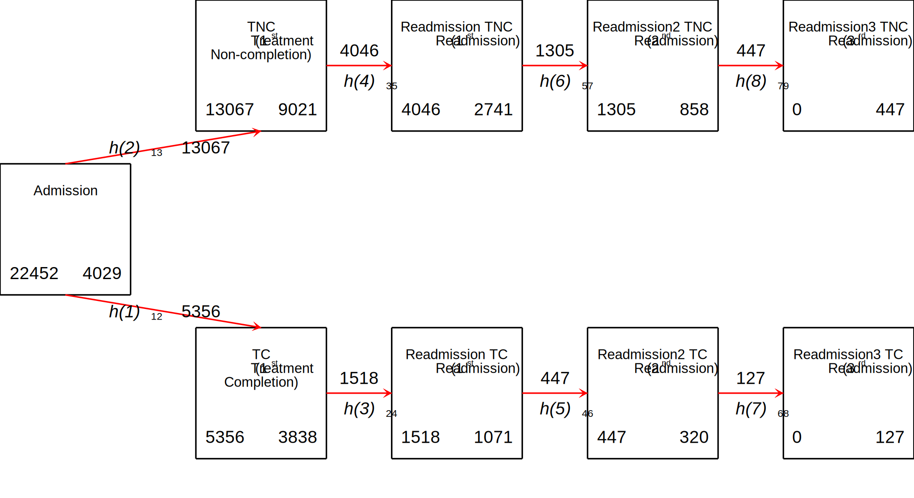

Date created: 17:19:10 21 Oct 2022.
Install commands that are unavailable or out of date.
. *<< dd_do : noout > >
. clear all
. *https://onlinelibrary.wiley.com/doi/epdf/10.1002/sim.8894
. *https://pclambert.net/pdf/Stata_Nordic2019_Lambert.pdf
. *https://slidetodoc.com/automated-reports-using-stata-chuck-huber-ph-d/
. *~Mi unidad\Alvacast\SISTRAT 2019 (github)\_supp_mstates\stata\12874_2020_1192_MOESM1_ESM.docx
. *https://opr.princeton.edu/workshops/Downloads/2015May_StataGraphicsKoffman.pdf
. *http://www.bruunisejs.dk/StataHacks/My%20commands/matprint/matprint_demo/
. *https://pure.au.dk/portal/files/140882936/ScientificWorkInStataGoneEasy.pdf
. *https://www.stata.com/meeting/nordic-and-baltic18/slides/nordic-and-baltic18_Bruun.pdf
. *https://github.com/dvorakt/TIER_exercises/blob/master/dyndoc_debt_growth/debt%20and%20growth%20stata%20dyndoc.do
.
. cap noi which predictms
C:\Users\CISS Fondecyt\ado\plus\p\predictms.ado
*! version 4.4.0 22dec2021 MJC
. if _rc==111 {
. cap noi ssc install multistate
. }
. cap noi which merlin
C:\Users\CISS Fondecyt\ado\plus\m\merlin.ado
*! version 2.1.5 18mar2022 MJC
. if _rc==111 {
. cap noi ssc install merlin
. }
. cap noi which sumat
C:\Users\CISS Fondecyt\ado\plus\s\sumat.ado
*! Part of package matrixtools v. 0.25
*! Support: Niels Henrik Bruun, niels.henrik.bruun@gmail.com
*! 2021-01-03 toxl added
. if _rc==111 {
. cap noi scc install matrixtools
. }
. cap noi which estwrite
C:\Users\CISS Fondecyt\ado\plus\e\estwrite.ado
*! version 1.2.4 04sep2009
*! version 1.0.1 15may2007 (renamed from -eststo- to -estwrite-; -append- added)
*! version 1.0.0 29apr2005 Ben Jann (ETH Zurich)
. if _rc==111 {
. cap noi ssc install estwrite
. }
. cap noi which winsor2
C:\Users\CISS Fondecyt\ado\plus\w\winsor2.ado
*! Inspirit of -winsor-(NJ Cox) and -winsorizeJ-(J Caskey)
*! Lian Yujun, arlionn@163.com, 2013-12-25
*! 1.1 2014.12.16
. if _rc==111 {
. cap noi ssc install winsor2
. }
.
We need to obtain the file and the work folder.
. mata : st_numscalar("OK", direxists("/volumes/sdrive/data//"))
. if scalar(OK) == 1 {
. cap noi cd "/volumes/sdrive/data//"
. global pathdata "/volumes/sdrive/data//"
. di "Location= ${pathdata}; Date: `c(current_date)', considering an OS `c(os)' for the user: `c(username)'"
. }
. else display "This file does not exist"
This file does not exist
.
. mata : st_numscalar("OK", direxists("E:\Mi unidad\Alvacast\SISTRAT 2019 (github)\_mult_state_ags\"))
. if scalar(OK) == 1 {
. cap noi cd "E:\Mi unidad\Alvacast\SISTRAT 2019 (github)\_mult_state_ags"
. global pathdata "E:\Mi unidad\Alvacast\SISTRAT 2019 (github)\_mult_state_ags"
. global pathdata2 "E:/Mi unidad/Alvacast/SISTRAT 2019 (github)/_mult_state_ags/"
. di "Location= ${pathdata}; Date: `c(current_date)', considering an OS `c(os)' for the user: `c(username)'"
. }
. else display "This file does not exist"
This file does not exist
.
. mata : st_numscalar("OK", direxists("C:\Users\CISS Fondecyt\Mi unidad\Alvacast\SISTRAT 2019 (github)\_mult_state_ags\"))
. if scalar(OK) == 1 {
. cap noi cd "C:\Users\CISS Fondecyt\Mi unidad\Alvacast\SISTRAT 2019 (github)"
C:\Users\CISS Fondecyt\Mi unidad\Alvacast\SISTRAT 2019 (github)
. global pathdata "C:\Users\CISS Fondecyt\Mi unidad\Alvacast\SISTRAT 2019 (github)\_mult_state_ags"
. global pathdata2 "C:/Users/CISS Fondecyt/Mi unidad/Alvacast/SISTRAT 2019 (github)/_mult_state_ags/"
. di "Location= ${pathdata}; Date: `c(current_date)', considering an OS `c(os)' for the user: `c(username)'"
Location= C:\Users\CISS Fondecyt\Mi unidad\Alvacast\SISTRAT 2019 (github)\_mult_state_ags; Date: 21 Oct 2022, considering an OS Windows for
> the user: CISS Fondecyt
. }
. else display "This file does not exist"
.
. mata : st_numscalar("OK", direxists("C:\Users\andre\Desktop\_mult_state_ags\"))
. if scalar(OK) == 1 {
. cap noi cd "C:\Users\andre\Desktop\_mult_state_ags"
. global pathdata "C:\Users\andre\Desktop\_mult_state_ags"
. global pathdata2 "C:/Users/andre/Desktop/_mult_state_ags/"
. di "Location= ${pathdata}; Date: `c(current_date)', considering an OS `c(os)' for the user: `c(username)'"
. }
. else display "This file does not exist"
This file does not exist
.
. mata : st_numscalar("OK", direxists("C:\Users\CISS Fondecyt\OneDrive\Documentos\"))
. if scalar(OK) == 1 {
. cap noi cd "C:\Users\CISS Fondecyt\Mi unidad\Alvacast\SISTRAT 2019 (github)\_mult_state_ags"
C:\Users\CISS Fondecyt\Mi unidad\Alvacast\SISTRAT 2019 (github)\_mult_state_ags
. global pathdata "C:\Users\CISS Fondecyt\Mi unidad\Alvacast\SISTRAT 2019 (github)\_mult_state_ags"
. global pathdata2 "C:/Users/CISS Fondecyt/Mi unidad/Alvacast/SISTRAT 2019 (github)/_mult_state_ags/"
. di "Location= ${pathdata}; Date: `c(current_date)', considering an OS `c(os)' for the user: `c(username)'"
Location= C:\Users\CISS Fondecyt\Mi unidad\Alvacast\SISTRAT 2019 (github)\_mult_state_ags; Date: 21 Oct 2022, considering an OS Windows for
> the user: CISS Fondecyt
. }
. else display "This file does not exist"
.
Path data= C:\Users\CISS Fondecyt\Mi unidad\Alvacast\SISTRAT 2019 (github)_mult_state_ags;
Timestamp: 21 Oct 2022, considering that is a Windows OS for the username: CISS Fondecyt
First we open the files and drop the variables that would mistakenly amplify the sample, and define labels.
The file is located and named as: C:/Users/CISS Fondecyt/Mi unidad/Alvacast/SISTRAT 2019 (github)/_mult_state_ags/nine_st_msprep_oct22.dta
. //2022-10-09
. *a) open
. //use "${pathdata2}five_st_msprep_apr22.dta", clear
. use "${pathdata2}nine_st_msprep_oct22.dta", clear
. *label
. cap noi label variable id "Patient ID"
. cap noi label variable group_match "Matching group at baseline"
. cap noi label variable tipo_de_plan_res_1 "Baseline Setting (Residential)"
. cap noi label variable TD_status "Baseline treatment completion (TC)"
. cap noi label variable DWCA_status "Baseline treatment non-completion (TNC)"
. cap noi label variable Readmission_status "Readmission (TC)"
. cap noi label variable Readmissionb_status "Readmission (TNC)"
. cap noi label variable Readmission2_status "Readmission (2nd treatment) (TC)"
. cap noi label variable Readmission2b_status "Readmission (2nd treatment) (TNC)"
. cap noi label variable Readmission3_status "Readmission (3rd treatment) (TC)"
. cap noi label variable Readmission3b_status "Readmission (3rd treatment) (TNC)"
. cap noi label variable TD_time "Time to Baseline treatment completion (TC)"
. cap noi label variable DWCA_time "Time to Baseline treatment non-completion (TNC)"
. cap noi label variable Readmission_time "Time to Readmission (TC)"
. cap noi label variable Readmissionb_time "Time to Readmission (TNC)"
. cap noi label variable Readmission2_time "Time to Readmission (2nd treatment) (TC)"
. cap noi label variable Readmission2b_time "Time to Readmission (2nd treatment) (TNC)"
. cap noi label variable Readmission3_time "Time to Readmission (3rd treatment) (TC)"
. cap noi label variable Readmission3b_time "Time to Readmission (3rd treatment) (TNC)"
. cap noi label variable cens_time "Censorship from administrative ecnsorship (2019-11-13) - first admission"
>
.
. /*
> //2022-09-28 drop treatments without completion or not completion
>
> *drop if DWCA_1 ==0 & TD_1 ==0
> cap noi rename TD_1 TD_status
> cap noi rename DWCA_1 DWCA_status
> //2022-09-28 generate time-to completion/noncompletion
> gen TD_time = dias_treat_imp_sin_na_1
> replace TD_time=cens_time if TD_status==0
> gen DWCA_time = dias_treat_imp_sin_na_1
> replace DWCA_time=cens_time if DWCA_status==0
>
> //2022-09-28
> gen Readmissionb_time = Readmission_time
> gen Readmission2b_time = Readmission2_time
> gen Readmission3b_time = Readmission3_time
> gen Readmission4b_time = Readmission4_time
> gen Readmissionb_status = Readmission_status
> gen Readmission2b_status = Readmission2_status
> gen Readmission3b_status = Readmission3_status
> gen Readmission4b_status = Readmission4_status
>
> *DWCA
> replace Readmissionb_status = 0 if TD_status==1
> replace Readmission2b_status = 0 if TD_status==1
> replace Readmission3b_status = 0 if TD_status==1
> replace Readmission4b_status = 0 if TD_status==1
>
> *TD
> replace Readmission_status = 0 if DWCA_status==1
> replace Readmission2_status = 0 if DWCA_status==1
> replace Readmission3_status = 0 if DWCA_status==1
> replace Readmission4_status = 0 if DWCA_status==1
>
> *if readmission occurred, we substract the time in each treatment trajectory
> replace Readmission_time=Readmission_time-TD_time if Readmission_status==1 & TD_status==1
>
> replace Readmissionb_time=Readmissionb_time-DWCA_time if Readmission_statusb==1 & DWCA_status==1
>
> *if it is censored because readmission did not happen
> replace Readmission_time=cens_time if Readmission_status==0
> replace Readmissionb_time=cens_time if Readmissionb_status==0
>
> order id tipo_de_plan_res_1 cens_time TD_status TD_time DWCA_status DWCA_time Readmission_status Readmission_time Readmissionb_status Rea
> dmissionb_time Readmission2_status Readmission2_time Readmission2b_status Readmission2b_time Readmission3_status Readmission3_time Readmi
> ssion3b_status Readmission3b_time
>
> *do it again just in case
> replace Readmission_time=cens_time if Readmission_status==0
> replace Readmissionb_time=cens_time if Readmissionb_status==0
> replace Readmission2_time=cens_time if Readmission2_status==0
> replace Readmission2b_time=cens_time if Readmission2b_status==0
> replace Readmission3_time=cens_time if Readmission3_status==0
> replace Readmission3b_time=cens_time if Readmission3b_status==0
> replace Readmission4_time=cens_time if Readmission4_status==0
> replace Readmission4b_time=cens_time if Readmission4b_status==0
> */
.
. order id tipo_de_plan_res_1 cens_time TD_status TD_time DWCA_status DWCA_time Readmission_status Readmission_time Readmissionb_status Rea
> dmissionb_time Readmission2_status Readmission2_time Readmission2b_status Readmission2b_time Readmission3_status Readmission3_time Readmi
> ssion3b_status Readmission3b_time
.
. *I'm not sure if this is the problem. It seems that is not
. *drop if DWCA_status==0 & TD_status==0
Then we define the transition matrix:
. matrix mat_nine_states = ( ///
> .,1,2,.,.,.,.,.,. \ ///
> .,.,.,3,.,.,.,.,. \ ///
> .,.,.,.,4,.,.,.,. \ ///
> .,.,.,.,.,5,.,.,. \ ///
> .,.,.,.,.,.,6,.,. \ ///
> .,.,.,.,.,.,.,7,. \ ///
> .,.,.,.,.,.,.,.,8 \ ///
> .,.,.,.,.,.,.,.,. \ ///
> .,.,.,.,.,.,.,.,. ///
> )
. *a = completion
. *b = non-completion <<
.
. matrix colnames mat_nine_states = start TD_status DWCA_status Readmission_status Readmissionb_status Readmission2_status Readmission2b_s
> tatus Readmission3_status Readmission3b_status
. matrix rownames mat_nine_states = start TD_status DWCA_status Readmission_status Readmissionb_status Readmission2_status Readmission2b_
> status Readmission3_status Readmission3b_status
. matrix coleq mat_nine_states = to to to to to to to to to
. matrix roweq mat_nine_states = from from from from from from from from from
.
| to | > | h> | ||||||||
|---|---|---|---|---|---|---|---|---|---|---|
| start | TD_status | DWCA_status | Readmission_status | >Readmissionb_status | Readmission2_status | Readmission2b_status | Readmission3_status | Readmission3b_status h> | ||
| from | start | 1 | 2 | > | ||||||
| TD_status | 3 | > | d> | |||||||
| DWCA_status | > 4 | d> | ||||||||
| Readmission_status | > | 5 | d> | |||||||
| Readmissionb_status | > | 6 | d> | |||||||
| Readmission2_status | > | 7 | d> | |||||||
| Readmission2b_status | > | 8 d> | ||||||||
| Readmission3_status | > | d> | ||||||||
| Readmission3b_status | > | d> |
and transform the database in a long format according to the specifications and the transition matrix.
Finally, the database adopt the following structure:

Set the database as a renewal time.
. *stset _stop, enter(_start) failure(_status=1) //* scale(365.25) id(id)
.
. *file:///G:/Mi%20unidad/Alvacast/SISTRAT%202019%20(github)/_supp_mstates/stata/crowther2017%20(1).pdf
. stset _time, failure(_status==1)
failure event: _status == 1
obs. time interval: (0, _time]
exit on or before: failure
------------------------------------------------------------------------------
70,643 total observations
0 exclusions
------------------------------------------------------------------------------
70,643 observations remaining, representing
26,313 failures in single-record/single-failure data
52941729 total analysis time at risk and under observation
at risk from t = 0
earliest observed entry t = 0
last observed exit t = 4,179
.
.
. forvalues i = 1/8 {
2. stphplot if _trans==`i', by(tipo_de_plan_res_1) ///
> scheme(sj) graphregion(color(white)) ///
> legend(pos(1) ring(0) col(1) symysize(zero) keygap(1) symxsize(large) order( 1 2) lab(1 "Ambulatory") lab(2 "Residential") size(s
> mall)) ///
> note("{it:Note. Means and 95% CI's}",size(vsmall)) ///
> title("Loglog Surv vs. logtime by Tr. Setting (Trans.=`i')", size(small)) name(stphplot_res_`i', replace) ///
> saving(stphplot_res_`i'_22_corr3.gph, replace)
3. }
failure _d: _status == 1
analysis time _t: _time
(file stphplot_res_1_22_corr3.gph saved)
failure _d: _status == 1
analysis time _t: _time
(file stphplot_res_2_22_corr3.gph saved)
failure _d: _status == 1
analysis time _t: _time
(file stphplot_res_3_22_corr3.gph saved)
failure _d: _status == 1
analysis time _t: _time
(file stphplot_res_4_22_corr3.gph saved)
failure _d: _status == 1
analysis time _t: _time
(file stphplot_res_5_22_corr3.gph saved)
failure _d: _status == 1
analysis time _t: _time
(file stphplot_res_6_22_corr3.gph saved)
failure _d: _status == 1
analysis time _t: _time
(file stphplot_res_7_22_corr3.gph saved)
failure _d: _status == 1
analysis time _t: _time
(file stphplot_res_8_22_corr3.gph saved)
.
. graph combine "${pathdata}\stphplot_res_1_22_corr3.gph" "${pathdata}\stphplot_res_2_22_corr3.gph" "${pathdata}\stphplot_res_3_22_corr3.gp
> h" "${pathdata}\stphplot_res_4_22_corr3.gph" ///
> "${pathdata}\stphplot_res_5_22_corr3.gph" "${pathdata}\stphplot_res_6_22_corr3.gph" "${pathdata}\stphplot_res_7_22_corr3.gph" "${
> pathdata}\stphplot_res_8_22_corr3.gph", ///
> colfirst ycommon xcommon iscale(*.7) imargin(tiny) graphregion(color(gs16)) ///
> title("Combination of −ln{−ln(survival)} vs. ln(analysis time)" "Renewal time", size(medium)) cols(4) /// *subtitle("{it:}", size(small))
> ///
> note("{it: Note: Ordered by columns, from up to down, left to right}", size(tiny)) ///
> name(tr_ph_ln_srv_t_res_s_corr3, replace)
.
. local num 1 2 3 4 5 6 8
. foreach i of local num {
2. gr_edit .plotregion1.graph`i'.legend.draw_view.setstyle, style(no)
3. }
.
=============================================================================
=============================================================================
Generated an Aalen-Johanssen estimator to obtain the transition probabilities of the data from the time 0 (from admission). For this, we separated the transition probabilities according to the setting at baseline.
. *http://fmwww.bc.edu/repec/bocode/m/msaj.ado
. msaj, transmatrix(mat_nine_states) by(tipo_de_plan_res_1) ci
. rename (P_AJ_*) (ajprob*)
To generate figures, we select the valid transitions


Calculate transition probabilities from a determined states in times 90, 365 (1 year), 1095 (3 years) & 1826 (5 years).
variable trp_ajprob* not found
variable _t2 not found
(36,012 real changes made)
(file msaj_12_jun_22_corr3.gph saved)
(file msaj_13_jun_22_corr3.gph saved)

(file msaj_24_jun_22_corr3.gph saved)

(file msaj_35_jun_22_corr3.gph saved)

(file msaj_46_jun_22_corr3.gph saved)
(file msaj_57_jun_22_corr3.gph saved)

(file msaj_68_jun_22_corr3.gph saved)

(file msaj_79_jun_22_corr3.gph saved)

Transition Probabilities from Admission to Treatment completion with confidence intervals
. foreach var of varlist trp_ajprob_30_1826_12 trp_ajprob_30_1826_12_lci trp_ajprob_30_1826_12_uci {
2. scalar variable = "`var'"
3. qui summarize `var' if inrange(_t, 90, 91) & tipo_de_plan_res_1==0
4. scalar e3m_`var' = round(round(r(mean),.001)*100,.1)
5. qui summarize `var' if inrange(_t, 365, 366) & tipo_de_plan_res_1==0
6. scalar e1y_`var' = round(round(r(mean),.001)*100,.1)
7. qui summarize `var' if inrange(_t, 1095, 1096) & tipo_de_plan_res_1==0
8. scalar e3y_`var' = round(round(r(mean),.001)*100,.1)
9. qui summarize `var' if inrange(_t, 1812, 1827) & tipo_de_plan_res_1==0
10. scalar e5y_`var' = round(round(r(mean),.001)*100,.1)
11. cap noi matrix e_a_`var' = (`=scalar(e3m_`var')'\ `=scalar(e1y_`var')'\ `=scalar(scalar(e3y_`var'))'\ `=scalar(scalar(e5y_`v
> ar'))')
12. matrix colnames e_a_`var' = `var'
13. matrix rownames e_a_`var' = 3_mths 1_yr 3_yrs 5_yrs
14. qui summarize `var' if inrange(_t, 90, 91) & tipo_de_plan_res_1==1
15. scalar e3m_`var' = round(round(r(mean),.001)*100,.1)
16. qui summarize `var' if inrange(_t, 365, 366) & tipo_de_plan_res_1==1
17. scalar e1y_`var' = round(round(r(mean),.001)*100,.1)
18. qui summarize `var' if inrange(_t, 1095, 1096) & tipo_de_plan_res_1==1
19. scalar e3y_`var' = round(round(r(mean),.001)*100,.1)
20. qui summarize `var' if inrange(_t, 1812, 1827) & tipo_de_plan_res_1==1
21. scalar e5y_`var' = round(round(r(mean),.001)*100,.1)
22. cap noi matrix e_b_`var' = (`=scalar(e3m_`var')'\ `=scalar(e1y_`var')'\ `=scalar(scalar(e3y_`var'))'\ `=scalar(scalar(e5y_`v
> ar'))')
23. matrix colnames e_b_`var' = `var'
24. matrix rownames e_b_`var' = 3_mths 1_yr 3_yrs 5_yrs
25. }
.
. matrix est_msaj12 = (e_a_trp_ajprob_30_1826_12, e_a_trp_ajprob_30_1826_12_lci, e_a_trp_ajprob_30_1826_12_uci, e_b_trp_ajprob_30_1826_12,
> e_b_trp_ajprob_30_1826_12_lci, e_b_trp_ajprob_30_1826_12_uci)
. matrix colnames est_msaj12 = Est_Amb LCI UCI Est_Res LCI UCI
.
. esttab matrix(est_msaj12) using "${pathdata2}pr_msaj12_corr3.html", replace
(output written to C:/Users/CISS Fondecyt/Mi unidad/Alvacast/SISTRAT 2019 (github)/_mult_state_ags/pr_msaj12_corr3.html)
The transition probabilities are presented here:
| est_msaj12 | ||||||
| Est_Amb | LCI | UCI | Est_Res | LCI | UCI | |
| 3_mths | 0 | 0 | 0 | 0 | 0 | 0 |
| 1_yr | 12.8 | 12 | 13.5 | 24.4 | 23.5 | 25.3 |
| 3_yrs | 23.5 | 22.6 | 24.5 | 34.2 | 33.1 | 35.2 |
| 5_yrs | 21.9 | 20.9 | 22.9 | 31.3 | 30.2 | 32.4 |
Transition Probabilities from Admission to Treatment Non-completion
. foreach var of varlist trp_ajprob_30_1826_13 trp_ajprob_30_1826_13_lci trp_ajprob_30_1826_13_uci {
2. scalar variable = "`var'"
3. qui summarize `var' if inrange(_t, 90, 91) & tipo_de_plan_res_1==0
4. scalar e3m_`var' = round(round(r(mean),.001)*100,.1)
5. qui summarize `var' if inrange(_t, 365, 366) & tipo_de_plan_res_1==0
6. scalar e1y_`var' = round(round(r(mean),.001)*100,.1)
7. qui summarize `var' if inrange(_t, 1095, 1096) & tipo_de_plan_res_1==0
8. scalar e3y_`var' = round(round(r(mean),.001)*100,.1)
9. qui summarize `var' if inrange(_t, 1812, 1827) & tipo_de_plan_res_1==0
10. scalar e5y_`var' = round(round(r(mean),.001)*100,.1)
11. cap noi matrix e_a_`var' = (`=scalar(e3m_`var')'\ `=scalar(e1y_`var')'\ `=scalar(scalar(e3y_`var'))'\ `=scalar(scalar(e5y_`v
> ar'))')
12. matrix colnames e_a_`var' = `var'
13. matrix rownames e_a_`var' = 3_mths 1_yr 3_yrs 5_yrs
14. qui summarize `var' if inrange(_t, 90, 91) & tipo_de_plan_res_1==1
15. scalar e3m_`var' = round(round(r(mean),.001)*100,.1)
16. qui summarize `var' if inrange(_t, 365, 366) & tipo_de_plan_res_1==1
17. scalar e1y_`var' = round(round(r(mean),.001)*100,.1)
18. qui summarize `var' if inrange(_t, 1095, 1096) & tipo_de_plan_res_1==1
19. scalar e3y_`var' = round(round(r(mean),.001)*100,.1)
20. qui summarize `var' if inrange(_t, 1812, 1827) & tipo_de_plan_res_1==1
21. scalar e5y_`var' = round(round(r(mean),.001)*100,.1)
22. cap noi matrix e_b_`var' = (`=scalar(e3m_`var')'\ `=scalar(e1y_`var')'\ `=scalar(scalar(e3y_`var'))'\ `=scalar(scalar(e5y_`v
> ar'))')
23. matrix colnames e_b_`var' = `var'
24. matrix rownames e_b_`var' = 3_mths 1_yr 3_yrs 5_yrs
25. }
.
. matrix est_msaj13 = (e_a_trp_ajprob_30_1826_13, e_a_trp_ajprob_30_1826_13_lci, e_a_trp_ajprob_30_1826_13_uci, e_b_trp_ajprob_30_1826_13,
> e_b_trp_ajprob_30_1826_13_lci, e_b_trp_ajprob_30_1826_13_uci)
. matrix colnames est_msaj13 = Est_Amb LCI UCI Est_Res LCI UCI
.
. esttab matrix(est_msaj13) using "${pathdata2}pr_msaj13_corr3.html", replace
(output written to C:/Users/CISS Fondecyt/Mi unidad/Alvacast/SISTRAT 2019 (github)/_mult_state_ags/pr_msaj13_corr3.html)
The transition probabilities are presented here:
| est_msaj13 | ||||||
| Est_Amb | LCI | UCI | Est_Res | LCI | UCI | |
| 3_mths | .2 | .1 | .3 | .1 | .1 | .2 |
| 1_yr | 46.9 | 45.8 | 47.9 | 31.8 | 30.8 | 32.8 |
| 3_yrs | 48.6 | 47.5 | 49.6 | 31.8 | 30.8 | 32.8 |
| 5_yrs | 45.5 | 44.5 | 46.6 | 29.4 | 28.5 | 30.4 |
Transition Probabilities from Treatment Completion to Readmission
. foreach var of varlist trp_ajprob_30_1826_24 trp_ajprob_30_1826_24_lci trp_ajprob_30_1826_24_uci {
2. scalar variable = "`var'"
3. qui summarize `var' if inrange(_t, 90, 91) & tipo_de_plan_res_1==0
4. scalar e3m_`var' = round(round(r(mean),.001)*100,.1)
5. qui summarize `var' if inrange(_t, 365, 366) & tipo_de_plan_res_1==0
6. scalar e1y_`var' = round(round(r(mean),.001)*100,.1)
7. qui summarize `var' if inrange(_t, 1095, 1096) & tipo_de_plan_res_1==0
8. scalar e3y_`var' = round(round(r(mean),.001)*100,.1)
9. qui summarize `var' if inrange(_t, 1812, 1827) & tipo_de_plan_res_1==0
10. scalar e5y_`var' = round(round(r(mean),.001)*100,.1)
11. cap noi matrix e_a_`var' = (`=scalar(e3m_`var')'\ `=scalar(e1y_`var')'\ `=scalar(scalar(e3y_`var'))'\ `=scalar(scalar(e5y_`v
> ar'))')
12. matrix colnames e_a_`var' = `var'
13. matrix rownames e_a_`var' = 3_mths 1_yr 3_yrs 5_yrs
14. qui summarize `var' if inrange(_t, 90, 91) & tipo_de_plan_res_1==1
15. scalar e3m_`var' = round(round(r(mean),.001)*100,.1)
16. qui summarize `var' if inrange(_t, 365, 366) & tipo_de_plan_res_1==1
17. scalar e1y_`var' = round(round(r(mean),.001)*100,.1)
18. qui summarize `var' if inrange(_t, 1095, 1096) & tipo_de_plan_res_1==1
19. scalar e3y_`var' = round(round(r(mean),.001)*100,.1)
20. qui summarize `var' if inrange(_t, 1812, 1827) & tipo_de_plan_res_1==1
21. scalar e5y_`var' = round(round(r(mean),.001)*100,.1)
22. cap noi matrix e_b_`var' = (`=scalar(e3m_`var')'\ `=scalar(e1y_`var')'\ `=scalar(scalar(e3y_`var'))'\ `=scalar(scalar(e5y_`v
> ar'))')
23. matrix colnames e_b_`var' = `var'
24. matrix rownames e_b_`var' = 3_mths 1_yr 3_yrs 5_yrs
25. }
.
. matrix est_msaj24 = (e_a_trp_ajprob_30_1826_24, e_a_trp_ajprob_30_1826_24_lci, e_a_trp_ajprob_30_1826_24_uci, e_b_trp_ajprob_30_1826_24,
> e_b_trp_ajprob_30_1826_24_lci, e_b_trp_ajprob_30_1826_24_uci)
. matrix colnames est_msaj24 = Est_Amb LCI UCI Est_Res LCI UCI
.
. esttab matrix(est_msaj24) using "${pathdata2}pr_msaj24_corr3.html", replace
(output written to C:/Users/CISS Fondecyt/Mi unidad/Alvacast/SISTRAT 2019 (github)/_mult_state_ags/pr_msaj24_corr3.html)
The transition probabilities are presented here:
| est_msaj24 | ||||||
| Est_Amb | LCI | UCI | Est_Res | LCI | UCI | |
| 3_mths | 0 | 0 | 0 | 0 | 0 | 0 |
| 1_yr | 6.5 | 5.4 | 7.6 | 9.6 | 8.5 | 10.6 |
| 3_yrs | 13.5 | 11.8 | 15.1 | 18.8 | 17.3 | 20.2 |
| 5_yrs | 18.1 | 15.9 | 20.2 | 22.6 | 20.9 | 24.3 |
Transition Probabilities from Treatment Non-completion to Readmission
. foreach var of varlist trp_ajprob_30_1826_35 trp_ajprob_30_1826_35_lci trp_ajprob_30_1826_35_uci {
2. scalar variable = "`var'"
3. qui summarize `var' if inrange(_t, 90, 91) & tipo_de_plan_res_1==0
4. scalar e3m_`var' = round(round(r(mean),.001)*100,.1)
5. qui summarize `var' if inrange(_t, 365, 366) & tipo_de_plan_res_1==0
6. scalar e1y_`var' = round(round(r(mean),.001)*100,.1)
7. qui summarize `var' if inrange(_t, 1095, 1096) & tipo_de_plan_res_1==0
8. scalar e3y_`var' = round(round(r(mean),.001)*100,.1)
9. qui summarize `var' if inrange(_t, 1812, 1827) & tipo_de_plan_res_1==0
10. scalar e5y_`var' = round(round(r(mean),.001)*100,.1)
11. cap noi matrix e_a_`var' = (`=scalar(e3m_`var')'\ `=scalar(e1y_`var')'\ `=scalar(scalar(e3y_`var'))'\ `=scalar(scalar(e5y_`v
> ar'))')
12. matrix colnames e_a_`var' = `var'
13. matrix rownames e_a_`var' = 3_mths 1_yr 3_yrs 5_yrs
14. qui summarize `var' if inrange(_t, 90, 91) & tipo_de_plan_res_1==1
15. scalar e3m_`var' = round(round(r(mean),.001)*100,.1)
16. qui summarize `var' if inrange(_t, 365, 366) & tipo_de_plan_res_1==1
17. scalar e1y_`var' = round(round(r(mean),.001)*100,.1)
18. qui summarize `var' if inrange(_t, 1095, 1096) & tipo_de_plan_res_1==1
19. scalar e3y_`var' = round(round(r(mean),.001)*100,.1)
20. qui summarize `var' if inrange(_t, 1812, 1827) & tipo_de_plan_res_1==1
21. scalar e5y_`var' = round(round(r(mean),.001)*100,.1)
22. cap noi matrix e_b_`var' = (`=scalar(e3m_`var')'\ `=scalar(e1y_`var')'\ `=scalar(scalar(e3y_`var'))'\ `=scalar(scalar(e5y_`v
> ar'))')
23. matrix colnames e_b_`var' = `var'
24. matrix rownames e_b_`var' = 3_mths 1_yr 3_yrs 5_yrs
25. }
.
. matrix est_msaj35 = (e_a_trp_ajprob_30_1826_35, e_a_trp_ajprob_30_1826_35_lci, e_a_trp_ajprob_30_1826_35_uci, e_b_trp_ajprob_30_1826_35,
> e_b_trp_ajprob_30_1826_35_lci, e_b_trp_ajprob_30_1826_35_uci)
. matrix colnames est_msaj35 = Est_Amb LCI UCI Est_Res LCI UCI
.
. esttab matrix(est_msaj35) using "${pathdata2}pr_msaj35_corr3.html", replace
(output written to C:/Users/CISS Fondecyt/Mi unidad/Alvacast/SISTRAT 2019 (github)/_mult_state_ags/pr_msaj35_corr3.html)
The transition probabilities are presented here:
| est_msaj35 | ||||||
| Est_Amb | LCI | UCI | Est_Res | LCI | UCI | |
| 3_mths | 0 | 0 | .1 | 0 | 0 | .1 |
| 1_yr | 8.3 | 7.6 | 8.9 | 11.7 | 10.8 | 12.5 |
| 3_yrs | 15.8 | 14.9 | 16.7 | 20.2 | 19.1 | 21.3 |
| 5_yrs | 19.3 | 18.2 | 20.4 | 23.5 | 22.2 | 24.7 |
Transition Probabilities from Readmission to Second Readmission (TC)
. foreach var of varlist trp_ajprob_30_1826_46 trp_ajprob_30_1826_46_lci trp_ajprob_30_1826_46_uci {
2. scalar variable = "`var'"
3. qui summarize `var' if inrange(_t, 90, 91) & tipo_de_plan_res_1==0
4. scalar e3m_`var' = round(round(r(mean),.001)*100,.1)
5. qui summarize `var' if inrange(_t, 365, 366) & tipo_de_plan_res_1==0
6. scalar e1y_`var' = round(round(r(mean),.001)*100,.1)
7. qui summarize `var' if inrange(_t, 1095, 1096) & tipo_de_plan_res_1==0
8. scalar e3y_`var' = round(round(r(mean),.001)*100,.1)
9. qui summarize `var' if inrange(_t, 1812, 1827) & tipo_de_plan_res_1==0
10. scalar e5y_`var' = round(round(r(mean),.001)*100,.1)
11. cap noi matrix e_a_`var' = (`=scalar(e3m_`var')'\ `=scalar(e1y_`var')'\ `=scalar(scalar(e3y_`var'))'\ `=scalar(scalar(e5y_`v
> ar'))')
12. matrix colnames e_a_`var' = `var'
13. matrix rownames e_a_`var' = 3_mths 1_yr 3_yrs 5_yrs
14. qui summarize `var' if inrange(_t, 90, 91) & tipo_de_plan_res_1==1
15. scalar e3m_`var' = round(round(r(mean),.001)*100,.1)
16. qui summarize `var' if inrange(_t, 365, 366) & tipo_de_plan_res_1==1
17. scalar e1y_`var' = round(round(r(mean),.001)*100,.1)
18. qui summarize `var' if inrange(_t, 1095, 1096) & tipo_de_plan_res_1==1
19. scalar e3y_`var' = round(round(r(mean),.001)*100,.1)
20. qui summarize `var' if inrange(_t, 1812, 1827) & tipo_de_plan_res_1==1
21. scalar e5y_`var' = round(round(r(mean),.001)*100,.1)
22. cap noi matrix e_b_`var' = (`=scalar(e3m_`var')'\ `=scalar(e1y_`var')'\ `=scalar(scalar(e3y_`var'))'\ `=scalar(scalar(e5y_`v
> ar'))')
23. matrix colnames e_b_`var' = `var'
24. matrix rownames e_b_`var' = 3_mths 1_yr 3_yrs 5_yrs
25. }
.
. matrix est_msaj46 = (e_a_trp_ajprob_30_1826_46, e_a_trp_ajprob_30_1826_46_lci, e_a_trp_ajprob_30_1826_46_uci, e_b_trp_ajprob_30_1826_46,
> e_b_trp_ajprob_30_1826_46_lci, e_b_trp_ajprob_30_1826_46_uci)
. matrix colnames est_msaj46 = Est_Amb LCI UCI Est_Res LCI UCI
.
. esttab matrix(est_msaj46) using "${pathdata2}pr_msaj46_corr3.html", replace
(output written to C:/Users/CISS Fondecyt/Mi unidad/Alvacast/SISTRAT 2019 (github)/_mult_state_ags/pr_msaj46_corr3.html)
The transition probabilities are presented here:
| est_msaj46 | ||||||
| Est_Amb | LCI | UCI | Est_Res | LCI | UCI | |
| 3_mths | 0 | 0 | 0 | 0 | 0 | 0 |
| 1_yr | 7.9 | 5.2 | 10.6 | 10.2 | 8.4 | 12.1 |
| 3_yrs | 22.5 | 17.7 | 27.3 | 23.7 | 20.7 | 26.6 |
| 5_yrs | 24.9 | 18.8 | 31 | 30.3 | 26.7 | 33.9 |
Transition Probabilities from Readmission to Second Readmission (TNC)
. foreach var of varlist trp_ajprob_30_1826_57 trp_ajprob_30_1826_57_lci trp_ajprob_30_1826_57_uci {
2. scalar variable = "`var'"
3. qui summarize `var' if inrange(_t, 90, 91) & tipo_de_plan_res_1==0
4. scalar e3m_`var' = round(round(r(mean),.001)*100,.1)
5. qui summarize `var' if inrange(_t, 365, 366) & tipo_de_plan_res_1==0
6. scalar e1y_`var' = round(round(r(mean),.001)*100,.1)
7. qui summarize `var' if inrange(_t, 1095, 1096) & tipo_de_plan_res_1==0
8. scalar e3y_`var' = round(round(r(mean),.001)*100,.1)
9. qui summarize `var' if inrange(_t, 1812, 1827) & tipo_de_plan_res_1==0
10. scalar e5y_`var' = round(round(r(mean),.001)*100,.1)
11. cap noi matrix e_a_`var' = (`=scalar(e3m_`var')'\ `=scalar(e1y_`var')'\ `=scalar(scalar(e3y_`var'))'\ `=scalar(scalar(e5y_`v
> ar'))')
12. matrix colnames e_a_`var' = `var'
13. matrix rownames e_a_`var' = 3_mths 1_yr 3_yrs 5_yrs
14. qui summarize `var' if inrange(_t, 90, 91) & tipo_de_plan_res_1==1
15. scalar e3m_`var' = round(round(r(mean),.001)*100,.1)
16. qui summarize `var' if inrange(_t, 365, 366) & tipo_de_plan_res_1==1
17. scalar e1y_`var' = round(round(r(mean),.001)*100,.1)
18. qui summarize `var' if inrange(_t, 1095, 1096) & tipo_de_plan_res_1==1
19. scalar e3y_`var' = round(round(r(mean),.001)*100,.1)
20. qui summarize `var' if inrange(_t, 1812, 1827) & tipo_de_plan_res_1==1
21. scalar e5y_`var' = round(round(r(mean),.001)*100,.1)
22. cap noi matrix e_b_`var' = (`=scalar(e3m_`var')'\ `=scalar(e1y_`var')'\ `=scalar(scalar(e3y_`var'))'\ `=scalar(scalar(e5y_`v
> ar'))')
23. matrix colnames e_b_`var' = `var'
24. matrix rownames e_b_`var' = 3_mths 1_yr 3_yrs 5_yrs
25. }
.
. matrix est_msaj57 = (e_a_trp_ajprob_30_1826_57, e_a_trp_ajprob_30_1826_57_lci, e_a_trp_ajprob_30_1826_57_uci, e_b_trp_ajprob_30_1826_57,
> e_b_trp_ajprob_30_1826_57_lci, e_b_trp_ajprob_30_1826_57_uci)
. matrix colnames est_msaj57 = Est_Amb LCI UCI Est_Res LCI UCI
.
. esttab matrix(est_msaj57) using "${pathdata2}pr_msaj57_corr3.html", replace
(output written to C:/Users/CISS Fondecyt/Mi unidad/Alvacast/SISTRAT 2019 (github)/_mult_state_ags/pr_msaj57_corr3.html)
The transition probabilities are presented here:
| est_msaj57 | ||||||
| Est_Amb | LCI | UCI | Est_Res | LCI | UCI | |
| 3_mths | 0 | 0 | .1 | 0 | 0 | .1 |
| 1_yr | 11.5 | 10 | 13 | 10.7 | 9.4 | 12 |
| 3_yrs | 23.7 | 21.5 | 25.9 | 24.2 | 22.3 | 26.2 |
| 5_yrs | 25.2 | 22.4 | 28 | 27 | 24.5 | 29.4 |
Transition Probabilities from Second to Third Readmission (TC)
. foreach var of varlist trp_ajprob_30_1826_68 trp_ajprob_30_1826_68_lci trp_ajprob_30_1826_68_uci {
2. scalar variable = "`var'"
3. qui summarize `var' if inrange(_t, 90, 91) & tipo_de_plan_res_1==0
4. scalar e3m_`var' = round(round(r(mean),.001)*100,.1)
5. qui summarize `var' if inrange(_t, 365, 366) & tipo_de_plan_res_1==0
6. scalar e1y_`var' = round(round(r(mean),.001)*100,.1)
7. qui summarize `var' if inrange(_t, 1095, 1096) & tipo_de_plan_res_1==0
8. scalar e3y_`var' = round(round(r(mean),.001)*100,.1)
9. qui summarize `var' if inrange(_t, 1812, 1827) & tipo_de_plan_res_1==0
10. scalar e5y_`var' = round(round(r(mean),.001)*100,.1)
11. cap noi matrix e_a_`var' = (`=scalar(e3m_`var')'\ `=scalar(e1y_`var')'\ `=scalar(scalar(e3y_`var'))'\ `=scalar(scalar(e5y_`v
> ar'))')
12. matrix colnames e_a_`var' = `var'
13. matrix rownames e_a_`var' = 3_mths 1_yr 3_yrs 5_yrs
14. qui summarize `var' if inrange(_t, 90, 91) & tipo_de_plan_res_1==1
15. scalar e3m_`var' = round(round(r(mean),.001)*100,.1)
16. qui summarize `var' if inrange(_t, 365, 366) & tipo_de_plan_res_1==1
17. scalar e1y_`var' = round(round(r(mean),.001)*100,.1)
18. qui summarize `var' if inrange(_t, 1095, 1096) & tipo_de_plan_res_1==1
19. scalar e3y_`var' = round(round(r(mean),.001)*100,.1)
20. qui summarize `var' if inrange(_t, 1812, 1827) & tipo_de_plan_res_1==1
21. scalar e5y_`var' = round(round(r(mean),.001)*100,.1)
22. cap noi matrix e_b_`var' = (`=scalar(e3m_`var')'\ `=scalar(e1y_`var')'\ `=scalar(scalar(e3y_`var'))'\ `=scalar(scalar(e5y_`v
> ar'))')
23. matrix colnames e_b_`var' = `var'
24. matrix rownames e_b_`var' = 3_mths 1_yr 3_yrs 5_yrs
25. }
.
. matrix est_msaj68 = (e_a_trp_ajprob_30_1826_68, e_a_trp_ajprob_30_1826_68_lci, e_a_trp_ajprob_30_1826_68_uci, e_b_trp_ajprob_30_1826_68,
> e_b_trp_ajprob_30_1826_68_lci, e_b_trp_ajprob_30_1826_68_uci)
. matrix colnames est_msaj68 = Est_Amb LCI UCI Est_Res LCI UCI
.
. esttab matrix(est_msaj68) using "${pathdata2}pr_msaj68_corr3.html", replace
(output written to C:/Users/CISS Fondecyt/Mi unidad/Alvacast/SISTRAT 2019 (github)/_mult_state_ags/pr_msaj68_corr3.html)
The transition probabilities are presented here:
| est_msaj68 | ||||||
| Est_Amb | LCI | UCI | Est_Res | LCI | UCI | |
| 3_mths | 0 | 0 | 0 | 0 | 0 | 0 |
| 1_yr | 14.2 | 7 | 21.4 | 11 | 7.5 | 14.5 |
| 3_yrs | 32.3 | 21.8 | 42.8 | 32.2 | 26.1 | 38.2 |
| 5_yrs | 41.6 | 29 | 54.2 | 37.3 | 30.8 | 43.9 |
Transition Probabilities from Second to Third Readmission (TNC)
. foreach var of varlist trp_ajprob_30_1826_79 trp_ajprob_30_1826_79_lci trp_ajprob_30_1826_79_uci {
2. scalar variable = "`var'"
3. qui summarize `var' if inrange(_t, 90, 91) & tipo_de_plan_res_1==0
4. scalar e3m_`var' = round(round(r(mean),.001)*100,.1)
5. qui summarize `var' if inrange(_t, 365, 366) & tipo_de_plan_res_1==0
6. scalar e1y_`var' = round(round(r(mean),.001)*100,.1)
7. qui summarize `var' if inrange(_t, 1095, 1096) & tipo_de_plan_res_1==0
8. scalar e3y_`var' = round(round(r(mean),.001)*100,.1)
9. qui summarize `var' if inrange(_t, 1812, 1827) & tipo_de_plan_res_1==0
10. scalar e5y_`var' = round(round(r(mean),.001)*100,.1)
11. cap noi matrix e_a_`var' = (`=scalar(e3m_`var')'\ `=scalar(e1y_`var')'\ `=scalar(scalar(e3y_`var'))'\ `=scalar(scalar(e5y_`v
> ar'))')
12. matrix colnames e_a_`var' = `var'
13. matrix rownames e_a_`var' = 3_mths 1_yr 3_yrs 5_yrs
14. qui summarize `var' if inrange(_t, 90, 91) & tipo_de_plan_res_1==1
15. scalar e3m_`var' = round(round(r(mean),.001)*100,.1)
16. qui summarize `var' if inrange(_t, 365, 366) & tipo_de_plan_res_1==1
17. scalar e1y_`var' = round(round(r(mean),.001)*100,.1)
18. qui summarize `var' if inrange(_t, 1095, 1096) & tipo_de_plan_res_1==1
19. scalar e3y_`var' = round(round(r(mean),.001)*100,.1)
20. qui summarize `var' if inrange(_t, 1812, 1827) & tipo_de_plan_res_1==1
21. scalar e5y_`var' = round(round(r(mean),.001)*100,.1)
22. cap noi matrix e_b_`var' = (`=scalar(e3m_`var')'\ `=scalar(e1y_`var')'\ `=scalar(scalar(e3y_`var'))'\ `=scalar(scalar(e5y_`v
> ar'))')
23. matrix colnames e_b_`var' = `var'
24. matrix rownames e_b_`var' = 3_mths 1_yr 3_yrs 5_yrs
25. }
.
. matrix est_msaj79 = (e_a_trp_ajprob_30_1826_79, e_a_trp_ajprob_30_1826_79_lci, e_a_trp_ajprob_30_1826_79_uci, e_b_trp_ajprob_30_1826_79,
> e_b_trp_ajprob_30_1826_79_lci, e_b_trp_ajprob_30_1826_79_uci)
. matrix colnames est_msaj79 = Est_Amb LCI UCI Est_Res LCI UCI
.
. esttab matrix(est_msaj79) using "${pathdata2}pr_msaj79_corr3.html", replace
(output written to C:/Users/CISS Fondecyt/Mi unidad/Alvacast/SISTRAT 2019 (github)/_mult_state_ags/pr_msaj79_corr3.html)
The transition probabilities are presented here:
| est_msaj79 | ||||||
| Est_Amb | LCI | UCI | Est_Res | LCI | UCI | |
| 3_mths | 0 | 0 | 0 | 0 | 0 | 0 |
| 1_yr | 11.6 | 8.8 | 14.4 | 13.9 | 11.2 | 16.5 |
| 3_yrs | 32.8 | 28.2 | 37.3 | 34.8 | 30.9 | 38.8 |
| 5_yrs | 44.7 | 39.2 | 50.3 | 45.2 | 40.5 | 49.9 |
=============================================================================
=============================================================================
We generated a list of parametric and intercept-only survival models with different distributions (Exponential, Weibull, Gompertz, Log-logistic, Log-normal & Generalized gamma. Aditionally, we defined a series of Royston-Parmar models with a function of restricted cubic splines, in which the knots (#df -1) are defined in each percentile of the distribution. We saved the estimates in the file called `parmodels_m_jun_22_corr3’.
. forvalues i = 1/8 {
2. // Exponential
. di in yellow "{bf: ***********}"
3. di in yellow "{bf: Transition `i': family Exp (intercept-only)}"
4. di in yellow "{bf: ***********}"
5. set seed 2125
6. qui cap noi merlin (_time if _trans == `i', family(exponential, fail(_status)))
7. estimates store m`i'_exp
8. // Weibull
. di in yellow "{bf: ***********}"
9. di in yellow "{bf: Transition `i': family Wei (intercept-only)}"
10. di in yellow "{bf: ***********}"
11. set seed 2125
12. qui cap noi merlin (_time if _trans == `i', family(weibull, fail(_status)))
13. estimates store m`i'_weib
14. // Gompertz
. di in yellow "{bf: ***********}"
15. di in yellow "{bf: Transition `i': family Gomp (intercept-only)}"
16. di in yellow "{bf: ***********}"
17. set seed 2125
18. qui cap noi merlin (_time if _trans == `i', family(gompertz, fail(_status)))
19. estimates store m`i'_gom
20. // Log logistic
. di in yellow "{bf: ***********}"
21. di in yellow "{bf: Transition `i': family Logl (intercept-only)}"
22. di in yellow "{bf: ***********}"
23. set seed 2125
24. qui cap noi merlin (_time if _trans == `i', family(loglogistic, fail(_status)))
25. estimates store m`i'_logl
26. // Log normal
. di in yellow "{bf: ***********}"
27. di in yellow "{bf: Transition `i': family Logn (intercept-only)}"
28. di in yellow "{bf: ***********}"
29. set seed 2125
30. qui cap noi merlin (_time if _trans == `i', family(lognormal, fail(_status)))
31. estimates store m`i'_logn
32. // Generalised gamma
. di in yellow "{bf: ***********}"
33. di in yellow "{bf: Transition `i': family Ggam (intercept-only)}"
34. di in yellow "{bf: ***********}"
35. set seed 2125
36. qui cap noi merlin (_time if _trans == `i', family(ggamma, fail(_status)))
37. estimates store m`i'_ggam
38. // Royston Parmar models
. forvalues j=2/10 {
39. set seed 2125
40. di in yellow "{bf: ***********}"
41. di in yellow "{bf: Transition `i': family RP`j' (intercept-only)}"
42. di in yellow "{bf: ***********}"
43. qui cap noi merlin (_time if _trans == `i', family(rp, df(`j') fail(_status)))
44. estimates store m`i'_rp`j'
45. }
46. }
***********
Transition 1: family Exp (intercept-only)
***********
Fitting full model:
Iteration 0: log likelihood = -9651537
Iteration 1: log likelihood = -48864.472
Iteration 2: log likelihood = -45536.344
Iteration 3: log likelihood = -45508.15
Iteration 4: log likelihood = -45508.084
Iteration 5: log likelihood = -45508.084
Fixed effects regression model Number of obs = 22,452
Log likelihood = -45508.084
------------------------------------------------------------------------------
| Coef. Std. Err. z P>|z| [95% Conf. Interval]
-------------+----------------------------------------------------------------
_time: |
_cons | -7.496655 .0136641 -548.64 0.000 -7.523436 -7.469874
------------------------------------------------------------------------------
***********
Transition 1: family Wei (intercept-only)
***********
Fitting full model:
Iteration 0: log likelihood = -9651537
Iteration 1: log likelihood = -48864.322 (not concave)
Iteration 2: log likelihood = -45947.602
Iteration 3: log likelihood = -45519.343
Iteration 4: log likelihood = -45458.371
Iteration 5: log likelihood = -45457.47
Iteration 6: log likelihood = -45457.47
Fixed effects regression model Number of obs = 22,452
Log likelihood = -45457.47
------------------------------------------------------------------------------
| Coef. Std. Err. z P>|z| [95% Conf. Interval]
-------------+----------------------------------------------------------------
_time: |
_cons | -6.911915 .0581693 -118.82 0.000 -7.025925 -6.797905
log(gamma) | -.0900893 .0091985 -9.79 0.000 -.1081181 -.0720605
------------------------------------------------------------------------------
***********
Transition 1: family Gomp (intercept-only)
***********
Fitting full model:
Iteration 0: log likelihood = -3.30e+182
Iteration 1: log likelihood = -2607118.4 (not concave)
Iteration 2: log likelihood = -2581047.2
Iteration 3: log likelihood = -2581047.2
Fixed effects regression model Number of obs = 22,452
Log likelihood = -2581047.2
------------------------------------------------------------------------------
| Coef. Std. Err. z P>|z| [95% Conf. Interval]
-------------+----------------------------------------------------------------
_time: |
_cons | -521.7261 . . . . .
gamma | .1163434 . . . . .
------------------------------------------------------------------------------
***********
Transition 1: family Logl (intercept-only)
***********
Fitting full model:
Iteration 0: log likelihood = -147792 (not concave)
Iteration 1: log likelihood = -53465.397 (not concave)
Iteration 2: log likelihood = -45213.691
Iteration 3: log likelihood = -44624.321
Iteration 4: log likelihood = -44615.008
Iteration 5: log likelihood = -44614.983
Iteration 6: log likelihood = -44614.983
Fixed effects regression model Number of obs = 22,452
Log likelihood = -44614.983
------------------------------------------------------------------------------
| Coef. Std. Err. z P>|z| [95% Conf. Interval]
-------------+----------------------------------------------------------------
_time: |
_cons | 6.855374 .0163915 418.23 0.000 6.823247 6.887501
dap:1 | -.2512805 .0102574 -24.50 0.000 -.2713847 -.2311764
------------------------------------------------------------------------------
***********
Transition 1: family Logn (intercept-only)
***********
Fitting full model:
initial values not feasible
-> Starting values failed - trying zero vector
initial values not feasible
***********
Transition 1: family Ggam (intercept-only)
***********
Fitting full model:
Iteration 0: log likelihood = -196859.24 (not concave)
Iteration 1: log likelihood = -48950.851
Iteration 2: log likelihood = -46815.088 (backed up)
Iteration 3: log likelihood = -44860.043
Iteration 4: log likelihood = -44712.478
Iteration 5: log likelihood = -44707.177
Iteration 6: log likelihood = -44706.579 (backed up)
Iteration 7: log likelihood = -44706.283 (backed up)
Iteration 8: log likelihood = -44706.246 (backed up)
Iteration 9: log likelihood = -44706.228 (backed up)
Iteration 10: log likelihood = -44706.225 (backed up)
Iteration 11: log likelihood = -44706.224 (not concave)
Iteration 12: log likelihood = -44683.398
Iteration 13: log likelihood = -44676.582
Iteration 14: log likelihood = -44674.575
Iteration 15: log likelihood = -44673.073
Iteration 16: log likelihood = -44673.07 (backed up)
Iteration 17: log likelihood = -44673.069 (backed up)
Iteration 18: log likelihood = -44673.068 (backed up)
Iteration 19: log likelihood = -44673.068 (backed up)
Iteration 20: log likelihood = -44673.068 (backed up)
Iteration 21: log likelihood = -44673.068 (not concave)
Iteration 22: log likelihood = -44673.068 (not concave)
Iteration 23: log likelihood = -44673.068 (backed up)
Iteration 24: log likelihood = -44673.066 (backed up)
Iteration 25: log likelihood = -44672.995
Iteration 26: log likelihood = -44672.995 (backed up)
Iteration 27: log likelihood = -44672.995 (not concave)
could not calculate numerical derivatives -- discontinuous region with missing values encountered
***********
Transition 1: family RP2 (intercept-only)
***********
variables created: _rcs1_1 to _rcs1_2
Fitting full model:
Iteration 0: log likelihood = -65897.595
Iteration 1: log likelihood = -44788.562
Iteration 2: log likelihood = -43623.752
Iteration 3: log likelihood = -43448.677
Iteration 4: log likelihood = -43448.334
Iteration 5: log likelihood = -43448.334
Fixed effects regression model Number of obs = 22,452
Log likelihood = -43448.334
------------------------------------------------------------------------------
| Coef. Std. Err. z P>|z| [95% Conf. Interval]
-------------+----------------------------------------------------------------
_time: |
_cons | -3.318125 .034095 -97.32 0.000 -3.38495 -3.2513
------------------------------------------------------------------------------
Warning: Baseline spline coefficients not shown - use ml display
***********
Transition 1: family RP3 (intercept-only)
***********
variables created: _rcs1_1 to _rcs1_3
Fitting full model:
Iteration 0: log likelihood = -65897.595
Iteration 1: log likelihood = -47078.414
Iteration 2: log likelihood = -44094.959
Iteration 3: log likelihood = -43866.576
Iteration 4: log likelihood = -43673.794
Iteration 5: log likelihood = -43367.923
Iteration 6: log likelihood = -42534.136
Iteration 7: log likelihood = -41981.924
Iteration 8: log likelihood = -41933.985
Iteration 9: log likelihood = -41916.993
Iteration 10: log likelihood = -41915.737
Iteration 11: log likelihood = -41915.728
Iteration 12: log likelihood = -41915.728
Fixed effects regression model Number of obs = 22,452
Log likelihood = -41915.728
------------------------------------------------------------------------------
| Coef. Std. Err. z P>|z| [95% Conf. Interval]
-------------+----------------------------------------------------------------
_time: |
_cons | -2.63034 .0246388 -106.76 0.000 -2.678631 -2.582049
------------------------------------------------------------------------------
Warning: Baseline spline coefficients not shown - use ml display
***********
Transition 1: family RP4 (intercept-only)
***********
variables created: _rcs1_1 to _rcs1_4
Fitting full model:
Iteration 0: log likelihood = -65897.595
Iteration 1: log likelihood = -45232.118
Iteration 2: log likelihood = -44594.274
Iteration 3: log likelihood = -44063.98
Iteration 4: log likelihood = -43876.191
Iteration 5: log likelihood = -43263.55
Iteration 6: log likelihood = -42002.114
Iteration 7: log likelihood = -41913.124
Iteration 8: log likelihood = -41855.765
Iteration 9: log likelihood = -41840.139
Iteration 10: log likelihood = -41839.1
Iteration 11: log likelihood = -41839.097
Fixed effects regression model Number of obs = 22,452
Log likelihood = -41839.097
------------------------------------------------------------------------------
| Coef. Std. Err. z P>|z| [95% Conf. Interval]
-------------+----------------------------------------------------------------
_time: |
_cons | -2.791489 .0292416 -95.46 0.000 -2.848801 -2.734176
------------------------------------------------------------------------------
Warning: Baseline spline coefficients not shown - use ml display
***********
Transition 1: family RP5 (intercept-only)
***********
variables created: _rcs1_1 to _rcs1_5
Fitting full model:
Iteration 0: log likelihood = -65897.595
Iteration 1: log likelihood = -46896.616
Iteration 2: log likelihood = -45195.882
Iteration 3: log likelihood = -44546.889
Iteration 4: log likelihood = -44302.328
Iteration 5: log likelihood = -43505.971
Iteration 6: log likelihood = -41879.971
Iteration 7: log likelihood = -41826.08
Iteration 8: log likelihood = -41825.249
Iteration 9: log likelihood = -41825.026
Iteration 10: log likelihood = -41825.004
Iteration 11: log likelihood = -41825.004
Fixed effects regression model Number of obs = 22,452
Log likelihood = -41825.004
------------------------------------------------------------------------------
| Coef. Std. Err. z P>|z| [95% Conf. Interval]
-------------+----------------------------------------------------------------
_time: |
_cons | -2.792181 .0299924 -93.10 0.000 -2.850966 -2.733397
------------------------------------------------------------------------------
Warning: Baseline spline coefficients not shown - use ml display
***********
Transition 1: family RP6 (intercept-only)
***********
variables created: _rcs1_1 to _rcs1_6
Fitting full model:
Iteration 0: log likelihood = -65897.595
Iteration 1: log likelihood = -46902.859
Iteration 2: log likelihood = -45200.339
Iteration 3: log likelihood = -44551.413
Iteration 4: log likelihood = -44077.337
Iteration 5: log likelihood = -41888.526
Iteration 6: log likelihood = -41792.385
Iteration 7: log likelihood = -41790.956
Iteration 8: log likelihood = -41790.956
Fixed effects regression model Number of obs = 22,452
Log likelihood = -41790.956
------------------------------------------------------------------------------
| Coef. Std. Err. z P>|z| [95% Conf. Interval]
-------------+----------------------------------------------------------------
_time: |
_cons | -2.817109 .0310884 -90.62 0.000 -2.878042 -2.756177
------------------------------------------------------------------------------
Warning: Baseline spline coefficients not shown - use ml display
***********
Transition 1: family RP7 (intercept-only)
***********
variables created: _rcs1_1 to _rcs1_7
Fitting full model:
Iteration 0: log likelihood = -65897.595
Iteration 1: log likelihood = -46878.996
Iteration 2: log likelihood = -45175.404
Iteration 3: log likelihood = -44525.713
Iteration 4: log likelihood = -44276.255
Iteration 5: log likelihood = -43840.575
Iteration 6: log likelihood = -42638.243
Iteration 7: log likelihood = -41781.205
Iteration 8: log likelihood = -41762.717
Iteration 9: log likelihood = -41762.597
Iteration 10: log likelihood = -41762.597
Fixed effects regression model Number of obs = 22,452
Log likelihood = -41762.597
------------------------------------------------------------------------------
| Coef. Std. Err. z P>|z| [95% Conf. Interval]
-------------+----------------------------------------------------------------
_time: |
_cons | -2.785367 .0309661 -89.95 0.000 -2.84606 -2.724675
------------------------------------------------------------------------------
Warning: Baseline spline coefficients not shown - use ml display
***********
Transition 1: family RP8 (intercept-only)
***********
variables created: _rcs1_1 to _rcs1_8
Fitting full model:
Iteration 0: log likelihood = -65897.595
Iteration 1: log likelihood = -46866.161
Iteration 2: log likelihood = -45159.791
Iteration 3: log likelihood = -44510.772
Iteration 4: log likelihood = -43620.553
Iteration 5: log likelihood = -41817.507
Iteration 6: log likelihood = -41750.696
Iteration 7: log likelihood = -41749.981
Iteration 8: log likelihood = -41749.886
Iteration 9: log likelihood = -41749.884
Fixed effects regression model Number of obs = 22,452
Log likelihood = -41749.884
------------------------------------------------------------------------------
| Coef. Std. Err. z P>|z| [95% Conf. Interval]
-------------+----------------------------------------------------------------
_time: |
_cons | -2.768977 .0307907 -89.93 0.000 -2.829326 -2.708628
------------------------------------------------------------------------------
Warning: Baseline spline coefficients not shown - use ml display
***********
Transition 1: family RP9 (intercept-only)
***********
variables created: _rcs1_1 to _rcs1_9
Fitting full model:
Iteration 0: log likelihood = -65897.595
Iteration 1: log likelihood = -45156.289
Iteration 2: log likelihood = -44512.883
Iteration 3: log likelihood = -44243.775
Iteration 4: log likelihood = -44020.156
Iteration 5: log likelihood = -43309.059
Iteration 6: log likelihood = -41875.028
Iteration 7: log likelihood = -41778.672
Iteration 8: log likelihood = -41744.524
Iteration 9: log likelihood = -41738.633
Iteration 10: log likelihood = -41738.439
Iteration 11: log likelihood = -41738.438
Fixed effects regression model Number of obs = 22,452
Log likelihood = -41738.438
------------------------------------------------------------------------------
| Coef. Std. Err. z P>|z| [95% Conf. Interval]
-------------+----------------------------------------------------------------
_time: |
_cons | -2.760313 .0307298 -89.83 0.000 -2.820542 -2.700084
------------------------------------------------------------------------------
Warning: Baseline spline coefficients not shown - use ml display
***********
Transition 1: family RP10 (intercept-only)
***********
variables created: _rcs1_1 to _rcs1_10
Fitting full model:
Iteration 0: log likelihood = -65897.595
Iteration 1: log likelihood = -45119.95
Iteration 2: log likelihood = -44475.923
Iteration 3: log likelihood = -44206.789
Iteration 4: log likelihood = -43983.65
Iteration 5: log likelihood = -43273.013
Iteration 6: log likelihood = -41846.165
Iteration 7: log likelihood = -41758.032
Iteration 8: log likelihood = -41739.837
Iteration 9: log likelihood = -41738.122
Iteration 10: log likelihood = -41738.121
Fixed effects regression model Number of obs = 22,452
Log likelihood = -41738.121
------------------------------------------------------------------------------
| Coef. Std. Err. z P>|z| [95% Conf. Interval]
-------------+----------------------------------------------------------------
_time: |
_cons | -2.755891 .030698 -89.77 0.000 -2.816058 -2.695724
------------------------------------------------------------------------------
Warning: Baseline spline coefficients not shown - use ml display
***********
Transition 2: family Exp (intercept-only)
***********
Fitting full model:
Iteration 0: log likelihood = -9651537
Iteration 1: log likelihood = -117178.62
Iteration 2: log likelihood = -99457.358
Iteration 3: log likelihood = -99372.022
Iteration 4: log likelihood = -99371.693
Iteration 5: log likelihood = -99371.693
Fixed effects regression model Number of obs = 22,452
Log likelihood = -99371.693
------------------------------------------------------------------------------
| Coef. Std. Err. z P>|z| [95% Conf. Interval]
-------------+----------------------------------------------------------------
_time: |
_cons | -6.604782 .0087481 -755.00 0.000 -6.621928 -6.587637
------------------------------------------------------------------------------
***********
Transition 2: family Wei (intercept-only)
***********
Fitting full model:
Iteration 0: log likelihood = -9651537
Iteration 1: log likelihood = -117147.67 (not concave)
Iteration 2: log likelihood = -109096.2
Iteration 3: log likelihood = -99377.879
Iteration 4: log likelihood = -96554.551
Iteration 5: log likelihood = -95743.065
Iteration 6: log likelihood = -95723.429
Iteration 7: log likelihood = -95723.403
Iteration 8: log likelihood = -95723.403
Fixed effects regression model Number of obs = 22,452
Log likelihood = -95723.403
------------------------------------------------------------------------------
| Coef. Std. Err. z P>|z| [95% Conf. Interval]
-------------+----------------------------------------------------------------
_time: |
_cons | -3.990023 .0274686 -145.26 0.000 -4.04386 -3.936185
log(gamma) | -.5091855 .006942 -73.35 0.000 -.5227916 -.4955794
------------------------------------------------------------------------------
***********
Transition 2: family Gomp (intercept-only)
***********
Fitting full model:
Iteration 0: log likelihood = -3.30e+182
Iteration 1: log likelihood = -6616583.2
Iteration 2: log likelihood = -6554234.1 (backed up)
Iteration 3: log likelihood = -6554234.1
Fixed effects regression model Number of obs = 22,452
Log likelihood = -6554234.1
------------------------------------------------------------------------------
| Coef. Std. Err. z P>|z| [95% Conf. Interval]
-------------+----------------------------------------------------------------
_time: |
_cons | -519.0693 . . . . .
gamma | .1161771 . . . . .
------------------------------------------------------------------------------
***********
Transition 2: family Logl (intercept-only)
***********
Fitting full model:
Iteration 0: log likelihood = -177690.65 (not concave)
Iteration 1: log likelihood = -94416.142
Iteration 2: log likelihood = -94025.156
Iteration 3: log likelihood = -94022.049
Iteration 4: log likelihood = -94022.048
Fixed effects regression model Number of obs = 22,452
Log likelihood = -94022.048
------------------------------------------------------------------------------
| Coef. Std. Err. z P>|z| [95% Conf. Interval]
-------------+----------------------------------------------------------------
_time: |
_cons | 5.741218 .0140008 410.06 0.000 5.713777 5.768659
dap:1 | .1009991 .0074661 13.53 0.000 .0863658 .1156324
------------------------------------------------------------------------------
***********
Transition 2: family Logn (intercept-only)
***********
Fitting full model:
initial values not feasible
-> Starting values failed - trying zero vector
initial values not feasible
***********
Transition 2: family Ggam (intercept-only)
***********
Fitting full model:
Iteration 0: log likelihood = -223309.66 (not concave)
Iteration 1: log likelihood = -98612.712
Iteration 2: log likelihood = -95225.131
Iteration 3: log likelihood = -94616.899
Iteration 4: log likelihood = -93709.244
Iteration 5: log likelihood = -93687.203
Iteration 6: log likelihood = -93687.149
Iteration 7: log likelihood = -93687.149
Fixed effects regression model Number of obs = 22,452
Log likelihood = -93687.149
------------------------------------------------------------------------------
| Coef. Std. Err. z P>|z| [95% Conf. Interval]
-------------+----------------------------------------------------------------
_time: |
_cons | 5.39687 .0238881 225.92 0.000 5.35005 5.44369
log(sigma) | .7167728 .006748 106.22 0.000 .7035469 .7299987
kappa | -.5960602 .0236667 -25.19 0.000 -.6424462 -.5496743
------------------------------------------------------------------------------
***********
Transition 2: family RP2 (intercept-only)
***********
variables created: _rcs1_1 to _rcs1_2
Fitting full model:
Iteration 0: log likelihood = -105698.63
Iteration 1: log likelihood = -92739.568
Iteration 2: log likelihood = -92573.669
Iteration 3: log likelihood = -92570.893
Iteration 4: log likelihood = -92570.891
Fixed effects regression model Number of obs = 22,452
Log likelihood = -92570.891
------------------------------------------------------------------------------
| Coef. Std. Err. z P>|z| [95% Conf. Interval]
-------------+----------------------------------------------------------------
_time: |
_cons | -.9291797 .0099173 -93.69 0.000 -.9486174 -.9097421
------------------------------------------------------------------------------
Warning: Baseline spline coefficients not shown - use ml display
***********
Transition 2: family RP3 (intercept-only)
***********
variables created: _rcs1_1 to _rcs1_3
Fitting full model:
Iteration 0: log likelihood = -105698.63
Iteration 1: log likelihood = -91716.063
Iteration 2: log likelihood = -91672.44
Iteration 3: log likelihood = -91662.522
Iteration 4: log likelihood = -91662.456
Iteration 5: log likelihood = -91662.455
Fixed effects regression model Number of obs = 22,452
Log likelihood = -91662.455
------------------------------------------------------------------------------
| Coef. Std. Err. z P>|z| [95% Conf. Interval]
-------------+----------------------------------------------------------------
_time: |
_cons | -.8983577 .0098465 -91.24 0.000 -.9176564 -.879059
------------------------------------------------------------------------------
Warning: Baseline spline coefficients not shown - use ml display
***********
Transition 2: family RP4 (intercept-only)
***********
variables created: _rcs1_1 to _rcs1_4
Fitting full model:
Iteration 0: log likelihood = -105698.63
Iteration 1: log likelihood = -91703.159
Iteration 2: log likelihood = -91662.847
Iteration 3: log likelihood = -91652.664
Iteration 4: log likelihood = -91652.64
Iteration 5: log likelihood = -91652.64
Fixed effects regression model Number of obs = 22,452
Log likelihood = -91652.64
------------------------------------------------------------------------------
| Coef. Std. Err. z P>|z| [95% Conf. Interval]
-------------+----------------------------------------------------------------
_time: |
_cons | -.897543 .0098468 -91.15 0.000 -.9168424 -.8782437
------------------------------------------------------------------------------
Warning: Baseline spline coefficients not shown - use ml display
***********
Transition 2: family RP5 (intercept-only)
***********
variables created: _rcs1_1 to _rcs1_5
Fitting full model:
Iteration 0: log likelihood = -105698.63
Iteration 1: log likelihood = -91706.721
Iteration 2: log likelihood = -91658.952
Iteration 3: log likelihood = -91648.75
Iteration 4: log likelihood = -91648.738
Iteration 5: log likelihood = -91648.738
Fixed effects regression model Number of obs = 22,452
Log likelihood = -91648.738
------------------------------------------------------------------------------
| Coef. Std. Err. z P>|z| [95% Conf. Interval]
-------------+----------------------------------------------------------------
_time: |
_cons | -.8972673 .009846 -91.13 0.000 -.9165651 -.8779694
------------------------------------------------------------------------------
Warning: Baseline spline coefficients not shown - use ml display
***********
Transition 2: family RP6 (intercept-only)
***********
variables created: _rcs1_1 to _rcs1_6
Fitting full model:
Iteration 0: log likelihood = -105698.63
Iteration 1: log likelihood = -91719.685
Iteration 2: log likelihood = -91656.603
Iteration 3: log likelihood = -91645.201
Iteration 4: log likelihood = -91645.135
Iteration 5: log likelihood = -91645.134
Fixed effects regression model Number of obs = 22,452
Log likelihood = -91645.134
------------------------------------------------------------------------------
| Coef. Std. Err. z P>|z| [95% Conf. Interval]
-------------+----------------------------------------------------------------
_time: |
_cons | -.8971402 .0098459 -91.12 0.000 -.9164378 -.8778425
------------------------------------------------------------------------------
Warning: Baseline spline coefficients not shown - use ml display
***********
Transition 2: family RP7 (intercept-only)
***********
variables created: _rcs1_1 to _rcs1_7
Fitting full model:
Iteration 0: log likelihood = -105698.63
Iteration 1: log likelihood = -91738.328
Iteration 2: log likelihood = -91685.045
Iteration 3: log likelihood = -91649.051
Iteration 4: log likelihood = -91641.428
Iteration 5: log likelihood = -91641.378
Iteration 6: log likelihood = -91641.378
Fixed effects regression model Number of obs = 22,452
Log likelihood = -91641.378
------------------------------------------------------------------------------
| Coef. Std. Err. z P>|z| [95% Conf. Interval]
-------------+----------------------------------------------------------------
_time: |
_cons | -.8970257 .0098457 -91.11 0.000 -.9163228 -.8777286
------------------------------------------------------------------------------
Warning: Baseline spline coefficients not shown - use ml display
***********
Transition 2: family RP8 (intercept-only)
***********
variables created: _rcs1_1 to _rcs1_8
Fitting full model:
Iteration 0: log likelihood = -105698.63
Iteration 1: log likelihood = -91758.436
Iteration 2: log likelihood = -91691.504
Iteration 3: log likelihood = -91663.977
Iteration 4: log likelihood = -91643.524
Iteration 5: log likelihood = -91638.444
Iteration 6: log likelihood = -91638.436
Iteration 7: log likelihood = -91638.436
Fixed effects regression model Number of obs = 22,452
Log likelihood = -91638.436
------------------------------------------------------------------------------
| Coef. Std. Err. z P>|z| [95% Conf. Interval]
-------------+----------------------------------------------------------------
_time: |
_cons | -.8969778 .0098457 -91.10 0.000 -.9162749 -.8776806
------------------------------------------------------------------------------
Warning: Baseline spline coefficients not shown - use ml display
***********
Transition 2: family RP9 (intercept-only)
***********
variables created: _rcs1_1 to _rcs1_9
Fitting full model:
Iteration 0: log likelihood = -105698.63
Iteration 1: log likelihood = -91775.948
Iteration 2: log likelihood = -91697.188
Iteration 3: log likelihood = -91664.911
Iteration 4: log likelihood = -91641.703
Iteration 5: log likelihood = -91635.381
Iteration 6: log likelihood = -91635.222
Iteration 7: log likelihood = -91635.218
Fixed effects regression model Number of obs = 22,452
Log likelihood = -91635.218
------------------------------------------------------------------------------
| Coef. Std. Err. z P>|z| [95% Conf. Interval]
-------------+----------------------------------------------------------------
_time: |
_cons | -.8969477 .0098458 -91.10 0.000 -.916245 -.8776503
------------------------------------------------------------------------------
Warning: Baseline spline coefficients not shown - use ml display
***********
Transition 2: family RP10 (intercept-only)
***********
variables created: _rcs1_1 to _rcs1_10
Fitting full model:
Iteration 0: log likelihood = -105698.63
Iteration 1: log likelihood = -91790.163
Iteration 2: log likelihood = -91700.787
Iteration 3: log likelihood = -91664.334
Iteration 4: log likelihood = -91648.061
Iteration 5: log likelihood = -91634.799
Iteration 6: log likelihood = -91630.856
Iteration 7: log likelihood = -91630.854
Fixed effects regression model Number of obs = 22,452
Log likelihood = -91630.854
------------------------------------------------------------------------------
| Coef. Std. Err. z P>|z| [95% Conf. Interval]
-------------+----------------------------------------------------------------
_time: |
_cons | -.8969278 .0098459 -91.10 0.000 -.9162255 -.8776301
------------------------------------------------------------------------------
Warning: Baseline spline coefficients not shown - use ml display
***********
Transition 3: family Exp (intercept-only)
***********
Fitting full model:
Iteration 0: log likelihood = -7311003
Iteration 1: log likelihood = -14493.721
Iteration 2: log likelihood = -14396.389
Iteration 3: log likelihood = -14390.26
Iteration 4: log likelihood = -14390.248
Iteration 5: log likelihood = -14390.248
Fixed effects regression model Number of obs = 5,356
Log likelihood = -14390.248
------------------------------------------------------------------------------
| Coef. Std. Err. z P>|z| [95% Conf. Interval]
-------------+----------------------------------------------------------------
_time: |
_cons | -8.479742 .0256664 -330.38 0.000 -8.530047 -8.429437
------------------------------------------------------------------------------
***********
Transition 3: family Wei (intercept-only)
***********
Fitting full model:
Iteration 0: log likelihood = -7311003
Iteration 1: log likelihood = -14493.312 (not concave)
Iteration 2: log likelihood = -14402.254
Iteration 3: log likelihood = -14119.521
Iteration 4: log likelihood = -13956.738
Iteration 5: log likelihood = -13950.766
Iteration 6: log likelihood = -13950.586
Iteration 7: log likelihood = -13950.586
Fixed effects regression model Number of obs = 5,356
Log likelihood = -13950.586
------------------------------------------------------------------------------
| Coef. Std. Err. z P>|z| [95% Conf. Interval]
-------------+----------------------------------------------------------------
_time: |
_cons | -5.084906 .0962535 -52.83 0.000 -5.273559 -4.896253
log(gamma) | -.6095176 .0233517 -26.10 0.000 -.655286 -.5637492
------------------------------------------------------------------------------
***********
Transition 3: family Gomp (intercept-only)
***********
Fitting full model:
Iteration 0: log likelihood = -7.12e+162
Iteration 1: log likelihood = -694806.3
Iteration 2: log likelihood = -694806.3
Fixed effects regression model Number of obs = 5,356
Log likelihood = -694806.3
------------------------------------------------------------------------------
| Coef. Std. Err. z P>|z| [95% Conf. Interval]
-------------+----------------------------------------------------------------
_time: |
_cons | -518.8245 . . . . .
gamma | .1016034 . . . . .
------------------------------------------------------------------------------
***********
Transition 3: family Logl (intercept-only)
***********
Fitting full model:
Iteration 0: log likelihood = -43960.287 (not concave)
Iteration 1: log likelihood = -17987.3 (not concave)
Iteration 2: log likelihood = -14491.102
Iteration 3: log likelihood = -13956.97
Iteration 4: log likelihood = -13942.496
Iteration 5: log likelihood = -13942.304
Iteration 6: log likelihood = -13942.304
Fixed effects regression model Number of obs = 5,356
Log likelihood = -13942.304
------------------------------------------------------------------------------
| Coef. Std. Err. z P>|z| [95% Conf. Interval]
-------------+----------------------------------------------------------------
_time: |
_cons | 8.852302 .0655015 135.15 0.000 8.723922 8.980683
dap:1 | .512176 .0228938 22.37 0.000 .467305 .5570471
------------------------------------------------------------------------------
***********
Transition 3: family Logn (intercept-only)
***********
Fitting full model:
Iteration 0: log likelihood = -144513.5 (not concave)
Iteration 1: log likelihood = -18881.866 (not concave)
Iteration 2: log likelihood = -15138.989 (not concave)
Iteration 3: log likelihood = -14531.077
Iteration 4: log likelihood = -14151.919
Iteration 5: log likelihood = -14079.518
Iteration 6: log likelihood = -13948.155
Iteration 7: log likelihood = -13946.765
Iteration 8: log likelihood = -13946.763
Iteration 9: log likelihood = -13946.763
Fixed effects regression model Number of obs = 5,356
Log likelihood = -13946.763
------------------------------------------------------------------------------
| Coef. Std. Err. z P>|z| [95% Conf. Interval]
-------------+----------------------------------------------------------------
_time: |
_cons | 9.146052 .07824 116.90 0.000 8.992704 9.2994
dap:1 | 1.165007 .0204712 56.91 0.000 1.124884 1.20513
------------------------------------------------------------------------------
***********
Transition 3: family Ggam (intercept-only)
***********
Fitting full model:
Iteration 0: log likelihood = -75485.333 (not concave)
Iteration 1: log likelihood = -14352.113
Iteration 2: log likelihood = -13955.884
Iteration 3: log likelihood = -13945.175
Iteration 4: log likelihood = -13940.698
Iteration 5: log likelihood = -13940.56
Iteration 6: log likelihood = -13940.56
Fixed effects regression model Number of obs = 5,356
Log likelihood = -13940.56
------------------------------------------------------------------------------
| Coef. Std. Err. z P>|z| [95% Conf. Interval]
-------------+----------------------------------------------------------------
_time: |
_cons | 9.285373 .0780103 119.03 0.000 9.132476 9.43827
log(sigma) | .9615 .0669481 14.36 0.000 .8302841 1.092716
kappa | .4217478 .1162585 3.63 0.000 .1938853 .6496104
------------------------------------------------------------------------------
***********
Transition 3: family RP2 (intercept-only)
***********
variables created: _rcs1_1 to _rcs1_2
Fitting full model:
Iteration 0: log likelihood = -17432.64
Iteration 1: log likelihood = -13954.906
Iteration 2: log likelihood = -13943.63
Iteration 3: log likelihood = -13943.59
Iteration 4: log likelihood = -13943.59
Fixed effects regression model Number of obs = 5,356
Log likelihood = -13943.59
------------------------------------------------------------------------------
| Coef. Std. Err. z P>|z| [95% Conf. Interval]
-------------+----------------------------------------------------------------
_time: |
_cons | -1.475925 .0269962 -54.67 0.000 -1.528837 -1.423013
------------------------------------------------------------------------------
Warning: Baseline spline coefficients not shown - use ml display
***********
Transition 3: family RP3 (intercept-only)
***********
variables created: _rcs1_1 to _rcs1_3
Fitting full model:
Iteration 0: log likelihood = -17432.64
Iteration 1: log likelihood = -13950.927
Iteration 2: log likelihood = -13939.56
Iteration 3: log likelihood = -13939.52
Iteration 4: log likelihood = -13939.52
Fixed effects regression model Number of obs = 5,356
Log likelihood = -13939.52
------------------------------------------------------------------------------
| Coef. Std. Err. z P>|z| [95% Conf. Interval]
-------------+----------------------------------------------------------------
_time: |
_cons | -1.476413 .0269976 -54.69 0.000 -1.529327 -1.423498
------------------------------------------------------------------------------
Warning: Baseline spline coefficients not shown - use ml display
***********
Transition 3: family RP4 (intercept-only)
***********
variables created: _rcs1_1 to _rcs1_4
Fitting full model:
Iteration 0: log likelihood = -17432.64
Iteration 1: log likelihood = -13950.554
Iteration 2: log likelihood = -13937.697
Iteration 3: log likelihood = -13937.66
Iteration 4: log likelihood = -13937.66
Fixed effects regression model Number of obs = 5,356
Log likelihood = -13937.66
------------------------------------------------------------------------------
| Coef. Std. Err. z P>|z| [95% Conf. Interval]
-------------+----------------------------------------------------------------
_time: |
_cons | -1.476407 .0269989 -54.68 0.000 -1.529324 -1.423491
------------------------------------------------------------------------------
Warning: Baseline spline coefficients not shown - use ml display
***********
Transition 3: family RP5 (intercept-only)
***********
variables created: _rcs1_1 to _rcs1_5
Fitting full model:
Iteration 0: log likelihood = -17432.64
Iteration 1: log likelihood = -13956.283
Iteration 2: log likelihood = -13935.784
Iteration 3: log likelihood = -13935.543
Iteration 4: log likelihood = -13935.542
Fixed effects regression model Number of obs = 5,356
Log likelihood = -13935.542
------------------------------------------------------------------------------
| Coef. Std. Err. z P>|z| [95% Conf. Interval]
-------------+----------------------------------------------------------------
_time: |
_cons | -1.476456 .0270008 -54.68 0.000 -1.529377 -1.423536
------------------------------------------------------------------------------
Warning: Baseline spline coefficients not shown - use ml display
***********
Transition 3: family RP6 (intercept-only)
***********
variables created: _rcs1_1 to _rcs1_6
Fitting full model:
Iteration 0: log likelihood = -17432.64
Iteration 1: log likelihood = -13971.998
Iteration 2: log likelihood = -13932.918
Iteration 3: log likelihood = -13930.947
Iteration 4: log likelihood = -13930.938
Iteration 5: log likelihood = -13930.938
Fixed effects regression model Number of obs = 5,356
Log likelihood = -13930.938
------------------------------------------------------------------------------
| Coef. Std. Err. z P>|z| [95% Conf. Interval]
-------------+----------------------------------------------------------------
_time: |
_cons | -1.476573 .0270026 -54.68 0.000 -1.529497 -1.423649
------------------------------------------------------------------------------
Warning: Baseline spline coefficients not shown - use ml display
***********
Transition 3: family RP7 (intercept-only)
***********
variables created: _rcs1_1 to _rcs1_7
Fitting full model:
Iteration 0: log likelihood = -17432.64
Iteration 1: log likelihood = -14011.235
Iteration 2: log likelihood = -13939.881
Iteration 3: log likelihood = -13926.89
Iteration 4: log likelihood = -13926.555
Iteration 5: log likelihood = -13926.555
Fixed effects regression model Number of obs = 5,356
Log likelihood = -13926.555
------------------------------------------------------------------------------
| Coef. Std. Err. z P>|z| [95% Conf. Interval]
-------------+----------------------------------------------------------------
_time: |
_cons | -1.476659 .0270032 -54.68 0.000 -1.529584 -1.423734
------------------------------------------------------------------------------
Warning: Baseline spline coefficients not shown - use ml display
***********
Transition 3: family RP8 (intercept-only)
***********
variables created: _rcs1_1 to _rcs1_8
Fitting full model:
Iteration 0: log likelihood = -17432.64
Iteration 1: log likelihood = -14062.154
Iteration 2: log likelihood = -13976.779
Iteration 3: log likelihood = -13932.281
Iteration 4: log likelihood = -13924.436
Iteration 5: log likelihood = -13924.289
Iteration 6: log likelihood = -13924.289
Fixed effects regression model Number of obs = 5,356
Log likelihood = -13924.289
------------------------------------------------------------------------------
| Coef. Std. Err. z P>|z| [95% Conf. Interval]
-------------+----------------------------------------------------------------
_time: |
_cons | -1.47672 .0270035 -54.69 0.000 -1.529646 -1.423794
------------------------------------------------------------------------------
Warning: Baseline spline coefficients not shown - use ml display
***********
Transition 3: family RP9 (intercept-only)
***********
variables created: _rcs1_1 to _rcs1_9
Fitting full model:
Iteration 0: log likelihood = -17432.64
Iteration 1: log likelihood = -14171.688
Iteration 2: log likelihood = -13925.271
Iteration 3: log likelihood = -13921.347
Iteration 4: log likelihood = -13921.308
Iteration 5: log likelihood = -13921.308
Fixed effects regression model Number of obs = 5,356
Log likelihood = -13921.308
------------------------------------------------------------------------------
| Coef. Std. Err. z P>|z| [95% Conf. Interval]
-------------+----------------------------------------------------------------
_time: |
_cons | -1.476768 .0270037 -54.69 0.000 -1.529694 -1.423842
------------------------------------------------------------------------------
Warning: Baseline spline coefficients not shown - use ml display
***********
Transition 3: family RP10 (intercept-only)
***********
variables created: _rcs1_1 to _rcs1_10
Fitting full model:
Iteration 0: log likelihood = -17432.64
Iteration 1: log likelihood = -14173.78
Iteration 2: log likelihood = -13924.282
Iteration 3: log likelihood = -13918.732
Iteration 4: log likelihood = -13918.659
Iteration 5: log likelihood = -13918.659
Fixed effects regression model Number of obs = 5,356
Log likelihood = -13918.659
------------------------------------------------------------------------------
| Coef. Std. Err. z P>|z| [95% Conf. Interval]
-------------+----------------------------------------------------------------
_time: |
_cons | -1.476788 .0270038 -54.69 0.000 -1.529715 -1.423861
------------------------------------------------------------------------------
Warning: Baseline spline coefficients not shown - use ml display
***********
Transition 4: family Exp (intercept-only)
***********
Fitting full model:
Iteration 0: log likelihood = -18299896
Iteration 1: log likelihood = -38464.425
Iteration 2: log likelihood = -38132.143
Iteration 3: log likelihood = -38100.969
Iteration 4: log likelihood = -38100.866
Iteration 5: log likelihood = -38100.866
Fixed effects regression model Number of obs = 13,067
Log likelihood = -38100.866
------------------------------------------------------------------------------
| Coef. Std. Err. z P>|z| [95% Conf. Interval]
-------------+----------------------------------------------------------------
_time: |
_cons | -8.416922 .0157212 -535.39 0.000 -8.447735 -8.386109
------------------------------------------------------------------------------
***********
Transition 4: family Wei (intercept-only)
***********
Fitting full model:
Iteration 0: log likelihood = -18299896
Iteration 1: log likelihood = -38462.951 (not concave)
Iteration 2: log likelihood = -38153.661
Iteration 3: log likelihood = -37486.429
Iteration 4: log likelihood = -36753.694
Iteration 5: log likelihood = -36669.32
Iteration 6: log likelihood = -36658.974
Iteration 7: log likelihood = -36658.934
Iteration 8: log likelihood = -36658.934
Fixed effects regression model Number of obs = 13,067
Log likelihood = -36658.934
------------------------------------------------------------------------------
| Coef. Std. Err. z P>|z| [95% Conf. Interval]
-------------+----------------------------------------------------------------
_time: |
_cons | -4.765073 .0559897 -85.11 0.000 -4.874811 -4.655335
log(gamma) | -.6730526 .0144026 -46.73 0.000 -.7012812 -.644824
------------------------------------------------------------------------------
***********
Transition 4: family Gomp (intercept-only)
***********
Fitting full model:
Iteration 0: log likelihood = -8.12e+160
Iteration 1: log likelihood = -1883810.9
Iteration 2: log likelihood = -1883810.9
Fixed effects regression model Number of obs = 13,067
Log likelihood = -1883810.9
------------------------------------------------------------------------------
| Coef. Std. Err. z P>|z| [95% Conf. Interval]
-------------+----------------------------------------------------------------
_time: |
_cons | -521.3045 . . . . .
gamma | .1022959 . . . . .
------------------------------------------------------------------------------
***********
Transition 4: family Logl (intercept-only)
***********
Fitting full model:
Iteration 0: log likelihood = -108807.03 (not concave)
Iteration 1: log likelihood = -45718.612 (not concave)
Iteration 2: log likelihood = -37630.392
Iteration 3: log likelihood = -36657.569
Iteration 4: log likelihood = -36613.873
Iteration 5: log likelihood = -36613.41
Iteration 6: log likelihood = -36613.41
Fixed effects regression model Number of obs = 13,067
Log likelihood = -36613.41
------------------------------------------------------------------------------
| Coef. Std. Err. z P>|z| [95% Conf. Interval]
-------------+----------------------------------------------------------------
_time: |
_cons | 8.76784 .041347 212.06 0.000 8.686802 8.848879
dap:1 | .5651811 .0140388 40.26 0.000 .5376656 .5926965
------------------------------------------------------------------------------
***********
Transition 4: family Logn (intercept-only)
***********
Fitting full model:
Iteration 0: log likelihood = -355087.89 (not concave)
Iteration 1: log likelihood = -70836.587 (not concave)
Iteration 2: log likelihood = -39371.861
Iteration 3: log likelihood = -36641.368
Iteration 4: log likelihood = -36575.473
Iteration 5: log likelihood = -36573.941
Iteration 6: log likelihood = -36573.941
Fixed effects regression model Number of obs = 13,067
Log likelihood = -36573.941
------------------------------------------------------------------------------
| Coef. Std. Err. z P>|z| [95% Conf. Interval]
-------------+----------------------------------------------------------------
_time: |
_cons | 8.99862 .0481888 186.74 0.000 8.904172 9.093068
dap:1 | 1.187251 .0126282 94.02 0.000 1.1625 1.212002
------------------------------------------------------------------------------
***********
Transition 4: family Ggam (intercept-only)
***********
Fitting full model:
Iteration 0: log likelihood = -186824.38 (not concave)
Iteration 1: log likelihood = -37379.755 (not concave)
Iteration 2: log likelihood = -37368.106
Iteration 3: log likelihood = -36627.762
Iteration 4: log likelihood = -36578.002
Iteration 5: log likelihood = -36576.157
Iteration 6: log likelihood = -36575.156
Iteration 7: log likelihood = -36575.005
Iteration 8: log likelihood = -36574.937
Iteration 9: log likelihood = -36574.905 (backed up)
Iteration 10: log likelihood = -36574.889 (backed up)
Iteration 11: log likelihood = -36574.881 (backed up)
Iteration 12: log likelihood = -36574.881 (backed up)
Iteration 13: log likelihood = -36574.881 (backed up)
Iteration 14: log likelihood = -36574.881 (backed up)
Iteration 15: log likelihood = -36574.881 (backed up)
Iteration 16: log likelihood = -36574.881 (backed up)
Iteration 17: log likelihood = -36574.879 (not concave)
could not calculate numerical derivatives -- discontinuous region with missing values encountered
***********
Transition 4: family RP2 (intercept-only)
***********
variables created: _rcs1_1 to _rcs1_2
Fitting full model:
Iteration 0: log likelihood = -44658.213
Iteration 1: log likelihood = -36618.058
Iteration 2: log likelihood = -36583.496
Iteration 3: log likelihood = -36583.445
Iteration 4: log likelihood = -36583.445
Fixed effects regression model Number of obs = 13,067
Log likelihood = -36583.445
------------------------------------------------------------------------------
| Coef. Std. Err. z P>|z| [95% Conf. Interval]
-------------+----------------------------------------------------------------
_time: |
_cons | -1.375099 .0164328 -83.68 0.000 -1.407306 -1.342891
------------------------------------------------------------------------------
Warning: Baseline spline coefficients not shown - use ml display
***********
Transition 4: family RP3 (intercept-only)
***********
variables created: _rcs1_1 to _rcs1_3
Fitting full model:
Iteration 0: log likelihood = -44658.213
Iteration 1: log likelihood = -36603.811
Iteration 2: log likelihood = -36569.129
Iteration 3: log likelihood = -36569.014
Iteration 4: log likelihood = -36569.014
Fixed effects regression model Number of obs = 13,067
Log likelihood = -36569.014
------------------------------------------------------------------------------
| Coef. Std. Err. z P>|z| [95% Conf. Interval]
-------------+----------------------------------------------------------------
_time: |
_cons | -1.375067 .016433 -83.68 0.000 -1.407275 -1.342859
------------------------------------------------------------------------------
Warning: Baseline spline coefficients not shown - use ml display
***********
Transition 4: family RP4 (intercept-only)
***********
variables created: _rcs1_1 to _rcs1_4
Fitting full model:
Iteration 0: log likelihood = -44658.213
Iteration 1: log likelihood = -36602.16
Iteration 2: log likelihood = -36568.202
Iteration 3: log likelihood = -36568.092
Iteration 4: log likelihood = -36568.092
Fixed effects regression model Number of obs = 13,067
Log likelihood = -36568.092
------------------------------------------------------------------------------
| Coef. Std. Err. z P>|z| [95% Conf. Interval]
-------------+----------------------------------------------------------------
_time: |
_cons | -1.374914 .0164323 -83.67 0.000 -1.407121 -1.342708
------------------------------------------------------------------------------
Warning: Baseline spline coefficients not shown - use ml display
***********
Transition 4: family RP5 (intercept-only)
***********
variables created: _rcs1_1 to _rcs1_5
Fitting full model:
Iteration 0: log likelihood = -44658.213
Iteration 1: log likelihood = -36621.211
Iteration 2: log likelihood = -36563.489
Iteration 3: log likelihood = -36562.949
Iteration 4: log likelihood = -36562.948
Fixed effects regression model Number of obs = 13,067
Log likelihood = -36562.948
------------------------------------------------------------------------------
| Coef. Std. Err. z P>|z| [95% Conf. Interval]
-------------+----------------------------------------------------------------
_time: |
_cons | -1.374885 .0164325 -83.67 0.000 -1.407092 -1.342678
------------------------------------------------------------------------------
Warning: Baseline spline coefficients not shown - use ml display
***********
Transition 4: family RP6 (intercept-only)
***********
variables created: _rcs1_1 to _rcs1_6
Fitting full model:
Iteration 0: log likelihood = -44658.213
Iteration 1: log likelihood = -36621.24
Iteration 2: log likelihood = -36553.58
Iteration 3: log likelihood = -36552.884
Iteration 4: log likelihood = -36552.883
Fixed effects regression model Number of obs = 13,067
Log likelihood = -36552.883
------------------------------------------------------------------------------
| Coef. Std. Err. z P>|z| [95% Conf. Interval]
-------------+----------------------------------------------------------------
_time: |
_cons | -1.374951 .0164327 -83.67 0.000 -1.407158 -1.342743
------------------------------------------------------------------------------
Warning: Baseline spline coefficients not shown - use ml display
***********
Transition 4: family RP7 (intercept-only)
***********
variables created: _rcs1_1 to _rcs1_7
Fitting full model:
Iteration 0: log likelihood = -44658.213
Iteration 1: log likelihood = -36629.611
Iteration 2: log likelihood = -36549.731
Iteration 3: log likelihood = -36548.194
Iteration 4: log likelihood = -36548.193
Fixed effects regression model Number of obs = 13,067
Log likelihood = -36548.193
------------------------------------------------------------------------------
| Coef. Std. Err. z P>|z| [95% Conf. Interval]
-------------+----------------------------------------------------------------
_time: |
_cons | -1.375046 .0164331 -83.68 0.000 -1.407254 -1.342838
------------------------------------------------------------------------------
Warning: Baseline spline coefficients not shown - use ml display
***********
Transition 4: family RP8 (intercept-only)
***********
variables created: _rcs1_1 to _rcs1_8
Fitting full model:
Iteration 0: log likelihood = -44658.213
Iteration 1: log likelihood = -36635.565
Iteration 2: log likelihood = -36548.214
Iteration 3: log likelihood = -36546.568
Iteration 4: log likelihood = -36546.567
Fixed effects regression model Number of obs = 13,067
Log likelihood = -36546.567
------------------------------------------------------------------------------
| Coef. Std. Err. z P>|z| [95% Conf. Interval]
-------------+----------------------------------------------------------------
_time: |
_cons | -1.375086 .0164332 -83.68 0.000 -1.407295 -1.342878
------------------------------------------------------------------------------
Warning: Baseline spline coefficients not shown - use ml display
***********
Transition 4: family RP9 (intercept-only)
***********
variables created: _rcs1_1 to _rcs1_9
Fitting full model:
Iteration 0: log likelihood = -44658.213
Iteration 1: log likelihood = -36639.833
Iteration 2: log likelihood = -36547.774
Iteration 3: log likelihood = -36545.969
Iteration 4: log likelihood = -36545.968
Fixed effects regression model Number of obs = 13,067
Log likelihood = -36545.968
------------------------------------------------------------------------------
| Coef. Std. Err. z P>|z| [95% Conf. Interval]
-------------+----------------------------------------------------------------
_time: |
_cons | -1.375094 .0164332 -83.68 0.000 -1.407303 -1.342886
------------------------------------------------------------------------------
Warning: Baseline spline coefficients not shown - use ml display
***********
Transition 4: family RP10 (intercept-only)
***********
variables created: _rcs1_1 to _rcs1_10
Fitting full model:
Iteration 0: log likelihood = -44658.213
Iteration 1: log likelihood = -36639.156
Iteration 2: log likelihood = -36547.008
Iteration 3: log likelihood = -36544.989
Iteration 4: log likelihood = -36544.988
Fixed effects regression model Number of obs = 13,067
Log likelihood = -36544.988
------------------------------------------------------------------------------
| Coef. Std. Err. z P>|z| [95% Conf. Interval]
-------------+----------------------------------------------------------------
_time: |
_cons | -1.3751 .0164332 -83.68 0.000 -1.407308 -1.342891
------------------------------------------------------------------------------
Warning: Baseline spline coefficients not shown - use ml display
***********
Transition 5: family Exp (intercept-only)
***********
Fitting full model:
Iteration 0: log likelihood = -1645934
Iteration 1: log likelihood = -4196.7731
Iteration 2: log likelihood = -4136.1445
Iteration 3: log likelihood = -4117.4381
Iteration 4: log likelihood = -4117.4332
Iteration 5: log likelihood = -4117.4332
Fixed effects regression model Number of obs = 1,518
Log likelihood = -4117.4332
------------------------------------------------------------------------------
| Coef. Std. Err. z P>|z| [95% Conf. Interval]
-------------+----------------------------------------------------------------
_time: |
_cons | -8.21126 .0472984 -173.61 0.000 -8.303963 -8.118557
------------------------------------------------------------------------------
***********
Transition 5: family Wei (intercept-only)
***********
Fitting full model:
Iteration 0: log likelihood = -1645934
Iteration 1: log likelihood = -4196.7685 (not concave)
Iteration 2: log likelihood = -4128.1201
Iteration 3: log likelihood = -4112.5744
Iteration 4: log likelihood = -4112.5564
Iteration 5: log likelihood = -4112.5564
Fixed effects regression model Number of obs = 1,518
Log likelihood = -4112.5564
------------------------------------------------------------------------------
| Coef. Std. Err. z P>|z| [95% Conf. Interval]
-------------+----------------------------------------------------------------
_time: |
_cons | -7.374663 .262225 -28.12 0.000 -7.888614 -6.860711
log(gamma) | -.122435 .0403042 -3.04 0.002 -.2014298 -.0434402
------------------------------------------------------------------------------
***********
Transition 5: family Gomp (intercept-only)
***********
Fitting full model:
Iteration 0: log likelihood = -1.35e+156
Iteration 1: log likelihood = -203970.33
Iteration 2: log likelihood = -203970.33
Fixed effects regression model Number of obs = 1,518
Log likelihood = -203970.33
------------------------------------------------------------------------------
| Coef. Std. Err. z P>|z| [95% Conf. Interval]
-------------+----------------------------------------------------------------
_time: |
_cons | -522.8688 . . . . .
gamma | .1028058 . . . . .
------------------------------------------------------------------------------
***********
Transition 5: family Logl (intercept-only)
***********
Fitting full model:
Iteration 0: log likelihood = -12739.194 (not concave)
Iteration 1: log likelihood = -4672.2904 (not concave)
Iteration 2: log likelihood = -4163.5913
Iteration 3: log likelihood = -4102.5164
Iteration 4: log likelihood = -4099.9898
Iteration 5: log likelihood = -4099.9825
Iteration 6: log likelihood = -4099.9825
Fixed effects regression model Number of obs = 1,518
Log likelihood = -4099.9825
------------------------------------------------------------------------------
| Coef. Std. Err. z P>|z| [95% Conf. Interval]
-------------+----------------------------------------------------------------
_time: |
_cons | 7.939653 .0687531 115.48 0.000 7.804899 8.074406
dap:1 | -.0185688 .0399142 -0.47 0.642 -.0967991 .0596616
------------------------------------------------------------------------------
***********
Transition 5: family Logn (intercept-only)
***********
Fitting full model:
Iteration 0: log likelihood = -39955.065 (not concave)
Iteration 1: log likelihood = -5250.4714 (not concave)
Iteration 2: log likelihood = -4270.7581 (not concave)
Iteration 3: log likelihood = -4148.9247
Iteration 4: log likelihood = -4106.6582
Iteration 5: log likelihood = -4090.4063
Iteration 6: log likelihood = -4090.3774
Iteration 7: log likelihood = -4090.3774
Fixed effects regression model Number of obs = 1,518
Log likelihood = -4090.3774
------------------------------------------------------------------------------
| Coef. Std. Err. z P>|z| [95% Conf. Interval]
-------------+----------------------------------------------------------------
_time: |
_cons | 8.037513 .0778121 103.29 0.000 7.885004 8.190022
dap:1 | .5751205 .036691 15.67 0.000 .5032074 .6470337
------------------------------------------------------------------------------
***********
Transition 5: family Ggam (intercept-only)
***********
Fitting full model:
Iteration 0: log likelihood = -20451.895 (not concave)
Iteration 1: log likelihood = -5498.289 (not concave)
Iteration 2: log likelihood = -4122.316
Iteration 3: log likelihood = -4098.1896
Iteration 4: log likelihood = -4093.5198
Iteration 5: log likelihood = -4089.7253
Iteration 6: log likelihood = -4089.6399
Iteration 7: log likelihood = -4089.6399
Fixed effects regression model Number of obs = 1,518
Log likelihood = -4089.6399
------------------------------------------------------------------------------
| Coef. Std. Err. z P>|z| [95% Conf. Interval]
-------------+----------------------------------------------------------------
_time: |
_cons | 7.949772 .1103549 72.04 0.000 7.73348 8.166064
log(sigma) | .6444154 .064962 9.92 0.000 .5170921 .7717386
kappa | -.2146117 .1786737 -1.20 0.230 -.5648058 .1355824
------------------------------------------------------------------------------
***********
Transition 5: family RP2 (intercept-only)
***********
variables created: _rcs1_1 to _rcs1_2
Fitting full model:
Iteration 0: log likelihood = -5171.8829
Iteration 1: log likelihood = -4086.9128
Iteration 2: log likelihood = -4083.215
Iteration 3: log likelihood = -4083.2042
Iteration 4: log likelihood = -4083.2042
Fixed effects regression model Number of obs = 1,518
Log likelihood = -4083.2042
------------------------------------------------------------------------------
| Coef. Std. Err. z P>|z| [95% Conf. Interval]
-------------+----------------------------------------------------------------
_time: |
_cons | -1.569626 .0529254 -29.66 0.000 -1.673358 -1.465894
------------------------------------------------------------------------------
Warning: Baseline spline coefficients not shown - use ml display
***********
Transition 5: family RP3 (intercept-only)
***********
variables created: _rcs1_1 to _rcs1_3
Fitting full model:
Iteration 0: log likelihood = -5171.8829
Iteration 1: log likelihood = -4082.243
Iteration 2: log likelihood = -4078.0543
Iteration 3: log likelihood = -4078.0408
Iteration 4: log likelihood = -4078.0408
Fixed effects regression model Number of obs = 1,518
Log likelihood = -4078.0408
------------------------------------------------------------------------------
| Coef. Std. Err. z P>|z| [95% Conf. Interval]
-------------+----------------------------------------------------------------
_time: |
_cons | -1.568022 .0529324 -29.62 0.000 -1.671768 -1.464276
------------------------------------------------------------------------------
Warning: Baseline spline coefficients not shown - use ml display
***********
Transition 5: family RP4 (intercept-only)
***********
variables created: _rcs1_1 to _rcs1_4
Fitting full model:
Iteration 0: log likelihood = -5171.8829
Iteration 1: log likelihood = -4081.6583
Iteration 2: log likelihood = -4077.5102
Iteration 3: log likelihood = -4077.4963
Iteration 4: log likelihood = -4077.4963
Fixed effects regression model Number of obs = 1,518
Log likelihood = -4077.4963
------------------------------------------------------------------------------
| Coef. Std. Err. z P>|z| [95% Conf. Interval]
-------------+----------------------------------------------------------------
_time: |
_cons | -1.569425 .0529931 -29.62 0.000 -1.673289 -1.46556
------------------------------------------------------------------------------
Warning: Baseline spline coefficients not shown - use ml display
***********
Transition 5: family RP5 (intercept-only)
***********
variables created: _rcs1_1 to _rcs1_5
Fitting full model:
Iteration 0: log likelihood = -5171.8829
Iteration 1: log likelihood = -4081.3508
Iteration 2: log likelihood = -4077.1332
Iteration 3: log likelihood = -4077.1191
Iteration 4: log likelihood = -4077.1191
Fixed effects regression model Number of obs = 1,518
Log likelihood = -4077.1191
------------------------------------------------------------------------------
| Coef. Std. Err. z P>|z| [95% Conf. Interval]
-------------+----------------------------------------------------------------
_time: |
_cons | -1.570359 .0530306 -29.61 0.000 -1.674297 -1.466421
------------------------------------------------------------------------------
Warning: Baseline spline coefficients not shown - use ml display
***********
Transition 5: family RP6 (intercept-only)
***********
variables created: _rcs1_1 to _rcs1_6
Fitting full model:
Iteration 0: log likelihood = -5171.8829
Iteration 1: log likelihood = -4081.5724
Iteration 2: log likelihood = -4077.1854
Iteration 3: log likelihood = -4077.1703
Iteration 4: log likelihood = -4077.1703
Fixed effects regression model Number of obs = 1,518
Log likelihood = -4077.1703
------------------------------------------------------------------------------
| Coef. Std. Err. z P>|z| [95% Conf. Interval]
-------------+----------------------------------------------------------------
_time: |
_cons | -1.570391 .0530365 -29.61 0.000 -1.674341 -1.466442
------------------------------------------------------------------------------
Warning: Baseline spline coefficients not shown - use ml display
***********
Transition 5: family RP7 (intercept-only)
***********
variables created: _rcs1_1 to _rcs1_7
Fitting full model:
Iteration 0: log likelihood = -5171.8829
Iteration 1: log likelihood = -4082.0932
Iteration 2: log likelihood = -4077.1876
Iteration 3: log likelihood = -4077.1666
Iteration 4: log likelihood = -4077.1666
Fixed effects regression model Number of obs = 1,518
Log likelihood = -4077.1666
------------------------------------------------------------------------------
| Coef. Std. Err. z P>|z| [95% Conf. Interval]
-------------+----------------------------------------------------------------
_time: |
_cons | -1.570546 .0530436 -29.61 0.000 -1.67451 -1.466583
------------------------------------------------------------------------------
Warning: Baseline spline coefficients not shown - use ml display
***********
Transition 5: family RP8 (intercept-only)
***********
variables created: _rcs1_1 to _rcs1_8
Fitting full model:
Iteration 0: log likelihood = -5171.8829
Iteration 1: log likelihood = -4082.8284
Iteration 2: log likelihood = -4076.8473
Iteration 3: log likelihood = -4076.8004
Iteration 4: log likelihood = -4076.8004
Fixed effects regression model Number of obs = 1,518
Log likelihood = -4076.8004
------------------------------------------------------------------------------
| Coef. Std. Err. z P>|z| [95% Conf. Interval]
-------------+----------------------------------------------------------------
_time: |
_cons | -1.570626 .0530478 -29.61 0.000 -1.674598 -1.466654
------------------------------------------------------------------------------
Warning: Baseline spline coefficients not shown - use ml display
***********
Transition 5: family RP9 (intercept-only)
***********
variables created: _rcs1_1 to _rcs1_9
Fitting full model:
Iteration 0: log likelihood = -5171.8829
Iteration 1: log likelihood = -4083.7243
Iteration 2: log likelihood = -4077.0064
Iteration 3: log likelihood = -4076.9194
Iteration 4: log likelihood = -4076.9193
Fixed effects regression model Number of obs = 1,518
Log likelihood = -4076.9193
------------------------------------------------------------------------------
| Coef. Std. Err. z P>|z| [95% Conf. Interval]
-------------+----------------------------------------------------------------
_time: |
_cons | -1.570449 .0530483 -29.60 0.000 -1.674421 -1.466476
------------------------------------------------------------------------------
Warning: Baseline spline coefficients not shown - use ml display
***********
Transition 5: family RP10 (intercept-only)
***********
variables created: _rcs1_1 to _rcs1_10
Fitting full model:
Iteration 0: log likelihood = -5171.8829
Iteration 1: log likelihood = -4083.2391
Iteration 2: log likelihood = -4076.7418
Iteration 3: log likelihood = -4076.661
Iteration 4: log likelihood = -4076.661
Fixed effects regression model Number of obs = 1,518
Log likelihood = -4076.661
------------------------------------------------------------------------------
| Coef. Std. Err. z P>|z| [95% Conf. Interval]
-------------+----------------------------------------------------------------
_time: |
_cons | -1.570464 .0530505 -29.60 0.000 -1.674441 -1.466487
------------------------------------------------------------------------------
Warning: Baseline spline coefficients not shown - use ml display
***********
Transition 6: family Exp (intercept-only)
***********
Fitting full model:
Iteration 0: log likelihood = -4698233
Iteration 1: log likelihood = -12237.288
Iteration 2: log likelihood = -12055.274
Iteration 3: log likelihood = -11991.346
Iteration 4: log likelihood = -11991.304
Iteration 5: log likelihood = -11991.304
Fixed effects regression model Number of obs = 4,046
Log likelihood = -11991.304
------------------------------------------------------------------------------
| Coef. Std. Err. z P>|z| [95% Conf. Interval]
-------------+----------------------------------------------------------------
_time: |
_cons | -8.188739 .0276818 -295.82 0.000 -8.242994 -8.134483
------------------------------------------------------------------------------
***********
Transition 6: family Wei (intercept-only)
***********
Fitting full model:
Iteration 0: log likelihood = -4698233
Iteration 1: log likelihood = -12237.255 (not concave)
Iteration 2: log likelihood = -12022.069
Iteration 3: log likelihood = -11966.751
Iteration 4: log likelihood = -11957.91
Iteration 5: log likelihood = -11957.716
Iteration 6: log likelihood = -11957.716
Fixed effects regression model Number of obs = 4,046
Log likelihood = -11957.716
------------------------------------------------------------------------------
| Coef. Std. Err. z P>|z| [95% Conf. Interval]
-------------+----------------------------------------------------------------
_time: |
_cons | -6.931302 .1471891 -47.09 0.000 -7.219787 -6.642816
log(gamma) | -.188944 .0240381 -7.86 0.000 -.2360579 -.1418301
------------------------------------------------------------------------------
***********
Transition 6: family Gomp (intercept-only)
***********
Fitting full model:
Iteration 0: log likelihood = -1.35e+157
Iteration 1: log likelihood = -592615.53
Iteration 2: log likelihood = -557187.29 (backed up)
Iteration 3: log likelihood = -196602.55 (not concave)
Iteration 4: log likelihood = -191207.7 (not concave)
Iteration 5: log likelihood = -188714.31
Iteration 6: log likelihood = -34318.431 (not concave)
Iteration 7: log likelihood = -18464.802
Iteration 8: log likelihood = -16960.04
Iteration 9: log likelihood = -12283.057
Iteration 10: log likelihood = -11904.623
Iteration 11: log likelihood = -11878.372
Iteration 12: log likelihood = -11878.359
Iteration 13: log likelihood = -11878.359
Fixed effects regression model Number of obs = 4,046
Log likelihood = -11878.359
------------------------------------------------------------------------------
| Coef. Std. Err. z P>|z| [95% Conf. Interval]
-------------+----------------------------------------------------------------
_time: |
_cons | -7.678571 .0414073 -185.44 0.000 -7.759728 -7.597414
gamma | -.0006774 .0000492 -13.76 0.000 -.000774 -.0005809
------------------------------------------------------------------------------
***********
Transition 6: family Logl (intercept-only)
***********
Fitting full model:
Iteration 0: log likelihood = -34906.759 (not concave)
Iteration 1: log likelihood = -13101.47
Iteration 2: log likelihood = -12476.598
Iteration 3: log likelihood = -11936.584
Iteration 4: log likelihood = -11917.402
Iteration 5: log likelihood = -11917.159
Iteration 6: log likelihood = -11917.159
Fixed effects regression model Number of obs = 4,046
Log likelihood = -11917.159
------------------------------------------------------------------------------
| Coef. Std. Err. z P>|z| [95% Conf. Interval]
-------------+----------------------------------------------------------------
_time: |
_cons | 7.941491 .0422043 188.17 0.000 7.858772 8.02421
dap:1 | .0423369 .0236271 1.79 0.073 -.0039713 .0886452
------------------------------------------------------------------------------
***********
Transition 6: family Logn (intercept-only)
***********
Fitting full model:
Iteration 0: log likelihood = -109083.81 (not concave)
Iteration 1: log likelihood = -15967.607 (not concave)
Iteration 2: log likelihood = -13217.075 (not concave)
Iteration 3: log likelihood = -12782.608
Iteration 4: log likelihood = -12298.76
Iteration 5: log likelihood = -12188.585
Iteration 6: log likelihood = -11892.627
Iteration 7: log likelihood = -11876.917
Iteration 8: log likelihood = -11876.801
Iteration 9: log likelihood = -11876.801
Fixed effects regression model Number of obs = 4,046
Log likelihood = -11876.801
------------------------------------------------------------------------------
| Coef. Std. Err. z P>|z| [95% Conf. Interval]
-------------+----------------------------------------------------------------
_time: |
_cons | 8.019965 .0468108 171.33 0.000 7.928217 8.111712
dap:1 | .6134327 .0217757 28.17 0.000 .5707531 .6561122
------------------------------------------------------------------------------
***********
Transition 6: family Ggam (intercept-only)
***********
Fitting full model:
Iteration 0: log likelihood = -56414.941 (not concave)
Iteration 1: log likelihood = -15530.33 (not concave)
Iteration 2: log likelihood = -14335.309 (not concave)
Iteration 3: log likelihood = -13427.209 (not concave)
Iteration 4: log likelihood = -13342.288 (not concave)
Iteration 5: log likelihood = -13206.476 (not concave)
Iteration 6: log likelihood = -13152.563 (not concave)
Iteration 7: log likelihood = -13131.066 (not concave)
Iteration 8: log likelihood = -13128.919 (not concave)
Iteration 9: log likelihood = -13128.812 (not concave)
Iteration 10: log likelihood = -13128.769 (not concave)
Iteration 11: log likelihood = -13128.7 (not concave)
Iteration 12: log likelihood = -13128.673 (not concave)
Iteration 13: log likelihood = -13128.67 (not concave)
Iteration 14: log likelihood = -13128.67 (not concave)
Iteration 15: log likelihood = -13128.636 (not concave)
Iteration 16: log likelihood = -13128.206 (not concave)
Iteration 17: log likelihood = -11948.708 (not concave)
Iteration 18: log likelihood = -11889.453
Iteration 19: log likelihood = -11875.917
Iteration 20: log likelihood = -11862.732
Iteration 21: log likelihood = -11862.523
Iteration 22: log likelihood = -11862.523
Fixed effects regression model Number of obs = 4,046
Log likelihood = -11862.523
------------------------------------------------------------------------------
| Coef. Std. Err. z P>|z| [95% Conf. Interval]
-------------+----------------------------------------------------------------
_time: |
_cons | 7.680476 .0864444 88.85 0.000 7.511048 7.849904
log(sigma) | .7644906 .0297669 25.68 0.000 .7061485 .8228327
kappa | -.6353047 .119132 -5.33 0.000 -.8687992 -.4018103
------------------------------------------------------------------------------
***********
Transition 6: family RP2 (intercept-only)
***********
variables created: _rcs1_1 to _rcs1_2
Fitting full model:
Iteration 0: log likelihood = -14589.835
Iteration 1: log likelihood = -11841.443
Iteration 2: log likelihood = -11837.882
Iteration 3: log likelihood = -11837.878
Iteration 4: log likelihood = -11837.878
Fixed effects regression model Number of obs = 4,046
Log likelihood = -11837.878
------------------------------------------------------------------------------
| Coef. Std. Err. z P>|z| [95% Conf. Interval]
-------------+----------------------------------------------------------------
_time: |
_cons | -1.432826 .0302165 -47.42 0.000 -1.492049 -1.373602
------------------------------------------------------------------------------
Warning: Baseline spline coefficients not shown - use ml display
***********
Transition 6: family RP3 (intercept-only)
***********
variables created: _rcs1_1 to _rcs1_3
Fitting full model:
Iteration 0: log likelihood = -14589.835
Iteration 1: log likelihood = -11839.656
Iteration 2: log likelihood = -11832.202
Iteration 3: log likelihood = -11832.173
Iteration 4: log likelihood = -11832.173
Fixed effects regression model Number of obs = 4,046
Log likelihood = -11832.173
------------------------------------------------------------------------------
| Coef. Std. Err. z P>|z| [95% Conf. Interval]
-------------+----------------------------------------------------------------
_time: |
_cons | -1.429559 .0302069 -47.33 0.000 -1.488763 -1.370354
------------------------------------------------------------------------------
Warning: Baseline spline coefficients not shown - use ml display
***********
Transition 6: family RP4 (intercept-only)
***********
variables created: _rcs1_1 to _rcs1_4
Fitting full model:
Iteration 0: log likelihood = -14589.835
Iteration 1: log likelihood = -11837.701
Iteration 2: log likelihood = -11828.471
Iteration 3: log likelihood = -11828.425
Iteration 4: log likelihood = -11828.425
Fixed effects regression model Number of obs = 4,046
Log likelihood = -11828.425
------------------------------------------------------------------------------
| Coef. Std. Err. z P>|z| [95% Conf. Interval]
-------------+----------------------------------------------------------------
_time: |
_cons | -1.430417 .030219 -47.34 0.000 -1.489645 -1.371189
------------------------------------------------------------------------------
Warning: Baseline spline coefficients not shown - use ml display
***********
Transition 6: family RP5 (intercept-only)
***********
variables created: _rcs1_1 to _rcs1_5
Fitting full model:
Iteration 0: log likelihood = -14589.835
Iteration 1: log likelihood = -11843.482
Iteration 2: log likelihood = -11828.814
Iteration 3: log likelihood = -11828.592
Iteration 4: log likelihood = -11828.592
Fixed effects regression model Number of obs = 4,046
Log likelihood = -11828.592
------------------------------------------------------------------------------
| Coef. Std. Err. z P>|z| [95% Conf. Interval]
-------------+----------------------------------------------------------------
_time: |
_cons | -1.430767 .0302263 -47.34 0.000 -1.490009 -1.371524
------------------------------------------------------------------------------
Warning: Baseline spline coefficients not shown - use ml display
***********
Transition 6: family RP6 (intercept-only)
***********
variables created: _rcs1_1 to _rcs1_6
Fitting full model:
Iteration 0: log likelihood = -14589.835
Iteration 1: log likelihood = -11842.198
Iteration 2: log likelihood = -11827.938
Iteration 3: log likelihood = -11827.698
Iteration 4: log likelihood = -11827.698
Fixed effects regression model Number of obs = 4,046
Log likelihood = -11827.698
------------------------------------------------------------------------------
| Coef. Std. Err. z P>|z| [95% Conf. Interval]
-------------+----------------------------------------------------------------
_time: |
_cons | -1.430485 .0302241 -47.33 0.000 -1.489723 -1.371247
------------------------------------------------------------------------------
Warning: Baseline spline coefficients not shown - use ml display
***********
Transition 6: family RP7 (intercept-only)
***********
variables created: _rcs1_1 to _rcs1_7
Fitting full model:
Iteration 0: log likelihood = -14589.835
Iteration 1: log likelihood = -11844.011
Iteration 2: log likelihood = -11828.124
Iteration 3: log likelihood = -11827.824
Iteration 4: log likelihood = -11827.824
Fixed effects regression model Number of obs = 4,046
Log likelihood = -11827.824
------------------------------------------------------------------------------
| Coef. Std. Err. z P>|z| [95% Conf. Interval]
-------------+----------------------------------------------------------------
_time: |
_cons | -1.430557 .0302257 -47.33 0.000 -1.489798 -1.371315
------------------------------------------------------------------------------
Warning: Baseline spline coefficients not shown - use ml display
***********
Transition 6: family RP8 (intercept-only)
***********
variables created: _rcs1_1 to _rcs1_8
Fitting full model:
Iteration 0: log likelihood = -14589.835
Iteration 1: log likelihood = -11844.739
Iteration 2: log likelihood = -11827.921
Iteration 3: log likelihood = -11827.508
Iteration 4: log likelihood = -11827.507
Fixed effects regression model Number of obs = 4,046
Log likelihood = -11827.507
------------------------------------------------------------------------------
| Coef. Std. Err. z P>|z| [95% Conf. Interval]
-------------+----------------------------------------------------------------
_time: |
_cons | -1.430653 .0302276 -47.33 0.000 -1.489898 -1.371408
------------------------------------------------------------------------------
Warning: Baseline spline coefficients not shown - use ml display
***********
Transition 6: family RP9 (intercept-only)
***********
variables created: _rcs1_1 to _rcs1_9
Fitting full model:
Iteration 0: log likelihood = -14589.835
Iteration 1: log likelihood = -11845.18
Iteration 2: log likelihood = -11827.727
Iteration 3: log likelihood = -11827.254
Iteration 4: log likelihood = -11827.254
Fixed effects regression model Number of obs = 4,046
Log likelihood = -11827.254
------------------------------------------------------------------------------
| Coef. Std. Err. z P>|z| [95% Conf. Interval]
-------------+----------------------------------------------------------------
_time: |
_cons | -1.430777 .0302298 -47.33 0.000 -1.490026 -1.371528
------------------------------------------------------------------------------
Warning: Baseline spline coefficients not shown - use ml display
***********
Transition 6: family RP10 (intercept-only)
***********
variables created: _rcs1_1 to _rcs1_10
Fitting full model:
Iteration 0: log likelihood = -14589.835
Iteration 1: log likelihood = -11847.002
Iteration 2: log likelihood = -11827.678
Iteration 3: log likelihood = -11826.995
Iteration 4: log likelihood = -11826.994
Iteration 5: log likelihood = -11826.994
Fixed effects regression model Number of obs = 4,046
Log likelihood = -11826.994
------------------------------------------------------------------------------
| Coef. Std. Err. z P>|z| [95% Conf. Interval]
-------------+----------------------------------------------------------------
_time: |
_cons | -1.430883 .0302317 -47.33 0.000 -1.490136 -1.37163
------------------------------------------------------------------------------
Warning: Baseline spline coefficients not shown - use ml display
***********
Transition 7: family Exp (intercept-only)
***********
Fitting full model:
Iteration 0: log likelihood = -424351
Iteration 1: log likelihood = -1186.2874
Iteration 2: log likelihood = -1167.7255
Iteration 3: log likelihood = -1157.5297
Iteration 4: log likelihood = -1157.4944
Iteration 5: log likelihood = -1157.4944
Fixed effects regression model Number of obs = 447
Log likelihood = -1157.4944
------------------------------------------------------------------------------
| Coef. Std. Err. z P>|z| [95% Conf. Interval]
-------------+----------------------------------------------------------------
_time: |
_cons | -8.114129 .0887356 -91.44 0.000 -8.288048 -7.94021
------------------------------------------------------------------------------
***********
Transition 7: family Wei (intercept-only)
***********
Fitting full model:
Iteration 0: log likelihood = -424351
Iteration 1: log likelihood = -1186.2861 (not concave)
Iteration 2: log likelihood = -1158.9891
Iteration 3: log likelihood = -1157.068
Iteration 4: log likelihood = -1156.2434
Iteration 5: log likelihood = -1156.2408
Iteration 6: log likelihood = -1156.2408
Fixed effects regression model Number of obs = 447
Log likelihood = -1156.2408
------------------------------------------------------------------------------
| Coef. Std. Err. z P>|z| [95% Conf. Interval]
-------------+----------------------------------------------------------------
_time: |
_cons | -7.336305 .4822333 -15.21 0.000 -8.281465 -6.391145
log(gamma) | -.1152085 .0746965 -1.54 0.123 -.261611 .031194
------------------------------------------------------------------------------
***********
Transition 7: family Gomp (intercept-only)
***********
Fitting full model:
Iteration 0: log likelihood = -2.57e+139
Iteration 1: log likelihood = -59062.155 (not concave)
Iteration 2: log likelihood = -54337.183
Iteration 3: log likelihood = -49068.638 (not concave)
Iteration 4: log likelihood = -45430.433
Iteration 5: log likelihood = -4454.123
Iteration 6: log likelihood = -1244.8497
Iteration 7: log likelihood = -1160.6338
Iteration 8: log likelihood = -1148.1455
Iteration 9: log likelihood = -1148.0769
Iteration 10: log likelihood = -1148.0769
Fixed effects regression model Number of obs = 447
Log likelihood = -1148.0769
------------------------------------------------------------------------------
| Coef. Std. Err. z P>|z| [95% Conf. Interval]
-------------+----------------------------------------------------------------
_time: |
_cons | -7.653176 .1312066 -58.33 0.000 -7.910336 -7.396016
gamma | -.0006996 .0001748 -4.00 0.000 -.0010422 -.000357
------------------------------------------------------------------------------
***********
Transition 7: family Logl (intercept-only)
***********
Fitting full model:
Iteration 0: log likelihood = -3642.5722 (not concave)
Iteration 1: log likelihood = -1330.3869 (not concave)
Iteration 2: log likelihood = -1177.5215
Iteration 3: log likelihood = -1153.4269
Iteration 4: log likelihood = -1151.5369
Iteration 5: log likelihood = -1151.5296
Iteration 6: log likelihood = -1151.5296
Fixed effects regression model Number of obs = 447
Log likelihood = -1151.5296
------------------------------------------------------------------------------
| Coef. Std. Err. z P>|z| [95% Conf. Interval]
-------------+----------------------------------------------------------------
_time: |
_cons | 7.822222 .1275565 61.32 0.000 7.572216 8.072229
dap:1 | -.0329798 .0739836 -0.45 0.656 -.1779849 .1120254
------------------------------------------------------------------------------
***********
Transition 7: family Logn (intercept-only)
***********
Fitting full model:
Iteration 0: log likelihood = -11285.145 (not concave)
Iteration 1: log likelihood = -1596.4932 (not concave)
Iteration 2: log likelihood = -1275.1956 (not concave)
Iteration 3: log likelihood = -1184.5257
Iteration 4: log likelihood = -1176.6484
Iteration 5: log likelihood = -1146.9267
Iteration 6: log likelihood = -1146.1554
Iteration 7: log likelihood = -1146.1455
Iteration 8: log likelihood = -1146.1455
Fixed effects regression model Number of obs = 447
Log likelihood = -1146.1455
------------------------------------------------------------------------------
| Coef. Std. Err. z P>|z| [95% Conf. Interval]
-------------+----------------------------------------------------------------
_time: |
_cons | 7.889761 .1402572 56.25 0.000 7.614862 8.16466
dap:1 | .5323954 .0686529 7.75 0.000 .3978381 .6669527
------------------------------------------------------------------------------
***********
Transition 7: family Ggam (intercept-only)
***********
Fitting full model:
Iteration 0: log likelihood = -5708.783 (not concave)
Iteration 1: log likelihood = -1540.1445 (not concave)
Iteration 2: log likelihood = -1145.9405
Iteration 3: log likelihood = -1142.0418
Iteration 4: log likelihood = -1141.2426
Iteration 5: log likelihood = -1141.2187
Iteration 6: log likelihood = -1141.2186
Fixed effects regression model Number of obs = 447
Log likelihood = -1141.2186
------------------------------------------------------------------------------
| Coef. Std. Err. z P>|z| [95% Conf. Interval]
-------------+----------------------------------------------------------------
_time: |
_cons | 7.048343 .3225377 21.85 0.000 6.416181 7.680506
log(sigma) | .7210656 .0667646 10.80 0.000 .5902094 .8519218
kappa | -1.426878 .4440655 -3.21 0.001 -2.297231 -.5565262
------------------------------------------------------------------------------
***********
Transition 7: family RP2 (intercept-only)
***********
variables created: _rcs1_1 to _rcs1_2
Fitting full model:
Iteration 0: log likelihood = -1486.042
Iteration 1: log likelihood = -1143.8012
Iteration 2: log likelihood = -1141.9509
Iteration 3: log likelihood = -1141.9453
Iteration 4: log likelihood = -1141.9453
Fixed effects regression model Number of obs = 447
Log likelihood = -1141.9453
------------------------------------------------------------------------------
| Coef. Std. Err. z P>|z| [95% Conf. Interval]
-------------+----------------------------------------------------------------
_time: |
_cons | -1.648552 .1018133 -16.19 0.000 -1.848103 -1.449002
------------------------------------------------------------------------------
Warning: Baseline spline coefficients not shown - use ml display
***********
Transition 7: family RP3 (intercept-only)
***********
variables created: _rcs1_1 to _rcs1_3
Fitting full model:
Iteration 0: log likelihood = -1486.042
Iteration 1: log likelihood = -1143.3289
Iteration 2: log likelihood = -1141.4635
Iteration 3: log likelihood = -1141.4592
Iteration 4: log likelihood = -1141.4592
Fixed effects regression model Number of obs = 447
Log likelihood = -1141.4592
------------------------------------------------------------------------------
| Coef. Std. Err. z P>|z| [95% Conf. Interval]
-------------+----------------------------------------------------------------
_time: |
_cons | -1.647403 .1018295 -16.18 0.000 -1.846985 -1.447821
------------------------------------------------------------------------------
Warning: Baseline spline coefficients not shown - use ml display
***********
Transition 7: family RP4 (intercept-only)
***********
variables created: _rcs1_1 to _rcs1_4
Fitting full model:
Iteration 0: log likelihood = -1486.042
Iteration 1: log likelihood = -1140.4857
Iteration 2: log likelihood = -1138.166
Iteration 3: log likelihood = -1138.1562
Iteration 4: log likelihood = -1138.1562
Fixed effects regression model Number of obs = 447
Log likelihood = -1138.1562
------------------------------------------------------------------------------
| Coef. Std. Err. z P>|z| [95% Conf. Interval]
-------------+----------------------------------------------------------------
_time: |
_cons | -1.655406 .1022793 -16.19 0.000 -1.855869 -1.454942
------------------------------------------------------------------------------
Warning: Baseline spline coefficients not shown - use ml display
***********
Transition 7: family RP5 (intercept-only)
***********
variables created: _rcs1_1 to _rcs1_5
Fitting full model:
Iteration 0: log likelihood = -1486.042
Iteration 1: log likelihood = -1140.7399
Iteration 2: log likelihood = -1138.2289
Iteration 3: log likelihood = -1138.2184
Iteration 4: log likelihood = -1138.2184
Fixed effects regression model Number of obs = 447
Log likelihood = -1138.2184
------------------------------------------------------------------------------
| Coef. Std. Err. z P>|z| [95% Conf. Interval]
-------------+----------------------------------------------------------------
_time: |
_cons | -1.656962 .1025448 -16.16 0.000 -1.857946 -1.455978
------------------------------------------------------------------------------
Warning: Baseline spline coefficients not shown - use ml display
***********
Transition 7: family RP6 (intercept-only)
***********
variables created: _rcs1_1 to _rcs1_6
Fitting full model:
Iteration 0: log likelihood = -1486.042
Iteration 1: log likelihood = -1140.2429
Iteration 2: log likelihood = -1137.7331
Iteration 3: log likelihood = -1137.7096
Iteration 4: log likelihood = -1137.7096
Fixed effects regression model Number of obs = 447
Log likelihood = -1137.7096
------------------------------------------------------------------------------
| Coef. Std. Err. z P>|z| [95% Conf. Interval]
-------------+----------------------------------------------------------------
_time: |
_cons | -1.65598 .1025306 -16.15 0.000 -1.856936 -1.455023
------------------------------------------------------------------------------
Warning: Baseline spline coefficients not shown - use ml display
***********
Transition 7: family RP7 (intercept-only)
***********
variables created: _rcs1_1 to _rcs1_7
Fitting full model:
Iteration 0: log likelihood = -1486.042
Iteration 1: log likelihood = -1140.4697
Iteration 2: log likelihood = -1137.8737
Iteration 3: log likelihood = -1137.8417
Iteration 4: log likelihood = -1137.8417
Fixed effects regression model Number of obs = 447
Log likelihood = -1137.8417
------------------------------------------------------------------------------
| Coef. Std. Err. z P>|z| [95% Conf. Interval]
-------------+----------------------------------------------------------------
_time: |
_cons | -1.657243 .1026649 -16.14 0.000 -1.858462 -1.456023
------------------------------------------------------------------------------
Warning: Baseline spline coefficients not shown - use ml display
***********
Transition 7: family RP8 (intercept-only)
***********
variables created: _rcs1_1 to _rcs1_8
Fitting full model:
Iteration 0: log likelihood = -1486.042
Iteration 1: log likelihood = -1139.2567
Iteration 2: log likelihood = -1135.9538
Iteration 3: log likelihood = -1135.9199
Iteration 4: log likelihood = -1135.9199
Fixed effects regression model Number of obs = 447
Log likelihood = -1135.9199
------------------------------------------------------------------------------
| Coef. Std. Err. z P>|z| [95% Conf. Interval]
-------------+----------------------------------------------------------------
_time: |
_cons | -1.660005 .1028937 -16.13 0.000 -1.861673 -1.458337
------------------------------------------------------------------------------
Warning: Baseline spline coefficients not shown - use ml display
***********
Transition 7: family RP9 (intercept-only)
***********
variables created: _rcs1_1 to _rcs1_9
Fitting full model:
Iteration 0: log likelihood = -1486.042
Iteration 1: log likelihood = -1138.727
Iteration 2: log likelihood = -1135.117
Iteration 3: log likelihood = -1135.033
Iteration 4: log likelihood = -1135.0326
Iteration 5: log likelihood = -1135.0326
Fixed effects regression model Number of obs = 447
Log likelihood = -1135.0326
------------------------------------------------------------------------------
| Coef. Std. Err. z P>|z| [95% Conf. Interval]
-------------+----------------------------------------------------------------
_time: |
_cons | -1.659037 .1028697 -16.13 0.000 -1.860658 -1.457416
------------------------------------------------------------------------------
Warning: Baseline spline coefficients not shown - use ml display
***********
Transition 7: family RP10 (intercept-only)
***********
variables created: _rcs1_1 to _rcs1_10
Fitting full model:
Iteration 0: log likelihood = -1486.042
Iteration 1: log likelihood = -1161.1936
Iteration 2: log likelihood = -1134.8283
Iteration 3: log likelihood = -1134.3875
Iteration 4: log likelihood = -1134.3854
Iteration 5: log likelihood = -1134.3854
Fixed effects regression model Number of obs = 447
Log likelihood = -1134.3854
------------------------------------------------------------------------------
| Coef. Std. Err. z P>|z| [95% Conf. Interval]
-------------+----------------------------------------------------------------
_time: |
_cons | -1.655929 .1026879 -16.13 0.000 -1.857193 -1.454664
------------------------------------------------------------------------------
Warning: Baseline spline coefficients not shown - use ml display
***********
Transition 8: family Exp (intercept-only)
***********
Fitting full model:
Iteration 0: log likelihood = -1259238
Iteration 1: log likelihood = -4142.3663
Iteration 2: log likelihood = -4097.7657
Iteration 3: log likelihood = -3997.8138
Iteration 4: log likelihood = -3997.7261
Iteration 5: log likelihood = -3997.7261
Fixed effects regression model Number of obs = 1,305
Log likelihood = -3997.7261
------------------------------------------------------------------------------
| Coef. Std. Err. z P>|z| [95% Conf. Interval]
-------------+----------------------------------------------------------------
_time: |
_cons | -7.943459 .0472984 -167.94 0.000 -8.036162 -7.850756
------------------------------------------------------------------------------
***********
Transition 8: family Wei (intercept-only)
***********
Fitting full model:
Iteration 0: log likelihood = -1259238
Iteration 1: log likelihood = -4142.3643 (not concave)
Iteration 2: log likelihood = -4018.8263 (not concave)
Iteration 3: log likelihood = -4003.2987
Iteration 4: log likelihood = -4002.0241
Iteration 5: log likelihood = -3996.2917
Iteration 6: log likelihood = -3996.1595
Iteration 7: log likelihood = -3996.1589
Iteration 8: log likelihood = -3996.1589
Fixed effects regression model Number of obs = 1,305
Log likelihood = -3996.1589
------------------------------------------------------------------------------
| Coef. Std. Err. z P>|z| [95% Conf. Interval]
-------------+----------------------------------------------------------------
_time: |
_cons | -7.464475 .2690363 -27.75 0.000 -7.991777 -6.937174
log(gamma) | -.069189 .039699 -1.74 0.081 -.1469976 .0086196
------------------------------------------------------------------------------
***********
Transition 8: family Gomp (intercept-only)
***********
Fitting full model:
Iteration 0: log likelihood = -2.26e+150
Iteration 1: log likelihood = -205272.84 (not concave)
Iteration 2: log likelihood = -188851.01 (not concave)
Iteration 3: log likelihood = -165731.84
Iteration 4: log likelihood = -81435.192 (backed up)
Iteration 5: log likelihood = -19436.822 (not concave)
Iteration 6: log likelihood = -15943.586
Iteration 7: log likelihood = -6201.2403
Iteration 8: log likelihood = -4771.7344
Iteration 9: log likelihood = -4112.2522
Iteration 10: log likelihood = -3985.1877
Iteration 11: log likelihood = -3982.2227
Iteration 12: log likelihood = -3982.2131
Iteration 13: log likelihood = -3982.2131
Fixed effects regression model Number of obs = 1,305
Log likelihood = -3982.2131
------------------------------------------------------------------------------
| Coef. Std. Err. z P>|z| [95% Conf. Interval]
-------------+----------------------------------------------------------------
_time: |
_cons | -7.625616 .0714656 -106.70 0.000 -7.765686 -7.485546
gamma | -.0004547 .000086 -5.28 0.000 -.0006233 -.000286
------------------------------------------------------------------------------
***********
Transition 8: family Logl (intercept-only)
***********
Fitting full model:
Iteration 0: log likelihood = -11159.579 (not concave)
Iteration 1: log likelihood = -4280.8106
Iteration 2: log likelihood = -4085.5493
Iteration 3: log likelihood = -3985.1991
Iteration 4: log likelihood = -3981.8211
Iteration 5: log likelihood = -3981.792
Iteration 6: log likelihood = -3981.792
Fixed effects regression model Number of obs = 1,305
Log likelihood = -3981.792
------------------------------------------------------------------------------
| Coef. Std. Err. z P>|z| [95% Conf. Interval]
-------------+----------------------------------------------------------------
_time: |
_cons | 7.587852 .0617306 122.92 0.000 7.466863 7.708842
dap:1 | -.0970384 .0393547 -2.47 0.014 -.1741721 -.0199047
------------------------------------------------------------------------------
***********
Transition 8: family Logn (intercept-only)
***********
Fitting full model:
Iteration 0: log likelihood = -33508.148 (not concave)
Iteration 1: log likelihood = -5098.2359 (not concave)
Iteration 2: log likelihood = -4249.1399 (not concave)
Iteration 3: log likelihood = -4117.432
Iteration 4: log likelihood = -4006.2992
Iteration 5: log likelihood = -3976.2203
Iteration 6: log likelihood = -3972.0093
Iteration 7: log likelihood = -3972.0017
Iteration 8: log likelihood = -3972.0017
Fixed effects regression model Number of obs = 1,305
Log likelihood = -3972.0017
------------------------------------------------------------------------------
| Coef. Std. Err. z P>|z| [95% Conf. Interval]
-------------+----------------------------------------------------------------
_time: |
_cons | 7.647244 .0683013 111.96 0.000 7.513376 7.781112
dap:1 | .4750636 .0361785 13.13 0.000 .4041551 .545972
------------------------------------------------------------------------------
***********
Transition 8: family Ggam (intercept-only)
***********
Fitting full model:
Iteration 0: log likelihood = -17179.086 (not concave)
Iteration 1: log likelihood = -5014.9905 (not concave)
Iteration 2: log likelihood = -4103.7093 (not concave)
Iteration 3: log likelihood = -3974.4404
Iteration 4: log likelihood = -3971.0616
Iteration 5: log likelihood = -3971.0158
Iteration 6: log likelihood = -3971.0158
Fixed effects regression model Number of obs = 1,305
Log likelihood = -3971.0158
------------------------------------------------------------------------------
| Coef. Std. Err. z P>|z| [95% Conf. Interval]
-------------+----------------------------------------------------------------
_time: |
_cons | 7.54235 .1044218 72.23 0.000 7.337687 7.747013
log(sigma) | .5414249 .0565982 9.57 0.000 .4304945 .6523554
kappa | -.2360047 .1683826 -1.40 0.161 -.5660284 .0940191
------------------------------------------------------------------------------
***********
Transition 8: family RP2 (intercept-only)
***********
variables created: _rcs1_1 to _rcs1_2
Fitting full model:
Iteration 0: log likelihood = -4824.3662
Iteration 1: log likelihood = -3965.4128
Iteration 2: log likelihood = -3965.1505
Iteration 3: log likelihood = -3965.1504
Fixed effects regression model Number of obs = 1,305
Log likelihood = -3965.1504
------------------------------------------------------------------------------
| Coef. Std. Err. z P>|z| [95% Conf. Interval]
-------------+----------------------------------------------------------------
_time: |
_cons | -1.470369 .0545246 -26.97 0.000 -1.577235 -1.363503
------------------------------------------------------------------------------
Warning: Baseline spline coefficients not shown - use ml display
***********
Transition 8: family RP3 (intercept-only)
***********
variables created: _rcs1_1 to _rcs1_3
Fitting full model:
Iteration 0: log likelihood = -4824.3662
Iteration 1: log likelihood = -3965.2607
Iteration 2: log likelihood = -3964.2148
Iteration 3: log likelihood = -3964.2125
Iteration 4: log likelihood = -3964.2125
Fixed effects regression model Number of obs = 1,305
Log likelihood = -3964.2125
------------------------------------------------------------------------------
| Coef. Std. Err. z P>|z| [95% Conf. Interval]
-------------+----------------------------------------------------------------
_time: |
_cons | -1.46767 .0544955 -26.93 0.000 -1.574479 -1.360861
------------------------------------------------------------------------------
Warning: Baseline spline coefficients not shown - use ml display
***********
Transition 8: family RP4 (intercept-only)
***********
variables created: _rcs1_1 to _rcs1_4
Fitting full model:
Iteration 0: log likelihood = -4824.3662
Iteration 1: log likelihood = -3962.8739
Iteration 2: log likelihood = -3961.9389
Iteration 3: log likelihood = -3961.9371
Iteration 4: log likelihood = -3961.9371
Fixed effects regression model Number of obs = 1,305
Log likelihood = -3961.9371
------------------------------------------------------------------------------
| Coef. Std. Err. z P>|z| [95% Conf. Interval]
-------------+----------------------------------------------------------------
_time: |
_cons | -1.470263 .0545826 -26.94 0.000 -1.577242 -1.363283
------------------------------------------------------------------------------
Warning: Baseline spline coefficients not shown - use ml display
***********
Transition 8: family RP5 (intercept-only)
***********
variables created: _rcs1_1 to _rcs1_5
Fitting full model:
Iteration 0: log likelihood = -4824.3662
Iteration 1: log likelihood = -3964.5691
Iteration 2: log likelihood = -3961.9924
Iteration 3: log likelihood = -3961.9667
Iteration 4: log likelihood = -3961.9667
Fixed effects regression model Number of obs = 1,305
Log likelihood = -3961.9667
------------------------------------------------------------------------------
| Coef. Std. Err. z P>|z| [95% Conf. Interval]
-------------+----------------------------------------------------------------
_time: |
_cons | -1.470412 .0546097 -26.93 0.000 -1.577445 -1.363379
------------------------------------------------------------------------------
Warning: Baseline spline coefficients not shown - use ml display
***********
Transition 8: family RP6 (intercept-only)
***********
variables created: _rcs1_1 to _rcs1_6
Fitting full model:
Iteration 0: log likelihood = -4824.3662
Iteration 1: log likelihood = -3964.143
Iteration 2: log likelihood = -3961.8459
Iteration 3: log likelihood = -3961.8243
Iteration 4: log likelihood = -3961.8242
Fixed effects regression model Number of obs = 1,305
Log likelihood = -3961.8242
------------------------------------------------------------------------------
| Coef. Std. Err. z P>|z| [95% Conf. Interval]
-------------+----------------------------------------------------------------
_time: |
_cons | -1.47088 .0546277 -26.93 0.000 -1.577949 -1.363812
------------------------------------------------------------------------------
Warning: Baseline spline coefficients not shown - use ml display
***********
Transition 8: family RP7 (intercept-only)
***********
variables created: _rcs1_1 to _rcs1_7
Fitting full model:
Iteration 0: log likelihood = -4824.3662
Iteration 1: log likelihood = -3963.1935
Iteration 2: log likelihood = -3960.9127
Iteration 3: log likelihood = -3960.888
Iteration 4: log likelihood = -3960.8879
Fixed effects regression model Number of obs = 1,305
Log likelihood = -3960.8879
------------------------------------------------------------------------------
| Coef. Std. Err. z P>|z| [95% Conf. Interval]
-------------+----------------------------------------------------------------
_time: |
_cons | -1.471453 .0546496 -26.93 0.000 -1.578564 -1.364342
------------------------------------------------------------------------------
Warning: Baseline spline coefficients not shown - use ml display
***********
Transition 8: family RP8 (intercept-only)
***********
variables created: _rcs1_1 to _rcs1_8
Fitting full model:
Iteration 0: log likelihood = -4824.3662
Iteration 1: log likelihood = -3963.2583
Iteration 2: log likelihood = -3960.4381
Iteration 3: log likelihood = -3960.3902
Iteration 4: log likelihood = -3960.3901
Fixed effects regression model Number of obs = 1,305
Log likelihood = -3960.3901
------------------------------------------------------------------------------
| Coef. Std. Err. z P>|z| [95% Conf. Interval]
-------------+----------------------------------------------------------------
_time: |
_cons | -1.472054 .054669 -26.93 0.000 -1.579203 -1.364904
------------------------------------------------------------------------------
Warning: Baseline spline coefficients not shown - use ml display
***********
Transition 8: family RP9 (intercept-only)
***********
variables created: _rcs1_1 to _rcs1_9
Fitting full model:
Iteration 0: log likelihood = -4824.3662
Iteration 1: log likelihood = -3963.704
Iteration 2: log likelihood = -3960.3761
Iteration 3: log likelihood = -3960.2943
Iteration 4: log likelihood = -3960.2942
Fixed effects regression model Number of obs = 1,305
Log likelihood = -3960.2942
------------------------------------------------------------------------------
| Coef. Std. Err. z P>|z| [95% Conf. Interval]
-------------+----------------------------------------------------------------
_time: |
_cons | -1.472159 .0546763 -26.92 0.000 -1.579322 -1.364995
------------------------------------------------------------------------------
Warning: Baseline spline coefficients not shown - use ml display
***********
Transition 8: family RP10 (intercept-only)
***********
variables created: _rcs1_1 to _rcs1_10
Fitting full model:
Iteration 0: log likelihood = -4824.3662
Iteration 1: log likelihood = -3963.8901
Iteration 2: log likelihood = -3960.073
Iteration 3: log likelihood = -3959.9367
Iteration 4: log likelihood = -3959.9363
Fixed effects regression model Number of obs = 1,305
Log likelihood = -3959.9363
------------------------------------------------------------------------------
| Coef. Std. Err. z P>|z| [95% Conf. Interval]
-------------+----------------------------------------------------------------
_time: |
_cons | -1.472342 .0546841 -26.92 0.000 -1.579521 -1.365164
------------------------------------------------------------------------------
Warning: Baseline spline coefficients not shown - use ml display
.
. estwrite _all using "${pathdata2}parmodels_m_jun_22_corr3.sters", replace
(saving m1_exp)
(saving m1_weib)
(saving m1_gom)
(saving m1_logl)
(saving m1_logn)
(saving m1_ggam)
(saving m1_rp2)
(saving m1_rp3)
(saving m1_rp4)
(saving m1_rp5)
(saving m1_rp6)
(saving m1_rp7)
(saving m1_rp8)
(saving m1_rp9)
(saving m1_rp10)
(saving m2_exp)
(saving m2_weib)
(saving m2_gom)
(saving m2_logl)
(saving m2_logn)
(saving m2_ggam)
(saving m2_rp2)
(saving m2_rp3)
(saving m2_rp4)
(saving m2_rp5)
(saving m2_rp6)
(saving m2_rp7)
(saving m2_rp8)
(saving m2_rp9)
(saving m2_rp10)
(saving m3_exp)
(saving m3_weib)
(saving m3_gom)
(saving m3_logl)
(saving m3_logn)
(saving m3_ggam)
(saving m3_rp2)
(saving m3_rp3)
(saving m3_rp4)
(saving m3_rp5)
(saving m3_rp6)
(saving m3_rp7)
(saving m3_rp8)
(saving m3_rp9)
(saving m3_rp10)
(saving m4_exp)
(saving m4_weib)
(saving m4_gom)
(saving m4_logl)
(saving m4_logn)
(saving m4_ggam)
(saving m4_rp2)
(saving m4_rp3)
(saving m4_rp4)
(saving m4_rp5)
(saving m4_rp6)
(saving m4_rp7)
(saving m4_rp8)
(saving m4_rp9)
(saving m4_rp10)
(saving m5_exp)
(saving m5_weib)
(saving m5_gom)
(saving m5_logl)
(saving m5_logn)
(saving m5_ggam)
(saving m5_rp2)
(saving m5_rp3)
(saving m5_rp4)
(saving m5_rp5)
(saving m5_rp6)
(saving m5_rp7)
(saving m5_rp8)
(saving m5_rp9)
(saving m5_rp10)
(saving m6_exp)
(saving m6_weib)
(saving m6_gom)
(saving m6_logl)
(saving m6_logn)
(saving m6_ggam)
(saving m6_rp2)
(saving m6_rp3)
(saving m6_rp4)
(saving m6_rp5)
(saving m6_rp6)
(saving m6_rp7)
(saving m6_rp8)
(saving m6_rp9)
(saving m6_rp10)
(saving m7_exp)
(saving m7_weib)
(saving m7_gom)
(saving m7_logl)
(saving m7_logn)
(saving m7_ggam)
(saving m7_rp2)
(saving m7_rp3)
(saving m7_rp4)
(saving m7_rp5)
(saving m7_rp6)
(saving m7_rp7)
(saving m7_rp8)
(saving m7_rp9)
(saving m7_rp10)
(saving m8_exp)
(saving m8_weib)
(saving m8_gom)
(saving m8_logl)
(saving m8_logn)
(saving m8_ggam)
(saving m8_rp2)
(saving m8_rp3)
(saving m8_rp4)
(saving m8_rp5)
(saving m8_rp6)
(saving m8_rp7)
(saving m8_rp8)
(saving m8_rp9)
(saving m8_rp10)
(file C:/Users/CISS Fondecyt/Mi unidad/Alvacast/SISTRAT 2019 (github)/_mult_state_ags/parmodels_m_jun_22_corr3.sters saved)
. *file:///G:/Mi%20unidad/Alvacast/SISTRAT%202019%20(github)/_supp_mstates/stata/1806.01615.pdf
. *rcs - restricted cubic splines on log hazard scale
. *rp - Royston-Parmar model (restricted cubic spline on log cumulative hazard scale)
. forvalues i = 1/8 {
2. qui count if _trans == `i' & _d == 1
3. // we count the amount of cases with the event in the strata
. //we call the estimates stored, and the results...
. estimates stat m`i'_*, n(`r(N)')
4. //we store in a matrix de survival
. matrix stats_`i'_intonly=r(S)
5. }
Akaike's information criterion and Bayesian information criterion
-----------------------------------------------------------------------------
Model | N ll(null) ll(model) df AIC BIC
-------------+---------------------------------------------------------------
m1_exp | 5,356 . -45508.08 1 91018.17 91024.75
m1_weib | 5,356 . -45457.47 2 90918.94 90932.11
m1_gom | 5,356 . -2581047 0 5162094 5162094
m1_logl | 5,356 . -44614.98 2 89233.97 89247.14
m1_logn | 5,356 . -44614.98 2 89233.97 89247.14
m1_ggam | 5,356 . -44614.98 2 89233.97 89247.14
m1_rp2 | 5,356 . -43448.33 3 86902.67 86922.43
m1_rp3 | 5,356 . -41915.73 4 83839.46 83865.8
m1_rp4 | 5,356 . -41839.1 5 83688.19 83721.12
m1_rp5 | 5,356 . -41825 6 83662.01 83701.52
m1_rp6 | 5,356 . -41790.96 7 83595.91 83642.01
m1_rp7 | 5,356 . -41762.6 8 83541.19 83593.88
m1_rp8 | 5,356 . -41749.88 9 83517.77 83577.04
m1_rp9 | 5,356 . -41738.44 10 83496.88 83562.74
m1_rp10 | 5,356 . -41738.12 11 83498.24 83570.69
-----------------------------------------------------------------------------
Akaike's information criterion and Bayesian information criterion
-----------------------------------------------------------------------------
Model | N ll(null) ll(model) df AIC BIC
-------------+---------------------------------------------------------------
m2_exp | 13,067 . -99371.69 1 198745.4 198752.9
m2_weib | 13,067 . -95723.4 2 191450.8 191465.8
m2_gom | 13,067 . -6554234 0 1.31e+07 1.31e+07
m2_logl | 13,067 . -94022.05 2 188048.1 188063.1
m2_logn | 13,067 . -94022.05 2 188048.1 188063.1
m2_ggam | 13,067 . -93687.15 3 187380.3 187402.7
m2_rp2 | 13,067 . -92570.89 3 185147.8 185170.2
m2_rp3 | 13,067 . -91662.46 4 183332.9 183362.8
m2_rp4 | 13,067 . -91652.64 5 183315.3 183352.7
m2_rp5 | 13,067 . -91648.74 6 183309.5 183354.3
m2_rp6 | 13,067 . -91645.13 7 183304.3 183356.6
m2_rp7 | 13,067 . -91641.38 8 183298.8 183358.6
m2_rp8 | 13,067 . -91638.44 9 183294.9 183362.2
m2_rp9 | 13,067 . -91635.22 10 183290.4 183365.2
m2_rp10 | 13,067 . -91630.85 11 183283.7 183366
-----------------------------------------------------------------------------
Akaike's information criterion and Bayesian information criterion
-----------------------------------------------------------------------------
Model | N ll(null) ll(model) df AIC BIC
-------------+---------------------------------------------------------------
m3_exp | 1,518 . -14390.25 1 28782.5 28787.82
m3_weib | 1,518 . -13950.59 2 27905.17 27915.82
m3_gom | 1,518 . -694806.3 0 1389613 1389613
m3_logl | 1,518 . -13942.3 2 27888.61 27899.26
m3_logn | 1,518 . -13946.76 2 27897.53 27908.18
m3_ggam | 1,518 . -13940.56 3 27887.12 27903.1
m3_rp2 | 1,518 . -13943.59 3 27893.18 27909.16
m3_rp3 | 1,518 . -13939.52 4 27887.04 27908.34
m3_rp4 | 1,518 . -13937.66 5 27885.32 27911.95
m3_rp5 | 1,518 . -13935.54 6 27883.08 27915.04
m3_rp6 | 1,518 . -13930.94 7 27875.88 27913.15
m3_rp7 | 1,518 . -13926.55 8 27869.11 27911.71
m3_rp8 | 1,518 . -13924.29 9 27866.58 27914.51
m3_rp9 | 1,518 . -13921.31 10 27862.62 27915.87
m3_rp10 | 1,518 . -13918.66 11 27859.32 27917.89
-----------------------------------------------------------------------------
Akaike's information criterion and Bayesian information criterion
-----------------------------------------------------------------------------
Model | N ll(null) ll(model) df AIC BIC
-------------+---------------------------------------------------------------
m4_exp | 4,046 . -38100.87 1 76203.73 76210.04
m4_weib | 4,046 . -36658.93 2 73321.87 73334.48
m4_gom | 4,046 . -1883811 0 3767622 3767622
m4_logl | 4,046 . -36613.41 2 73230.82 73243.43
m4_logn | 4,046 . -36573.94 2 73151.88 73164.49
m4_ggam | 4,046 . -36573.94 2 73151.88 73164.49
m4_rp2 | 4,046 . -36583.44 3 73172.89 73191.81
m4_rp3 | 4,046 . -36569.01 4 73146.03 73171.25
m4_rp4 | 4,046 . -36568.09 5 73146.18 73177.71
m4_rp5 | 4,046 . -36562.95 6 73137.9 73175.73
m4_rp6 | 4,046 . -36552.88 7 73119.77 73163.9
m4_rp7 | 4,046 . -36548.19 8 73112.39 73162.83
m4_rp8 | 4,046 . -36546.57 9 73111.13 73167.88
m4_rp9 | 4,046 . -36545.97 10 73111.94 73174.99
m4_rp10 | 4,046 . -36544.99 11 73111.98 73181.34
-----------------------------------------------------------------------------
Akaike's information criterion and Bayesian information criterion
-----------------------------------------------------------------------------
Model | N ll(null) ll(model) df AIC BIC
-------------+---------------------------------------------------------------
m5_exp | 447 . -4117.433 1 8236.866 8240.969
m5_weib | 447 . -4112.556 2 8229.113 8237.318
m5_gom | 447 . -203970.3 0 407940.7 407940.7
m5_logl | 447 . -4099.983 2 8203.965 8212.17
m5_logn | 447 . -4090.377 2 8184.755 8192.96
m5_ggam | 447 . -4089.64 3 8185.28 8197.587
m5_rp2 | 447 . -4083.204 3 8172.408 8184.716
m5_rp3 | 447 . -4078.041 4 8164.082 8180.492
m5_rp4 | 447 . -4077.496 5 8164.993 8185.505
m5_rp5 | 447 . -4077.119 6 8166.238 8190.854
m5_rp6 | 447 . -4077.17 7 8168.341 8197.058
m5_rp7 | 447 . -4077.167 8 8170.333 8203.154
m5_rp8 | 447 . -4076.8 9 8171.601 8208.524
m5_rp9 | 447 . -4076.919 10 8173.839 8214.864
m5_rp10 | 447 . -4076.661 11 8175.322 8220.45
-----------------------------------------------------------------------------
Akaike's information criterion and Bayesian information criterion
-----------------------------------------------------------------------------
Model | N ll(null) ll(model) df AIC BIC
-------------+---------------------------------------------------------------
m6_exp | 1,305 . -11991.3 1 23984.61 23989.78
m6_weib | 1,305 . -11957.72 2 23919.43 23929.78
m6_gom | 1,305 . -11878.36 2 23760.72 23771.07
m6_logl | 1,305 . -11917.16 2 23838.32 23848.67
m6_logn | 1,305 . -11876.8 2 23757.6 23767.95
m6_ggam | 1,305 . -11862.52 3 23731.05 23746.57
m6_rp2 | 1,305 . -11837.88 3 23681.76 23697.28
m6_rp3 | 1,305 . -11832.17 4 23672.35 23693.04
m6_rp4 | 1,305 . -11828.42 5 23666.85 23692.72
m6_rp5 | 1,305 . -11828.59 6 23669.18 23700.23
m6_rp6 | 1,305 . -11827.7 7 23669.4 23705.61
m6_rp7 | 1,305 . -11827.82 8 23671.65 23713.04
m6_rp8 | 1,305 . -11827.51 9 23673.01 23719.58
m6_rp9 | 1,305 . -11827.25 10 23674.51 23726.25
m6_rp10 | 1,305 . -11826.99 11 23675.99 23732.9
-----------------------------------------------------------------------------
Akaike's information criterion and Bayesian information criterion
-----------------------------------------------------------------------------
Model | N ll(null) ll(model) df AIC BIC
-------------+---------------------------------------------------------------
m7_exp | 127 . -1157.494 1 2316.989 2319.833
m7_weib | 127 . -1156.241 2 2316.482 2322.17
m7_gom | 127 . -1148.077 2 2300.154 2305.842
m7_logl | 127 . -1151.53 2 2307.059 2312.748
m7_logn | 127 . -1146.146 2 2296.291 2301.979
m7_ggam | 127 . -1141.219 3 2288.437 2296.97
m7_rp2 | 127 . -1141.945 3 2289.891 2298.423
m7_rp3 | 127 . -1141.459 4 2290.918 2302.295
m7_rp4 | 127 . -1138.156 5 2286.312 2300.533
m7_rp5 | 127 . -1138.218 6 2288.437 2305.502
m7_rp6 | 127 . -1137.71 7 2289.419 2309.328
m7_rp7 | 127 . -1137.842 8 2291.683 2314.437
m7_rp8 | 127 . -1135.92 9 2289.84 2315.437
m7_rp9 | 127 . -1135.033 10 2290.065 2318.507
m7_rp10 | 127 . -1134.385 11 2290.771 2322.057
-----------------------------------------------------------------------------
Akaike's information criterion and Bayesian information criterion
-----------------------------------------------------------------------------
Model | N ll(null) ll(model) df AIC BIC
-------------+---------------------------------------------------------------
m8_exp | 447 . -3997.726 1 7997.452 8001.555
m8_weib | 447 . -3996.159 2 7996.318 8004.523
m8_gom | 447 . -3982.213 2 7968.426 7976.631
m8_logl | 447 . -3981.792 2 7967.584 7975.789
m8_logn | 447 . -3972.002 2 7948.003 7956.209
m8_ggam | 447 . -3971.016 3 7948.032 7960.339
m8_rp2 | 447 . -3965.15 3 7936.301 7948.609
m8_rp3 | 447 . -3964.213 4 7936.425 7952.835
m8_rp4 | 447 . -3961.937 5 7933.874 7954.387
m8_rp5 | 447 . -3961.967 6 7935.933 7960.549
m8_rp6 | 447 . -3961.824 7 7937.648 7966.366
m8_rp7 | 447 . -3960.888 8 7937.776 7970.596
m8_rp8 | 447 . -3960.39 9 7938.78 7975.703
m8_rp9 | 447 . -3960.294 10 7940.588 7981.614
m8_rp10 | 447 . -3959.936 11 7941.873 7987.001
-----------------------------------------------------------------------------
.
. estimates clear
.
. ** to order AICs
. *https://www.statalist.org/forums/forum/general-stata-discussion/general/1665263-sorting-matrix-including-rownames
. mata :
------------------------------------------------- mata (type end to exit) -----------------------------------------------------------------
:
: void st_sort_matrix(
> string scalar matname,
> real rowvector columns
> )
> {
> string matrix rownames
> real colvector sort_order
>
> rownames = st_matrixrowstripe(matname)
> sort_order = order(st_matrix(matname), columns)
> st_replacematrix(matname, st_matrix(matname)[sort_order,])
> st_matrixrowstripe(matname, rownames[sort_order,])
> }
:
: end
-------------------------------------------------------------------------------------------------------------------------------------------
.
. mata : st_sort_matrix("stats_1_intonly", 5)
. mata : st_sort_matrix("stats_2_intonly", 5)
. mata : st_sort_matrix("stats_3_intonly", 5)
. mata : st_sort_matrix("stats_4_intonly", 5)
. mata : st_sort_matrix("stats_5_intonly", 5)
. mata : st_sort_matrix("stats_6_intonly", 5)
. mata : st_sort_matrix("stats_7_intonly", 5)
. mata : st_sort_matrix("stats_8_intonly", 5)
.
. matrix comb_intonly = (stats_1_intonly \ stats_2_intonly \ stats_3_intonly \ stats_4_intonly \ stats_5_intonly \ stats_6_intonly \ stats_
> 7_intonly \ stats_8_intonly)
. esttab matrix(comb_intonly) using "${pathdata2}testreg_aic_jun_22_corr3.csv", replace
file C:/Users/CISS Fondecyt/Mi unidad/Alvacast/SISTRAT 2019 (github)/_mult_state_ags/testreg_aic_jun_22_corr3.csv is read-only; cannot be
modified or erased
r(608);
. esttab matrix(comb_intonly) using "${pathdata2}testreg_aic_jun_22_corr3.html", replace
(output written to C:/Users/CISS Fondecyt/Mi unidad/Alvacast/SISTRAT 2019 (github)/_mult_state_ags/testreg_aic_jun_22_corr3.html)
.
| comb_intonly | ||||||
| N | ll0 | ll | df | AIC | BIC | |
| m1_rp9 | 5356 | . | -41738.44 | 10 | 83496.88 | 83562.74 |
| m1_rp10 | 5356 | . | -41738.12 | 11 | 83498.24 | 83570.69 |
| m1_rp8 | 5356 | . | -41749.88 | 9 | 83517.77 | 83577.04 |
| m1_rp7 | 5356 | . | -41762.6 | 8 | 83541.19 | 83593.88 |
| m1_rp6 | 5356 | . | -41790.96 | 7 | 83595.91 | 83642.01 |
| m1_rp5 | 5356 | . | -41825 | 6 | 83662.01 | 83701.52 |
| m1_rp4 | 5356 | . | -41839.1 | 5 | 83688.19 | 83721.12 |
| m1_rp3 | 5356 | . | -41915.73 | 4 | 83839.46 | 83865.8 |
| m1_rp2 | 5356 | . | -43448.33 | 3 | 86902.67 | 86922.43 |
| m1_ggam | 5356 | . | -44614.98 | 2 | 89233.97 | 89247.14 |
| m1_logl | 5356 | . | -44614.98 | 2 | 89233.97 | 89247.14 |
| m1_logn | 5356 | . | -44614.98 | 2 | 89233.97 | 89247.14 |
| m1_weib | 5356 | . | -45457.47 | 2 | 90918.94 | 90932.11 |
| m1_exp | 5356 | . | -45508.08 | 1 | 91018.17 | 91024.75 |
| m1_gom | 5356 | . | -2581047 | 0 | 5162094 | 5162094 |
| m2_rp10 | 13067 | . | -91630.85 | 11 | 183283.7 | 183366 |
| m2_rp9 | 13067 | . | -91635.22 | 10 | 183290.4 | 183365.2 |
| m2_rp8 | 13067 | . | -91638.44 | 9 | 183294.9 | 183362.2 |
| m2_rp7 | 13067 | . | -91641.38 | 8 | 183298.8 | 183358.6 |
| m2_rp6 | 13067 | . | -91645.13 | 7 | 183304.3 | 183356.6 |
| m2_rp5 | 13067 | . | -91648.74 | 6 | 183309.5 | 183354.3 |
| m2_rp4 | 13067 | . | -91652.64 | 5 | 183315.3 | 183352.7 |
| m2_rp3 | 13067 | . | -91662.46 | 4 | 183332.9 | 183362.8 |
| m2_rp2 | 13067 | . | -92570.89 | 3 | 185147.8 | 185170.2 |
| m2_ggam | 13067 | . | -93687.15 | 3 | 187380.3 | 187402.7 |
| m2_logl | 13067 | . | -94022.05 | 2 | 188048.1 | 188063.1 |
| m2_logn | 13067 | . | -94022.05 | 2 | 188048.1 | 188063.1 |
| m2_weib | 13067 | . | -95723.4 | 2 | 191450.8 | 191465.8 |
| m2_exp | 13067 | . | -99371.69 | 1 | 198745.4 | 198752.9 |
| m2_gom | 13067 | . | -6554234 | 0 | 1.31e+07 | 1.31e+07 |
| m3_rp10 | 1518 | . | -13918.66 | 11 | 27859.32 | 27917.89 |
| m3_rp9 | 1518 | . | -13921.31 | 10 | 27862.62 | 27915.87 |
| m3_rp8 | 1518 | . | -13924.29 | 9 | 27866.58 | 27914.51 |
| m3_rp7 | 1518 | . | -13926.55 | 8 | 27869.11 | 27911.71 |
| m3_rp6 | 1518 | . | -13930.94 | 7 | 27875.88 | 27913.15 |
| m3_rp5 | 1518 | . | -13935.54 | 6 | 27883.08 | 27915.04 |
| m3_rp4 | 1518 | . | -13937.66 | 5 | 27885.32 | 27911.95 |
| m3_rp3 | 1518 | . | -13939.52 | 4 | 27887.04 | 27908.34 |
| m3_ggam | 1518 | . | -13940.56 | 3 | 27887.12 | 27903.1 |
| m3_logl | 1518 | . | -13942.3 | 2 | 27888.61 | 27899.26 |
| m3_rp2 | 1518 | . | -13943.59 | 3 | 27893.18 | 27909.16 |
| m3_logn | 1518 | . | -13946.76 | 2 | 27897.53 | 27908.18 |
| m3_weib | 1518 | . | -13950.59 | 2 | 27905.17 | 27915.82 |
| m3_exp | 1518 | . | -14390.25 | 1 | 28782.5 | 28787.82 |
| m3_gom | 1518 | . | -694806.3 | 0 | 1389613 | 1389613 |
| m4_rp8 | 4046 | . | -36546.57 | 9 | 73111.13 | 73167.88 |
| m4_rp9 | 4046 | . | -36545.97 | 10 | 73111.94 | 73174.99 |
| m4_rp10 | 4046 | . | -36544.99 | 11 | 73111.98 | 73181.34 |
| m4_rp7 | 4046 | . | -36548.19 | 8 | 73112.39 | 73162.83 |
| m4_rp6 | 4046 | . | -36552.88 | 7 | 73119.77 | 73163.9 |
| m4_rp5 | 4046 | . | -36562.95 | 6 | 73137.9 | 73175.73 |
| m4_rp3 | 4046 | . | -36569.01 | 4 | 73146.03 | 73171.25 |
| m4_rp4 | 4046 | . | -36568.09 | 5 | 73146.18 | 73177.71 |
| m4_logn | 4046 | . | -36573.94 | 2 | 73151.88 | 73164.49 |
| m4_ggam | 4046 | . | -36573.94 | 2 | 73151.88 | 73164.49 |
| m4_rp2 | 4046 | . | -36583.44 | 3 | 73172.89 | 73191.81 |
| m4_logl | 4046 | . | -36613.41 | 2 | 73230.82 | 73243.43 |
| m4_weib | 4046 | . | -36658.93 | 2 | 73321.87 | 73334.48 |
| m4_exp | 4046 | . | -38100.87 | 1 | 76203.73 | 76210.04 |
| m4_gom | 4046 | . | -1883811 | 0 | 3767622 | 3767622 |
| m5_rp3 | 447 | . | -4078.041 | 4 | 8164.082 | 8180.492 |
| m5_rp4 | 447 | . | -4077.496 | 5 | 8164.993 | 8185.505 |
| m5_rp5 | 447 | . | -4077.119 | 6 | 8166.238 | 8190.854 |
| m5_rp6 | 447 | . | -4077.17 | 7 | 8168.341 | 8197.058 |
| m5_rp7 | 447 | . | -4077.167 | 8 | 8170.333 | 8203.154 |
| m5_rp8 | 447 | . | -4076.8 | 9 | 8171.601 | 8208.524 |
| m5_rp2 | 447 | . | -4083.204 | 3 | 8172.408 | 8184.716 |
| m5_rp9 | 447 | . | -4076.919 | 10 | 8173.839 | 8214.864 |
| m5_rp10 | 447 | . | -4076.661 | 11 | 8175.322 | 8220.45 |
| m5_logn | 447 | . | -4090.377 | 2 | 8184.755 | 8192.96 |
| m5_ggam | 447 | . | -4089.64 | 3 | 8185.28 | 8197.587 |
| m5_logl | 447 | . | -4099.983 | 2 | 8203.965 | 8212.17 |
| m5_weib | 447 | . | -4112.556 | 2 | 8229.113 | 8237.318 |
| m5_exp | 447 | . | -4117.433 | 1 | 8236.866 | 8240.969 |
| m5_gom | 447 | . | -203970.3 | 0 | 407940.7 | 407940.7 |
| m6_rp4 | 1305 | . | -11828.42 | 5 | 23666.85 | 23692.72 |
| m6_rp5 | 1305 | . | -11828.59 | 6 | 23669.18 | 23700.23 |
| m6_rp6 | 1305 | . | -11827.7 | 7 | 23669.4 | 23705.61 |
| m6_rp7 | 1305 | . | -11827.82 | 8 | 23671.65 | 23713.04 |
| m6_rp3 | 1305 | . | -11832.17 | 4 | 23672.35 | 23693.04 |
| m6_rp8 | 1305 | . | -11827.51 | 9 | 23673.01 | 23719.58 |
| m6_rp9 | 1305 | . | -11827.25 | 10 | 23674.51 | 23726.25 |
| m6_rp10 | 1305 | . | -11826.99 | 11 | 23675.99 | 23732.9 |
| m6_rp2 | 1305 | . | -11837.88 | 3 | 23681.76 | 23697.28 |
| m6_ggam | 1305 | . | -11862.52 | 3 | 23731.05 | 23746.57 |
| m6_logn | 1305 | . | -11876.8 | 2 | 23757.6 | 23767.95 |
| m6_gom | 1305 | . | -11878.36 | 2 | 23760.72 | 23771.07 |
| m6_logl | 1305 | . | -11917.16 | 2 | 23838.32 | 23848.67 |
| m6_weib | 1305 | . | -11957.72 | 2 | 23919.43 | 23929.78 |
| m6_exp | 1305 | . | -11991.3 | 1 | 23984.61 | 23989.78 |
| m7_rp4 | 127 | . | -1138.156 | 5 | 2286.312 | 2300.533 |
| m7_rp5 | 127 | . | -1138.218 | 6 | 2288.437 | 2305.502 |
| m7_ggam | 127 | . | -1141.219 | 3 | 2288.437 | 2296.97 |
| m7_rp6 | 127 | . | -1137.71 | 7 | 2289.419 | 2309.328 |
| m7_rp8 | 127 | . | -1135.92 | 9 | 2289.84 | 2315.437 |
| m7_rp2 | 127 | . | -1141.945 | 3 | 2289.891 | 2298.423 |
| m7_rp9 | 127 | . | -1135.033 | 10 | 2290.065 | 2318.507 |
| m7_rp10 | 127 | . | -1134.385 | 11 | 2290.771 | 2322.057 |
| m7_rp3 | 127 | . | -1141.459 | 4 | 2290.918 | 2302.295 |
| m7_rp7 | 127 | . | -1137.842 | 8 | 2291.683 | 2314.437 |
| m7_logn | 127 | . | -1146.146 | 2 | 2296.291 | 2301.979 |
| m7_gom | 127 | . | -1148.077 | 2 | 2300.154 | 2305.842 |
| m7_logl | 127 | . | -1151.53 | 2 | 2307.059 | 2312.748 |
| m7_weib | 127 | . | -1156.241 | 2 | 2316.482 | 2322.17 |
| m7_exp | 127 | . | -1157.494 | 1 | 2316.989 | 2319.833 |
| m8_rp4 | 447 | . | -3961.937 | 5 | 7933.874 | 7954.387 |
| m8_rp5 | 447 | . | -3961.967 | 6 | 7935.933 | 7960.549 |
| m8_rp2 | 447 | . | -3965.15 | 3 | 7936.301 | 7948.609 |
| m8_rp3 | 447 | . | -3964.213 | 4 | 7936.425 | 7952.835 |
| m8_rp6 | 447 | . | -3961.824 | 7 | 7937.648 | 7966.366 |
| m8_rp7 | 447 | . | -3960.888 | 8 | 7937.776 | 7970.596 |
| m8_rp8 | 447 | . | -3960.39 | 9 | 7938.78 | 7975.703 |
| m8_rp9 | 447 | . | -3960.294 | 10 | 7940.588 | 7981.614 |
| m8_rp10 | 447 | . | -3959.936 | 11 | 7941.873 | 7987.001 |
| m8_logn | 447 | . | -3972.002 | 2 | 7948.003 | 7956.209 |
| m8_ggam | 447 | . | -3971.016 | 3 | 7948.032 | 7960.339 |
| m8_logl | 447 | . | -3981.792 | 2 | 7967.584 | 7975.789 |
| m8_gom | 447 | . | -3982.213 | 2 | 7968.426 | 7976.631 |
| m8_weib | 447 | . | -3996.159 | 2 | 7996.318 | 8004.523 |
| m8_exp | 447 | . | -3997.726 | 1 | 7997.452 | 8001.555 |
In case of the more flexible parametric models (non-standard), we selected the models that showed the best trade-off between lower complexity and better fit, and this is why we also considered the BIC. If a model with less parameters had greater or equal AIC (or differences lower than 2) but also had better BIC (<=2), we favoured the model with less parameters.
Posteriorly, we compared models by adding the setting at baseline, with the outcome of previous treatments (lagged treatment completion, in 0/1 format) as users pass through each transition. Equally, we added the time of arrival as a covariate to each transition (excluding the first). We saved the estimates in `parmodels_m2_jun_22_corr3’.
. set graphics off
.
. global sim 1e5 //5e1 1e5
. global boots 1e3 //5e1 2e3
.
. set graphics on
. foreach num of numlist 1/8 {
2. gen td_`num'=TD_`num'
3. replace td_`num'=0 if _from>`num'|_from<`num'
4. }
TD_1 not found
r(111);
. * similares a los TD.1 en stata que son transition specific covariates.
. local stname `" "tipo_de_plan_res_1 " "tipo_de_plan_res_1 " "tipo_de_plan_res_1 _start" "tipo_de_plan_res_1 _start" "tipo_de_plan_res_1 _
> start" "tipo_de_plan_res_1 _start" "tipo_de_plan_res_1 _start" "tipo_de_plan_res_1 _start" "'
. forvalues i = 1/8 {
2. gettoken covs stname : stname
3. // Cox w/tvc
. forvalues j=1/7 {
4. di in yellow "{bf: ***********}"
5. di in yellow "{bf: Transition `i': family Cox tvc `j'}"
6. di in yellow "{bf: ***********}"
7. set seed 2125
8. qui cap noi stmerlin `covs' if _trans==`i', dist(exponential) tvc(tipo_de_plan_res_1) dftvc(`j')
9. estimates store m2_`i'_cox`j'
10. }
11. // Exponential
. di in yellow "{bf: ***********}"
12. di in yellow "{bf: Transition `i': family Exp}"
13. di in yellow "{bf: ***********}"
14. set seed 2125
15. qui cap noi stmerlin `covs' if _trans==`i', dist(exponential)
16. estimates store m2_`i'_exp
17.
. // Weibull
. di in yellow "{bf: ***********}"
18. di in yellow "{bf: Transition `i': family Wei}"
19. di in yellow "{bf: ***********}"
20. set seed 2125
21. qui cap noi stmerlin `covs' if _trans==`i', dist(weibull)
22. //qui cap noi merlin (_time `covs' if _trans == `i', family(weibull, fail(_status)))
. estimates store m2_`i'_weib
23.
. // Gompertz
. di in yellow "{bf: ***********}"
24. di in yellow "{bf: Transition `i': family Gomp}"
25. di in yellow "{bf: ***********}"
26. set seed 2125
27. qui cap noi stmerlin `covs' if _trans==`i', dist(gompertz)
28. //qui cap noi merlin (_time `covs' if _trans == `i', family(gompertz, fail(_status)))
. estimates store m2_`i'_gom
29.
. // Log logistic
. di in yellow "{bf: ***********}"
30. di in yellow "{bf: Transition `i': family Logl}"
31. di in yellow "{bf: ***********}"
32. set seed 2125
33. qui cap noi stmerlin `covs' if _trans==`i', dist(loglogistic)
34. //qui cap noi merlin (_time `covs' if _trans == `i', family(loglogistic, fail(_status)))
. estimates store m2_`i'_logl
35.
. // Log normal
. di in yellow "{bf: ***********}"
36. di in yellow "{bf: Transition `i': family Logn}"
37. di in yellow "{bf: ***********}"
38. set seed 2125
39. qui cap noi stmerlin `covs' if _trans==`i', dist(lognormal)
40. //qui cap noi merlin (_time `covs' if _trans == `i', family(lognormal, fail(_status)))
. estimates store m2_`i'_logn
41.
. // Generalised gamma
. di in yellow "{bf: ***********}"
42. di in yellow "{bf: Transition `i': family Ggam}"
43. di in yellow "{bf: ***********}"
44. set seed 2125
45. qui cap noi stmerlin `covs' if _trans==`i', dist(ggamma)
46. //qui cap noi merlin (_time `covs' if _trans == `i', family(ggamma, fail(_status)))
. estimates store m2_`i'_ggam
47.
. // Royston Parmar models
. forvalues j=1/10 {
48. di in yellow "{bf: ***********}"
49. di in yellow "{bf: Transition `i': family RP`j'}"
50. di in yellow "{bf: ***********}"
51. set seed 2125
52. qui cap noi stmerlin `covs' if _trans == `i', dist(rp) df(`j')
53. //qui cap noi merlin (_time `covs' if _trans == `i', family(rp, df(`j') fail(_status)))
. estimates store m2_`i'_rp`j'
54. *estimates save "${pathdata2}parmodels.ster", append
. }
55. }
***********
Transition 1: family Cox tvc 1
***********
variables created for model 1, component 2: _cmp_1_2_1 to _cmp_1_2_1
Fitting full model:
Iteration 0: log likelihood = -9651537
Iteration 1: log likelihood = -48862.121
Iteration 2: log likelihood = -46170.516
Iteration 3: log likelihood = -45327.517
Iteration 4: log likelihood = -45297.538
Iteration 5: log likelihood = -45297.35
Iteration 6: log likelihood = -45297.35
Survival model Number of obs = 22,452
Log likelihood = -45297.35
------------------------------------------------------------------------------
| Coef. Std. Err. z P>|z| [95% Conf. Interval]
-------------+----------------------------------------------------------------
_t: |
tipo_de_pl~1 | .4774472 .0283058 16.87 0.000 .4219688 .5329256
tipo_de_pl~) | -.213188 .014054 -15.17 0.000 -.2407334 -.1856426
_cons | -7.724649 .0221512 -348.72 0.000 -7.768064 -7.681233
------------------------------------------------------------------------------
***********
Transition 1: family Cox tvc 2
***********
variables created for model 1, component 2: _cmp_1_2_1 to _cmp_1_2_2
Fitting full model:
Iteration 0: log likelihood = -9651537
Iteration 1: log likelihood = -48855.422
Iteration 2: log likelihood = -47049.848
Iteration 3: log likelihood = -44462.851
Iteration 4: log likelihood = -44414.389
Iteration 5: log likelihood = -44413.928
Iteration 6: log likelihood = -44413.928
Survival model Number of obs = 22,452
Log likelihood = -44413.928
------------------------------------------------------------------------------
| Coef. Std. Err. z P>|z| [95% Conf. Interval]
-------------+----------------------------------------------------------------
_t: |
tipo_de_pl~1 | .3515283 .0319715 11.00 0.000 .2888652 .4141913
tipo_de_pl~1 | .2955211 .034592 8.54 0.000 .2277221 .36332
tipo_de_pl~2 | 1.288213 .0414974 31.04 0.000 1.206879 1.369546
_cons | -7.724649 .0221512 -348.72 0.000 -7.768064 -7.681233
------------------------------------------------------------------------------
***********
Transition 1: family Cox tvc 3
***********
variables created for model 1, component 2: _cmp_1_2_1 to _cmp_1_2_3
Fitting full model:
Iteration 0: log likelihood = -9651537
Iteration 1: log likelihood = -48848.29
Iteration 2: log likelihood = -44117.932
Iteration 3: log likelihood = -43313.026
Iteration 4: log likelihood = -43049.824
Iteration 5: log likelihood = -43025.992
Iteration 6: log likelihood = -43025.672
Iteration 7: log likelihood = -43025.671
Survival model Number of obs = 22,452
Log likelihood = -43025.671
------------------------------------------------------------------------------
| Coef. Std. Err. z P>|z| [95% Conf. Interval]
-------------+----------------------------------------------------------------
_t: |
tipo_de_pl~1 | -.4161361 .0469323 -8.87 0.000 -.5081217 -.3241505
tipo_de_pl~1 | -1.42824 .0586697 -24.34 0.000 -1.54323 -1.313249
tipo_de_pl~2 | 1.914039 .0597472 32.04 0.000 1.796936 2.031141
tipo_de_pl~3 | 1.940294 .0493968 39.28 0.000 1.843478 2.03711
_cons | -7.724649 .0221512 -348.72 0.000 -7.768064 -7.681233
------------------------------------------------------------------------------
***********
Transition 1: family Cox tvc 4
***********
variables created for model 1, component 2: _cmp_1_2_1 to _cmp_1_2_4
Fitting full model:
Iteration 0: log likelihood = -9651537
Iteration 1: log likelihood = -48835.955
Iteration 2: log likelihood = -45026.63
Iteration 3: log likelihood = -44620.007
Iteration 4: log likelihood = -43010.962
Iteration 5: log likelihood = -42986.681
Iteration 6: log likelihood = -42985.775
Iteration 7: log likelihood = -42985.775
Survival model Number of obs = 22,452
Log likelihood = -42985.775
------------------------------------------------------------------------------
| Coef. Std. Err. z P>|z| [95% Conf. Interval]
-------------+----------------------------------------------------------------
_t: |
tipo_de_pl~1 | -.2293397 .0488522 -4.69 0.000 -.3250883 -.133591
tipo_de_pl~1 | -.9302507 .0765392 -12.15 0.000 -1.080265 -.7802366
tipo_de_pl~2 | 1.469179 .0711059 20.66 0.000 1.329814 1.608544
tipo_de_pl~3 | 1.641933 .0584662 28.08 0.000 1.527341 1.756525
tipo_de_pl~4 | -.0586349 .0258773 -2.27 0.023 -.1093535 -.0079163
_cons | -7.724649 .0221512 -348.72 0.000 -7.768064 -7.681233
------------------------------------------------------------------------------
***********
Transition 1: family Cox tvc 5
***********
variables created for model 1, component 2: _cmp_1_2_1 to _cmp_1_2_5
Fitting full model:
Iteration 0: log likelihood = -9651537
Iteration 1: log likelihood = -48834.229
Iteration 2: log likelihood = -45020.68
Iteration 3: log likelihood = -43419.541
Iteration 4: log likelihood = -43021.097
Iteration 5: log likelihood = -42978.66
Iteration 6: log likelihood = -42977.137
Iteration 7: log likelihood = -42977.134
Survival model Number of obs = 22,452
Log likelihood = -42977.134
------------------------------------------------------------------------------
| Coef. Std. Err. z P>|z| [95% Conf. Interval]
-------------+----------------------------------------------------------------
_t: |
tipo_de_pl~1 | -.2640888 .0566238 -4.66 0.000 -.3750694 -.1531082
tipo_de_pl~1 | -.9550363 .0897454 -10.64 0.000 -1.130934 -.7791385
tipo_de_pl~2 | 1.508821 .0878889 17.17 0.000 1.336562 1.68108
tipo_de_pl~3 | 1.708355 .0734474 23.26 0.000 1.5644 1.852309
tipo_de_pl~4 | .048596 .032267 1.51 0.132 -.0146462 .1118381
tipo_de_pl~5 | .0110113 .0207757 0.53 0.596 -.0297083 .0517308
_cons | -7.724649 .0221512 -348.72 0.000 -7.768064 -7.681233
------------------------------------------------------------------------------
***********
Transition 1: family Cox tvc 6
***********
variables created for model 1, component 2: _cmp_1_2_1 to _cmp_1_2_6
Fitting full model:
Iteration 0: log likelihood = -9651537
Iteration 1: log likelihood = -48834.182
Iteration 2: log likelihood = -44982.284
Iteration 3: log likelihood = -43417.348
Iteration 4: log likelihood = -43008.917
Iteration 5: log likelihood = -42951.278
Iteration 6: log likelihood = -42947.261
Iteration 7: log likelihood = -42947.232
Iteration 8: log likelihood = -42947.232
Survival model Number of obs = 22,452
Log likelihood = -42947.232
------------------------------------------------------------------------------
| Coef. Std. Err. z P>|z| [95% Conf. Interval]
-------------+----------------------------------------------------------------
_t: |
tipo_de_pl~1 | -.1781968 .0540665 -3.30 0.001 -.2841652 -.0722285
tipo_de_pl~1 | -.7128822 .0862874 -8.26 0.000 -.8820025 -.5437619
tipo_de_pl~2 | 1.317965 .0818696 16.10 0.000 1.157504 1.478426
tipo_de_pl~3 | 1.562301 .0693562 22.53 0.000 1.426365 1.698236
tipo_de_pl~4 | -.0009505 .0345723 -0.03 0.978 -.0687109 .0668099
tipo_de_pl~5 | .0001884 .0220851 0.01 0.993 -.0430975 .0434743
tipo_de_pl~6 | -.1020949 .0170457 -5.99 0.000 -.1355038 -.0686861
_cons | -7.724649 .0221512 -348.72 0.000 -7.768064 -7.681233
------------------------------------------------------------------------------
***********
Transition 1: family Cox tvc 7
***********
variables created for model 1, component 2: _cmp_1_2_1 to _cmp_1_2_7
Fitting full model:
Iteration 0: log likelihood = -9651537
Iteration 1: log likelihood = -48834.128
Iteration 2: log likelihood = -45470.954
Iteration 3: log likelihood = -43513.076
Iteration 4: log likelihood = -43016.458
Iteration 5: log likelihood = -42948.005
Iteration 6: log likelihood = -42942.807
Iteration 7: log likelihood = -42942.799
Iteration 8: log likelihood = -42942.799
Survival model Number of obs = 22,452
Log likelihood = -42942.799
------------------------------------------------------------------------------
| Coef. Std. Err. z P>|z| [95% Conf. Interval]
-------------+----------------------------------------------------------------
_t: |
tipo_de_pl~1 | -.2388888 .0605014 -3.95 0.000 -.3574693 -.1203083
tipo_de_pl~1 | -.7975654 .0999104 -7.98 0.000 -.9933861 -.6017447
tipo_de_pl~2 | 1.419594 .095752 14.83 0.000 1.231923 1.607264
tipo_de_pl~3 | 1.671304 .0812664 20.57 0.000 1.512025 1.830583
tipo_de_pl~4 | .0916952 .0404811 2.27 0.024 .0123537 .1710367
tipo_de_pl~5 | .0638748 .0265938 2.40 0.016 .011752 .1159976
tipo_de_pl~6 | -.0808919 .0195828 -4.13 0.000 -.1192734 -.0425103
tipo_de_pl~7 | -.0024289 .0174055 -0.14 0.889 -.0365431 .0316852
_cons | -7.724649 .0221512 -348.72 0.000 -7.768064 -7.681233
------------------------------------------------------------------------------
***********
Transition 1: family Exp
***********
Fitting full model:
Iteration 0: log likelihood = -9651537
Iteration 1: log likelihood = -48863.469
Iteration 2: log likelihood = -45572.357
Iteration 3: log likelihood = -45405.178
Iteration 4: log likelihood = -45404.921
Iteration 5: log likelihood = -45404.921
Survival model Number of obs = 22,452
Log likelihood = -45404.921
------------------------------------------------------------------------------
| Coef. Std. Err. z P>|z| [95% Conf. Interval]
-------------+----------------------------------------------------------------
_t: |
tipo_de_pl~1 | .3991252 .0281436 14.18 0.000 .3439647 .4542857
_cons | -7.724649 .0221512 -348.72 0.000 -7.768064 -7.681233
------------------------------------------------------------------------------
***********
Transition 1: family Wei
***********
Fitting full model:
Iteration 0: log likelihood = -9651537
Iteration 1: log likelihood = -48863.301 (not concave)
Iteration 2: log likelihood = -45878.688
Iteration 3: log likelihood = -45426.84
Iteration 4: log likelihood = -45375.499
Iteration 5: log likelihood = -45348.135
Iteration 6: log likelihood = -45347.919
Iteration 7: log likelihood = -45347.919
Survival model Number of obs = 22,452
Log likelihood = -45347.919
------------------------------------------------------------------------------
| Coef. Std. Err. z P>|z| [95% Conf. Interval]
-------------+----------------------------------------------------------------
_t: |
tipo_de_pl~1 | .4115462 .0281679 14.61 0.000 .3563382 .4667543
_cons | -7.110885 .060031 -118.45 0.000 -7.228543 -6.993226
log(gamma) | -.0958829 .0092395 -10.38 0.000 -.113992 -.0777739
------------------------------------------------------------------------------
***********
Transition 1: family Gomp
***********
Fitting full model:
Iteration 0: log likelihood = -3.30e+182
Iteration 1: log likelihood = -2563606.5 (not concave)
Iteration 2: log likelihood = -2165013.2 (not concave)
Iteration 3: log likelihood = -2157553.4 (not concave)
Iteration 4: log likelihood = -2141969.2 (not concave)
Iteration 5: log likelihood = -2133944.2 (not concave)
Iteration 6: log likelihood = -2118690.6 (not concave)
Iteration 7: log likelihood = -2109333.1 (not concave)
Iteration 8: log likelihood = -2068252.8 (not concave)
Iteration 9: log likelihood = -2049744.5 (not concave)
Iteration 10: log likelihood = -2029419.3 (not concave)
Iteration 11: log likelihood = -2020212.6 (not concave)
Iteration 12: log likelihood = -2007789.4 (not concave)
Iteration 13: log likelihood = -989587.03 (not concave)
Iteration 14: log likelihood = -910420.07 (not concave)
Iteration 15: log likelihood = -444299.18 (not concave)
Iteration 16: log likelihood = -409978.1 (not concave)
Iteration 17: log likelihood = -396339.63 (not concave)
Iteration 18: log likelihood = -386688.83 (not concave)
Iteration 19: log likelihood = -283501.24 (not concave)
Iteration 20: log likelihood = -279719.22 (not concave)
Iteration 21: log likelihood = -276375.26 (not concave)
Iteration 22: log likelihood = -269104.16 (not concave)
Iteration 23: log likelihood = -263149.28 (not concave)
Iteration 24: log likelihood = -261946.99 (not concave)
Iteration 25: log likelihood = -260653.61 (not concave)
Iteration 26: log likelihood = -259387.35 (not concave)
Iteration 27: log likelihood = -257158.41 (not concave)
Iteration 28: log likelihood = -255648.23 (not concave)
Iteration 29: log likelihood = -253996.83 (not concave)
Iteration 30: log likelihood = -146752.23 (not concave)
Iteration 31: log likelihood = -123273.09 (not concave)
Iteration 32: log likelihood = -113416.05 (not concave)
Iteration 33: log likelihood = -91073.209 (not concave)
Iteration 34: log likelihood = -88269.249 (not concave)
Iteration 35: log likelihood = -85954.863 (not concave)
Iteration 36: log likelihood = -84720.052 (not concave)
Iteration 37: log likelihood = -83337.738 (not concave)
Iteration 38: log likelihood = -67378.462
Iteration 39: log likelihood = -51188.424 (backed up)
Iteration 40: log likelihood = -45552.567
Iteration 41: log likelihood = -44560.013
Iteration 42: log likelihood = -44372.894
Iteration 43: log likelihood = -44369.466
Iteration 44: log likelihood = -44369.465
Survival model Number of obs = 22,452
Log likelihood = -44369.465
------------------------------------------------------------------------------
| Coef. Std. Err. z P>|z| [95% Conf. Interval]
-------------+----------------------------------------------------------------
_t: |
tipo_de_pl~1 | .4500772 .0281606 15.98 0.000 .3948835 .505271
_cons | -7.18627 .0242669 -296.14 0.000 -7.233832 -7.138708
gamma | -.0011002 .0000307 -35.82 0.000 -.0011604 -.00104
------------------------------------------------------------------------------
***********
Transition 1: family Logl
***********
Fitting full model:
Iteration 0: log likelihood = -147792 (not concave)
Iteration 1: log likelihood = -60852.797 (not concave)
Iteration 2: log likelihood = -44487.512
Iteration 3: log likelihood = -44458.088
Iteration 4: log likelihood = -44457.801
Iteration 5: log likelihood = -44457.801
Survival model Number of obs = 22,452
Log likelihood = -44457.801
------------------------------------------------------------------------------
| Coef. Std. Err. z P>|z| [95% Conf. Interval]
-------------+----------------------------------------------------------------
_t: |
tipo_de_pl~1 | -.487805 .0279083 -17.48 0.000 -.5425042 -.4331057
_cons | 7.121298 .0238403 298.71 0.000 7.074571 7.168024
dap:1 | -.2570369 .0102917 -24.98 0.000 -.2772082 -.2368656
------------------------------------------------------------------------------
***********
Transition 1: family Logn
***********
Fitting full model:
initial values not feasible
-> Starting values failed - trying zero vector
initial values not feasible
***********
Transition 1: family Ggam
***********
Fitting full model:
Iteration 0: log likelihood = -196859.24 (not concave)
Iteration 1: log likelihood = -53353.042 (not concave)
Iteration 2: log likelihood = -48786.73 (not concave)
Iteration 3: log likelihood = -45939.102
Iteration 4: log likelihood = -44612.703
Iteration 5: log likelihood = -44514.599
Iteration 6: log likelihood = -44513.032
Iteration 7: log likelihood = -44512.292 (backed up)
Iteration 8: log likelihood = -44511.933 (backed up)
Iteration 9: log likelihood = -44511.933 (backed up)
Iteration 10: log likelihood = -44511.93 (not concave)
Iteration 11: log likelihood = -44494.154
Iteration 12: log likelihood = -44492.193
Iteration 13: log likelihood = -44492.174 (backed up)
Iteration 14: log likelihood = -44492.165 (backed up)
Iteration 15: log likelihood = -44492.164 (backed up)
Iteration 16: log likelihood = -44492.164 (not concave)
Iteration 17: log likelihood = -44492.164
could not calculate numerical derivatives -- discontinuous region with missing values encountered
***********
Transition 1: family RP1
***********
variables created: _rcs1_1 to _rcs1_1
Fitting full model:
Iteration 0: log likelihood = -65897.595
Iteration 1: log likelihood = -45764.788
Iteration 2: log likelihood = -45351.99
Iteration 3: log likelihood = -45347.92
Iteration 4: log likelihood = -45347.919
Survival model Number of obs = 22,452
Log likelihood = -45347.919
------------------------------------------------------------------------------
| Coef. Std. Err. z P>|z| [95% Conf. Interval]
-------------+----------------------------------------------------------------
_t: |
tipo_de_pl~1 | .4115464 .0281679 14.61 0.000 .3563383 .4667544
_cons | -2.370363 .0251903 -94.10 0.000 -2.419735 -2.320991
------------------------------------------------------------------------------
Warning: Baseline spline coefficients not shown - use ml display
***********
Transition 1: family RP2
***********
Obtaining initial values
variables created: _rcs1_1 to _rcs1_2
Fitting full model:
Iteration 0: log likelihood = -46678.095
Iteration 1: log likelihood = -43983.219
Iteration 2: log likelihood = -43438.32
Iteration 3: log likelihood = -43329.101
Iteration 4: log likelihood = -43327.758
Iteration 5: log likelihood = -43327.75
Iteration 6: log likelihood = -43327.75
Survival model Number of obs = 22,452
Log likelihood = -43327.75
------------------------------------------------------------------------------
| Coef. Std. Err. z P>|z| [95% Conf. Interval]
-------------+----------------------------------------------------------------
_t: |
tipo_de_pl~1 | .4313021 .0281507 15.32 0.000 .3761278 .4864764
_cons | -3.559533 .0381502 -93.30 0.000 -3.634306 -3.48476
------------------------------------------------------------------------------
Warning: Baseline spline coefficients not shown - use ml display
***********
Transition 1: family RP3
***********
Obtaining initial values
variables created: _rcs1_1 to _rcs1_3
Fitting full model:
Iteration 0: log likelihood = -46678.095
Iteration 1: log likelihood = -44249.896
Iteration 2: log likelihood = -43362.986
Iteration 3: log likelihood = -43020.47
Iteration 4: log likelihood = -42746.783
Iteration 5: log likelihood = -41809.053
Iteration 6: log likelihood = -41795.314
Iteration 7: log likelihood = -41795.269
Iteration 8: log likelihood = -41795.269
Survival model Number of obs = 22,452
Log likelihood = -41795.269
------------------------------------------------------------------------------
| Coef. Std. Err. z P>|z| [95% Conf. Interval]
-------------+----------------------------------------------------------------
_t: |
tipo_de_pl~1 | .4310173 .0281467 15.31 0.000 .3758507 .4861839
_cons | -2.87029 .0300351 -95.56 0.000 -2.929158 -2.811423
------------------------------------------------------------------------------
Warning: Baseline spline coefficients not shown - use ml display
***********
Transition 1: family RP4
***********
Obtaining initial values
variables created: _rcs1_1 to _rcs1_4
Fitting full model:
Iteration 0: log likelihood = -46678.095
Iteration 1: log likelihood = -44152.552
Iteration 2: log likelihood = -43256.375
Iteration 3: log likelihood = -43107.164
Iteration 4: log likelihood = -42885.947
Iteration 5: log likelihood = -41797.609
Iteration 6: log likelihood = -41734.959
Iteration 7: log likelihood = -41721.397
Iteration 8: log likelihood = -41720.527
Iteration 9: log likelihood = -41720.523
Survival model Number of obs = 22,452
Log likelihood = -41720.523
------------------------------------------------------------------------------
| Coef. Std. Err. z P>|z| [95% Conf. Interval]
-------------+----------------------------------------------------------------
_t: |
tipo_de_pl~1 | .4276654 .0281469 15.19 0.000 .3724985 .4828322
_cons | -3.028279 .0338785 -89.39 0.000 -3.094679 -2.961878
------------------------------------------------------------------------------
Warning: Baseline spline coefficients not shown - use ml display
***********
Transition 1: family RP5
***********
Obtaining initial values
variables created: _rcs1_1 to _rcs1_5
Fitting full model:
Iteration 0: log likelihood = -46678.095
Iteration 1: log likelihood = -44076.385
Iteration 2: log likelihood = -43604.685
Iteration 3: log likelihood = -43408.606
Iteration 4: log likelihood = -43245.799
Iteration 5: log likelihood = -43009.282
Iteration 6: log likelihood = -42334.846
Iteration 7: log likelihood = -41722.561
Iteration 8: log likelihood = -41706.27
Iteration 9: log likelihood = -41706.233
Iteration 10: log likelihood = -41706.233
Survival model Number of obs = 22,452
Log likelihood = -41706.233
------------------------------------------------------------------------------
| Coef. Std. Err. z P>|z| [95% Conf. Interval]
-------------+----------------------------------------------------------------
_t: |
tipo_de_pl~1 | .4280195 .028147 15.21 0.000 .3728523 .4831867
_cons | -3.02882 .0345096 -87.77 0.000 -3.096458 -2.961183
------------------------------------------------------------------------------
Warning: Baseline spline coefficients not shown - use ml display
***********
Transition 1: family RP6
***********
Obtaining initial values
variables created: _rcs1_1 to _rcs1_6
Fitting full model:
Iteration 0: log likelihood = -46678.095
Iteration 1: log likelihood = -44053.909
Iteration 2: log likelihood = -43587.517
Iteration 3: log likelihood = -43402.737
Iteration 4: log likelihood = -43262.267
Iteration 5: log likelihood = -42810.683
Iteration 6: log likelihood = -41694.262
Iteration 7: log likelihood = -41672.376
Iteration 8: log likelihood = -41671.436
Iteration 9: log likelihood = -41671.431
Iteration 10: log likelihood = -41671.431
Survival model Number of obs = 22,452
Log likelihood = -41671.431
------------------------------------------------------------------------------
| Coef. Std. Err. z P>|z| [95% Conf. Interval]
-------------+----------------------------------------------------------------
_t: |
tipo_de_pl~1 | .4293667 .0281473 15.25 0.000 .374199 .4845343
_cons | -3.054636 .035473 -86.11 0.000 -3.124161 -2.98511
------------------------------------------------------------------------------
Warning: Baseline spline coefficients not shown - use ml display
***********
Transition 1: family RP7
***********
Obtaining initial values
variables created: _rcs1_1 to _rcs1_7
Fitting full model:
Iteration 0: log likelihood = -46678.095
Iteration 1: log likelihood = -44034.376
Iteration 2: log likelihood = -43574.078
Iteration 3: log likelihood = -43409.104
Iteration 4: log likelihood = -42915.26
Iteration 5: log likelihood = -41663.759
Iteration 6: log likelihood = -41642.729
Iteration 7: log likelihood = -41642.226
Iteration 8: log likelihood = -41642.226
Survival model Number of obs = 22,452
Log likelihood = -41642.226
------------------------------------------------------------------------------
| Coef. Std. Err. z P>|z| [95% Conf. Interval]
-------------+----------------------------------------------------------------
_t: |
tipo_de_pl~1 | .4308823 .028148 15.31 0.000 .3757131 .4860515
_cons | -3.023797 .0353638 -85.51 0.000 -3.093109 -2.954486
------------------------------------------------------------------------------
Warning: Baseline spline coefficients not shown - use ml display
***********
Transition 1: family RP8
***********
Obtaining initial values
variables created: _rcs1_1 to _rcs1_8
Fitting full model:
Iteration 0: log likelihood = -46678.095
Iteration 1: log likelihood = -44019.806
Iteration 2: log likelihood = -43564.278
Iteration 3: log likelihood = -43031.379
Iteration 4: log likelihood = -41662.052
Iteration 5: log likelihood = -41630.27
Iteration 6: log likelihood = -41629.641
Iteration 7: log likelihood = -41629.639
Survival model Number of obs = 22,452
Log likelihood = -41629.639
------------------------------------------------------------------------------
| Coef. Std. Err. z P>|z| [95% Conf. Interval]
-------------+----------------------------------------------------------------
_t: |
tipo_de_pl~1 | .4306674 .0281487 15.30 0.000 .375497 .4858378
_cons | -3.00754 .0352171 -85.40 0.000 -3.076565 -2.938516
------------------------------------------------------------------------------
Warning: Baseline spline coefficients not shown - use ml display
***********
Transition 1: family RP9
***********
Obtaining initial values
variables created: _rcs1_1 to _rcs1_9
Fitting full model:
Iteration 0: log likelihood = -46678.095
Iteration 1: log likelihood = -44006.307
Iteration 2: log likelihood = -43772.43
Iteration 3: log likelihood = -43575.841
Iteration 4: log likelihood = -43286.801
Iteration 5: log likelihood = -42448.846
Iteration 6: log likelihood = -41640.588
Iteration 7: log likelihood = -41618.275
Iteration 8: log likelihood = -41618.141
Iteration 9: log likelihood = -41618.141
Survival model Number of obs = 22,452
Log likelihood = -41618.141
------------------------------------------------------------------------------
| Coef. Std. Err. z P>|z| [95% Conf. Interval]
-------------+----------------------------------------------------------------
_t: |
tipo_de_pl~1 | .430763 .0281489 15.30 0.000 .3755923 .4859338
_cons | -2.999091 .0351679 -85.28 0.000 -3.068019 -2.930163
------------------------------------------------------------------------------
Warning: Baseline spline coefficients not shown - use ml display
***********
Transition 1: family RP10
***********
Obtaining initial values
variables created: _rcs1_1 to _rcs1_10
Fitting full model:
Iteration 0: log likelihood = -46678.095
Iteration 1: log likelihood = -43997.111
Iteration 2: log likelihood = -43766.248
Iteration 3: log likelihood = -43581.377
Iteration 4: log likelihood = -42617.727
Iteration 5: log likelihood = -41644.469
Iteration 6: log likelihood = -41617.925
Iteration 7: log likelihood = -41617.744
Iteration 8: log likelihood = -41617.744
Survival model Number of obs = 22,452
Log likelihood = -41617.744
------------------------------------------------------------------------------
| Coef. Std. Err. z P>|z| [95% Conf. Interval]
-------------+----------------------------------------------------------------
_t: |
tipo_de_pl~1 | .4309075 .0281491 15.31 0.000 .3757363 .4860787
_cons | -2.994865 .0351436 -85.22 0.000 -3.063745 -2.925985
------------------------------------------------------------------------------
Warning: Baseline spline coefficients not shown - use ml display
***********
Transition 2: family Cox tvc 1
***********
variables created for model 1, component 2: _cmp_1_2_1 to _cmp_1_2_1
Fitting full model:
Iteration 0: log likelihood = -9651537
Iteration 1: log likelihood = -117112.27
Iteration 2: log likelihood = -101306.96
Iteration 3: log likelihood = -96920.883
Iteration 4: log likelihood = -96817.765
Iteration 5: log likelihood = -96816.66
Iteration 6: log likelihood = -96816.66
Survival model Number of obs = 22,452
Log likelihood = -96816.66
------------------------------------------------------------------------------
| Coef. Std. Err. z P>|z| [95% Conf. Interval]
-------------+----------------------------------------------------------------
_t: |
tipo_de_pl~1 | -.2927472 .0183752 -15.93 0.000 -.328762 -.2567323
tipo_de_pl~) | -.6532361 .0084622 -77.19 0.000 -.6698217 -.6366505
_cons | -6.46212 .0117827 -548.44 0.000 -6.485214 -6.439026
------------------------------------------------------------------------------
***********
Transition 2: family Cox tvc 2
***********
variables created for model 1, component 2: _cmp_1_2_1 to _cmp_1_2_2
Fitting full model:
Iteration 0: log likelihood = -9651537
Iteration 1: log likelihood = -117111.55
Iteration 2: log likelihood = -100680.59
Iteration 3: log likelihood = -95958.459
Iteration 4: log likelihood = -95741.622
Iteration 5: log likelihood = -95733.556
Iteration 6: log likelihood = -95733.535
Iteration 7: log likelihood = -95733.535
Survival model Number of obs = 22,452
Log likelihood = -95733.535
------------------------------------------------------------------------------
| Coef. Std. Err. z P>|z| [95% Conf. Interval]
-------------+----------------------------------------------------------------
_t: |
tipo_de_pl~1 | -.3771721 .0206037 -18.31 0.000 -.4175545 -.3367896
tipo_de_pl~1 | -1.074837 .0169709 -63.33 0.000 -1.1081 -1.041575
tipo_de_pl~2 | .5928858 .0162692 36.44 0.000 .5609986 .6247729
_cons | -6.46212 .0117827 -548.44 0.000 -6.485214 -6.439026
------------------------------------------------------------------------------
***********
Transition 2: family Cox tvc 3
***********
variables created for model 1, component 2: _cmp_1_2_1 to _cmp_1_2_3
Fitting full model:
Iteration 0: log likelihood = -9651537
Iteration 1: log likelihood = -117109.96
Iteration 2: log likelihood = -100621.9
Iteration 3: log likelihood = -95557.945
Iteration 4: log likelihood = -95404.324
Iteration 5: log likelihood = -95395.372
Iteration 6: log likelihood = -95395.346
Iteration 7: log likelihood = -95395.346
Survival model Number of obs = 22,452
Log likelihood = -95395.346
------------------------------------------------------------------------------
| Coef. Std. Err. z P>|z| [95% Conf. Interval]
-------------+----------------------------------------------------------------
_t: |
tipo_de_pl~1 | -.5534339 .0261845 -21.14 0.000 -.6047547 -.5021132
tipo_de_pl~1 | -1.527039 .0331124 -46.12 0.000 -1.591938 -1.46214
tipo_de_pl~2 | .9724797 .0270285 35.98 0.000 .9195048 1.025455
tipo_de_pl~3 | .4972845 .0197941 25.12 0.000 .4584888 .5360802
_cons | -6.46212 .0117827 -548.44 0.000 -6.485214 -6.439026
------------------------------------------------------------------------------
***********
Transition 2: family Cox tvc 4
***********
variables created for model 1, component 2: _cmp_1_2_1 to _cmp_1_2_4
Fitting full model:
Iteration 0: log likelihood = -9651537
Iteration 1: log likelihood = -117105.97
Iteration 2: log likelihood = -100340.91
Iteration 3: log likelihood = -95630.972
Iteration 4: log likelihood = -95410.564
Iteration 5: log likelihood = -95388.974
Iteration 6: log likelihood = -95388.675
Iteration 7: log likelihood = -95388.675
Survival model Number of obs = 22,452
Log likelihood = -95388.675
------------------------------------------------------------------------------
| Coef. Std. Err. z P>|z| [95% Conf. Interval]
-------------+----------------------------------------------------------------
_t: |
tipo_de_pl~1 | -.5890098 .0293682 -20.06 0.000 -.6465705 -.5314491
tipo_de_pl~1 | -1.597476 .0412243 -38.75 0.000 -1.678274 -1.516678
tipo_de_pl~2 | 1.024214 .0343507 29.82 0.000 .9568877 1.09154
tipo_de_pl~3 | .5749513 .0278601 20.64 0.000 .5203466 .6295561
tipo_de_pl~4 | .1291591 .0183513 7.04 0.000 .0931913 .165127
_cons | -6.46212 .0117827 -548.44 0.000 -6.485214 -6.439026
------------------------------------------------------------------------------
***********
Transition 2: family Cox tvc 5
***********
variables created for model 1, component 2: _cmp_1_2_1 to _cmp_1_2_5
Fitting full model:
Iteration 0: log likelihood = -9651537
Iteration 1: log likelihood = -117105.81
Iteration 2: log likelihood = -100287.91
Iteration 3: log likelihood = -95628.849
Iteration 4: log likelihood = -95410.805
Iteration 5: log likelihood = -95382.337
Iteration 6: log likelihood = -95381.711
Iteration 7: log likelihood = -95381.711
Survival model Number of obs = 22,452
Log likelihood = -95381.711
------------------------------------------------------------------------------
| Coef. Std. Err. z P>|z| [95% Conf. Interval]
-------------+----------------------------------------------------------------
_t: |
tipo_de_pl~1 | -.6255184 .0323457 -19.34 0.000 -.6889148 -.562122
tipo_de_pl~1 | -1.674772 .0488627 -34.28 0.000 -1.770541 -1.579003
tipo_de_pl~2 | 1.083389 .0407922 26.56 0.000 1.003438 1.16334
tipo_de_pl~3 | .6344236 .0323567 19.61 0.000 .5710056 .6978417
tipo_de_pl~4 | .218032 .0228847 9.53 0.000 .1731787 .2628852
tipo_de_pl~5 | .0937032 .0178182 5.26 0.000 .05878 .1286263
_cons | -6.46212 .0117827 -548.44 0.000 -6.485214 -6.439026
------------------------------------------------------------------------------
***********
Transition 2: family Cox tvc 6
***********
variables created for model 1, component 2: _cmp_1_2_1 to _cmp_1_2_6
Fitting full model:
Iteration 0: log likelihood = -9651537
Iteration 1: log likelihood = -117105.77
Iteration 2: log likelihood = -100279.33
Iteration 3: log likelihood = -95628.983
Iteration 4: log likelihood = -95410.538
Iteration 5: log likelihood = -95375.612
Iteration 6: log likelihood = -95374.6
Iteration 7: log likelihood = -95374.599
Survival model Number of obs = 22,452
Log likelihood = -95374.599
------------------------------------------------------------------------------
| Coef. Std. Err. z P>|z| [95% Conf. Interval]
-------------+----------------------------------------------------------------
_t: |
tipo_de_pl~1 | -.6616178 .0353533 -18.71 0.000 -.7309091 -.5923265
tipo_de_pl~1 | -1.746524 .0557623 -31.32 0.000 -1.855816 -1.637232
tipo_de_pl~2 | 1.138366 .0464777 24.49 0.000 1.047272 1.229461
tipo_de_pl~3 | .6903442 .0368529 18.73 0.000 .6181138 .7625747
tipo_de_pl~4 | .2814623 .025523 11.03 0.000 .2314382 .3314863
tipo_de_pl~5 | .1374657 .0203653 6.75 0.000 .0975505 .1773808
tipo_de_pl~6 | .0997863 .0179782 5.55 0.000 .0645497 .1350228
_cons | -6.46212 .0117827 -548.44 0.000 -6.485214 -6.439026
------------------------------------------------------------------------------
***********
Transition 2: family Cox tvc 7
***********
variables created for model 1, component 2: _cmp_1_2_1 to _cmp_1_2_7
Fitting full model:
Iteration 0: log likelihood = -9651537
Iteration 1: log likelihood = -117105.63
Iteration 2: log likelihood = -100260.24
Iteration 3: log likelihood = -95620.692
Iteration 4: log likelihood = -95411.238
Iteration 5: log likelihood = -95373.554
Iteration 6: log likelihood = -95371.998
Iteration 7: log likelihood = -95371.99
Survival model Number of obs = 22,452
Log likelihood = -95371.99
------------------------------------------------------------------------------
| Coef. Std. Err. z P>|z| [95% Conf. Interval]
-------------+----------------------------------------------------------------
_t: |
tipo_de_pl~1 | -.6806288 .0377714 -18.02 0.000 -.7546595 -.6065982
tipo_de_pl~1 | -1.783998 .0613287 -29.09 0.000 -1.904199 -1.663796
tipo_de_pl~2 | 1.160371 .0508217 22.83 0.000 1.060763 1.25998
tipo_de_pl~3 | .7179978 .0401051 17.90 0.000 .6393932 .7966024
tipo_de_pl~4 | .3257012 .0283725 11.48 0.000 .2700921 .3813103
tipo_de_pl~5 | .1581106 .0219376 7.21 0.000 .1151136 .2011076
tipo_de_pl~6 | .130365 .0195395 6.67 0.000 .0920682 .1686618
tipo_de_pl~7 | .0752801 .0184937 4.07 0.000 .0390332 .1115271
_cons | -6.46212 .0117827 -548.44 0.000 -6.485214 -6.439026
------------------------------------------------------------------------------
***********
Transition 2: family Exp
***********
Fitting full model:
Iteration 0: log likelihood = -9651537
Iteration 1: log likelihood = -117175.24
Iteration 2: log likelihood = -99510.008
Iteration 3: log likelihood = -99238.598
Iteration 4: log likelihood = -99231.154
Iteration 5: log likelihood = -99231.15
Survival model Number of obs = 22,452
Log likelihood = -99231.15
------------------------------------------------------------------------------
| Coef. Std. Err. z P>|z| [95% Conf. Interval]
-------------+----------------------------------------------------------------
_t: |
tipo_de_pl~1 | -.293933 .0175887 -16.71 0.000 -.3284062 -.2594597
_cons | -6.46212 .0117827 -548.44 0.000 -6.485214 -6.439026
------------------------------------------------------------------------------
***********
Transition 2: family Wei
***********
Fitting full model:
Iteration 0: log likelihood = -9651537
Iteration 1: log likelihood = -117144.74 (not concave)
Iteration 2: log likelihood = -104719.64
Iteration 3: log likelihood = -99349.078
Iteration 4: log likelihood = -96030.25
Iteration 5: log likelihood = -95636.978
Iteration 6: log likelihood = -95631.468
Iteration 7: log likelihood = -95631.461
Survival model Number of obs = 22,452
Log likelihood = -95631.461
------------------------------------------------------------------------------
| Coef. Std. Err. z P>|z| [95% Conf. Interval]
-------------+----------------------------------------------------------------
_t: |
tipo_de_pl~1 | -.2379505 .0175982 -13.52 0.000 -.2724423 -.2034586
_cons | -3.887835 .0283997 -136.90 0.000 -3.943497 -3.832172
log(gamma) | -.5060877 .0069425 -72.90 0.000 -.5196947 -.4924807
------------------------------------------------------------------------------
***********
Transition 2: family Gomp
***********
Fitting full model:
Iteration 0: log likelihood = -3.30e+182
Iteration 1: log likelihood = -6505102.5 (not concave)
Iteration 2: log likelihood = -5984694.3 (not concave)
Iteration 3: log likelihood = -5235357 (not concave)
Iteration 4: log likelihood = -3070469.1 (not concave)
Iteration 5: log likelihood = -2087919 (not concave)
Iteration 6: log likelihood = -1419784.9 (not concave)
Iteration 7: log likelihood = -1306202.1 (not concave)
Iteration 8: log likelihood = -1264403.7 (not concave)
Iteration 9: log likelihood = -1199666.2 (not concave)
Iteration 10: log likelihood = -1003138.1 (not concave)
Iteration 11: log likelihood = -921169.48 (not concave)
Iteration 12: log likelihood = -864419.71 (not concave)
Iteration 13: log likelihood = -843685.25 (not concave)
Iteration 14: log likelihood = -829079.2 (not concave)
Iteration 15: log likelihood = -798775.52 (not concave)
Iteration 16: log likelihood = -792512.1 (not concave)
Iteration 17: log likelihood = -781729.64 (not concave)
Iteration 18: log likelihood = -772904.23 (not concave)
Iteration 19: log likelihood = -762161.6 (not concave)
Iteration 20: log likelihood = -415191.31 (not concave)
Iteration 21: log likelihood = -348765.77 (not concave)
Iteration 22: log likelihood = -320912.94 (not concave)
Iteration 23: log likelihood = -268868.83 (not concave)
Iteration 24: log likelihood = -257267.21 (not concave)
Iteration 25: log likelihood = -249408.82 (not concave)
Iteration 26: log likelihood = -241986.22 (not concave)
Iteration 27: log likelihood = -233615.53 (not concave)
Iteration 28: log likelihood = -198497.81
Iteration 29: log likelihood = -143808.51 (backed up)
Iteration 30: log likelihood = -137357.11
Iteration 31: log likelihood = -93709.842
Iteration 32: log likelihood = -92027.136
Iteration 33: log likelihood = -92016.089
Iteration 34: log likelihood = -92016.082
Survival model Number of obs = 22,452
Log likelihood = -92016.082
------------------------------------------------------------------------------
| Coef. Std. Err. z P>|z| [95% Conf. Interval]
-------------+----------------------------------------------------------------
_t: |
tipo_de_pl~1 | -.2044523 .0175936 -11.62 0.000 -.2389351 -.1699695
_cons | -5.418461 .013976 -387.70 0.000 -5.445854 -5.391069
gamma | -.003533 .0000512 -69.03 0.000 -.0036333 -.0034327
------------------------------------------------------------------------------
***********
Transition 2: family Logl
***********
Fitting full model:
Iteration 0: log likelihood = -177690.65 (not concave)
Iteration 1: log likelihood = -100667.13
Iteration 2: log likelihood = -99883.009
Iteration 3: log likelihood = -94076.263
Iteration 4: log likelihood = -93988.588
Iteration 5: log likelihood = -93988.307
Iteration 6: log likelihood = -93988.307
Survival model Number of obs = 22,452
Log likelihood = -93988.307
------------------------------------------------------------------------------
| Coef. Std. Err. z P>|z| [95% Conf. Interval]
-------------+----------------------------------------------------------------
_t: |
tipo_de_pl~1 | .222068 .0270626 8.21 0.000 .1690262 .2751098
_cons | 5.639003 .0185052 304.73 0.000 5.602733 5.675273
dap:1 | .0997718 .007471 13.35 0.000 .0851289 .1144147
------------------------------------------------------------------------------
***********
Transition 2: family Logn
***********
Fitting full model:
initial values not feasible
-> Starting values failed - trying zero vector
initial values not feasible
***********
Transition 2: family Ggam
***********
Fitting full model:
Iteration 0: log likelihood = -223309.66 (not concave)
Iteration 1: log likelihood = -100053.8 (not concave)
Iteration 2: log likelihood = -96252.99
Iteration 3: log likelihood = -94667.509
Iteration 4: log likelihood = -93807.158
Iteration 5: log likelihood = -93677.755
Iteration 6: log likelihood = -93676.504
Iteration 7: log likelihood = -93676.504
Survival model Number of obs = 22,452
Log likelihood = -93676.504
------------------------------------------------------------------------------
| Coef. Std. Err. z P>|z| [95% Conf. Interval]
-------------+----------------------------------------------------------------
_t: |
tipo_de_pl~1 | -.1413098 .030609 -4.62 0.000 -.2013024 -.0813173
_cons | 5.428048 .0248166 218.73 0.000 5.379408 5.476687
log(sigma) | .7166184 .0066775 107.32 0.000 .7035307 .7297061
kappa | -.6418705 .0257193 -24.96 0.000 -.6922794 -.5914616
------------------------------------------------------------------------------
***********
Transition 2: family RP1
***********
variables created: _rcs1_1 to _rcs1_1
Fitting full model:
Iteration 0: log likelihood = -105698.63
Iteration 1: log likelihood = -95812.977
Iteration 2: log likelihood = -95631.685
Iteration 3: log likelihood = -95631.461
Iteration 4: log likelihood = -95631.461
Survival model Number of obs = 22,452
Log likelihood = -95631.461
------------------------------------------------------------------------------
| Coef. Std. Err. z P>|z| [95% Conf. Interval]
-------------+----------------------------------------------------------------
_t: |
tipo_de_pl~1 | -.2379504 .0175982 -13.52 0.000 -.2724422 -.2034586
_cons | -.7424316 .0124442 -59.66 0.000 -.7668218 -.7180415
------------------------------------------------------------------------------
Warning: Baseline spline coefficients not shown - use ml display
***********
Transition 2: family RP2
***********
Obtaining initial values
variables created: _rcs1_1 to _rcs1_2
Fitting full model:
Iteration 0: log likelihood = -96842.706
Iteration 1: log likelihood = -93532.078
Iteration 2: log likelihood = -92516.874
Iteration 3: log likelihood = -92504.72
Iteration 4: log likelihood = -92504.713
Survival model Number of obs = 22,452
Log likelihood = -92504.713
------------------------------------------------------------------------------
| Coef. Std. Err. z P>|z| [95% Conf. Interval]
-------------+----------------------------------------------------------------
_t: |
tipo_de_pl~1 | -.2019317 .0175981 -11.47 0.000 -.2364232 -.1674401
_cons | -.8344081 .0126265 -66.08 0.000 -.8591557 -.8096606
------------------------------------------------------------------------------
Warning: Baseline spline coefficients not shown - use ml display
***********
Transition 2: family RP3
***********
Obtaining initial values
variables created: _rcs1_1 to _rcs1_3
Fitting full model:
Iteration 0: log likelihood = -96842.706
Iteration 1: log likelihood = -92479.416
Iteration 2: log likelihood = -91828.236
Iteration 3: log likelihood = -91656.674
Iteration 4: log likelihood = -91592.273
Iteration 5: log likelihood = -91591.208
Iteration 6: log likelihood = -91591.161
Iteration 7: log likelihood = -91591.161
Survival model Number of obs = 22,452
Log likelihood = -91591.161
------------------------------------------------------------------------------
| Coef. Std. Err. z P>|z| [95% Conf. Interval]
-------------+----------------------------------------------------------------
_t: |
tipo_de_pl~1 | -.2095374 .0175946 -11.91 0.000 -.2440222 -.1750527
_cons | -.7998148 .0125699 -63.63 0.000 -.8244513 -.7751783
------------------------------------------------------------------------------
Warning: Baseline spline coefficients not shown - use ml display
***********
Transition 2: family RP4
***********
Obtaining initial values
variables created: _rcs1_1 to _rcs1_4
Fitting full model:
Iteration 0: log likelihood = -96842.706
Iteration 1: log likelihood = -92297.296
Iteration 2: log likelihood = -91787.777
Iteration 3: log likelihood = -91648.052
Iteration 4: log likelihood = -91581.291
Iteration 5: log likelihood = -91581.103
Iteration 6: log likelihood = -91581.101
Survival model Number of obs = 22,452
Log likelihood = -91581.101
------------------------------------------------------------------------------
| Coef. Std. Err. z P>|z| [95% Conf. Interval]
-------------+----------------------------------------------------------------
_t: |
tipo_de_pl~1 | -.2099088 .0175956 -11.93 0.000 -.2443954 -.1754221
_cons | -.7987912 .0125718 -63.54 0.000 -.8234315 -.7741508
------------------------------------------------------------------------------
Warning: Baseline spline coefficients not shown - use ml display
***********
Transition 2: family RP5
***********
Obtaining initial values
variables created: _rcs1_1 to _rcs1_5
Fitting full model:
Iteration 0: log likelihood = -96842.706
Iteration 1: log likelihood = -92227.242
Iteration 2: log likelihood = -91785.307
Iteration 3: log likelihood = -91579.444
Iteration 4: log likelihood = -91577.354
Iteration 5: log likelihood = -91577.266
Iteration 6: log likelihood = -91577.265
Survival model Number of obs = 22,452
Log likelihood = -91577.265
------------------------------------------------------------------------------
| Coef. Std. Err. z P>|z| [95% Conf. Interval]
-------------+----------------------------------------------------------------
_t: |
tipo_de_pl~1 | -.2098121 .0175956 -11.92 0.000 -.2442989 -.1753253
_cons | -.7985673 .0125711 -63.52 0.000 -.8232061 -.7739284
------------------------------------------------------------------------------
Warning: Baseline spline coefficients not shown - use ml display
***********
Transition 2: family RP6
***********
Obtaining initial values
variables created: _rcs1_1 to _rcs1_6
Fitting full model:
Iteration 0: log likelihood = -96842.706
Iteration 1: log likelihood = -92190.346
Iteration 2: log likelihood = -91950.786
Iteration 3: log likelihood = -91700.219
Iteration 4: log likelihood = -91574.156
Iteration 5: log likelihood = -91573.744
Iteration 6: log likelihood = -91573.744
Survival model Number of obs = 22,452
Log likelihood = -91573.744
------------------------------------------------------------------------------
| Coef. Std. Err. z P>|z| [95% Conf. Interval]
-------------+----------------------------------------------------------------
_t: |
tipo_de_pl~1 | -.2096916 .0175957 -11.92 0.000 -.2441785 -.1752048
_cons | -.7984991 .0125711 -63.52 0.000 -.8231379 -.7738603
------------------------------------------------------------------------------
Warning: Baseline spline coefficients not shown - use ml display
***********
Transition 2: family RP7
***********
Obtaining initial values
variables created: _rcs1_1 to _rcs1_7
Fitting full model:
Iteration 0: log likelihood = -96842.706
Iteration 1: log likelihood = -92162.54
Iteration 2: log likelihood = -91941.194
Iteration 3: log likelihood = -91697.304
Iteration 4: log likelihood = -91570.525
Iteration 5: log likelihood = -91570.094
Iteration 6: log likelihood = -91570.094
Survival model Number of obs = 22,452
Log likelihood = -91570.094
------------------------------------------------------------------------------
| Coef. Std. Err. z P>|z| [95% Conf. Interval]
-------------+----------------------------------------------------------------
_t: |
tipo_de_pl~1 | -.2095358 .0175957 -11.91 0.000 -.2440228 -.1750488
_cons | -.7984617 .0125709 -63.52 0.000 -.8231002 -.7738232
------------------------------------------------------------------------------
Warning: Baseline spline coefficients not shown - use ml display
***********
Transition 2: family RP8
***********
Obtaining initial values
variables created: _rcs1_1 to _rcs1_8
Fitting full model:
Iteration 0: log likelihood = -96842.706
Iteration 1: log likelihood = -92148.699
Iteration 2: log likelihood = -91779.323
Iteration 3: log likelihood = -91569.037
Iteration 4: log likelihood = -91567.226
Iteration 5: log likelihood = -91567.225
Survival model Number of obs = 22,452
Log likelihood = -91567.225
------------------------------------------------------------------------------
| Coef. Std. Err. z P>|z| [95% Conf. Interval]
-------------+----------------------------------------------------------------
_t: |
tipo_de_pl~1 | -.2094296 .0175958 -11.90 0.000 -.2439166 -.1749425
_cons | -.7984649 .012571 -63.52 0.000 -.8231037 -.7738262
------------------------------------------------------------------------------
Warning: Baseline spline coefficients not shown - use ml display
***********
Transition 2: family RP9
***********
Obtaining initial values
variables created: _rcs1_1 to _rcs1_9
Fitting full model:
Iteration 0: log likelihood = -96842.706
Iteration 1: log likelihood = -93909.429
Iteration 2: log likelihood = -92644.041
Iteration 3: log likelihood = -92102.392
Iteration 4: log likelihood = -91870.496
Iteration 5: log likelihood = -91744.964
Iteration 6: log likelihood = -91616.787
Iteration 7: log likelihood = -91564.387
Iteration 8: log likelihood = -91564.071
Iteration 9: log likelihood = -91564.071
Survival model Number of obs = 22,452
Log likelihood = -91564.071
------------------------------------------------------------------------------
| Coef. Std. Err. z P>|z| [95% Conf. Interval]
-------------+----------------------------------------------------------------
_t: |
tipo_de_pl~1 | -.2093363 .0175958 -11.90 0.000 -.2438234 -.1748492
_cons | -.7984801 .0125712 -63.52 0.000 -.8231191 -.773841
------------------------------------------------------------------------------
Warning: Baseline spline coefficients not shown - use ml display
***********
Transition 2: family RP10
***********
Obtaining initial values
variables created: _rcs1_1 to _rcs1_10
Fitting full model:
Iteration 0: log likelihood = -96842.706
Iteration 1: log likelihood = -93896.519
Iteration 2: log likelihood = -92624.741
Iteration 3: log likelihood = -92090.946
Iteration 4: log likelihood = -91866.576
Iteration 5: log likelihood = -91651.398
Iteration 6: log likelihood = -91560.41
Iteration 7: log likelihood = -91559.778
Iteration 8: log likelihood = -91559.778
Survival model Number of obs = 22,452
Log likelihood = -91559.778
------------------------------------------------------------------------------
| Coef. Std. Err. z P>|z| [95% Conf. Interval]
-------------+----------------------------------------------------------------
_t: |
tipo_de_pl~1 | -.2092327 .0175958 -11.89 0.000 -.2437198 -.1747455
_cons | -.7985098 .0125714 -63.52 0.000 -.8231493 -.7738703
------------------------------------------------------------------------------
Warning: Baseline spline coefficients not shown - use ml display
***********
Transition 3: family Cox tvc 1
***********
variables created for model 1, component 3: _cmp_1_3_1 to _cmp_1_3_1
Fitting full model:
Iteration 0: log likelihood = -7311003
Iteration 1: log likelihood = -14490.854
Iteration 2: log likelihood = -14305.422
Iteration 3: log likelihood = -13929.887
Iteration 4: log likelihood = -13920.824
Iteration 5: log likelihood = -13920.765
Iteration 6: log likelihood = -13920.765
Survival model Number of obs = 5,356
Log likelihood = -13920.765
------------------------------------------------------------------------------
| Coef. Std. Err. z P>|z| [95% Conf. Interval]
-------------+----------------------------------------------------------------
_t: |
tipo_de_pl~1 | .1517638 .062779 2.42 0.016 .0287192 .2748084
_start | .0001282 .0001451 0.88 0.377 -.0001561 .0004125
tipo_de_pl~) | -.7822153 .0225076 -34.75 0.000 -.8263294 -.7381011
_cons | -8.837078 .0767339 -115.17 0.000 -8.987473 -8.686682
------------------------------------------------------------------------------
***********
Transition 3: family Cox tvc 2
***********
variables created for model 1, component 3: _cmp_1_3_1 to _cmp_1_3_2
Fitting full model:
Iteration 0: log likelihood = -7311003
Iteration 1: log likelihood = -14489.624
Iteration 2: log likelihood = -14110.455
Iteration 3: log likelihood = -13989.967
Iteration 4: log likelihood = -13920.607
Iteration 5: log likelihood = -13920.189
Iteration 6: log likelihood = -13920.189
Survival model Number of obs = 5,356
Log likelihood = -13920.189
------------------------------------------------------------------------------
| Coef. Std. Err. z P>|z| [95% Conf. Interval]
-------------+----------------------------------------------------------------
_t: |
tipo_de_pl~1 | .1325327 .0655112 2.02 0.043 .004133 .2609324
_start | .0001256 .0001451 0.87 0.387 -.0001588 .00041
tipo_de_pl~1 | -.8027679 .0298115 -26.93 0.000 -.8611973 -.7443384
tipo_de_pl~2 | .0263992 .0247801 1.07 0.287 -.0221689 .0749673
_cons | -8.836037 .0767337 -115.15 0.000 -8.986433 -8.685642
------------------------------------------------------------------------------
***********
Transition 3: family Cox tvc 3
***********
variables created for model 1, component 3: _cmp_1_3_1 to _cmp_1_3_3
Fitting full model:
Iteration 0: log likelihood = -7311003
Iteration 1: log likelihood = -14489.197
Iteration 2: log likelihood = -14113.764
Iteration 3: log likelihood = -13971.55
Iteration 4: log likelihood = -13912.43
Iteration 5: log likelihood = -13912.026
Iteration 6: log likelihood = -13912.026
Survival model Number of obs = 5,356
Log likelihood = -13912.026
------------------------------------------------------------------------------
| Coef. Std. Err. z P>|z| [95% Conf. Interval]
-------------+----------------------------------------------------------------
_t: |
tipo_de_pl~1 | .056147 .0696912 0.81 0.420 -.0804452 .1927392
_start | .0001176 .000145 0.81 0.417 -.0001666 .0004018
tipo_de_pl~1 | -.8858455 .0382962 -23.13 0.000 -.9609047 -.8107863
tipo_de_pl~2 | .1177744 .0342761 3.44 0.001 .0505945 .1849544
tipo_de_pl~3 | .1258821 .0309894 4.06 0.000 .065144 .1866203
_cons | -8.832781 .0766682 -115.21 0.000 -8.983048 -8.682514
------------------------------------------------------------------------------
***********
Transition 3: family Cox tvc 4
***********
variables created for model 1, component 3: _cmp_1_3_1 to _cmp_1_3_4
Fitting full model:
Iteration 0: log likelihood = -7311003
Iteration 1: log likelihood = -14488.987
Iteration 2: log likelihood = -14176.63
Iteration 3: log likelihood = -13990.457
Iteration 4: log likelihood = -13914.627
Iteration 5: log likelihood = -13911.936
Iteration 6: log likelihood = -13911.909
Iteration 7: log likelihood = -13911.909
Survival model Number of obs = 5,356
Log likelihood = -13911.909
------------------------------------------------------------------------------
| Coef. Std. Err. z P>|z| [95% Conf. Interval]
-------------+----------------------------------------------------------------
_t: |
tipo_de_pl~1 | .0483881 .0718776 0.67 0.501 -.0924895 .1892657
_start | .0001177 .000145 0.81 0.417 -.0001665 .0004019
tipo_de_pl~1 | -.8937017 .0419209 -21.32 0.000 -.9758652 -.8115381
tipo_de_pl~2 | .1209413 .0366385 3.30 0.001 .0491312 .1927513
tipo_de_pl~3 | .1351382 .0371877 3.63 0.000 .0622516 .2080248
tipo_de_pl~4 | .0430425 .0344531 1.25 0.212 -.0244843 .1105694
_cons | -8.832823 .0766658 -115.21 0.000 -8.983086 -8.682561
------------------------------------------------------------------------------
***********
Transition 3: family Cox tvc 5
***********
variables created for model 1, component 3: _cmp_1_3_1 to _cmp_1_3_5
Fitting full model:
Iteration 0: log likelihood = -7311003
Iteration 1: log likelihood = -14488.879
Iteration 2: log likelihood = -14357.352
Iteration 3: log likelihood = -14099.909
Iteration 4: log likelihood = -13935.013
Iteration 5: log likelihood = -13913.368
Iteration 6: log likelihood = -13911.873
Iteration 7: log likelihood = -13911.868
Iteration 8: log likelihood = -13911.868
Survival model Number of obs = 5,356
Log likelihood = -13911.868
------------------------------------------------------------------------------
| Coef. Std. Err. z P>|z| [95% Conf. Interval]
-------------+----------------------------------------------------------------
_t: |
tipo_de_pl~1 | .0416553 .0734319 0.57 0.571 -.1022686 .1855792
_start | .0001179 .000145 0.81 0.416 -.0001663 .000402
tipo_de_pl~1 | -.9005774 .0447838 -20.11 0.000 -.9883521 -.8128027
tipo_de_pl~2 | .123128 .0390494 3.15 0.002 .0465925 .1996634
tipo_de_pl~3 | .137084 .0368638 3.72 0.000 .0648322 .2093357
tipo_de_pl~4 | .070889 .0380997 1.86 0.063 -.0037849 .1455629
tipo_de_pl~5 | .0256129 .0370517 0.69 0.489 -.0470071 .0982329
_cons | -8.832893 .0766639 -115.22 0.000 -8.983152 -8.682635
------------------------------------------------------------------------------
***********
Transition 3: family Cox tvc 6
***********
variables created for model 1, component 3: _cmp_1_3_1 to _cmp_1_3_6
Fitting full model:
Iteration 0: log likelihood = -7311003
Iteration 1: log likelihood = -14488.847
Iteration 2: log likelihood = -14252.568
Iteration 3: log likelihood = -13940.926
Iteration 4: log likelihood = -13911.425
Iteration 5: log likelihood = -13910.878
Iteration 6: log likelihood = -13910.877
Survival model Number of obs = 5,356
Log likelihood = -13910.877
------------------------------------------------------------------------------
| Coef. Std. Err. z P>|z| [95% Conf. Interval]
-------------+----------------------------------------------------------------
_t: |
tipo_de_pl~1 | .0283766 .0750211 0.38 0.705 -.1186622 .1754153
_start | .0001191 .000145 0.82 0.411 -.000165 .0004033
tipo_de_pl~1 | -.9139244 .0473262 -19.31 0.000 -1.006682 -.8211668
tipo_de_pl~2 | .13124 .0408176 3.22 0.001 .0512391 .211241
tipo_de_pl~3 | .146834 .0376529 3.90 0.000 .0730356 .2206324
tipo_de_pl~4 | .0934383 .0374794 2.49 0.013 .0199801 .1668965
tipo_de_pl~5 | .0385087 .0387795 0.99 0.321 -.0374977 .1145152
tipo_de_pl~6 | .0538924 .0391796 1.38 0.169 -.0228983 .130683
_cons | -8.8334 .0766678 -115.22 0.000 -8.983666 -8.683134
------------------------------------------------------------------------------
***********
Transition 3: family Cox tvc 7
***********
variables created for model 1, component 3: _cmp_1_3_1 to _cmp_1_3_7
Fitting full model:
Iteration 0: log likelihood = -7311003
Iteration 1: log likelihood = -14488.833
Iteration 2: log likelihood = -14252.859
Iteration 3: log likelihood = -13943.224
Iteration 4: log likelihood = -13910.367
Iteration 5: log likelihood = -13909.767
Iteration 6: log likelihood = -13909.766
Survival model Number of obs = 5,356
Log likelihood = -13909.766
------------------------------------------------------------------------------
| Coef. Std. Err. z P>|z| [95% Conf. Interval]
-------------+----------------------------------------------------------------
_t: |
tipo_de_pl~1 | .0284054 .075964 0.37 0.708 -.1204813 .177292
_start | .0001196 .000145 0.83 0.409 -.0001645 .0004038
tipo_de_pl~1 | -.9143453 .0488265 -18.73 0.000 -1.010044 -.8186471
tipo_de_pl~2 | .1265934 .0415705 3.05 0.002 .0451167 .2080702
tipo_de_pl~3 | .1439488 .0372628 3.86 0.000 .070915 .2169826
tipo_de_pl~4 | .1045243 .0376967 2.77 0.006 .0306401 .1784084
tipo_de_pl~5 | .0294003 .0375315 0.78 0.433 -.04416 .1029606
tipo_de_pl~6 | .0639048 .0397005 1.61 0.107 -.0139068 .1417164
tipo_de_pl~7 | .0239115 .0404145 0.59 0.554 -.0552995 .1031225
_cons | -8.833614 .076672 -115.21 0.000 -8.983889 -8.68334
------------------------------------------------------------------------------
***********
Transition 3: family Exp
***********
Fitting full model:
Iteration 0: log likelihood = -7311003
Iteration 1: log likelihood = -14493.602
Iteration 2: log likelihood = -14374.848
Iteration 3: log likelihood = -14356.492
Iteration 4: log likelihood = -14356.476
Iteration 5: log likelihood = -14356.476
Survival model Number of obs = 5,356
Log likelihood = -14356.476
------------------------------------------------------------------------------
| Coef. Std. Err. z P>|z| [95% Conf. Interval]
-------------+----------------------------------------------------------------
_t: |
tipo_de_pl~1 | .474441 .0595182 7.97 0.000 .3577874 .5910946
_start | .0002548 .0001452 1.75 0.079 -.0000298 .0005393
_cons | -8.888773 .0773389 -114.93 0.000 -9.040355 -8.737192
------------------------------------------------------------------------------
***********
Transition 3: family Wei
***********
Fitting full model:
Iteration 0: log likelihood = -7311003
Iteration 1: log likelihood = -14493.187 (not concave)
Iteration 2: log likelihood = -14345.84
Iteration 3: log likelihood = -14143.837
Iteration 4: log likelihood = -13931.733
Iteration 5: log likelihood = -13912.789
Iteration 6: log likelihood = -13911.047
Iteration 7: log likelihood = -13911.046
Survival model Number of obs = 5,356
Log likelihood = -13911.046
------------------------------------------------------------------------------
| Coef. Std. Err. z P>|z| [95% Conf. Interval]
-------------+----------------------------------------------------------------
_t: |
tipo_de_pl~1 | .5077262 .0591823 8.58 0.000 .391731 .6237213
_start | .0001873 .0001449 1.29 0.196 -.0000967 .0004713
_cons | -5.4769 .1200365 -45.63 0.000 -5.712167 -5.241633
log(gamma) | -.6132304 .023343 -26.27 0.000 -.6589819 -.5674789
------------------------------------------------------------------------------
***********
Transition 3: family Gomp
***********
Fitting full model:
Iteration 0: log likelihood = -7.12e+162
Iteration 1: log likelihood = -687238.95 (not concave)
Iteration 2: log likelihood = -577280.72 (not concave)
Iteration 3: log likelihood = -531098.26
Iteration 4: log likelihood = -300177.02 (backed up)
Iteration 5: log likelihood = -124964.26 (backed up)
Iteration 6: log likelihood = -16879.074 (backed up)
Iteration 7: log likelihood = -14497.992
Iteration 8: log likelihood = -14225.397
Iteration 9: log likelihood = -14024.635
Iteration 10: log likelihood = -14023.427
Iteration 11: log likelihood = -14023.426
Survival model Number of obs = 5,356
Log likelihood = -14023.426
------------------------------------------------------------------------------
| Coef. Std. Err. z P>|z| [95% Conf. Interval]
-------------+----------------------------------------------------------------
_t: |
tipo_de_pl~1 | .5198257 .0591875 8.78 0.000 .4038204 .635831
_start | .0001633 .0001449 1.13 0.260 -.0001207 .0004474
_cons | -8.058485 .0812104 -99.23 0.000 -8.217654 -7.899315
gamma | -.0010193 .0000457 -22.30 0.000 -.0011089 -.0009297
------------------------------------------------------------------------------
***********
Transition 3: family Logl
***********
Fitting full model:
Iteration 0: log likelihood = -43960.287 (not concave)
Iteration 1: log likelihood = -18567.974 (not concave)
Iteration 2: log likelihood = -14999.044 (not concave)
Iteration 3: log likelihood = -14319.276
Iteration 4: log likelihood = -14030.142
Iteration 5: log likelihood = -13902.674
Iteration 6: log likelihood = -13897.831
Iteration 7: log likelihood = -13897.808
Iteration 8: log likelihood = -13897.808
Survival model Number of obs = 5,356
Log likelihood = -13897.808
------------------------------------------------------------------------------
| Coef. Std. Err. z P>|z| [95% Conf. Interval]
-------------+----------------------------------------------------------------
_t: |
tipo_de_pl~1 | -1.035633 .1148815 -9.01 0.000 -1.260796 -.8104691
_start | -.0003022 .0002847 -1.06 0.288 -.0008602 .0002557
_cons | 9.637754 .157025 61.38 0.000 9.32999 9.945517
dap:1 | .5100912 .0228359 22.34 0.000 .4653336 .5548488
------------------------------------------------------------------------------
***********
Transition 3: family Logn
***********
Fitting full model:
Iteration 0: log likelihood = -144513.5 (not concave)
Iteration 1: log likelihood = -138898.53 (not concave)
Iteration 2: log likelihood = -112192.96 (not concave)
Iteration 3: log likelihood = -27822.982 (not concave)
Iteration 4: log likelihood = -14606.976
Iteration 5: log likelihood = -13917.194
Iteration 6: log likelihood = -13892.635
Iteration 7: log likelihood = -13892.341
Iteration 8: log likelihood = -13892.341
Survival model Number of obs = 5,356
Log likelihood = -13892.341
------------------------------------------------------------------------------
| Coef. Std. Err. z P>|z| [95% Conf. Interval]
-------------+----------------------------------------------------------------
_t: |
tipo_de_pl~1 | -1.240162 .1221038 -10.16 0.000 -1.479481 -1.000843
_start | -.0002606 .0003047 -0.86 0.392 -.0008579 .0003366
_cons | 10.02745 .16829 59.58 0.000 9.697609 10.35729
dap:1 | 1.152093 .0204174 56.43 0.000 1.112076 1.19211
------------------------------------------------------------------------------
***********
Transition 3: family Ggam
***********
Fitting full model:
Iteration 0: log likelihood = -75485.333 (not concave)
Iteration 1: log likelihood = -15238.377 (not concave)
Iteration 2: log likelihood = -14601.346 (not concave)
Iteration 3: log likelihood = -14256.157 (not concave)
Iteration 4: log likelihood = -14109.137 (not concave)
Iteration 5: log likelihood = -14034.296
Iteration 6: log likelihood = -13994.639 (not concave)
Iteration 7: log likelihood = -13925.786 (not concave)
Iteration 8: log likelihood = -13913.207
Iteration 9: log likelihood = -13900.196
Iteration 10: log likelihood = -13891.101
Iteration 11: log likelihood = -13890.995
Iteration 12: log likelihood = -13890.995
Survival model Number of obs = 5,356
Log likelihood = -13890.995
------------------------------------------------------------------------------
| Coef. Std. Err. z P>|z| [95% Conf. Interval]
-------------+----------------------------------------------------------------
_t: |
tipo_de_pl~1 | -1.177109 .1261634 -9.33 0.000 -1.424385 -.9298335
_start | -.0002843 .0002989 -0.95 0.341 -.0008701 .0003015
_cons | 10.08423 .1684188 59.88 0.000 9.75414 10.41433
log(sigma) | 1.065019 .059292 17.96 0.000 .9488089 1.181229
kappa | .2022412 .1203417 1.68 0.093 -.0336242 .4381066
------------------------------------------------------------------------------
***********
Transition 3: family RP1
***********
variables created: _rcs1_1 to _rcs1_1
Fitting full model:
Iteration 0: log likelihood = -17432.64
Iteration 1: log likelihood = -13939.194
Iteration 2: log likelihood = -13911.081
Iteration 3: log likelihood = -13911.046
Iteration 4: log likelihood = -13911.046
Survival model Number of obs = 5,356
Log likelihood = -13911.046
------------------------------------------------------------------------------
| Coef. Std. Err. z P>|z| [95% Conf. Interval]
-------------+----------------------------------------------------------------
_t: |
tipo_de_pl~1 | .5077262 .0591823 8.58 0.000 .3917309 .6237214
_start | .0001873 .0001449 1.29 0.196 -.0000967 .0004713
_cons | -1.8824 .0769383 -24.47 0.000 -2.033197 -1.731604
------------------------------------------------------------------------------
Warning: Baseline spline coefficients not shown - use ml display
***********
Transition 3: family RP2
***********
Obtaining initial values
variables created: _rcs1_1 to _rcs1_2
Fitting full model:
Iteration 0: log likelihood = -13986.25
Iteration 1: log likelihood = -13906.279
Iteration 2: log likelihood = -13903.28
Iteration 3: log likelihood = -13903.275
Iteration 4: log likelihood = -13903.275
Survival model Number of obs = 5,356
Log likelihood = -13903.275
------------------------------------------------------------------------------
| Coef. Std. Err. z P>|z| [95% Conf. Interval]
-------------+----------------------------------------------------------------
_t: |
tipo_de_pl~1 | .5122018 .059166 8.66 0.000 .3962385 .628165
_start | .0001807 .000145 1.25 0.213 -.0001034 .0004648
_cons | -1.88182 .07686 -24.48 0.000 -2.032462 -1.731177
------------------------------------------------------------------------------
Warning: Baseline spline coefficients not shown - use ml display
***********
Transition 3: family RP3
***********
Obtaining initial values
variables created: _rcs1_1 to _rcs1_3
Fitting full model:
Iteration 0: log likelihood = -13986.25
Iteration 1: log likelihood = -13903.446
Iteration 2: log likelihood = -13898.798
Iteration 3: log likelihood = -13898.783
Iteration 4: log likelihood = -13898.783
Survival model Number of obs = 5,356
Log likelihood = -13898.783
------------------------------------------------------------------------------
| Coef. Std. Err. z P>|z| [95% Conf. Interval]
-------------+----------------------------------------------------------------
_t: |
tipo_de_pl~1 | .5145376 .0591604 8.70 0.000 .3985853 .6304898
_start | .0001748 .000145 1.21 0.228 -.0001093 .0004589
_cons | -1.881855 .0768362 -24.49 0.000 -2.032452 -1.731259
------------------------------------------------------------------------------
Warning: Baseline spline coefficients not shown - use ml display
***********
Transition 3: family RP4
***********
Obtaining initial values
variables created: _rcs1_1 to _rcs1_4
Fitting full model:
Iteration 0: log likelihood = -13986.25
Iteration 1: log likelihood = -13903.159
Iteration 2: log likelihood = -13896.891
Iteration 3: log likelihood = -13896.873
Iteration 4: log likelihood = -13896.873
Survival model Number of obs = 5,356
Log likelihood = -13896.873
------------------------------------------------------------------------------
| Coef. Std. Err. z P>|z| [95% Conf. Interval]
-------------+----------------------------------------------------------------
_t: |
tipo_de_pl~1 | .5147463 .059162 8.70 0.000 .398791 .6307016
_start | .0001723 .0001449 1.19 0.235 -.0001118 .0004564
_cons | -1.881151 .0768366 -24.48 0.000 -2.031748 -1.730554
------------------------------------------------------------------------------
Warning: Baseline spline coefficients not shown - use ml display
***********
Transition 3: family RP5
***********
Obtaining initial values
variables created: _rcs1_1 to _rcs1_5
Fitting full model:
Iteration 0: log likelihood = -13986.25
Iteration 1: log likelihood = -13901.415
Iteration 2: log likelihood = -13894.801
Iteration 3: log likelihood = -13894.774
Iteration 4: log likelihood = -13894.774
Survival model Number of obs = 5,356
Log likelihood = -13894.774
------------------------------------------------------------------------------
| Coef. Std. Err. z P>|z| [95% Conf. Interval]
-------------+----------------------------------------------------------------
_t: |
tipo_de_pl~1 | .5146412 .0591629 8.70 0.000 .3986841 .6305984
_start | .0001723 .0001449 1.19 0.234 -.0001117 .0004564
_cons | -1.881157 .07684 -24.48 0.000 -2.031761 -1.730554
------------------------------------------------------------------------------
Warning: Baseline spline coefficients not shown - use ml display
***********
Transition 3: family RP6
***********
Obtaining initial values
variables created: _rcs1_1 to _rcs1_6
Fitting full model:
Iteration 0: log likelihood = -13986.25
Iteration 1: log likelihood = -13898.185
Iteration 2: log likelihood = -13890.226
Iteration 3: log likelihood = -13890.155
Iteration 4: log likelihood = -13890.155
Survival model Number of obs = 5,356
Log likelihood = -13890.155
------------------------------------------------------------------------------
| Coef. Std. Err. z P>|z| [95% Conf. Interval]
-------------+----------------------------------------------------------------
_t: |
tipo_de_pl~1 | .5147262 .0591621 8.70 0.000 .3987706 .6306818
_start | .0001725 .0001449 1.19 0.234 -.0001116 .0004565
_cons | -1.881377 .0768356 -24.49 0.000 -2.031972 -1.730782
------------------------------------------------------------------------------
Warning: Baseline spline coefficients not shown - use ml display
***********
Transition 3: family RP7
***********
Obtaining initial values
variables created: _rcs1_1 to _rcs1_7
Fitting full model:
Iteration 0: log likelihood = -13986.25
Iteration 1: log likelihood = -13894.832
Iteration 2: log likelihood = -13885.877
Iteration 3: log likelihood = -13885.777
Iteration 4: log likelihood = -13885.777
Survival model Number of obs = 5,356
Log likelihood = -13885.777
------------------------------------------------------------------------------
| Coef. Std. Err. z P>|z| [95% Conf. Interval]
-------------+----------------------------------------------------------------
_t: |
tipo_de_pl~1 | .514678 .0591613 8.70 0.000 .3987239 .6306321
_start | .0001721 .0001449 1.19 0.235 -.0001119 .0004562
_cons | -1.881325 .0768327 -24.49 0.000 -2.031915 -1.730736
------------------------------------------------------------------------------
Warning: Baseline spline coefficients not shown - use ml display
***********
Transition 3: family RP8
***********
Obtaining initial values
variables created: _rcs1_1 to _rcs1_8
Fitting full model:
Iteration 0: log likelihood = -13986.25
Iteration 1: log likelihood = -13894.255
Iteration 2: log likelihood = -13883.701
Iteration 3: log likelihood = -13883.5
Iteration 4: log likelihood = -13883.5
Survival model Number of obs = 5,356
Log likelihood = -13883.5
------------------------------------------------------------------------------
| Coef. Std. Err. z P>|z| [95% Conf. Interval]
-------------+----------------------------------------------------------------
_t: |
tipo_de_pl~1 | .5147517 .0591609 8.70 0.000 .3987984 .630705
_start | .0001722 .0001449 1.19 0.235 -.0001118 .0004562
_cons | -1.881458 .0768301 -24.49 0.000 -2.032043 -1.730874
------------------------------------------------------------------------------
Warning: Baseline spline coefficients not shown - use ml display
***********
Transition 3: family RP9
***********
Obtaining initial values
variables created: _rcs1_1 to _rcs1_9
Fitting full model:
Iteration 0: log likelihood = -13986.25
Iteration 1: log likelihood = -13893.92
Iteration 2: log likelihood = -13880.929
Iteration 3: log likelihood = -13880.51
Iteration 4: log likelihood = -13880.51
Survival model Number of obs = 5,356
Log likelihood = -13880.51
------------------------------------------------------------------------------
| Coef. Std. Err. z P>|z| [95% Conf. Interval]
-------------+----------------------------------------------------------------
_t: |
tipo_de_pl~1 | .514812 .0591601 8.70 0.000 .3988603 .6307637
_start | .0001726 .0001449 1.19 0.234 -.0001114 .0004565
_cons | -1.881671 .0768251 -24.49 0.000 -2.032246 -1.731097
------------------------------------------------------------------------------
Warning: Baseline spline coefficients not shown - use ml display
***********
Transition 3: family RP10
***********
Obtaining initial values
variables created: _rcs1_1 to _rcs1_10
Fitting full model:
Iteration 0: log likelihood = -13986.25
Iteration 1: log likelihood = -13894.091
Iteration 2: log likelihood = -13878.557
Iteration 3: log likelihood = -13877.867
Iteration 4: log likelihood = -13877.866
Iteration 5: log likelihood = -13877.866
Survival model Number of obs = 5,356
Log likelihood = -13877.866
------------------------------------------------------------------------------
| Coef. Std. Err. z P>|z| [95% Conf. Interval]
-------------+----------------------------------------------------------------
_t: |
tipo_de_pl~1 | .5147974 .0591594 8.70 0.000 .3988472 .6307477
_start | .000173 .0001449 1.19 0.232 -.0001109 .000457
_cons | -1.881843 .0768193 -24.50 0.000 -2.032406 -1.73128
------------------------------------------------------------------------------
Warning: Baseline spline coefficients not shown - use ml display
***********
Transition 4: family Cox tvc 1
***********
variables created for model 1, component 3: _cmp_1_3_1 to _cmp_1_3_1
Fitting full model:
Iteration 0: log likelihood = -18299896
Iteration 1: log likelihood = -38455.447
Iteration 2: log likelihood = -36942.227
Iteration 3: log likelihood = -36874.761
Iteration 4: log likelihood = -36872.997
Iteration 5: log likelihood = -36872.996
Survival model Number of obs = 13,067
Log likelihood = -36872.996
------------------------------------------------------------------------------
| Coef. Std. Err. z P>|z| [95% Conf. Interval]
-------------+----------------------------------------------------------------
_t: |
tipo_de_pl~1 | .050915 .0354366 1.44 0.151 -.0185395 .1203695
_start | .0004497 .0001093 4.12 0.000 .0002356 .0006639
tipo_de_pl~) | -.8767437 .0154405 -56.78 0.000 -.9070065 -.8464809
_cons | -8.698989 .029887 -291.06 0.000 -8.757566 -8.640411
------------------------------------------------------------------------------
***********
Transition 4: family Cox tvc 2
***********
variables created for model 1, component 3: _cmp_1_3_1 to _cmp_1_3_2
Fitting full model:
Iteration 0: log likelihood = -18299896
Iteration 1: log likelihood = -38452.281
Iteration 2: log likelihood = -37372.665
Iteration 3: log likelihood = -37041.975
Iteration 4: log likelihood = -36851.581
Iteration 5: log likelihood = -36849.953
Iteration 6: log likelihood = -36849.952
Survival model Number of obs = 13,067
Log likelihood = -36849.952
------------------------------------------------------------------------------
| Coef. Std. Err. z P>|z| [95% Conf. Interval]
-------------+----------------------------------------------------------------
_t: |
tipo_de_pl~1 | -.0558702 .0399327 -1.40 0.162 -.1341368 .0223964
_start | .0004507 .0001092 4.13 0.000 .0002368 .0006647
tipo_de_pl~1 | -.9797523 .0225052 -43.53 0.000 -1.023862 -.935643
tipo_de_pl~2 | .1170787 .0178332 6.57 0.000 .0821262 .1520311
_cons | -8.69916 .0298789 -291.15 0.000 -8.757722 -8.640598
------------------------------------------------------------------------------
***********
Transition 4: family Cox tvc 3
***********
variables created for model 1, component 3: _cmp_1_3_1 to _cmp_1_3_3
Fitting full model:
Iteration 0: log likelihood = -18299896
Iteration 1: log likelihood = -38451.817
Iteration 2: log likelihood = -37492.677
Iteration 3: log likelihood = -37002.28
Iteration 4: log likelihood = -36849.157
Iteration 5: log likelihood = -36845.185
Iteration 6: log likelihood = -36845.18
Iteration 7: log likelihood = -36845.18
Survival model Number of obs = 13,067
Log likelihood = -36845.18
------------------------------------------------------------------------------
| Coef. Std. Err. z P>|z| [95% Conf. Interval]
-------------+----------------------------------------------------------------
_t: |
tipo_de_pl~1 | -.1093131 .0444206 -2.46 0.014 -.1963758 -.0222504
_start | .0004505 .0001091 4.13 0.000 .0002366 .0006644
tipo_de_pl~1 | -1.032942 .0291338 -35.46 0.000 -1.090043 -.975841
tipo_de_pl~2 | .1689984 .0247534 6.83 0.000 .1204826 .2175142
tipo_de_pl~3 | .07528 .0218955 3.44 0.001 .0323656 .1181944
_cons | -8.69912 .0298739 -291.19 0.000 -8.757672 -8.640568
------------------------------------------------------------------------------
***********
Transition 4: family Cox tvc 4
***********
variables created for model 1, component 3: _cmp_1_3_1 to _cmp_1_3_4
Fitting full model:
Iteration 0: log likelihood = -18299896
Iteration 1: log likelihood = -38451.555
Iteration 2: log likelihood = -37818.982
Iteration 3: log likelihood = -37311.282
Iteration 4: log likelihood = -36887.405
Iteration 5: log likelihood = -36846.633
Iteration 6: log likelihood = -36845.264
Iteration 7: log likelihood = -36845.258
Iteration 8: log likelihood = -36845.258
Survival model Number of obs = 13,067
Log likelihood = -36845.258
------------------------------------------------------------------------------
| Coef. Std. Err. z P>|z| [95% Conf. Interval]
-------------+----------------------------------------------------------------
_t: |
tipo_de_pl~1 | -.1003591 .0460477 -2.18 0.029 -.1906108 -.0101073
_start | .0004505 .0001091 4.13 0.000 .0002367 .0006644
tipo_de_pl~1 | -1.024439 .0315415 -32.48 0.000 -1.086259 -.9626189
tipo_de_pl~2 | .1586549 .0266844 5.95 0.000 .1063545 .2109553
tipo_de_pl~3 | .0688302 .0264189 2.61 0.009 .0170502 .1206103
tipo_de_pl~4 | .0022865 .0240785 0.09 0.924 -.0449066 .0494795
_cons | -8.699129 .0298746 -291.19 0.000 -8.757682 -8.640576
------------------------------------------------------------------------------
***********
Transition 4: family Cox tvc 5
***********
variables created for model 1, component 3: _cmp_1_3_1 to _cmp_1_3_5
Fitting full model:
Iteration 0: log likelihood = -18299896
Iteration 1: log likelihood = -38451.525
Iteration 2: log likelihood = -38112.055
Iteration 3: log likelihood = -37585.708
Iteration 4: log likelihood = -36919.917
Iteration 5: log likelihood = -36851.807
Iteration 6: log likelihood = -36843.479
Iteration 7: log likelihood = -36843.397
Iteration 8: log likelihood = -36843.397
Survival model Number of obs = 13,067
Log likelihood = -36843.397
------------------------------------------------------------------------------
| Coef. Std. Err. z P>|z| [95% Conf. Interval]
-------------+----------------------------------------------------------------
_t: |
tipo_de_pl~1 | -.0865221 .0464202 -1.86 0.062 -.177504 .0044599
_start | .0004506 .0001091 4.13 0.000 .0002367 .0006645
tipo_de_pl~1 | -1.008222 .0325254 -31.00 0.000 -1.071971 -.9444734
tipo_de_pl~2 | .139902 .0276117 5.07 0.000 .085784 .19402
tipo_de_pl~3 | .057027 .0260703 2.19 0.029 .0059301 .1081238
tipo_de_pl~4 | .0002526 .0267809 0.01 0.992 -.0522369 .0527422
tipo_de_pl~5 | -.0465636 .0253324 -1.84 0.066 -.0962141 .003087
_cons | -8.699142 .0298758 -291.18 0.000 -8.757698 -8.640587
------------------------------------------------------------------------------
***********
Transition 4: family Cox tvc 6
***********
variables created for model 1, component 3: _cmp_1_3_1 to _cmp_1_3_6
Fitting full model:
Iteration 0: log likelihood = -18299896
Iteration 1: log likelihood = -38451.529
Iteration 2: log likelihood = -38153.482
Iteration 3: log likelihood = -37675.333
Iteration 4: log likelihood = -36927.457
Iteration 5: log likelihood = -36852.757
Iteration 6: log likelihood = -36840.781
Iteration 7: log likelihood = -36840.665
Iteration 8: log likelihood = -36840.665
Survival model Number of obs = 13,067
Log likelihood = -36840.665
------------------------------------------------------------------------------
| Coef. Std. Err. z P>|z| [95% Conf. Interval]
-------------+----------------------------------------------------------------
_t: |
tipo_de_pl~1 | -.0937999 .0472848 -1.98 0.047 -.1864765 -.0011234
_start | .000451 .0001091 4.13 0.000 .0002372 .0006649
tipo_de_pl~1 | -1.015284 .0338059 -30.03 0.000 -1.081542 -.9490255
tipo_de_pl~2 | .1451479 .0285138 5.09 0.000 .0892619 .2010338
tipo_de_pl~3 | .0679709 .0263499 2.58 0.010 .0163261 .1196157
tipo_de_pl~4 | .0291483 .0263812 1.10 0.269 -.0225579 .0808544
tipo_de_pl~5 | -.0417053 .0271371 -1.54 0.124 -.0948929 .0114824
tipo_de_pl~6 | .0088364 .0267288 0.33 0.741 -.0435511 .0612239
_cons | -8.699215 .0298758 -291.18 0.000 -8.75777 -8.640659
------------------------------------------------------------------------------
***********
Transition 4: family Cox tvc 7
***********
variables created for model 1, component 3: _cmp_1_3_1 to _cmp_1_3_7
Fitting full model:
Iteration 0: log likelihood = -18299896
Iteration 1: log likelihood = -38451.529
Iteration 2: log likelihood = -38084.739
Iteration 3: log likelihood = -37684.078
Iteration 4: log likelihood = -36923.384
Iteration 5: log likelihood = -36851.96
Iteration 6: log likelihood = -36839.236
Iteration 7: log likelihood = -36839.094
Iteration 8: log likelihood = -36839.094
Survival model Number of obs = 13,067
Log likelihood = -36839.094
------------------------------------------------------------------------------
| Coef. Std. Err. z P>|z| [95% Conf. Interval]
-------------+----------------------------------------------------------------
_t: |
tipo_de_pl~1 | -.0898744 .0475853 -1.89 0.059 -.1831399 .003391
_start | .000451 .0001091 4.13 0.000 .0002371 .0006649
tipo_de_pl~1 | -1.010827 .0343694 -29.41 0.000 -1.07819 -.9434644
tipo_de_pl~2 | .139656 .0287132 4.86 0.000 .0833791 .1959329
tipo_de_pl~3 | .0648559 .0260236 2.49 0.013 .0138506 .1158613
tipo_de_pl~4 | .0378887 .0261785 1.45 0.148 -.0134202 .0891976
tipo_de_pl~5 | -.0441368 .0259633 -1.70 0.089 -.0950239 .0067504
tipo_de_pl~6 | -.0074729 .0274434 -0.27 0.785 -.061261 .0463151
tipo_de_pl~7 | -.0115053 .0284686 -0.40 0.686 -.0673028 .0442922
_cons | -8.699203 .0298759 -291.18 0.000 -8.757759 -8.640647
------------------------------------------------------------------------------
***********
Transition 4: family Exp
***********
Fitting full model:
Iteration 0: log likelihood = -18299896
Iteration 1: log likelihood = -38464.034
Iteration 2: log likelihood = -38110.194
Iteration 3: log likelihood = -38002.501
Iteration 4: log likelihood = -38002.391
Iteration 5: log likelihood = -38002.391
Survival model Number of obs = 13,067
Log likelihood = -38002.391
------------------------------------------------------------------------------
| Coef. Std. Err. z P>|z| [95% Conf. Interval]
-------------+----------------------------------------------------------------
_t: |
tipo_de_pl~1 | .4349865 .0317193 13.71 0.000 .3728179 .4971551
_start | .0004705 .00011 4.28 0.000 .0002549 .000686
_cons | -8.702556 .0299983 -290.10 0.000 -8.761352 -8.643761
------------------------------------------------------------------------------
***********
Transition 4: family Wei
***********
Fitting full model:
Iteration 0: log likelihood = -18299896
Iteration 1: log likelihood = -38462.55 (not concave)
Iteration 2: log likelihood = -37978.163
Iteration 3: log likelihood = -37121.164
Iteration 4: log likelihood = -36586.507
Iteration 5: log likelihood = -36555.992
Iteration 6: log likelihood = -36555.63
Iteration 7: log likelihood = -36555.63
Survival model Number of obs = 13,067
Log likelihood = -36555.63
------------------------------------------------------------------------------
| Coef. Std. Err. z P>|z| [95% Conf. Interval]
-------------+----------------------------------------------------------------
_t: |
tipo_de_pl~1 | .4455861 .0317046 14.05 0.000 .3834462 .507726
_start | .0004663 .0001089 4.28 0.000 .000253 .0006797
_cons | -5.055356 .0614091 -82.32 0.000 -5.175715 -4.934996
log(gamma) | -.6728568 .0143693 -46.83 0.000 -.7010201 -.6446935
------------------------------------------------------------------------------
***********
Transition 4: family Gomp
***********
Fitting full model:
Iteration 0: log likelihood = -8.12e+160
Iteration 1: log likelihood = -1854763.6 (not concave)
Iteration 2: log likelihood = -1706382.6 (not concave)
Iteration 3: log likelihood = -1487968.3 (not concave)
Iteration 4: log likelihood = -1453502.6 (not concave)
Iteration 5: log likelihood = -1434488.7 (not concave)
Iteration 6: log likelihood = -1234249.8 (not concave)
Iteration 7: log likelihood = -1221605.8 (not concave)
Iteration 8: log likelihood = -1213556.6 (not concave)
Iteration 9: log likelihood = -1042299.7 (not concave)
Iteration 10: log likelihood = -1019857.7 (not concave)
Iteration 11: log likelihood = -1013126.6 (not concave)
Iteration 12: log likelihood = -820350.55
Iteration 13: log likelihood = -81878.285 (backed up)
Iteration 14: log likelihood = -51809.177 (backed up)
Iteration 15: log likelihood = -38521.946
Iteration 16: log likelihood = -37053.126
Iteration 17: log likelihood = -36811.845
Iteration 18: log likelihood = -36808.985
Iteration 19: log likelihood = -36808.984
Survival model Number of obs = 13,067
Log likelihood = -36808.984
------------------------------------------------------------------------------
| Coef. Std. Err. z P>|z| [95% Conf. Interval]
-------------+----------------------------------------------------------------
_t: |
tipo_de_pl~1 | .4623632 .0317051 14.58 0.000 .4002224 .5245041
_start | .0004734 .0001084 4.37 0.000 .0002609 .0006859
_cons | -7.745911 .0340336 -227.60 0.000 -7.812616 -7.679207
gamma | -.0012432 .0000305 -40.79 0.000 -.001303 -.0011835
------------------------------------------------------------------------------
***********
Transition 4: family Logl
***********
Fitting full model:
Iteration 0: log likelihood = -108807.03 (not concave)
Iteration 1: log likelihood = -49932.546 (not concave)
Iteration 2: log likelihood = -38261.806 (not concave)
Iteration 3: log likelihood = -37260.064
Iteration 4: log likelihood = -36636.083
Iteration 5: log likelihood = -36495.131
Iteration 6: log likelihood = -36493.465
Iteration 7: log likelihood = -36493.465
Survival model Number of obs = 13,067
Log likelihood = -36493.465
------------------------------------------------------------------------------
| Coef. Std. Err. z P>|z| [95% Conf. Interval]
-------------+----------------------------------------------------------------
_t: |
tipo_de_pl~1 | -1.004718 .0671133 -14.97 0.000 -1.136257 -.873178
_start | -.0010369 .0002323 -4.46 0.000 -.0014922 -.0005816
_cons | 9.392464 .0689867 136.15 0.000 9.257253 9.527676
dap:1 | .5578042 .0139822 39.89 0.000 .5303995 .5852088
------------------------------------------------------------------------------
***********
Transition 4: family Logn
***********
Fitting full model:
Iteration 0: log likelihood = -355087.89 (not concave)
Iteration 1: log likelihood = -200707.65 (not concave)
Iteration 2: log likelihood = -196252.56 (not concave)
Iteration 3: log likelihood = -196195.54 (not concave)
Iteration 4: log likelihood = -196176.78 (not concave)
Iteration 5: log likelihood = -196175.21 (not concave)
Iteration 6: log likelihood = -154045.5 (not concave)
Iteration 7: log likelihood = -153307.68 (not concave)
Iteration 8: log likelihood = -153293.98 (not concave)
Iteration 9: log likelihood = -153279.76 (not concave)
Iteration 10: log likelihood = -153272.85 (not concave)
Iteration 11: log likelihood = -153269.4 (not concave)
Iteration 12: log likelihood = -151922.13 (not concave)
Iteration 13: log likelihood = -150575.99 (not concave)
Iteration 14: log likelihood = -150491.65 (not concave)
Iteration 15: log likelihood = -150486.82 (not concave)
Iteration 16: log likelihood = -150484.31 (not concave)
Iteration 17: log likelihood = -150475.6 (not concave)
Iteration 18: log likelihood = -150469.69 (not concave)
Iteration 19: log likelihood = -150465.02 (not concave)
Iteration 20: log likelihood = -150461.41 (not concave)
Iteration 21: log likelihood = -150451.26
Iteration 22: log likelihood = -150445.27 (not concave)
Iteration 23: log likelihood = -139364.33 (not concave)
Iteration 24: log likelihood = -135195.54 (not concave)
Iteration 25: log likelihood = -135180.15
Iteration 26: log likelihood = -135103.46 (not concave)
Iteration 27: log likelihood = -134595.34 (not concave)
Iteration 28: log likelihood = -134102.51 (not concave)
Iteration 29: log likelihood = -134040.05 (not concave)
Iteration 30: log likelihood = -134032.26 (not concave)
Iteration 31: log likelihood = -133910.58 (not concave)
Iteration 32: log likelihood = -133767.11 (not concave)
Iteration 33: log likelihood = -133692.94
Iteration 34: log likelihood = -133690.53 (not concave)
Iteration 35: log likelihood = -133683.55 (not concave)
Iteration 36: log likelihood = -133679.92 (not concave)
Iteration 37: log likelihood = -133516.41 (not concave)
Iteration 38: log likelihood = -133328.93 (not concave)
Iteration 39: log likelihood = -133313.06 (not concave)
Iteration 40: log likelihood = -133301.78 (not concave)
Iteration 41: log likelihood = -133275.01 (not concave)
Iteration 42: log likelihood = -133250.59 (not concave)
Iteration 43: log likelihood = -133246.27 (not concave)
Iteration 44: log likelihood = -133238.36 (not concave)
Iteration 45: log likelihood = -133236.84 (not concave)
Iteration 46: log likelihood = -133226.51 (not concave)
Iteration 47: log likelihood = -133214.54
Iteration 48: log likelihood = -133210.34 (not concave)
Iteration 49: log likelihood = -131413.3 (not concave)
Iteration 50: log likelihood = -131125.56 (not concave)
Iteration 51: log likelihood = -131114.13 (not concave)
Iteration 52: log likelihood = -131112.79 (not concave)
Iteration 53: log likelihood = -131074.54 (not concave)
Iteration 54: log likelihood = -131060.02 (not concave)
Iteration 55: log likelihood = -131018.87 (not concave)
Iteration 56: log likelihood = -130908.42 (not concave)
Iteration 57: log likelihood = -130894.9 (not concave)
Iteration 58: log likelihood = -130881.08 (not concave)
Iteration 59: log likelihood = -130874.06 (not concave)
Iteration 60: log likelihood = -130864.45 (not concave)
Iteration 61: log likelihood = -130860.71 (not concave)
Iteration 62: log likelihood = -130806.79 (not concave)
Iteration 63: log likelihood = -130764.27 (not concave)
Iteration 64: log likelihood = -130598.57 (not concave)
Iteration 65: log likelihood = -130507.89
Iteration 66: log likelihood = -130497.02 (not concave)
Iteration 67: log likelihood = -129967.79 (not concave)
Iteration 68: log likelihood = -129938.61 (not concave)
Iteration 69: log likelihood = -129525.52 (not concave)
Iteration 70: log likelihood = -129456.27 (not concave)
Iteration 71: log likelihood = -129325.24 (not concave)
Iteration 72: log likelihood = -129274.42 (not concave)
Iteration 73: log likelihood = -128750.38 (not concave)
Iteration 74: log likelihood = -128397.99 (not concave)
Iteration 75: log likelihood = -128392.02 (not concave)
Iteration 76: log likelihood = -128372.46 (not concave)
Iteration 77: log likelihood = -128362.22 (not concave)
Iteration 78: log likelihood = -128353.58 (not concave)
Iteration 79: log likelihood = -128073.63
Iteration 80: log likelihood = -128065.02 (not concave)
Iteration 81: log likelihood = -123888.61 (not concave)
Iteration 82: log likelihood = -122581.08 (not concave)
Iteration 83: log likelihood = -122511.39 (not concave)
Iteration 84: log likelihood = -121413.65
Iteration 85: log likelihood = -121069.28 (not concave)
Iteration 86: log likelihood = -121021.68
Iteration 87: log likelihood = -120937.51 (not concave)
Iteration 88: log likelihood = -120849.41
Iteration 89: log likelihood = -120801.26 (not concave)
Iteration 90: log likelihood = -113318.48
Iteration 91: log likelihood = -103880.67
Iteration 92: log likelihood = -103619.91 (not concave)
Iteration 93: log likelihood = -103232.95 (not concave)
Iteration 94: log likelihood = -102725.09 (not concave)
Iteration 95: log likelihood = -101794.26 (not concave)
Iteration 96: log likelihood = -101344.67 (not concave)
Iteration 97: log likelihood = -98390.463 (not concave)
Iteration 98: log likelihood = -97686.087 (not concave)
Iteration 99: log likelihood = -97571.878 (not concave)
Iteration 100: log likelihood = -97419.464 (not concave)
Iteration 101: log likelihood = -97285.358 (not concave)
Iteration 102: log likelihood = -90537.353 (not concave)
Iteration 103: log likelihood = -82034.751 (not concave)
Iteration 104: log likelihood = -48683.831
Iteration 105: log likelihood = -45353.478
Iteration 106: log likelihood = -36865.477
Iteration 107: log likelihood = -36441.404
Iteration 108: log likelihood = -36436.992
Iteration 109: log likelihood = -36436.981
Iteration 110: log likelihood = -36436.981
Survival model Number of obs = 13,067
Log likelihood = -36436.981
------------------------------------------------------------------------------
| Coef. Std. Err. z P>|z| [95% Conf. Interval]
-------------+----------------------------------------------------------------
_t: |
tipo_de_pl~1 | -1.151014 .0710298 -16.20 0.000 -1.29023 -1.011798
_start | -.0010431 .0002497 -4.18 0.000 -.0015325 -.0005536
_cons | 9.677249 .0751585 128.76 0.000 9.529941 9.824557
dap:1 | 1.171498 .0125942 93.02 0.000 1.146813 1.196182
------------------------------------------------------------------------------
***********
Transition 4: family Ggam
***********
Fitting full model:
Iteration 0: log likelihood = -186824.38 (not concave)
Iteration 1: log likelihood = -39795.116 (not concave)
Iteration 2: log likelihood = -37645.953
Iteration 3: log likelihood = -36873.706 (not concave)
Iteration 4: log likelihood = -36743.96 (not concave)
Iteration 5: log likelihood = -36688.591 (not concave)
Iteration 6: log likelihood = -36660.208 (not concave)
Iteration 7: log likelihood = -36651.122 (not concave)
Iteration 8: log likelihood = -36644.239 (not concave)
Iteration 9: log likelihood = -36641.105 (not concave)
Iteration 10: log likelihood = -36639.374 (not concave)
Iteration 11: log likelihood = -36637.789 (not concave)
Iteration 12: log likelihood = -36635.884 (not concave)
Iteration 13: log likelihood = -36635.29 (not concave)
Iteration 14: log likelihood = -36634.821 (not concave)
Iteration 15: log likelihood = -36634.388 (not concave)
Iteration 16: log likelihood = -36633.969 (not concave)
Iteration 17: log likelihood = -36633.524 (not concave)
Iteration 18: log likelihood = -36633.031 (not concave)
Iteration 19: log likelihood = -36632.173 (not concave)
Iteration 20: log likelihood = -36610.818
Iteration 21: log likelihood = -36566.019
Iteration 22: log likelihood = -36445.44
Iteration 23: log likelihood = -36435.898
Iteration 24: log likelihood = -36434.414
Iteration 25: log likelihood = -36434.402
Iteration 26: log likelihood = -36434.402
Survival model Number of obs = 13,067
Log likelihood = -36434.402
------------------------------------------------------------------------------
| Coef. Std. Err. z P>|z| [95% Conf. Interval]
-------------+----------------------------------------------------------------
_t: |
tipo_de_pl~1 | -1.191831 .0742034 -16.06 0.000 -1.337267 -1.046395
_start | -.001044 .0002551 -4.09 0.000 -.0015439 -.000544
_cons | 9.578186 .0902005 106.19 0.000 9.401396 9.754975
log(sigma) | 1.230559 .0276054 44.58 0.000 1.176454 1.284665
kappa | -.1738741 .0778879 -2.23 0.026 -.3265317 -.0212166
------------------------------------------------------------------------------
***********
Transition 4: family RP1
***********
variables created: _rcs1_1 to _rcs1_1
Fitting full model:
Iteration 0: log likelihood = -44658.213
Iteration 1: log likelihood = -36635.561
Iteration 2: log likelihood = -36555.844
Iteration 3: log likelihood = -36555.63
Iteration 4: log likelihood = -36555.63
Survival model Number of obs = 13,067
Log likelihood = -36555.63
------------------------------------------------------------------------------
| Coef. Std. Err. z P>|z| [95% Conf. Interval]
-------------+----------------------------------------------------------------
_t: |
tipo_de_pl~1 | .4455861 .0317046 14.05 0.000 .3834462 .507726
_start | .0004663 .0001089 4.28 0.000 .000253 .0006797
_cons | -1.663772 .0302426 -55.01 0.000 -1.723046 -1.604498
------------------------------------------------------------------------------
Warning: Baseline spline coefficients not shown - use ml display
***********
Transition 4: family RP2
***********
Obtaining initial values
variables created: _rcs1_1 to _rcs1_2
Fitting full model:
Iteration 0: log likelihood = -36807.954
Iteration 1: log likelihood = -36497.126
Iteration 2: log likelihood = -36477.934
Iteration 3: log likelihood = -36477.886
Iteration 4: log likelihood = -36477.886
Survival model Number of obs = 13,067
Log likelihood = -36477.886
------------------------------------------------------------------------------
| Coef. Std. Err. z P>|z| [95% Conf. Interval]
-------------+----------------------------------------------------------------
_t: |
tipo_de_pl~1 | .4505657 .0317055 14.21 0.000 .3884241 .5127074
_start | .0004679 .0001087 4.31 0.000 .0002549 .0006809
_cons | -1.66719 .0302032 -55.20 0.000 -1.726388 -1.607993
------------------------------------------------------------------------------
Warning: Baseline spline coefficients not shown - use ml display
***********
Transition 4: family RP3
***********
Obtaining initial values
variables created: _rcs1_1 to _rcs1_3
Fitting full model:
Iteration 0: log likelihood = -36807.954
Iteration 1: log likelihood = -36502.22
Iteration 2: log likelihood = -36462.806
Iteration 3: log likelihood = -36462.519
Iteration 4: log likelihood = -36462.519
Survival model Number of obs = 13,067
Log likelihood = -36462.519
------------------------------------------------------------------------------
| Coef. Std. Err. z P>|z| [95% Conf. Interval]
-------------+----------------------------------------------------------------
_t: |
tipo_de_pl~1 | .4526356 .0317071 14.28 0.000 .3904908 .5147804
_start | .0004687 .0001086 4.32 0.000 .0002558 .0006815
_cons | -1.668235 .0301974 -55.24 0.000 -1.727421 -1.609049
------------------------------------------------------------------------------
Warning: Baseline spline coefficients not shown - use ml display
***********
Transition 4: family RP4
***********
Obtaining initial values
variables created: _rcs1_1 to _rcs1_4
Fitting full model:
Iteration 0: log likelihood = -36807.954
Iteration 1: log likelihood = -36510.765
Iteration 2: log likelihood = -36462.434
Iteration 3: log likelihood = -36461.504
Iteration 4: log likelihood = -36461.504
Survival model Number of obs = 13,067
Log likelihood = -36461.504
------------------------------------------------------------------------------
| Coef. Std. Err. z P>|z| [95% Conf. Interval]
-------------+----------------------------------------------------------------
_t: |
tipo_de_pl~1 | .4528696 .0317072 14.28 0.000 .3907246 .5150147
_start | .0004682 .0001086 4.31 0.000 .0002554 .000681
_cons | -1.668118 .0301955 -55.24 0.000 -1.727301 -1.608936
------------------------------------------------------------------------------
Warning: Baseline spline coefficients not shown - use ml display
***********
Transition 4: family RP5
***********
Obtaining initial values
variables created: _rcs1_1 to _rcs1_5
Fitting full model:
Iteration 0: log likelihood = -36807.954
Iteration 1: log likelihood = -36504.791
Iteration 2: log likelihood = -36457.52
Iteration 3: log likelihood = -36456.447
Iteration 4: log likelihood = -36456.445
Survival model Number of obs = 13,067
Log likelihood = -36456.445
------------------------------------------------------------------------------
| Coef. Std. Err. z P>|z| [95% Conf. Interval]
-------------+----------------------------------------------------------------
_t: |
tipo_de_pl~1 | .4526706 .0317076 14.28 0.000 .3905248 .5148163
_start | .0004685 .0001086 4.31 0.000 .0002556 .0006813
_cons | -1.668046 .0301965 -55.24 0.000 -1.72723 -1.608862
------------------------------------------------------------------------------
Warning: Baseline spline coefficients not shown - use ml display
***********
Transition 4: family RP6
***********
Obtaining initial values
variables created: _rcs1_1 to _rcs1_6
Fitting full model:
Iteration 0: log likelihood = -36807.954
Iteration 1: log likelihood = -36497.554
Iteration 2: log likelihood = -36447.656
Iteration 3: log likelihood = -36446.393
Iteration 4: log likelihood = -36446.393
Survival model Number of obs = 13,067
Log likelihood = -36446.393
------------------------------------------------------------------------------
| Coef. Std. Err. z P>|z| [95% Conf. Interval]
-------------+----------------------------------------------------------------
_t: |
tipo_de_pl~1 | .4526317 .0317074 14.28 0.000 .3904863 .514777
_start | .0004685 .0001086 4.31 0.000 .0002557 .0006813
_cons | -1.668104 .0301956 -55.24 0.000 -1.727286 -1.608921
------------------------------------------------------------------------------
Warning: Baseline spline coefficients not shown - use ml display
***********
Transition 4: family RP7
***********
Obtaining initial values
variables created: _rcs1_1 to _rcs1_7
Fitting full model:
Iteration 0: log likelihood = -36807.954
Iteration 1: log likelihood = -36492.609
Iteration 2: log likelihood = -36443.046
Iteration 3: log likelihood = -36441.73
Iteration 4: log likelihood = -36441.729
Survival model Number of obs = 13,067
Log likelihood = -36441.729
------------------------------------------------------------------------------
| Coef. Std. Err. z P>|z| [95% Conf. Interval]
-------------+----------------------------------------------------------------
_t: |
tipo_de_pl~1 | .4525709 .0317075 14.27 0.000 .3904254 .5147163
_start | .0004685 .0001086 4.31 0.000 .0002557 .0006813
_cons | -1.668179 .0301958 -55.25 0.000 -1.727361 -1.608996
------------------------------------------------------------------------------
Warning: Baseline spline coefficients not shown - use ml display
***********
Transition 4: family RP8
***********
Obtaining initial values
variables created: _rcs1_1 to _rcs1_8
Fitting full model:
Iteration 0: log likelihood = -36807.954
Iteration 1: log likelihood = -36490.704
Iteration 2: log likelihood = -36441.37
Iteration 3: log likelihood = -36440.114
Iteration 4: log likelihood = -36440.114
Survival model Number of obs = 13,067
Log likelihood = -36440.114
------------------------------------------------------------------------------
| Coef. Std. Err. z P>|z| [95% Conf. Interval]
-------------+----------------------------------------------------------------
_t: |
tipo_de_pl~1 | .4525494 .0317075 14.27 0.000 .3904038 .5146949
_start | .0004685 .0001086 4.31 0.000 .0002557 .0006813
_cons | -1.668206 .0301959 -55.25 0.000 -1.727389 -1.609023
------------------------------------------------------------------------------
Warning: Baseline spline coefficients not shown - use ml display
***********
Transition 4: family RP9
***********
Obtaining initial values
variables created: _rcs1_1 to _rcs1_9
Fitting full model:
Iteration 0: log likelihood = -36807.954
Iteration 1: log likelihood = -36490.403
Iteration 2: log likelihood = -36440.686
Iteration 3: log likelihood = -36439.521
Iteration 4: log likelihood = -36439.521
Survival model Number of obs = 13,067
Log likelihood = -36439.521
------------------------------------------------------------------------------
| Coef. Std. Err. z P>|z| [95% Conf. Interval]
-------------+----------------------------------------------------------------
_t: |
tipo_de_pl~1 | .4525424 .0317075 14.27 0.000 .3903967 .514688
_start | .0004684 .0001086 4.31 0.000 .0002556 .0006812
_cons | -1.668194 .030196 -55.25 0.000 -1.727377 -1.609011
------------------------------------------------------------------------------
Warning: Baseline spline coefficients not shown - use ml display
***********
Transition 4: family RP10
***********
Obtaining initial values
variables created: _rcs1_1 to _rcs1_10
Fitting full model:
Iteration 0: log likelihood = -36807.954
Iteration 1: log likelihood = -36489.964
Iteration 2: log likelihood = -36439.665
Iteration 3: log likelihood = -36438.544
Iteration 4: log likelihood = -36438.544
Survival model Number of obs = 13,067
Log likelihood = -36438.544
------------------------------------------------------------------------------
| Coef. Std. Err. z P>|z| [95% Conf. Interval]
-------------+----------------------------------------------------------------
_t: |
tipo_de_pl~1 | .4525381 .0317075 14.27 0.000 .3903925 .5146838
_start | .0004683 .0001086 4.31 0.000 .0002555 .0006811
_cons | -1.66819 .0301961 -55.25 0.000 -1.727374 -1.609007
------------------------------------------------------------------------------
Warning: Baseline spline coefficients not shown - use ml display
***********
Transition 5: family Cox tvc 1
***********
variables created for model 1, component 3: _cmp_1_3_1 to _cmp_1_3_1
Fitting full model:
Iteration 0: log likelihood = -1645934
Iteration 1: log likelihood = -4196.746
Iteration 2: log likelihood = -4148.9495
Iteration 3: log likelihood = -4112.8326
Iteration 4: log likelihood = -4112.2581
Iteration 5: log likelihood = -4112.2577
Iteration 6: log likelihood = -4112.2577
Survival model Number of obs = 1,518
Log likelihood = -4112.2577
------------------------------------------------------------------------------
| Coef. Std. Err. z P>|z| [95% Conf. Interval]
-------------+----------------------------------------------------------------
_t: |
tipo_de_pl~1 | .0856801 .1146059 0.75 0.455 -.1389433 .3103036
_start | -.0000478 .0000832 -0.58 0.565 -.0002108 .0001152
tipo_de_pl~) | -.1286463 .0422203 -3.05 0.002 -.2113965 -.045896
_cons | -8.27283 .1250585 -66.15 0.000 -8.51794 -8.02772
------------------------------------------------------------------------------
***********
Transition 5: family Cox tvc 2
***********
variables created for model 1, component 3: _cmp_1_3_1 to _cmp_1_3_2
Fitting full model:
Iteration 0: log likelihood = -1645934
Iteration 1: log likelihood = -4196.6479
Iteration 2: log likelihood = -4159.0383
Iteration 3: log likelihood = -4087.9878
Iteration 4: log likelihood = -4087.7181
Iteration 5: log likelihood = -4087.7179
Survival model Number of obs = 1,518
Log likelihood = -4087.7179
------------------------------------------------------------------------------
| Coef. Std. Err. z P>|z| [95% Conf. Interval]
-------------+----------------------------------------------------------------
_t: |
tipo_de_pl~1 | -.0397516 .1188145 -0.33 0.738 -.2726237 .1931206
_start | -.0000934 .0000832 -1.12 0.261 -.0002564 .0000696
tipo_de_pl~1 | -.3650733 .0629624 -5.80 0.000 -.4884773 -.2416693
tipo_de_pl~2 | .3523262 .0609381 5.78 0.000 .2328898 .4717626
_cons | -8.230665 .1241996 -66.27 0.000 -8.474092 -7.987238
------------------------------------------------------------------------------
***********
Transition 5: family Cox tvc 3
***********
variables created for model 1, component 3: _cmp_1_3_1 to _cmp_1_3_3
Fitting full model:
Iteration 0: log likelihood = -1645934
Iteration 1: log likelihood = -4196.6416
Iteration 2: log likelihood = -4153.1556
Iteration 3: log likelihood = -4086.0818
Iteration 4: log likelihood = -4085.8292
Iteration 5: log likelihood = -4085.829
Survival model Number of obs = 1,518
Log likelihood = -4085.829
------------------------------------------------------------------------------
| Coef. Std. Err. z P>|z| [95% Conf. Interval]
-------------+----------------------------------------------------------------
_t: |
tipo_de_pl~1 | -.0910426 .1233089 -0.74 0.460 -.3327237 .1506384
_start | -.0000988 .0000832 -1.19 0.235 -.0002618 .0000643
tipo_de_pl~1 | -.4381463 .0767416 -5.71 0.000 -.5885571 -.2877355
tipo_de_pl~2 | .4006862 .0644646 6.22 0.000 .274338 .5270344
tipo_de_pl~3 | .1484221 .0662013 2.24 0.025 .0186699 .2781743
_cons | -8.225758 .1241221 -66.27 0.000 -8.469033 -7.982483
------------------------------------------------------------------------------
***********
Transition 5: family Cox tvc 4
***********
variables created for model 1, component 3: _cmp_1_3_1 to _cmp_1_3_4
Fitting full model:
Iteration 0: log likelihood = -1645934
Iteration 1: log likelihood = -4196.6253
Iteration 2: log likelihood = -4184.9338
Iteration 3: log likelihood = -4085.9639
Iteration 4: log likelihood = -4085.1414
Iteration 5: log likelihood = -4085.1405
Iteration 6: log likelihood = -4085.1405
Survival model Number of obs = 1,518
Log likelihood = -4085.1405
------------------------------------------------------------------------------
| Coef. Std. Err. z P>|z| [95% Conf. Interval]
-------------+----------------------------------------------------------------
_t: |
tipo_de_pl~1 | -.0772622 .123558 -0.63 0.532 -.3194315 .1649071
_start | -.0000982 .0000832 -1.18 0.238 -.0002612 .0000648
tipo_de_pl~1 | -.4134842 .0793352 -5.21 0.000 -.5689783 -.2579901
tipo_de_pl~2 | .3715975 .0661994 5.61 0.000 .241849 .5013459
tipo_de_pl~3 | .1382431 .0683822 2.02 0.043 .0042164 .2722698
tipo_de_pl~4 | -.0371441 .0629747 -0.59 0.555 -.1605722 .086284
_cons | -8.226284 .1241253 -66.27 0.000 -8.469565 -7.983003
------------------------------------------------------------------------------
***********
Transition 5: family Cox tvc 5
***********
variables created for model 1, component 3: _cmp_1_3_1 to _cmp_1_3_5
Fitting full model:
Iteration 0: log likelihood = -1645934
Iteration 1: log likelihood = -4196.6201
Iteration 2: log likelihood = -4196.3753
Iteration 3: log likelihood = -4085.8781
Iteration 4: log likelihood = -4084.385
Iteration 5: log likelihood = -4084.3797
Iteration 6: log likelihood = -4084.3797
Survival model Number of obs = 1,518
Log likelihood = -4084.3797
------------------------------------------------------------------------------
| Coef. Std. Err. z P>|z| [95% Conf. Interval]
-------------+----------------------------------------------------------------
_t: |
tipo_de_pl~1 | -.0902221 .1250801 -0.72 0.471 -.3353747 .1549305
_start | -.0000987 .0000832 -1.19 0.235 -.0002618 .0000644
tipo_de_pl~1 | -.4303687 .0836495 -5.14 0.000 -.5943187 -.2664186
tipo_de_pl~2 | .3869524 .0688261 5.62 0.000 .2520556 .5218492
tipo_de_pl~3 | .1745535 .0698769 2.50 0.012 .0375974 .3115097
tipo_de_pl~4 | -.0101891 .0664234 -0.15 0.878 -.1403765 .1199983
tipo_de_pl~5 | .0510306 .0630863 0.81 0.419 -.0726163 .1746774
_cons | -8.225789 .1241403 -66.26 0.000 -8.4691 -7.982479
------------------------------------------------------------------------------
***********
Transition 5: family Cox tvc 6
***********
variables created for model 1, component 3: _cmp_1_3_1 to _cmp_1_3_6
Fitting full model:
Iteration 0: log likelihood = -1645934
Iteration 1: log likelihood = -4196.6198
Iteration 2: log likelihood = -4195.2408
Iteration 3: log likelihood = -4085.8014
Iteration 4: log likelihood = -4084.3823
Iteration 5: log likelihood = -4084.3772
Iteration 6: log likelihood = -4084.3772
Survival model Number of obs = 1,518
Log likelihood = -4084.3772
------------------------------------------------------------------------------
| Coef. Std. Err. z P>|z| [95% Conf. Interval]
-------------+----------------------------------------------------------------
_t: |
tipo_de_pl~1 | -.0867664 .125452 -0.69 0.489 -.3326478 .1591151
_start | -.0000987 .0000832 -1.19 0.236 -.0002618 .0000644
tipo_de_pl~1 | -.4258261 .0849628 -5.01 0.000 -.5923501 -.2593021
tipo_de_pl~2 | .3827252 .0694537 5.51 0.000 .2465985 .518852
tipo_de_pl~3 | .1747914 .0691509 2.53 0.011 .0392581 .3103248
tipo_de_pl~4 | -.0125354 .065881 -0.19 0.849 -.1416598 .1165891
tipo_de_pl~5 | .0387134 .0640243 0.60 0.545 -.0867719 .1641987
tipo_de_pl~6 | .0076282 .0641487 0.12 0.905 -.118101 .1333574
_cons | -8.225806 .1241366 -66.26 0.000 -8.46911 -7.982503
------------------------------------------------------------------------------
***********
Transition 5: family Cox tvc 7
***********
variables created for model 1, component 3: _cmp_1_3_1 to _cmp_1_3_7
Fitting full model:
Iteration 0: log likelihood = -1645934
Iteration 1: log likelihood = -4196.619
Iteration 2: log likelihood = -4089.4057
Iteration 3: log likelihood = -4084.3508
Iteration 4: log likelihood = -4084.3005
Iteration 5: log likelihood = -4084.3005
Survival model Number of obs = 1,518
Log likelihood = -4084.3005
------------------------------------------------------------------------------
| Coef. Std. Err. z P>|z| [95% Conf. Interval]
-------------+----------------------------------------------------------------
_t: |
tipo_de_pl~1 | -.0852631 .1256637 -0.68 0.497 -.3315593 .1610332
_start | -.0000986 .0000832 -1.19 0.236 -.0002617 .0000645
tipo_de_pl~1 | -.4226367 .0858067 -4.93 0.000 -.5908148 -.2544587
tipo_de_pl~2 | .3753912 .0700708 5.36 0.000 .2380548 .5127275
tipo_de_pl~3 | .1779269 .0689864 2.58 0.010 .042716 .3131379
tipo_de_pl~4 | -.0038279 .0659276 -0.06 0.954 -.1330436 .1253878
tipo_de_pl~5 | .0166131 .0620277 0.27 0.789 -.104959 .1381851
tipo_de_pl~6 | .0327708 .0631297 0.52 0.604 -.0909611 .1565027
tipo_de_pl~7 | -.018609 .0673289 -0.28 0.782 -.1505712 .1133531
_cons | -8.225887 .1241362 -66.27 0.000 -8.46919 -7.982585
------------------------------------------------------------------------------
***********
Transition 5: family Exp
***********
Fitting full model:
Iteration 0: log likelihood = -1645934
Iteration 1: log likelihood = -4196.7692
Iteration 2: log likelihood = -4136.8632
Iteration 3: log likelihood = -4116.6068
Iteration 4: log likelihood = -4116.5874
Iteration 5: log likelihood = -4116.5874
Survival model Number of obs = 1,518
Log likelihood = -4116.5874
------------------------------------------------------------------------------
| Coef. Std. Err. z P>|z| [95% Conf. Interval]
-------------+----------------------------------------------------------------
_t: |
tipo_de_pl~1 | .1381356 .1127477 1.23 0.221 -.0828457 .359117
_start | -.0000198 .0000829 -0.24 0.812 -.0001823 .0001428
_cons | -8.299171 .1254874 -66.14 0.000 -8.545122 -8.053221
------------------------------------------------------------------------------
***********
Transition 5: family Wei
***********
Fitting full model:
Iteration 0: log likelihood = -1645934
Iteration 1: log likelihood = -4196.7643 (not concave)
Iteration 2: log likelihood = -4125.4439
Iteration 3: log likelihood = -4112.1013
Iteration 4: log likelihood = -4111.4535
Iteration 5: log likelihood = -4111.4514
Iteration 6: log likelihood = -4111.4514
Survival model Number of obs = 1,518
Log likelihood = -4111.4514
------------------------------------------------------------------------------
| Coef. Std. Err. z P>|z| [95% Conf. Interval]
-------------+----------------------------------------------------------------
_t: |
tipo_de_pl~1 | .1381939 .1127249 1.23 0.220 -.0827427 .3591306
_start | -.000055 .0000833 -0.66 0.509 -.0002182 .0001083
_cons | -7.405436 .2957151 -25.04 0.000 -7.985027 -6.825845
log(gamma) | -.1267794 .04068 -3.12 0.002 -.2065108 -.047048
------------------------------------------------------------------------------
***********
Transition 5: family Gomp
***********
Fitting full model:
Iteration 0: log likelihood = -1.35e+156 (not concave)
Iteration 1: log likelihood = -407830.41 (not concave)
Iteration 2: log likelihood = -342577.55 (not concave)
Iteration 3: log likelihood = -124659.44 (not concave)
Iteration 4: log likelihood = -55125.637
Iteration 5: log likelihood = -53911.011 (backed up)
Iteration 6: log likelihood = -24021.186
Iteration 7: log likelihood = -15461.807
Iteration 8: log likelihood = -5824.2933
Iteration 9: log likelihood = -4228.0875
Iteration 10: log likelihood = -4124.2201
Iteration 11: log likelihood = -4091.2601
Iteration 12: log likelihood = -4091.1446
Iteration 13: log likelihood = -4091.1446
Survival model Number of obs = 1,518
Log likelihood = -4091.1446
------------------------------------------------------------------------------
| Coef. Std. Err. z P>|z| [95% Conf. Interval]
-------------+----------------------------------------------------------------
_t: |
tipo_de_pl~1 | .1375253 .1127 1.22 0.222 -.0833626 .3584132
_start | -.000117 .0000833 -1.40 0.160 -.0002802 .0000463
_cons | -7.807106 .139662 -55.90 0.000 -8.080839 -7.533374
gamma | -.0005484 .0000822 -6.67 0.000 -.0007095 -.0003873
------------------------------------------------------------------------------
***********
Transition 5: family Logl
***********
Fitting full model:
Iteration 0: log likelihood = -12739.194 (not concave)
Iteration 1: log likelihood = -5226.2763 (not concave)
Iteration 2: log likelihood = -4508.3101 (not concave)
Iteration 3: log likelihood = -4294.6582 (not concave)
Iteration 4: log likelihood = -4203.8101
Iteration 5: log likelihood = -4160.6343
Iteration 6: log likelihood = -4104.0082
Iteration 7: log likelihood = -4098.4453
Iteration 8: log likelihood = -4098.4137
Iteration 9: log likelihood = -4098.4137
Survival model Number of obs = 1,518
Log likelihood = -4098.4137
------------------------------------------------------------------------------
| Coef. Std. Err. z P>|z| [95% Conf. Interval]
-------------+----------------------------------------------------------------
_t: |
tipo_de_pl~1 | -.16738 .1325696 -1.26 0.207 -.4272117 .0924516
_start | .0001043 .0000964 1.08 0.279 -.0000846 .0002933
_cons | 7.978929 .1505768 52.99 0.000 7.683804 8.274054
dap:1 | -.014601 .040107 -0.36 0.716 -.0932092 .0640072
------------------------------------------------------------------------------
***********
Transition 5: family Logn
***********
Fitting full model:
Iteration 0: log likelihood = -39955.065 (not concave)
Iteration 1: log likelihood = -5334.0216 (not concave)
Iteration 2: log likelihood = -4636.6059 (not concave)
Iteration 3: log likelihood = -4394.3453 (not concave)
Iteration 4: log likelihood = -4266.9233
Iteration 5: log likelihood = -4117.2691
Iteration 6: log likelihood = -4090.6535
Iteration 7: log likelihood = -4088.6395
Iteration 8: log likelihood = -4088.6328
Iteration 9: log likelihood = -4088.6328
Survival model Number of obs = 1,518
Log likelihood = -4088.6328
------------------------------------------------------------------------------
| Coef. Std. Err. z P>|z| [95% Conf. Interval]
-------------+----------------------------------------------------------------
_t: |
tipo_de_pl~1 | -.1653743 .1358863 -1.22 0.224 -.4317066 .1009579
_start | .0001247 .0000979 1.27 0.203 -.0000671 .0003165
_cons | 8.057017 .1572291 51.24 0.000 7.748854 8.36518
dap:1 | .5782226 .0368295 15.70 0.000 .5060381 .650407
------------------------------------------------------------------------------
***********
Transition 5: family Ggam
***********
Fitting full model:
Iteration 0: log likelihood = -20451.895 (not concave)
Iteration 1: log likelihood = -4638.9706 (not concave)
Iteration 2: log likelihood = -4380.5623 (not concave)
Iteration 3: log likelihood = -4215.7601 (not concave)
Iteration 4: log likelihood = -4131.0365
Iteration 5: log likelihood = -4103.7254
Iteration 6: log likelihood = -4089.095
Iteration 7: log likelihood = -4087.8804
Iteration 8: log likelihood = -4087.8744
Iteration 9: log likelihood = -4087.8744
Survival model Number of obs = 1,518
Log likelihood = -4087.8744
------------------------------------------------------------------------------
| Coef. Std. Err. z P>|z| [95% Conf. Interval]
-------------+----------------------------------------------------------------
_t: |
tipo_de_pl~1 | -.1630679 .137653 -1.18 0.236 -.4328627 .106727
_start | .0001306 .0000985 1.33 0.185 -.0000625 .0003237
_cons | 7.962137 .1787041 44.55 0.000 7.611884 8.312391
log(sigma) | .6464819 .0637445 10.14 0.000 .5215449 .7714188
kappa | -.2123556 .1740077 -1.22 0.222 -.5534045 .1286933
------------------------------------------------------------------------------
***********
Transition 5: family RP1
***********
variables created: _rcs1_1 to _rcs1_1
Fitting full model:
Iteration 0: log likelihood = -5171.8829
Iteration 1: log likelihood = -4114.4716
Iteration 2: log likelihood = -4111.4606
Iteration 3: log likelihood = -4111.4514
Iteration 4: log likelihood = -4111.4514
Survival model Number of obs = 1,518
Log likelihood = -4111.4514
------------------------------------------------------------------------------
| Coef. Std. Err. z P>|z| [95% Conf. Interval]
-------------+----------------------------------------------------------------
_t: |
tipo_de_pl~1 | .1381939 .1127249 1.23 0.220 -.0827427 .3591306
_start | -.000055 .0000833 -0.66 0.509 -.0002182 .0001083
_cons | -1.599569 .1291788 -12.38 0.000 -1.852755 -1.346383
------------------------------------------------------------------------------
Warning: Baseline spline coefficients not shown - use ml display
***********
Transition 5: family RP2
***********
Obtaining initial values
variables created: _rcs1_1 to _rcs1_2
Fitting full model:
Iteration 0: log likelihood = -4208.4469
Iteration 1: log likelihood = -4093.1079
Iteration 2: log likelihood = -4081.5349
Iteration 3: log likelihood = -4081.2711
Iteration 4: log likelihood = -4081.2709
Survival model Number of obs = 1,518
Log likelihood = -4081.2709
------------------------------------------------------------------------------
| Coef. Std. Err. z P>|z| [95% Conf. Interval]
-------------+----------------------------------------------------------------
_t: |
tipo_de_pl~1 | .1358146 .1127055 1.21 0.228 -.0850842 .3567134
_start | -.0001141 .0000834 -1.37 0.171 -.0002776 .0000494
_cons | -1.573293 .1286466 -12.23 0.000 -1.825435 -1.32115
------------------------------------------------------------------------------
Warning: Baseline spline coefficients not shown - use ml display
***********
Transition 5: family RP3
***********
Obtaining initial values
variables created: _rcs1_1 to _rcs1_3
Fitting full model:
Iteration 0: log likelihood = -4208.4469
Iteration 1: log likelihood = -4083.9533
Iteration 2: log likelihood = -4076.1279
Iteration 3: log likelihood = -4075.9046
Iteration 4: log likelihood = -4075.904
Iteration 5: log likelihood = -4075.904
Survival model Number of obs = 1,518
Log likelihood = -4075.904
------------------------------------------------------------------------------
| Coef. Std. Err. z P>|z| [95% Conf. Interval]
-------------+----------------------------------------------------------------
_t: |
tipo_de_pl~1 | .1356648 .1127179 1.20 0.229 -.0852582 .3565878
_start | -.0001243 .0000835 -1.49 0.136 -.0002879 .0000393
_cons | -1.562654 .1286649 -12.15 0.000 -1.814833 -1.310476
------------------------------------------------------------------------------
Warning: Baseline spline coefficients not shown - use ml display
***********
Transition 5: family RP4
***********
Obtaining initial values
variables created: _rcs1_1 to _rcs1_4
Fitting full model:
Iteration 0: log likelihood = -4208.4469
Iteration 1: log likelihood = -4083.6364
Iteration 2: log likelihood = -4075.5215
Iteration 3: log likelihood = -4075.3655
Iteration 4: log likelihood = -4075.3652
Survival model Number of obs = 1,518
Log likelihood = -4075.3652
------------------------------------------------------------------------------
| Coef. Std. Err. z P>|z| [95% Conf. Interval]
-------------+----------------------------------------------------------------
_t: |
tipo_de_pl~1 | .1357655 .1127185 1.20 0.228 -.0851587 .3566897
_start | -.000124 .0000835 -1.49 0.137 -.0002876 .0000396
_cons | -1.564384 .128718 -12.15 0.000 -1.816667 -1.312101
------------------------------------------------------------------------------
Warning: Baseline spline coefficients not shown - use ml display
***********
Transition 5: family RP5
***********
Obtaining initial values
variables created: _rcs1_1 to _rcs1_5
Fitting full model:
Iteration 0: log likelihood = -4208.4469
Iteration 1: log likelihood = -4083.2889
Iteration 2: log likelihood = -4075.1438
Iteration 3: log likelihood = -4074.9853
Iteration 4: log likelihood = -4074.9852
Survival model Number of obs = 1,518
Log likelihood = -4074.9852
------------------------------------------------------------------------------
| Coef. Std. Err. z P>|z| [95% Conf. Interval]
-------------+----------------------------------------------------------------
_t: |
tipo_de_pl~1 | .1350735 .1127197 1.20 0.231 -.0858531 .356
_start | -.0001246 .0000835 -1.49 0.136 -.0002882 .0000391
_cons | -1.564306 .1287239 -12.15 0.000 -1.8166 -1.312012
------------------------------------------------------------------------------
Warning: Baseline spline coefficients not shown - use ml display
***********
Transition 5: family RP6
***********
Obtaining initial values
variables created: _rcs1_1 to _rcs1_6
Fitting full model:
Iteration 0: log likelihood = -4208.4469
Iteration 1: log likelihood = -4083.3601
Iteration 2: log likelihood = -4075.1868
Iteration 3: log likelihood = -4075.0371
Iteration 4: log likelihood = -4075.037
Survival model Number of obs = 1,518
Log likelihood = -4075.037
------------------------------------------------------------------------------
| Coef. Std. Err. z P>|z| [95% Conf. Interval]
-------------+----------------------------------------------------------------
_t: |
tipo_de_pl~1 | .1351504 .1127203 1.20 0.231 -.0857772 .3560781
_start | -.0001245 .0000835 -1.49 0.136 -.0002882 .0000391
_cons | -1.564456 .128732 -12.15 0.000 -1.816766 -1.312146
------------------------------------------------------------------------------
Warning: Baseline spline coefficients not shown - use ml display
***********
Transition 5: family RP7
***********
Obtaining initial values
variables created: _rcs1_1 to _rcs1_7
Fitting full model:
Iteration 0: log likelihood = -4208.4469
Iteration 1: log likelihood = -4083.399
Iteration 2: log likelihood = -4075.1912
Iteration 3: log likelihood = -4075.0352
Iteration 4: log likelihood = -4075.035
Survival model Number of obs = 1,518
Log likelihood = -4075.035
------------------------------------------------------------------------------
| Coef. Std. Err. z P>|z| [95% Conf. Interval]
-------------+----------------------------------------------------------------
_t: |
tipo_de_pl~1 | .1352305 .1127197 1.20 0.230 -.085696 .3561571
_start | -.0001244 .0000835 -1.49 0.136 -.000288 .0000393
_cons | -1.564789 .1287325 -12.16 0.000 -1.8171 -1.312478
------------------------------------------------------------------------------
Warning: Baseline spline coefficients not shown - use ml display
***********
Transition 5: family RP8
***********
Obtaining initial values
variables created: _rcs1_1 to _rcs1_8
Fitting full model:
Iteration 0: log likelihood = -4208.4469
Iteration 1: log likelihood = -4083.1307
Iteration 2: log likelihood = -4074.8318
Iteration 3: log likelihood = -4074.6714
Iteration 4: log likelihood = -4074.6712
Survival model Number of obs = 1,518
Log likelihood = -4074.6712
------------------------------------------------------------------------------
| Coef. Std. Err. z P>|z| [95% Conf. Interval]
-------------+----------------------------------------------------------------
_t: |
tipo_de_pl~1 | .1351989 .1127191 1.20 0.230 -.0857265 .3561243
_start | -.0001243 .0000835 -1.49 0.137 -.0002879 .0000394
_cons | -1.564933 .1287278 -12.16 0.000 -1.817234 -1.312631
------------------------------------------------------------------------------
Warning: Baseline spline coefficients not shown - use ml display
***********
Transition 5: family RP9
***********
Obtaining initial values
variables created: _rcs1_1 to _rcs1_9
Fitting full model:
Iteration 0: log likelihood = -4208.4469
Iteration 1: log likelihood = -4083.1558
Iteration 2: log likelihood = -4074.9511
Iteration 3: log likelihood = -4074.7923
Iteration 4: log likelihood = -4074.7921
Survival model Number of obs = 1,518
Log likelihood = -4074.7921
------------------------------------------------------------------------------
| Coef. Std. Err. z P>|z| [95% Conf. Interval]
-------------+----------------------------------------------------------------
_t: |
tipo_de_pl~1 | .1351137 .1127193 1.20 0.231 -.085812 .3560395
_start | -.0001242 .0000835 -1.49 0.137 -.0002879 .0000394
_cons | -1.564724 .1287303 -12.16 0.000 -1.817031 -1.312418
------------------------------------------------------------------------------
Warning: Baseline spline coefficients not shown - use ml display
***********
Transition 5: family RP10
***********
Obtaining initial values
variables created: _rcs1_1 to _rcs1_10
Fitting full model:
Iteration 0: log likelihood = -4208.4469
Iteration 1: log likelihood = -4083.0367
Iteration 2: log likelihood = -4074.6876
Iteration 3: log likelihood = -4074.5311
Iteration 4: log likelihood = -4074.5309
Survival model Number of obs = 1,518
Log likelihood = -4074.5309
------------------------------------------------------------------------------
| Coef. Std. Err. z P>|z| [95% Conf. Interval]
-------------+----------------------------------------------------------------
_t: |
tipo_de_pl~1 | .135145 .1127194 1.20 0.231 -.0857809 .3560709
_start | -.0001244 .0000835 -1.49 0.136 -.000288 .0000393
_cons | -1.564661 .1287302 -12.15 0.000 -1.816968 -1.312354
------------------------------------------------------------------------------
Warning: Baseline spline coefficients not shown - use ml display
***********
Transition 6: family Cox tvc 1
***********
variables created for model 1, component 3: _cmp_1_3_1 to _cmp_1_3_1
Fitting full model:
Iteration 0: log likelihood = -4698233
Iteration 1: log likelihood = -12237.16
Iteration 2: log likelihood = -12143.317
Iteration 3: log likelihood = -11973.038
Iteration 4: log likelihood = -11967.857
Iteration 5: log likelihood = -11967.829
Iteration 6: log likelihood = -11967.829
Survival model Number of obs = 4,046
Log likelihood = -11967.829
------------------------------------------------------------------------------
| Coef. Std. Err. z P>|z| [95% Conf. Interval]
-------------+----------------------------------------------------------------
_t: |
tipo_de_pl~1 | -.0967615 .0584232 -1.66 0.098 -.2112689 .017746
_start | -.0001266 .0000536 -2.36 0.018 -.0002317 -.0000215
tipo_de_pl~) | -.1905516 .0273642 -6.96 0.000 -.2441845 -.1369186
_cons | -8.10523 .0540938 -149.84 0.000 -8.211252 -7.999208
------------------------------------------------------------------------------
***********
Transition 6: family Cox tvc 2
***********
variables created for model 1, component 3: _cmp_1_3_1 to _cmp_1_3_2
Fitting full model:
Iteration 0: log likelihood = -4698233
Iteration 1: log likelihood = -12236.886
Iteration 2: log likelihood = -12151.743
Iteration 3: log likelihood = -11899.241
Iteration 4: log likelihood = -11897.247
Iteration 5: log likelihood = -11897.245
Iteration 6: log likelihood = -11897.245
Survival model Number of obs = 4,046
Log likelihood = -11897.245
------------------------------------------------------------------------------
| Coef. Std. Err. z P>|z| [95% Conf. Interval]
-------------+----------------------------------------------------------------
_t: |
tipo_de_pl~1 | -.2753583 .0642968 -4.28 0.000 -.4013776 -.1493389
_start | -.000164 .0000536 -3.06 0.002 -.0002691 -.000059
tipo_de_pl~1 | -.4941235 .0439797 -11.24 0.000 -.5803221 -.4079248
tipo_de_pl~2 | .389864 .0408293 9.55 0.000 .30984 .4698879
_cons | -8.081403 .0537318 -150.40 0.000 -8.186716 -7.976091
------------------------------------------------------------------------------
***********
Transition 6: family Cox tvc 3
***********
variables created for model 1, component 3: _cmp_1_3_1 to _cmp_1_3_3
Fitting full model:
Iteration 0: log likelihood = -4698233
Iteration 1: log likelihood = -12236.886
Iteration 2: log likelihood = -12141.019
Iteration 3: log likelihood = -11897.988
Iteration 4: log likelihood = -11895.962
Iteration 5: log likelihood = -11895.96
Iteration 6: log likelihood = -11895.96
Survival model Number of obs = 4,046
Log likelihood = -11895.96
------------------------------------------------------------------------------
| Coef. Std. Err. z P>|z| [95% Conf. Interval]
-------------+----------------------------------------------------------------
_t: |
tipo_de_pl~1 | -.3090343 .0683302 -4.52 0.000 -.442959 -.1751096
_start | -.0001664 .0000536 -3.10 0.002 -.0002715 -.0000613
tipo_de_pl~1 | -.5423997 .0538567 -10.07 0.000 -.6479569 -.4368425
tipo_de_pl~2 | .4194511 .0439765 9.54 0.000 .3332587 .5056434
tipo_de_pl~3 | .0919846 .0434553 2.12 0.034 .0068137 .1771554
_cons | -8.079927 .0537211 -150.41 0.000 -8.185219 -7.974636
------------------------------------------------------------------------------
***********
Transition 6: family Cox tvc 4
***********
variables created for model 1, component 3: _cmp_1_3_1 to _cmp_1_3_4
Fitting full model:
Iteration 0: log likelihood = -4698233
Iteration 1: log likelihood = -12236.835
Iteration 2: log likelihood = -11909.211
Iteration 3: log likelihood = -11894.042
Iteration 4: log likelihood = -11893.897
Iteration 5: log likelihood = -11893.897
Survival model Number of obs = 4,046
Log likelihood = -11893.897
------------------------------------------------------------------------------
| Coef. Std. Err. z P>|z| [95% Conf. Interval]
-------------+----------------------------------------------------------------
_t: |
tipo_de_pl~1 | -.2887206 .0683103 -4.23 0.000 -.4226063 -.1548348
_start | -.0001657 .0000536 -3.09 0.002 -.0002708 -.0000607
tipo_de_pl~1 | -.512192 .0546456 -9.37 0.000 -.6192955 -.4050885
tipo_de_pl~2 | .3836542 .0449366 8.54 0.000 .29558 .4717284
tipo_de_pl~3 | .0766242 .0443689 1.73 0.084 -.0103372 .1635856
tipo_de_pl~4 | -.0621222 .0421991 -1.47 0.141 -.144831 .0205866
_cons | -8.080336 .0537226 -150.41 0.000 -8.185631 -7.975042
------------------------------------------------------------------------------
***********
Transition 6: family Cox tvc 5
***********
variables created for model 1, component 3: _cmp_1_3_1 to _cmp_1_3_5
Fitting full model:
Iteration 0: log likelihood = -4698233
Iteration 1: log likelihood = -12236.824
Iteration 2: log likelihood = -11909.406
Iteration 3: log likelihood = -11893.281
Iteration 4: log likelihood = -11893.111
Iteration 5: log likelihood = -11893.111
Survival model Number of obs = 4,046
Log likelihood = -11893.111
------------------------------------------------------------------------------
| Coef. Std. Err. z P>|z| [95% Conf. Interval]
-------------+----------------------------------------------------------------
_t: |
tipo_de_pl~1 | -.2992511 .0694907 -4.31 0.000 -.4354505 -.1630518
_start | -.0001662 .0000536 -3.10 0.002 -.0002713 -.0000611
tipo_de_pl~1 | -.5265659 .0572595 -9.20 0.000 -.6387925 -.4143394
tipo_de_pl~2 | .3974644 .0467389 8.50 0.000 .3058578 .4890711
tipo_de_pl~3 | .1105995 .0452539 2.44 0.015 .0219034 .1992956
tipo_de_pl~4 | -.0362187 .0442006 -0.82 0.413 -.1228502 .0504128
tipo_de_pl~5 | .0282345 .0424484 0.67 0.506 -.0549629 .1114319
_cons | -8.080052 .0537216 -150.41 0.000 -8.185345 -7.97476
------------------------------------------------------------------------------
***********
Transition 6: family Cox tvc 6
***********
variables created for model 1, component 3: _cmp_1_3_1 to _cmp_1_3_6
Fitting full model:
Iteration 0: log likelihood = -4698233
Iteration 1: log likelihood = -12236.823
Iteration 2: log likelihood = -11909.052
Iteration 3: log likelihood = -11892.839
Iteration 4: log likelihood = -11892.646
Iteration 5: log likelihood = -11892.646
Survival model Number of obs = 4,046
Log likelihood = -11892.646
------------------------------------------------------------------------------
| Coef. Std. Err. z P>|z| [95% Conf. Interval]
-------------+----------------------------------------------------------------
_t: |
tipo_de_pl~1 | -.3052905 .070312 -4.34 0.000 -.4430995 -.1674814
_start | -.0001662 .0000536 -3.10 0.002 -.0002713 -.0000611
tipo_de_pl~1 | -.5368912 .0593092 -9.05 0.000 -.6531352 -.4206473
tipo_de_pl~2 | .4047764 .0484298 8.36 0.000 .3098558 .499697
tipo_de_pl~3 | .1278961 .0462644 2.76 0.006 .0372195 .2185727
tipo_de_pl~4 | -.017363 .0442914 -0.39 0.695 -.1041726 .0694466
tipo_de_pl~5 | .0129744 .043192 0.30 0.764 -.0716803 .0976291
tipo_de_pl~6 | .0552581 .0438535 1.26 0.208 -.0306931 .1412094
_cons | -8.080048 .0537224 -150.40 0.000 -8.185342 -7.974754
------------------------------------------------------------------------------
***********
Transition 6: family Cox tvc 7
***********
variables created for model 1, component 3: _cmp_1_3_1 to _cmp_1_3_7
Fitting full model:
Iteration 0: log likelihood = -4698233
Iteration 1: log likelihood = -12236.822
Iteration 2: log likelihood = -11909.314
Iteration 3: log likelihood = -11892.873
Iteration 4: log likelihood = -11892.675
Iteration 5: log likelihood = -11892.675
Survival model Number of obs = 4,046
Log likelihood = -11892.675
------------------------------------------------------------------------------
| Coef. Std. Err. z P>|z| [95% Conf. Interval]
-------------+----------------------------------------------------------------
_t: |
tipo_de_pl~1 | -.3027217 .0703727 -4.30 0.000 -.4406496 -.1647938
_start | -.0001662 .0000536 -3.10 0.002 -.0002713 -.0000611
tipo_de_pl~1 | -.5329674 .0597066 -8.93 0.000 -.6499903 -.4159446
tipo_de_pl~2 | .399105 .0487205 8.19 0.000 .3036146 .4945954
tipo_de_pl~3 | .1304812 .0461542 2.83 0.005 .0400206 .2209419
tipo_de_pl~4 | -.0128048 .0439564 -0.29 0.771 -.0989577 .0733481
tipo_de_pl~5 | -.0103544 .0415124 -0.25 0.803 -.0917172 .0710084
tipo_de_pl~6 | .0449152 .0429599 1.05 0.296 -.0392845 .129115
tipo_de_pl~7 | .018299 .0456335 0.40 0.688 -.071141 .1077389
_cons | -8.080055 .0537221 -150.40 0.000 -8.185348 -7.974761
------------------------------------------------------------------------------
***********
Transition 6: family Exp
***********
Fitting full model:
Iteration 0: log likelihood = -4698233
Iteration 1: log likelihood = -12237.28
Iteration 2: log likelihood = -12057.004
Iteration 3: log likelihood = -11989.698
Iteration 4: log likelihood = -11989.614
Iteration 5: log likelihood = -11989.614
Survival model Number of obs = 4,046
Log likelihood = -11989.614
------------------------------------------------------------------------------
| Coef. Std. Err. z P>|z| [95% Conf. Interval]
-------------+----------------------------------------------------------------
_t: |
tipo_de_pl~1 | -.0125952 .0561876 -0.22 0.823 -.1227209 .0975305
_start | -.0000973 .0000537 -1.81 0.070 -.0002025 7.92e-06
_cons | -8.124106 .0543984 -149.34 0.000 -8.230725 -8.017487
------------------------------------------------------------------------------
***********
Transition 6: family Wei
***********
Fitting full model:
Iteration 0: log likelihood = -4698233
Iteration 1: log likelihood = -12237.244 (not concave)
Iteration 2: log likelihood = -12030.932
Iteration 3: log likelihood = -11964.336
Iteration 4: log likelihood = -11953.817
Iteration 5: log likelihood = -11953.609
Iteration 6: log likelihood = -11953.609
Survival model Number of obs = 4,046
Log likelihood = -11953.609
------------------------------------------------------------------------------
| Coef. Std. Err. z P>|z| [95% Conf. Interval]
-------------+----------------------------------------------------------------
_t: |
tipo_de_pl~1 | -.0067492 .0561891 -0.12 0.904 -.1168779 .1033794
_start | -.0001501 .0000537 -2.80 0.005 -.0002554 -.0000449
_cons | -6.789251 .1573433 -43.15 0.000 -7.097638 -6.480863
log(gamma) | -.1969989 .0242269 -8.13 0.000 -.2444827 -.149515
------------------------------------------------------------------------------
***********
Transition 6: family Gomp
***********
Fitting full model:
Iteration 0: log likelihood = -1.35e+157
Iteration 1: log likelihood = -587696.17 (not concave)
Iteration 2: log likelihood = -493664.79 (not concave)
Iteration 3: log likelihood = -454171.6 (not concave)
Iteration 4: log likelihood = -446904.86 (not concave)
Iteration 5: log likelihood = -438565.62 (not concave)
Iteration 6: log likelihood = -436989.68 (not concave)
Iteration 7: log likelihood = -427477.44 (not concave)
Iteration 8: log likelihood = -425550.34 (not concave)
Iteration 9: log likelihood = -424185.56 (not concave)
Iteration 10: log likelihood = -416967.53 (not concave)
Iteration 11: log likelihood = -415337.86 (not concave)
Iteration 12: log likelihood = -413377.37 (not concave)
Iteration 13: log likelihood = -402091.42 (not concave)
Iteration 14: log likelihood = -261575.26 (not concave)
Iteration 15: log likelihood = -177871.18 (not concave)
Iteration 16: log likelihood = -149411.79 (not concave)
Iteration 17: log likelihood = -137458.85 (not concave)
Iteration 18: log likelihood = -128661.48 (not concave)
Iteration 19: log likelihood = -115488.57 (not concave)
Iteration 20: log likelihood = -107641.66 (not concave)
Iteration 21: log likelihood = -90223.812 (not concave)
Iteration 22: log likelihood = -61352.192 (not concave)
Iteration 23: log likelihood = -51535.841 (not concave)
Iteration 24: log likelihood = -43660.936 (not concave)
Iteration 25: log likelihood = -42035.692 (not concave)
Iteration 26: log likelihood = -40977.56 (not concave)
Iteration 27: log likelihood = -38437.853 (not concave)
Iteration 28: log likelihood = -25629.511
Iteration 29: log likelihood = -19385.273 (backed up)
Iteration 30: log likelihood = -15834.068 (backed up)
Iteration 31: log likelihood = -13502.588
Iteration 32: log likelihood = -11971.122
Iteration 33: log likelihood = -11874.62
Iteration 34: log likelihood = -11869.432
Iteration 35: log likelihood = -11869.422
Iteration 36: log likelihood = -11869.422
Survival model Number of obs = 4,046
Log likelihood = -11869.422
------------------------------------------------------------------------------
| Coef. Std. Err. z P>|z| [95% Conf. Interval]
-------------+----------------------------------------------------------------
_t: |
tipo_de_pl~1 | .0027226 .0561847 0.05 0.961 -.1073974 .1128427
_start | -.0002182 .0000537 -4.06 0.000 -.0003234 -.0001129
_cons | -7.531436 .0639671 -117.74 0.000 -7.65681 -7.406063
gamma | -.0007024 .0000494 -14.21 0.000 -.0007993 -.0006055
------------------------------------------------------------------------------
***********
Transition 6: family Logl
***********
Fitting full model:
Iteration 0: log likelihood = -34906.759 (not concave)
Iteration 1: log likelihood = -15442.37 (not concave)
Iteration 2: log likelihood = -13154.577 (not concave)
Iteration 3: log likelihood = -12217.807
Iteration 4: log likelihood = -11992.741
Iteration 5: log likelihood = -11911.445
Iteration 6: log likelihood = -11909.827
Iteration 7: log likelihood = -11909.825
Iteration 8: log likelihood = -11909.825
Survival model Number of obs = 4,046
Log likelihood = -11909.825
------------------------------------------------------------------------------
| Coef. Std. Err. z P>|z| [95% Conf. Interval]
-------------+----------------------------------------------------------------
_t: |
tipo_de_pl~1 | .0062035 .0720495 0.09 0.931 -.1350109 .147418
_start | .0002447 .0000662 3.70 0.000 .0001149 .0003744
_cons | 7.789356 .0718557 108.40 0.000 7.648522 7.930191
dap:1 | .048155 .0237013 2.03 0.042 .0017013 .0946088
------------------------------------------------------------------------------
***********
Transition 6: family Logn
***********
Fitting full model:
Iteration 0: log likelihood = -109083.81 (not concave)
Iteration 1: log likelihood = -15906.514 (not concave)
Iteration 2: log likelihood = -14083.484 (not concave)
Iteration 3: log likelihood = -13134.287 (not concave)
Iteration 4: log likelihood = -12662.678
Iteration 5: log likelihood = -12093.914
Iteration 6: log likelihood = -11903.816
Iteration 7: log likelihood = -11868.399
Iteration 8: log likelihood = -11868.133
Iteration 9: log likelihood = -11868.133
Survival model Number of obs = 4,046
Log likelihood = -11868.133
------------------------------------------------------------------------------
| Coef. Std. Err. z P>|z| [95% Conf. Interval]
-------------+----------------------------------------------------------------
_t: |
tipo_de_pl~1 | .0099686 .0731607 0.14 0.892 -.1334238 .1533611
_start | .0002655 .0000653 4.07 0.000 .0001375 .0003935
_cons | 7.85147 .074774 105.00 0.000 7.704916 7.998024
dap:1 | .6170645 .0218326 28.26 0.000 .5742734 .6598557
------------------------------------------------------------------------------
***********
Transition 6: family Ggam
***********
Fitting full model:
Iteration 0: log likelihood = -56414.941 (not concave)
Iteration 1: log likelihood = -13209.424 (not concave)
Iteration 2: log likelihood = -12567.897
Iteration 3: log likelihood = -12234.54 (not concave)
Iteration 4: log likelihood = -12089.318 (not concave)
Iteration 5: log likelihood = -12035.616 (not concave)
Iteration 6: log likelihood = -12007.89 (not concave)
Iteration 7: log likelihood = -11966.815 (not concave)
Iteration 8: log likelihood = -11949.394 (not concave)
Iteration 9: log likelihood = -11934.597 (not concave)
Iteration 10: log likelihood = -11922.066
Iteration 11: log likelihood = -11870.133
Iteration 12: log likelihood = -11853.124
Iteration 13: log likelihood = -11852.532
Iteration 14: log likelihood = -11852.529
Iteration 15: log likelihood = -11852.529
Survival model Number of obs = 4,046
Log likelihood = -11852.529
------------------------------------------------------------------------------
| Coef. Std. Err. z P>|z| [95% Conf. Interval]
-------------+----------------------------------------------------------------
_t: |
tipo_de_pl~1 | .0174357 .0753971 0.23 0.817 -.1303398 .1652113
_start | .0002853 .0000643 4.43 0.000 .0001592 .0004114
_cons | 7.484488 .1055154 70.93 0.000 7.277682 7.691295
log(sigma) | .7668758 .0289333 26.50 0.000 .7101675 .8235841
kappa | -.6426607 .1146747 -5.60 0.000 -.8674189 -.4179024
------------------------------------------------------------------------------
***********
Transition 6: family RP1
***********
variables created: _rcs1_1 to _rcs1_1
Fitting full model:
Iteration 0: log likelihood = -14589.835
Iteration 1: log likelihood = -11956.534
Iteration 2: log likelihood = -11953.615
Iteration 3: log likelihood = -11953.609
Iteration 4: log likelihood = -11953.609
Survival model Number of obs = 4,046
Log likelihood = -11953.609
------------------------------------------------------------------------------
| Coef. Std. Err. z P>|z| [95% Conf. Interval]
-------------+----------------------------------------------------------------
_t: |
tipo_de_pl~1 | -.0067492 .0561891 -0.12 0.904 -.1168779 .1033795
_start | -.0001501 .0000537 -2.80 0.005 -.0002554 -.0000449
_cons | -1.312042 .0563125 -23.30 0.000 -1.422412 -1.201671
------------------------------------------------------------------------------
Warning: Baseline spline coefficients not shown - use ml display
***********
Transition 6: family RP2
***********
Obtaining initial values
variables created: _rcs1_1 to _rcs1_2
Fitting full model:
Iteration 0: log likelihood = -12145.901
Iteration 1: log likelihood = -11867.445
Iteration 2: log likelihood = -11830.326
Iteration 3: log likelihood = -11828.867
Iteration 4: log likelihood = -11828.865
Iteration 5: log likelihood = -11828.865
Survival model Number of obs = 4,046
Log likelihood = -11828.865
------------------------------------------------------------------------------
| Coef. Std. Err. z P>|z| [95% Conf. Interval]
-------------+----------------------------------------------------------------
_t: |
tipo_de_pl~1 | .0011589 .0561866 0.02 0.984 -.1089649 .1112826
_start | -.0002192 .0000537 -4.08 0.000 -.0003244 -.000114
_cons | -1.296586 .0560542 -23.13 0.000 -1.40645 -1.186722
------------------------------------------------------------------------------
Warning: Baseline spline coefficients not shown - use ml display
***********
Transition 6: family RP3
***********
Obtaining initial values
variables created: _rcs1_1 to _rcs1_3
Fitting full model:
Iteration 0: log likelihood = -12145.901
Iteration 1: log likelihood = -11844.762
Iteration 2: log likelihood = -11823.771
Iteration 3: log likelihood = -11822.678
Iteration 4: log likelihood = -11822.675
Iteration 5: log likelihood = -11822.675
Survival model Number of obs = 4,046
Log likelihood = -11822.675
------------------------------------------------------------------------------
| Coef. Std. Err. z P>|z| [95% Conf. Interval]
-------------+----------------------------------------------------------------
_t: |
tipo_de_pl~1 | .0024358 .0561874 0.04 0.965 -.1076896 .1125611
_start | -.0002249 .0000537 -4.18 0.000 -.0003303 -.0001196
_cons | -1.290287 .0560689 -23.01 0.000 -1.40018 -1.180394
------------------------------------------------------------------------------
Warning: Baseline spline coefficients not shown - use ml display
***********
Transition 6: family RP4
***********
Obtaining initial values
variables created: _rcs1_1 to _rcs1_4
Fitting full model:
Iteration 0: log likelihood = -12145.901
Iteration 1: log likelihood = -11844.109
Iteration 2: log likelihood = -11819.672
Iteration 3: log likelihood = -11819.028
Iteration 4: log likelihood = -11819.027
Survival model Number of obs = 4,046
Log likelihood = -11819.027
------------------------------------------------------------------------------
| Coef. Std. Err. z P>|z| [95% Conf. Interval]
-------------+----------------------------------------------------------------
_t: |
tipo_de_pl~1 | .001851 .0561889 0.03 0.974 -.1082773 .1119793
_start | -.0002238 .0000537 -4.16 0.000 -.0003291 -.0001184
_cons | -1.291511 .056075 -23.03 0.000 -1.401416 -1.181606
------------------------------------------------------------------------------
Warning: Baseline spline coefficients not shown - use ml display
***********
Transition 6: family RP5
***********
Obtaining initial values
variables created: _rcs1_1 to _rcs1_5
Fitting full model:
Iteration 0: log likelihood = -12145.901
Iteration 1: log likelihood = -11844.181
Iteration 2: log likelihood = -11819.871
Iteration 3: log likelihood = -11819.167
Iteration 4: log likelihood = -11819.166
Survival model Number of obs = 4,046
Log likelihood = -11819.166
------------------------------------------------------------------------------
| Coef. Std. Err. z P>|z| [95% Conf. Interval]
-------------+----------------------------------------------------------------
_t: |
tipo_de_pl~1 | .0019339 .0561883 0.03 0.973 -.1081933 .112061
_start | -.0002241 .0000537 -4.17 0.000 -.0003295 -.0001188
_cons | -1.291698 .0560779 -23.03 0.000 -1.401609 -1.181787
------------------------------------------------------------------------------
Warning: Baseline spline coefficients not shown - use ml display
***********
Transition 6: family RP6
***********
Obtaining initial values
variables created: _rcs1_1 to _rcs1_6
Fitting full model:
Iteration 0: log likelihood = -12145.901
Iteration 1: log likelihood = -11843.601
Iteration 2: log likelihood = -11818.884
Iteration 3: log likelihood = -11818.241
Iteration 4: log likelihood = -11818.24
Survival model Number of obs = 4,046
Log likelihood = -11818.24
------------------------------------------------------------------------------
| Coef. Std. Err. z P>|z| [95% Conf. Interval]
-------------+----------------------------------------------------------------
_t: |
tipo_de_pl~1 | .0020532 .0561881 0.04 0.971 -.1080735 .1121799
_start | -.0002245 .0000538 -4.18 0.000 -.0003299 -.0001192
_cons | -1.29124 .0560785 -23.03 0.000 -1.401152 -1.181328
------------------------------------------------------------------------------
Warning: Baseline spline coefficients not shown - use ml display
***********
Transition 6: family RP7
***********
Obtaining initial values
variables created: _rcs1_1 to _rcs1_7
Fitting full model:
Iteration 0: log likelihood = -12145.901
Iteration 1: log likelihood = -11843.702
Iteration 2: log likelihood = -11819.034
Iteration 3: log likelihood = -11818.367
Iteration 4: log likelihood = -11818.367
Survival model Number of obs = 4,046
Log likelihood = -11818.367
------------------------------------------------------------------------------
| Coef. Std. Err. z P>|z| [95% Conf. Interval]
-------------+----------------------------------------------------------------
_t: |
tipo_de_pl~1 | .0020569 .0561881 0.04 0.971 -.1080697 .1121835
_start | -.0002245 .0000538 -4.18 0.000 -.0003299 -.0001192
_cons | -1.291313 .0560792 -23.03 0.000 -1.401226 -1.181399
------------------------------------------------------------------------------
Warning: Baseline spline coefficients not shown - use ml display
***********
Transition 6: family RP8
***********
Obtaining initial values
variables created: _rcs1_1 to _rcs1_8
Fitting full model:
Iteration 0: log likelihood = -12145.901
Iteration 1: log likelihood = -11843.512
Iteration 2: log likelihood = -11818.707
Iteration 3: log likelihood = -11818.051
Iteration 4: log likelihood = -11818.05
Survival model Number of obs = 4,046
Log likelihood = -11818.05
------------------------------------------------------------------------------
| Coef. Std. Err. z P>|z| [95% Conf. Interval]
-------------+----------------------------------------------------------------
_t: |
tipo_de_pl~1 | .0020607 .0561884 0.04 0.971 -.1080666 .1121879
_start | -.0002245 .0000538 -4.18 0.000 -.0003299 -.0001192
_cons | -1.291413 .0560807 -23.03 0.000 -1.401329 -1.181497
------------------------------------------------------------------------------
Warning: Baseline spline coefficients not shown - use ml display
***********
Transition 6: family RP9
***********
Obtaining initial values
variables created: _rcs1_1 to _rcs1_9
Fitting full model:
Iteration 0: log likelihood = -12145.901
Iteration 1: log likelihood = -11843.498
Iteration 2: log likelihood = -11818.488
Iteration 3: log likelihood = -11817.796
Iteration 4: log likelihood = -11817.795
Survival model Number of obs = 4,046
Log likelihood = -11817.795
------------------------------------------------------------------------------
| Coef. Std. Err. z P>|z| [95% Conf. Interval]
-------------+----------------------------------------------------------------
_t: |
tipo_de_pl~1 | .0020566 .0561885 0.04 0.971 -.1080709 .1121841
_start | -.0002245 .0000538 -4.18 0.000 -.0003299 -.0001192
_cons | -1.291524 .0560815 -23.03 0.000 -1.401441 -1.181606
------------------------------------------------------------------------------
Warning: Baseline spline coefficients not shown - use ml display
***********
Transition 6: family RP10
***********
Obtaining initial values
variables created: _rcs1_1 to _rcs1_10
Fitting full model:
Iteration 0: log likelihood = -12145.901
Iteration 1: log likelihood = -11843.414
Iteration 2: log likelihood = -11818.256
Iteration 3: log likelihood = -11817.541
Iteration 4: log likelihood = -11817.54
Survival model Number of obs = 4,046
Log likelihood = -11817.54
------------------------------------------------------------------------------
| Coef. Std. Err. z P>|z| [95% Conf. Interval]
-------------+----------------------------------------------------------------
_t: |
tipo_de_pl~1 | .0020494 .056189 0.04 0.971 -.1080791 .1121778
_start | -.0002245 .0000538 -4.18 0.000 -.0003298 -.0001191
_cons | -1.291662 .0560823 -23.03 0.000 -1.401582 -1.181743
------------------------------------------------------------------------------
Warning: Baseline spline coefficients not shown - use ml display
***********
Transition 7: family Cox tvc 1
***********
variables created for model 1, component 3: _cmp_1_3_1 to _cmp_1_3_1
Fitting full model:
Iteration 0: log likelihood = -424351
Iteration 1: log likelihood = -1186.2726
Iteration 2: log likelihood = -1177.5907
Iteration 3: log likelihood = -1155.0981
Iteration 4: log likelihood = -1154.8204
Iteration 5: log likelihood = -1154.8201
Iteration 6: log likelihood = -1154.8201
Survival model Number of obs = 447
Log likelihood = -1154.8201
------------------------------------------------------------------------------
| Coef. Std. Err. z P>|z| [95% Conf. Interval]
-------------+----------------------------------------------------------------
_t: |
tipo_de_pl~1 | -.1180489 .2101364 -0.56 0.574 -.5299087 .2938109
_start | .0002347 .0001424 1.65 0.099 -.0000444 .0005138
tipo_de_pl~) | -.1014059 .0812196 -1.25 0.212 -.2605934 .0577817
_cons | -8.364178 .2704635 -30.93 0.000 -8.894276 -7.834079
------------------------------------------------------------------------------
***********
Transition 7: family Cox tvc 2
***********
variables created for model 1, component 3: _cmp_1_3_1 to _cmp_1_3_2
Fitting full model:
Iteration 0: log likelihood = -424351
Iteration 1: log likelihood = -1186.2272
Iteration 2: log likelihood = -1145.1711
Iteration 3: log likelihood = -1143.6896
Iteration 4: log likelihood = -1143.6742
Iteration 5: log likelihood = -1143.6742
Survival model Number of obs = 447
Log likelihood = -1143.6742
------------------------------------------------------------------------------
| Coef. Std. Err. z P>|z| [95% Conf. Interval]
-------------+----------------------------------------------------------------
_t: |
tipo_de_pl~1 | -.2996398 .2224553 -1.35 0.178 -.7356442 .1363645
_start | .0001535 .0001419 1.08 0.279 -.0001245 .0004316
tipo_de_pl~1 | -.4751836 .1368559 -3.47 0.001 -.7434164 -.2069509
tipo_de_pl~2 | .4494369 .1141641 3.94 0.000 .2256794 .6731945
_cons | -8.250035 .2670283 -30.90 0.000 -8.773401 -7.72667
------------------------------------------------------------------------------
***********
Transition 7: family Cox tvc 3
***********
variables created for model 1, component 3: _cmp_1_3_1 to _cmp_1_3_3
Fitting full model:
Iteration 0: log likelihood = -424351
Iteration 1: log likelihood = -1186.226
Iteration 2: log likelihood = -1184.6977
Iteration 3: log likelihood = -1143.4123
Iteration 4: log likelihood = -1143.0585
Iteration 5: log likelihood = -1143.0576
Iteration 6: log likelihood = -1143.0576
Survival model Number of obs = 447
Log likelihood = -1143.0576
------------------------------------------------------------------------------
| Coef. Std. Err. z P>|z| [95% Conf. Interval]
-------------+----------------------------------------------------------------
_t: |
tipo_de_pl~1 | -.3616451 .2342148 -1.54 0.123 -.8206977 .0974075
_start | .000152 .0001421 1.07 0.285 -.0001265 .0004305
tipo_de_pl~1 | -.5530488 .1635006 -3.38 0.001 -.8735041 -.2325935
tipo_de_pl~2 | .5172267 .1318981 3.92 0.000 .2587112 .7757421
tipo_de_pl~3 | .1528871 .1131062 1.35 0.176 -.0687971 .3745712
_cons | -8.247901 .267196 -30.87 0.000 -8.771595 -7.724206
------------------------------------------------------------------------------
***********
Transition 7: family Cox tvc 4
***********
variables created for model 1, component 3: _cmp_1_3_1 to _cmp_1_3_4
Fitting full model:
Iteration 0: log likelihood = -424351
Iteration 1: log likelihood = -1186.2234
Iteration 2: log likelihood = -1178.2068
Iteration 3: log likelihood = -1139.8382
Iteration 4: log likelihood = -1139.5178
Iteration 5: log likelihood = -1139.5172
Iteration 6: log likelihood = -1139.5172
Survival model Number of obs = 447
Log likelihood = -1139.5172
------------------------------------------------------------------------------
| Coef. Std. Err. z P>|z| [95% Conf. Interval]
-------------+----------------------------------------------------------------
_t: |
tipo_de_pl~1 | -.561197 .2677189 -2.10 0.036 -1.085916 -.0364776
_start | .0001497 .0001422 1.05 0.292 -.000129 .0004283
tipo_de_pl~1 | -.803555 .2266655 -3.55 0.000 -1.247811 -.3592989
tipo_de_pl~2 | .7037368 .1802368 3.90 0.000 .3504792 1.056995
tipo_de_pl~3 | .3173978 .1491151 2.13 0.033 .0251376 .6096581
tipo_de_pl~4 | .3527289 .1308584 2.70 0.007 .0962512 .6092065
_cons | -8.244644 .2671777 -30.86 0.000 -8.768302 -7.720985
------------------------------------------------------------------------------
***********
Transition 7: family Cox tvc 5
***********
variables created for model 1, component 3: _cmp_1_3_1 to _cmp_1_3_5
Fitting full model:
Iteration 0: log likelihood = -424351
Iteration 1: log likelihood = -1186.223
Iteration 2: log likelihood = -1179.182
Iteration 3: log likelihood = -1139.5362
Iteration 4: log likelihood = -1139.1632
Iteration 5: log likelihood = -1139.1617
Iteration 6: log likelihood = -1139.1617
Survival model Number of obs = 447
Log likelihood = -1139.1617
------------------------------------------------------------------------------
| Coef. Std. Err. z P>|z| [95% Conf. Interval]
-------------+----------------------------------------------------------------
_t: |
tipo_de_pl~1 | -.5779669 .2834543 -2.04 0.041 -1.133527 -.0224068
_start | .0001501 .0001422 1.06 0.291 -.0001287 .0004289
tipo_de_pl~1 | -.8208155 .2597682 -3.16 0.002 -1.329952 -.3116791
tipo_de_pl~2 | .7166078 .2019157 3.55 0.000 .3208604 1.112355
tipo_de_pl~3 | .2815349 .1628248 1.73 0.084 -.0375959 .6006657
tipo_de_pl~4 | .4129678 .1498482 2.76 0.006 .1192707 .7066649
tipo_de_pl~5 | .1428644 .1455907 0.98 0.326 -.1424881 .4282168
_cons | -8.245283 .267287 -30.85 0.000 -8.769156 -7.72141
------------------------------------------------------------------------------
***********
Transition 7: family Cox tvc 6
***********
variables created for model 1, component 3: _cmp_1_3_1 to _cmp_1_3_6
Fitting full model:
Iteration 0: log likelihood = -424351
Iteration 1: log likelihood = -1186.2199
Iteration 2: log likelihood = -1143.1728
Iteration 3: log likelihood = -1139.5189
Iteration 4: log likelihood = -1139.1728
Iteration 5: log likelihood = -1139.1708
Iteration 6: log likelihood = -1139.1708
Survival model Number of obs = 447
Log likelihood = -1139.1708
------------------------------------------------------------------------------
| Coef. Std. Err. z P>|z| [95% Conf. Interval]
-------------+----------------------------------------------------------------
_t: |
tipo_de_pl~1 | -.5982774 .2943935 -2.03 0.042 -1.175278 -.0212767
_start | .0001499 .0001422 1.05 0.292 -.0001289 .0004286
tipo_de_pl~1 | -.8505388 .2784315 -3.05 0.002 -1.396255 -.304823
tipo_de_pl~2 | .7366585 .2175136 3.39 0.001 .3103396 1.162977
tipo_de_pl~3 | .269958 .167112 1.62 0.106 -.0575756 .5974916
tipo_de_pl~4 | .4061113 .1591933 2.55 0.011 .094098 .7181245
tipo_de_pl~5 | .2404266 .147602 1.63 0.103 -.0488679 .5297212
tipo_de_pl~6 | .0818242 .1298877 0.63 0.529 -.172751 .3363994
_cons | -8.244904 .2672625 -30.85 0.000 -8.768729 -7.721079
------------------------------------------------------------------------------
***********
Transition 7: family Cox tvc 7
***********
variables created for model 1, component 3: _cmp_1_3_1 to _cmp_1_3_7
Fitting full model:
Iteration 0: log likelihood = -424351
Iteration 1: log likelihood = -1186.2046
Iteration 2: log likelihood = -1141.0261
Iteration 3: log likelihood = -1136.6735
Iteration 4: log likelihood = -1136.0436
Iteration 5: log likelihood = -1136.0334
Iteration 6: log likelihood = -1136.0334
Survival model Number of obs = 447
Log likelihood = -1136.0334
------------------------------------------------------------------------------
| Coef. Std. Err. z P>|z| [95% Conf. Interval]
-------------+----------------------------------------------------------------
_t: |
tipo_de_pl~1 | -.7981865 .3499668 -2.28 0.023 -1.484109 -.1122642
_start | .0001468 .0001423 1.03 0.302 -.0001321 .0004257
tipo_de_pl~1 | -1.098035 .3646811 -3.01 0.003 -1.812796 -.3832726
tipo_de_pl~2 | .9304417 .2784384 3.34 0.001 .3847124 1.476171
tipo_de_pl~3 | .4277389 .2061853 2.07 0.038 .0236231 .8318547
tipo_de_pl~4 | .5680791 .2002815 2.84 0.005 .1755345 .9606237
tipo_de_pl~5 | .444868 .1763272 2.52 0.012 .099273 .7904629
tipo_de_pl~6 | .1269612 .1506456 0.84 0.399 -.1682988 .4222213
tipo_de_pl~7 | .3042154 .1351081 2.25 0.024 .0394083 .5690224
_cons | -8.240647 .2671948 -30.84 0.000 -8.764339 -7.716954
------------------------------------------------------------------------------
***********
Transition 7: family Exp
***********
Fitting full model:
Iteration 0: log likelihood = -424351
Iteration 1: log likelihood = -1186.2767
Iteration 2: log likelihood = -1174.3762
Iteration 3: log likelihood = -1155.7225
Iteration 4: log likelihood = -1155.5581
Iteration 5: log likelihood = -1155.5579
Iteration 6: log likelihood = -1155.5579
Survival model Number of obs = 447
Log likelihood = -1155.5579
------------------------------------------------------------------------------
| Coef. Std. Err. z P>|z| [95% Conf. Interval]
-------------+----------------------------------------------------------------
_t: |
tipo_de_pl~1 | -.0779 .2067539 -0.38 0.706 -.4831302 .3273303
_start | .0002734 .0001399 1.95 0.051 -7.95e-07 .0005476
_cons | -8.419392 .2692333 -31.27 0.000 -8.94708 -7.891705
------------------------------------------------------------------------------
***********
Transition 7: family Wei
***********
Fitting full model:
Iteration 0: log likelihood = -424351
Iteration 1: log likelihood = -1186.276 (not concave)
Iteration 2: log likelihood = -1157.1507
Iteration 3: log likelihood = -1155.6125
Iteration 4: log likelihood = -1154.8548
Iteration 5: log likelihood = -1154.846
Iteration 6: log likelihood = -1154.846
Survival model Number of obs = 447
Log likelihood = -1154.846
------------------------------------------------------------------------------
| Coef. Std. Err. z P>|z| [95% Conf. Interval]
-------------+----------------------------------------------------------------
_t: |
tipo_de_pl~1 | -.0794336 .20674 -0.38 0.701 -.4846366 .3257694
_start | .000233 .0001428 1.63 0.103 -.0000469 .0005128
_cons | -7.757432 .6023376 -12.88 0.000 -8.937992 -6.576872
log(gamma) | -.0888929 .0759702 -1.17 0.242 -.2377918 .060006
------------------------------------------------------------------------------
***********
Transition 7: family Gomp
***********
Fitting full model:
Iteration 0: log likelihood = -2.57e+139 (not concave)
Iteration 1: log likelihood = -86806.938 (not concave)
Iteration 2: log likelihood = -59028.718 (not concave)
Iteration 3: log likelihood = -40139.528 (not concave)
Iteration 4: log likelihood = -33718.583 (not concave)
Iteration 5: log likelihood = -31183.809 (not concave)
Iteration 6: log likelihood = -17184.796 (not concave)
Iteration 7: log likelihood = -14460.113 (not concave)
Iteration 8: log likelihood = -13096.789 (not concave)
Iteration 9: log likelihood = -12329.012 (not concave)
Iteration 10: log likelihood = -10026.038 (not concave)
Iteration 11: log likelihood = -8782.1778 (not concave)
Iteration 12: log likelihood = -8479.5974 (not concave)
Iteration 13: log likelihood = -8111.9132 (not concave)
Iteration 14: log likelihood = -8000.0294 (not concave)
Iteration 15: log likelihood = -7885.8275 (not concave)
Iteration 16: log likelihood = -7810.6259 (not concave)
Iteration 17: log likelihood = -7724.3157 (not concave)
Iteration 18: log likelihood = -6652.0009 (not concave)
Iteration 19: log likelihood = -5587.7731 (not concave)
Iteration 20: log likelihood = -5038.5223 (not concave)
Iteration 21: log likelihood = -4898.005 (not concave)
Iteration 22: log likelihood = -4855.3356 (not concave)
Iteration 23: log likelihood = -4496.8165 (not concave)
Iteration 24: log likelihood = -4152.8594 (not concave)
Iteration 25: log likelihood = -4119.8115 (not concave)
Iteration 26: log likelihood = -4016.7486 (not concave)
Iteration 27: log likelihood = -3954.1306 (not concave)
Iteration 28: log likelihood = -3936.9995 (not concave)
Iteration 29: log likelihood = -3922.1473 (not concave)
Iteration 30: log likelihood = -3908.4544 (not concave)
Iteration 31: log likelihood = -3892.035 (not concave)
Iteration 32: log likelihood = -3866.9544 (not concave)
Iteration 33: log likelihood = -3857.1423 (not concave)
Iteration 34: log likelihood = -3846.8019 (not concave)
Iteration 35: log likelihood = -3830.5856 (not concave)
Iteration 36: log likelihood = -3813.9385 (not concave)
Iteration 37: log likelihood = -2471.9845 (not concave)
Iteration 38: log likelihood = -2180.7917 (not concave)
Iteration 39: log likelihood = -2118.2788 (not concave)
Iteration 40: log likelihood = -2089.0116 (not concave)
Iteration 41: log likelihood = -2065.3027 (not concave)
Iteration 42: log likelihood = -2054.8679 (not concave)
Iteration 43: log likelihood = -2043.7192 (not concave)
Iteration 44: log likelihood = -2032.0832 (not concave)
Iteration 45: log likelihood = -2011.5255 (not concave)
Iteration 46: log likelihood = -1994.3246 (not concave)
Iteration 47: log likelihood = -1978.0819 (not concave)
Iteration 48: log likelihood = -1945.2613 (not concave)
Iteration 49: log likelihood = -1877.9271 (not concave)
Iteration 50: log likelihood = -1813.9853 (not concave)
Iteration 51: log likelihood = -1776.3579 (not concave)
Iteration 52: log likelihood = -1765.7407 (not concave)
Iteration 53: log likelihood = -1746.5514 (not concave)
Iteration 54: log likelihood = -1730.4757 (not concave)
Iteration 55: log likelihood = -1718.5979
Iteration 56: log likelihood = -1340.1248 (backed up)
Iteration 57: log likelihood = -1180.3863 (backed up)
Iteration 58: log likelihood = -1149.682
Iteration 59: log likelihood = -1147.5828
Iteration 60: log likelihood = -1147.5808
Iteration 61: log likelihood = -1147.5808
Survival model Number of obs = 447
Log likelihood = -1147.5808
------------------------------------------------------------------------------
| Coef. Std. Err. z P>|z| [95% Conf. Interval]
-------------+----------------------------------------------------------------
_t: |
tipo_de_pl~1 | -.0822553 .2066764 -0.40 0.691 -.4873336 .322823
_start | .000128 .0001409 0.91 0.364 -.0001482 .0004042
_cons | -7.782732 .3006752 -25.88 0.000 -8.372044 -7.193419
gamma | -.000667 .0001787 -3.73 0.000 -.0010172 -.0003168
------------------------------------------------------------------------------
***********
Transition 7: family Logl
***********
Fitting full model:
Iteration 0: log likelihood = -3642.5722 (not concave)
Iteration 1: log likelihood = -1420.5957 (not concave)
Iteration 2: log likelihood = -1274.97 (not concave)
Iteration 3: log likelihood = -1188.5503
Iteration 4: log likelihood = -1167.9544
Iteration 5: log likelihood = -1151.8164
Iteration 6: log likelihood = -1150.8186
Iteration 7: log likelihood = -1150.8167
Iteration 8: log likelihood = -1150.8167
Survival model Number of obs = 447
Log likelihood = -1150.8167
------------------------------------------------------------------------------
| Coef. Std. Err. z P>|z| [95% Conf. Interval]
-------------+----------------------------------------------------------------
_t: |
tipo_de_pl~1 | .0848637 .2391932 0.35 0.723 -.3839462 .5536737
_start | -.0001814 .0001571 -1.15 0.248 -.0004893 .0001265
_cons | 7.996102 .3109364 25.72 0.000 7.386678 8.605526
dap:1 | -.0477937 .0748549 -0.64 0.523 -.1945067 .0989193
------------------------------------------------------------------------------
***********
Transition 7: family Logn
***********
Fitting full model:
Iteration 0: log likelihood = -11285.145 (not concave)
Iteration 1: log likelihood = -1598.1002 (not concave)
Iteration 2: log likelihood = -1373.8462
Iteration 3: log likelihood = -1334.2477 (not concave)
Iteration 4: log likelihood = -1282.6584 (not concave)
Iteration 5: log likelihood = -1232.7621 (not concave)
Iteration 6: log likelihood = -1188.666 (not concave)
Iteration 7: log likelihood = -1163.2352
Iteration 8: log likelihood = -1148.5723
Iteration 9: log likelihood = -1145.9322
Iteration 10: log likelihood = -1145.9217
Iteration 11: log likelihood = -1145.9217
Survival model Number of obs = 447
Log likelihood = -1145.9217
------------------------------------------------------------------------------
| Coef. Std. Err. z P>|z| [95% Conf. Interval]
-------------+----------------------------------------------------------------
_t: |
tipo_de_pl~1 | .0678917 .2438357 0.28 0.781 -.4100175 .5458009
_start | -.0000963 .0001601 -0.60 0.548 -.0004101 .0002175
_cons | 7.965555 .3226451 24.69 0.000 7.333182 8.597928
dap:1 | .5276814 .0689467 7.65 0.000 .3925484 .6628143
------------------------------------------------------------------------------
***********
Transition 7: family Ggam
***********
Fitting full model:
Iteration 0: log likelihood = -5708.783 (not concave)
Iteration 1: log likelihood = -1317.8434 (not concave)
Iteration 2: log likelihood = -1239.7045 (not concave)
Iteration 3: log likelihood = -1186.2134 (not concave)
Iteration 4: log likelihood = -1165.9638
Iteration 5: log likelihood = -1153.2224
Iteration 6: log likelihood = -1146.0598
Iteration 7: log likelihood = -1141.951
Iteration 8: log likelihood = -1141.13
Iteration 9: log likelihood = -1140.9234
Iteration 10: log likelihood = -1140.9208
Iteration 11: log likelihood = -1140.9208
Survival model Number of obs = 447
Log likelihood = -1140.9208
------------------------------------------------------------------------------
| Coef. Std. Err. z P>|z| [95% Conf. Interval]
-------------+----------------------------------------------------------------
_t: |
tipo_de_pl~1 | -.0111461 .2437053 -0.05 0.964 -.4887996 .4665074
_start | .0001295 .0001667 0.78 0.437 -.0001973 .0004562
_cons | 6.780524 .4925955 13.76 0.000 5.815055 7.745993
log(sigma) | .719286 .0665514 10.81 0.000 .5888477 .8497242
kappa | -1.563461 .4692504 -3.33 0.001 -2.483174 -.6437467
------------------------------------------------------------------------------
***********
Transition 7: family RP1
***********
variables created: _rcs1_1 to _rcs1_1
Fitting full model:
Iteration 0: log likelihood = -1486.042
Iteration 1: log likelihood = -1156.9031
Iteration 2: log likelihood = -1154.8464
Iteration 3: log likelihood = -1154.846
Iteration 4: log likelihood = -1154.846
Survival model Number of obs = 447
Log likelihood = -1154.846
------------------------------------------------------------------------------
| Coef. Std. Err. z P>|z| [95% Conf. Interval]
-------------+----------------------------------------------------------------
_t: |
tipo_de_pl~1 | -.0794336 .20674 -0.38 0.701 -.4846366 .3257694
_start | .000233 .0001428 1.63 0.103 -.0000469 .0005128
_cons | -1.864574 .2832786 -6.58 0.000 -2.41979 -1.309358
------------------------------------------------------------------------------
Warning: Baseline spline coefficients not shown - use ml display
***********
Transition 7: family RP2
***********
Obtaining initial values
variables created: _rcs1_1 to _rcs1_2
Fitting full model:
Iteration 0: log likelihood = -1228.306
Iteration 1: log likelihood = -1197.0818
Iteration 2: log likelihood = -1142.5947
Iteration 3: log likelihood = -1141.32
Iteration 4: log likelihood = -1141.3115
Iteration 5: log likelihood = -1141.3115
Survival model Number of obs = 447
Log likelihood = -1141.3115
------------------------------------------------------------------------------
| Coef. Std. Err. z P>|z| [95% Conf. Interval]
-------------+----------------------------------------------------------------
_t: |
tipo_de_pl~1 | -.0902414 .2066627 -0.44 0.662 -.4952928 .31481
_start | .000147 .0001421 1.03 0.301 -.0001314 .0004254
_cons | -1.785863 .2790057 -6.40 0.000 -2.332705 -1.239022
------------------------------------------------------------------------------
Warning: Baseline spline coefficients not shown - use ml display
***********
Transition 7: family RP3
***********
Obtaining initial values
variables created: _rcs1_1 to _rcs1_3
Fitting full model:
Iteration 0: log likelihood = -1228.306
Iteration 1: log likelihood = -1195.9424
Iteration 2: log likelihood = -1141.767
Iteration 3: log likelihood = -1140.8461
Iteration 4: log likelihood = -1140.8412
Iteration 5: log likelihood = -1140.8412
Survival model Number of obs = 447
Log likelihood = -1140.8412
------------------------------------------------------------------------------
| Coef. Std. Err. z P>|z| [95% Conf. Interval]
-------------+----------------------------------------------------------------
_t: |
tipo_de_pl~1 | -.0906266 .2066595 -0.44 0.661 -.4956717 .3144185
_start | .0001448 .0001421 1.02 0.308 -.0001338 .0004234
_cons | -1.781374 .2790143 -6.38 0.000 -2.328232 -1.234516
------------------------------------------------------------------------------
Warning: Baseline spline coefficients not shown - use ml display
***********
Transition 7: family RP4
***********
Obtaining initial values
variables created: _rcs1_1 to _rcs1_4
Fitting full model:
Iteration 0: log likelihood = -1228.306
Iteration 1: log likelihood = -1194.0708
Iteration 2: log likelihood = -1138.4729
Iteration 3: log likelihood = -1137.5843
Iteration 4: log likelihood = -1137.579
Iteration 5: log likelihood = -1137.579
Survival model Number of obs = 447
Log likelihood = -1137.579
------------------------------------------------------------------------------
| Coef. Std. Err. z P>|z| [95% Conf. Interval]
-------------+----------------------------------------------------------------
_t: |
tipo_de_pl~1 | -.0854724 .2066664 -0.41 0.679 -.490531 .3195862
_start | .0001406 .0001422 0.99 0.323 -.0001381 .0004193
_cons | -1.787417 .279226 -6.40 0.000 -2.33469 -1.240144
------------------------------------------------------------------------------
Warning: Baseline spline coefficients not shown - use ml display
***********
Transition 7: family RP5
***********
Obtaining initial values
variables created: _rcs1_1 to _rcs1_5
Fitting full model:
Iteration 0: log likelihood = -1228.306
Iteration 1: log likelihood = -1194.2803
Iteration 2: log likelihood = -1138.6559
Iteration 3: log likelihood = -1137.6533
Iteration 4: log likelihood = -1137.6469
Iteration 5: log likelihood = -1137.6469
Survival model Number of obs = 447
Log likelihood = -1137.6469
------------------------------------------------------------------------------
| Coef. Std. Err. z P>|z| [95% Conf. Interval]
-------------+----------------------------------------------------------------
_t: |
tipo_de_pl~1 | -.0849203 .2066812 -0.41 0.681 -.4900081 .3201675
_start | .0001399 .0001422 0.98 0.325 -.0001388 .0004187
_cons | -1.788505 .2793829 -6.40 0.000 -2.336085 -1.240924
------------------------------------------------------------------------------
Warning: Baseline spline coefficients not shown - use ml display
***********
Transition 7: family RP6
***********
Obtaining initial values
variables created: _rcs1_1 to _rcs1_6
Fitting full model:
Iteration 0: log likelihood = -1228.306
Iteration 1: log likelihood = -1194.2228
Iteration 2: log likelihood = -1138.2597
Iteration 3: log likelihood = -1137.1449
Iteration 4: log likelihood = -1137.1378
Iteration 5: log likelihood = -1137.1378
Survival model Number of obs = 447
Log likelihood = -1137.1378
------------------------------------------------------------------------------
| Coef. Std. Err. z P>|z| [95% Conf. Interval]
-------------+----------------------------------------------------------------
_t: |
tipo_de_pl~1 | -.0852076 .2066752 -0.41 0.680 -.4902835 .3198683
_start | .0001399 .0001422 0.98 0.325 -.0001388 .0004186
_cons | -1.787279 .2793366 -6.40 0.000 -2.334769 -1.239789
------------------------------------------------------------------------------
Warning: Baseline spline coefficients not shown - use ml display
***********
Transition 7: family RP7
***********
Obtaining initial values
variables created: _rcs1_1 to _rcs1_7
Fitting full model:
Iteration 0: log likelihood = -1228.306
Iteration 1: log likelihood = -1194.706
Iteration 2: log likelihood = -1138.3104
Iteration 3: log likelihood = -1137.2791
Iteration 4: log likelihood = -1137.2731
Iteration 5: log likelihood = -1137.2731
Survival model Number of obs = 447
Log likelihood = -1137.2731
------------------------------------------------------------------------------
| Coef. Std. Err. z P>|z| [95% Conf. Interval]
-------------+----------------------------------------------------------------
_t: |
tipo_de_pl~1 | -.0846942 .2066811 -0.41 0.682 -.4897817 .3203933
_start | .0001396 .0001422 0.98 0.326 -.0001391 .0004183
_cons | -1.788481 .2794289 -6.40 0.000 -2.336152 -1.240811
------------------------------------------------------------------------------
Warning: Baseline spline coefficients not shown - use ml display
***********
Transition 7: family RP8
***********
Obtaining initial values
variables created: _rcs1_1 to _rcs1_8
Fitting full model:
Iteration 0: log likelihood = -1228.306
Iteration 1: log likelihood = -1196.577
Iteration 2: log likelihood = -1137.6223
Iteration 3: log likelihood = -1135.5176
Iteration 4: log likelihood = -1135.372
Iteration 5: log likelihood = -1135.3711
Iteration 6: log likelihood = -1135.3711
Survival model Number of obs = 447
Log likelihood = -1135.3711
------------------------------------------------------------------------------
| Coef. Std. Err. z P>|z| [95% Conf. Interval]
-------------+----------------------------------------------------------------
_t: |
tipo_de_pl~1 | -.0847426 .2066808 -0.41 0.682 -.4898295 .3203443
_start | .0001366 .0001422 0.96 0.337 -.0001421 .0004153
_cons | -1.787041 .2794556 -6.39 0.000 -2.334764 -1.239318
------------------------------------------------------------------------------
Warning: Baseline spline coefficients not shown - use ml display
***********
Transition 7: family RP9
***********
Obtaining initial values
variables created: _rcs1_1 to _rcs1_9
Fitting full model:
Iteration 0: log likelihood = -1228.306
Iteration 1: log likelihood = -1152.3537
Iteration 2: log likelihood = -1138.4183
Iteration 3: log likelihood = -1134.7915
Iteration 4: log likelihood = -1134.4944
Iteration 5: log likelihood = -1134.4884
Iteration 6: log likelihood = -1134.4884
Survival model Number of obs = 447
Log likelihood = -1134.4884
------------------------------------------------------------------------------
| Coef. Std. Err. z P>|z| [95% Conf. Interval]
-------------+----------------------------------------------------------------
_t: |
tipo_de_pl~1 | -.0829859 .206684 -0.40 0.688 -.488079 .3221073
_start | .0001365 .0001422 0.96 0.337 -.0001422 .0004152
_cons | -1.787194 .2795229 -6.39 0.000 -2.335049 -1.23934
------------------------------------------------------------------------------
Warning: Baseline spline coefficients not shown - use ml display
***********
Transition 7: family RP10
***********
Obtaining initial values
variables created: _rcs1_1 to _rcs1_10
Fitting full model:
Iteration 0: log likelihood = -1228.306
Iteration 1: log likelihood = -1151.2675
Iteration 2: log likelihood = -1137.3679
Iteration 3: log likelihood = -1134.0824
Iteration 4: log likelihood = -1133.8494
Iteration 5: log likelihood = -1133.8452
Iteration 6: log likelihood = -1133.8452
Survival model Number of obs = 447
Log likelihood = -1133.8452
------------------------------------------------------------------------------
| Coef. Std. Err. z P>|z| [95% Conf. Interval]
-------------+----------------------------------------------------------------
_t: |
tipo_de_pl~1 | -.0824308 .2066876 -0.40 0.690 -.487531 .3226694
_start | .0001361 .0001422 0.96 0.339 -.0001427 .0004149
_cons | -1.783964 .2794576 -6.38 0.000 -2.331691 -1.236237
------------------------------------------------------------------------------
Warning: Baseline spline coefficients not shown - use ml display
***********
Transition 8: family Cox tvc 1
***********
variables created for model 1, component 3: _cmp_1_3_1 to _cmp_1_3_1
Fitting full model:
Iteration 0: log likelihood = -1259238
Iteration 1: log likelihood = -4142.3283
Iteration 2: log likelihood = -3997.5909
Iteration 3: log likelihood = -3992.2496
Iteration 4: log likelihood = -3992.203
Iteration 5: log likelihood = -3992.203
Survival model Number of obs = 1,305
Log likelihood = -3992.203
------------------------------------------------------------------------------
| Coef. Std. Err. z P>|z| [95% Conf. Interval]
-------------+----------------------------------------------------------------
_t: |
tipo_de_pl~1 | .0847791 .0991553 0.86 0.393 -.1095617 .2791199
_start | -.0001161 .0000809 -1.44 0.151 -.0002748 .0000425
tipo_de_pl~) | -.1357594 .0471488 -2.88 0.004 -.2281695 -.0433494
_cons | -7.902116 .1128525 -70.02 0.000 -8.123303 -7.68093
------------------------------------------------------------------------------
***********
Transition 8: family Cox tvc 2
***********
variables created for model 1, component 3: _cmp_1_3_1 to _cmp_1_3_2
Fitting full model:
Iteration 0: log likelihood = -1259238
Iteration 1: log likelihood = -4142.2197
Iteration 2: log likelihood = -3975.8945
Iteration 3: log likelihood = -3972.1416
Iteration 4: log likelihood = -3972.1072
Iteration 5: log likelihood = -3972.1072
Survival model Number of obs = 1,305
Log likelihood = -3972.1072
------------------------------------------------------------------------------
| Coef. Std. Err. z P>|z| [95% Conf. Interval]
-------------+----------------------------------------------------------------
_t: |
tipo_de_pl~1 | -.0229927 .1044892 -0.22 0.826 -.2277878 .1818024
_start | -.0001616 .0000814 -1.98 0.047 -.0003212 -1.99e-06
tipo_de_pl~1 | -.4034679 .0727147 -5.55 0.000 -.5459861 -.2609496
tipo_de_pl~2 | .3378097 .0645967 5.23 0.000 .2112025 .4644169
_cons | -7.854851 .1123231 -69.93 0.000 -8.075 -7.634701
------------------------------------------------------------------------------
***********
Transition 8: family Cox tvc 3
***********
variables created for model 1, component 3: _cmp_1_3_1 to _cmp_1_3_3
Fitting full model:
Iteration 0: log likelihood = -1259238
Iteration 1: log likelihood = -4142.2193
Iteration 2: log likelihood = -3975.4297
Iteration 3: log likelihood = -3972.059
Iteration 4: log likelihood = -3972.03
Iteration 5: log likelihood = -3972.03
Survival model Number of obs = 1,305
Log likelihood = -3972.03
------------------------------------------------------------------------------
| Coef. Std. Err. z P>|z| [95% Conf. Interval]
-------------+----------------------------------------------------------------
_t: |
tipo_de_pl~1 | -.0385267 .1087857 -0.35 0.723 -.2517429 .1746894
_start | -.0001631 .0000815 -2.00 0.045 -.0003229 -3.31e-06
tipo_de_pl~1 | -.4250026 .0836368 -5.08 0.000 -.5889277 -.2610776
tipo_de_pl~2 | .3523654 .0696682 5.06 0.000 .2158183 .4889125
tipo_de_pl~3 | .0575635 .07354 0.78 0.434 -.0865724 .2016993
_cons | -7.853328 .1123562 -69.90 0.000 -8.073543 -7.633114
------------------------------------------------------------------------------
***********
Transition 8: family Cox tvc 4
***********
variables created for model 1, component 3: _cmp_1_3_1 to _cmp_1_3_4
Fitting full model:
Iteration 0: log likelihood = -1259238
Iteration 1: log likelihood = -4142.1855
Iteration 2: log likelihood = -3974.9053
Iteration 3: log likelihood = -3969.7937
Iteration 4: log likelihood = -3969.7554
Iteration 5: log likelihood = -3969.7554
Survival model Number of obs = 1,305
Log likelihood = -3969.7554
------------------------------------------------------------------------------
| Coef. Std. Err. z P>|z| [95% Conf. Interval]
-------------+----------------------------------------------------------------
_t: |
tipo_de_pl~1 | -.0146089 .1076786 -0.14 0.892 -.2256551 .1964373
_start | -.0001619 .0000815 -1.99 0.047 -.0003216 -2.19e-06
tipo_de_pl~1 | -.3793153 .0822248 -4.61 0.000 -.5404729 -.2181576
tipo_de_pl~2 | .3045224 .0662028 4.60 0.000 .1747673 .4342775
tipo_de_pl~3 | .0328613 .0707149 0.46 0.642 -.1057372 .1714599
tipo_de_pl~4 | -.1345084 .0702473 -1.91 0.056 -.2721905 .0031738
_cons | -7.854542 .1123549 -69.91 0.000 -8.074754 -7.634331
------------------------------------------------------------------------------
***********
Transition 8: family Cox tvc 5
***********
variables created for model 1, component 3: _cmp_1_3_1 to _cmp_1_3_5
Fitting full model:
Iteration 0: log likelihood = -1259238
Iteration 1: log likelihood = -4142.1772
Iteration 2: log likelihood = -3976.7427
Iteration 3: log likelihood = -3969.454
Iteration 4: log likelihood = -3969.3789
Iteration 5: log likelihood = -3969.3789
Survival model Number of obs = 1,305
Log likelihood = -3969.3789
------------------------------------------------------------------------------
| Coef. Std. Err. z P>|z| [95% Conf. Interval]
-------------+----------------------------------------------------------------
_t: |
tipo_de_pl~1 | -.0227749 .108758 -0.21 0.834 -.2359366 .1903868
_start | -.0001631 .0000815 -2.00 0.045 -.0003228 -3.28e-06
tipo_de_pl~1 | -.3896374 .0850427 -4.58 0.000 -.5563179 -.2229568
tipo_de_pl~2 | .3166286 .0677503 4.67 0.000 .1838405 .4494167
tipo_de_pl~3 | .0672426 .0709081 0.95 0.343 -.0717347 .2062199
tipo_de_pl~4 | -.1115881 .0707796 -1.58 0.115 -.2503136 .0271374
tipo_de_pl~5 | .0143659 .0716952 0.20 0.841 -.1261542 .1548859
_cons | -7.853355 .1123553 -69.90 0.000 -8.073567 -7.633143
------------------------------------------------------------------------------
***********
Transition 8: family Cox tvc 6
***********
variables created for model 1, component 3: _cmp_1_3_1 to _cmp_1_3_6
Fitting full model:
Iteration 0: log likelihood = -1259238
Iteration 1: log likelihood = -4142.1745
Iteration 2: log likelihood = -3976.1545
Iteration 3: log likelihood = -3968.965
Iteration 4: log likelihood = -3968.8952
Iteration 5: log likelihood = -3968.8952
Survival model Number of obs = 1,305
Log likelihood = -3968.8952
------------------------------------------------------------------------------
| Coef. Std. Err. z P>|z| [95% Conf. Interval]
-------------+----------------------------------------------------------------
_t: |
tipo_de_pl~1 | -.0308591 .1099187 -0.28 0.779 -.2462959 .1845776
_start | -.0001642 .0000815 -2.01 0.044 -.000324 -4.45e-06
tipo_de_pl~1 | -.4016485 .0879647 -4.57 0.000 -.574056 -.2292409
tipo_de_pl~2 | .3247031 .0702339 4.62 0.000 .1870473 .462359
tipo_de_pl~3 | .0924199 .0724936 1.27 0.202 -.0496649 .2345047
tipo_de_pl~4 | -.0843028 .0709314 -1.19 0.235 -.2233257 .0547201
tipo_de_pl~5 | -.0217281 .072024 -0.30 0.763 -.1628925 .1194363
tipo_de_pl~6 | .074633 .0738092 1.01 0.312 -.0700304 .2192963
_cons | -7.852154 .1123308 -69.90 0.000 -8.072319 -7.63199
------------------------------------------------------------------------------
***********
Transition 8: family Cox tvc 7
***********
variables created for model 1, component 3: _cmp_1_3_1 to _cmp_1_3_7
Fitting full model:
Iteration 0: log likelihood = -1259238
Iteration 1: log likelihood = -4142.1736
Iteration 2: log likelihood = -3976.695
Iteration 3: log likelihood = -3968.9295
Iteration 4: log likelihood = -3968.8315
Iteration 5: log likelihood = -3968.8315
Survival model Number of obs = 1,305
Log likelihood = -3968.8315
------------------------------------------------------------------------------
| Coef. Std. Err. z P>|z| [95% Conf. Interval]
-------------+----------------------------------------------------------------
_t: |
tipo_de_pl~1 | -.0339822 .110501 -0.31 0.758 -.2505602 .1825958
_start | -.0001643 .0000815 -2.02 0.044 -.0003241 -4.54e-06
tipo_de_pl~1 | -.4057665 .0898679 -4.52 0.000 -.5819044 -.2296287
tipo_de_pl~2 | .3270893 .0715728 4.57 0.000 .1868091 .4673694
tipo_de_pl~3 | .1064189 .0725507 1.47 0.142 -.0357778 .2486157
tipo_de_pl~4 | -.0670048 .071133 -0.94 0.346 -.206423 .0724134
tipo_de_pl~5 | -.0453455 .0686569 -0.66 0.509 -.1799106 .0892196
tipo_de_pl~6 | .0495733 .0706649 0.70 0.483 -.0889274 .1880741
tipo_de_pl~7 | .0616082 .078867 0.78 0.435 -.0929682 .2161846
_cons | -7.852044 .1123342 -69.90 0.000 -8.072215 -7.631873
------------------------------------------------------------------------------
***********
Transition 8: family Exp
***********
Fitting full model:
Iteration 0: log likelihood = -1259238
Iteration 1: log likelihood = -4142.3559
Iteration 2: log likelihood = -4108.3352
Iteration 3: log likelihood = -3996.28
Iteration 4: log likelihood = -3996.0513
Iteration 5: log likelihood = -3996.0512
Survival model Number of obs = 1,305
Log likelihood = -3996.0512
------------------------------------------------------------------------------
| Coef. Std. Err. z P>|z| [95% Conf. Interval]
-------------+----------------------------------------------------------------
_t: |
tipo_de_pl~1 | .1350904 .0966872 1.40 0.162 -.0544129 .3245938
_start | -.0000855 .0000805 -1.06 0.288 -.0002432 .0000722
_cons | -7.934368 .1131341 -70.13 0.000 -8.156107 -7.712629
------------------------------------------------------------------------------
***********
Transition 8: family Wei
***********
Fitting full model:
Iteration 0: log likelihood = -1259238
Iteration 1: log likelihood = -4142.3534 (not concave)
Iteration 2: log likelihood = -4019.2576 (not concave)
Iteration 3: log likelihood = -4003.598
Iteration 4: log likelihood = -4003.2886
Iteration 5: log likelihood = -3994.3657
Iteration 6: log likelihood = -3994.0095
Iteration 7: log likelihood = -3994.0057
Iteration 8: log likelihood = -3994.0057
Survival model Number of obs = 1,305
Log likelihood = -3994.0057
------------------------------------------------------------------------------
| Coef. Std. Err. z P>|z| [95% Conf. Interval]
-------------+----------------------------------------------------------------
_t: |
tipo_de_pl~1 | .134378 .0966867 1.39 0.165 -.0551244 .3238805
_start | -.0001155 .0000815 -1.42 0.156 -.0002752 .0000442
_cons | -7.348949 .3039422 -24.18 0.000 -7.944665 -6.753233
log(gamma) | -.0804495 .0404765 -1.99 0.047 -.1597819 -.001117
------------------------------------------------------------------------------
***********
Transition 8: family Gomp
***********
Fitting full model:
Iteration 0: log likelihood = -2.26e+150 (not concave)
Iteration 1: log likelihood = -334228.11 (not concave)
Iteration 2: log likelihood = -280751.61 (not concave)
Iteration 3: log likelihood = -101093.13 (not concave)
Iteration 4: log likelihood = -79572.762 (not concave)
Iteration 5: log likelihood = -70653.585 (not concave)
Iteration 6: log likelihood = -52951.13
Iteration 7: log likelihood = -49561.338 (backed up)
Iteration 8: log likelihood = -36109.591 (backed up)
Iteration 9: log likelihood = -18716.865 (backed up)
Iteration 10: log likelihood = -9741.5754 (backed up)
Iteration 11: log likelihood = -7676.6495
Iteration 12: log likelihood = -4157.7862
Iteration 13: log likelihood = -4043.2395
Iteration 14: log likelihood = -3978.5394
Iteration 15: log likelihood = -3978.171
Iteration 16: log likelihood = -3978.1708
Survival model Number of obs = 1,305
Log likelihood = -3978.1708
------------------------------------------------------------------------------
| Coef. Std. Err. z P>|z| [95% Conf. Interval]
-------------+----------------------------------------------------------------
_t: |
tipo_de_pl~1 | .1346181 .096675 1.39 0.164 -.0548614 .3240977
_start | -.0001901 .0000816 -2.33 0.020 -.0003499 -.0000302
_cons | -7.47981 .1324116 -56.49 0.000 -7.739332 -7.220288
gamma | -.0004962 .0000874 -5.68 0.000 -.0006675 -.000325
------------------------------------------------------------------------------
***********
Transition 8: family Logl
***********
Fitting full model:
Iteration 0: log likelihood = -11159.579 (not concave)
Iteration 1: log likelihood = -5075.8565 (not concave)
Iteration 2: log likelihood = -4259.8275 (not concave)
Iteration 3: log likelihood = -4112.385
Iteration 4: log likelihood = -4015.8705
Iteration 5: log likelihood = -3979.3097
Iteration 6: log likelihood = -3977.3656
Iteration 7: log likelihood = -3977.3585
Iteration 8: log likelihood = -3977.3585
Survival model Number of obs = 1,305
Log likelihood = -3977.3585
------------------------------------------------------------------------------
| Coef. Std. Err. z P>|z| [95% Conf. Interval]
-------------+----------------------------------------------------------------
_t: |
tipo_de_pl~1 | -.1897775 .1109191 -1.71 0.087 -.407175 .0276199
_start | .0002019 .0000902 2.24 0.025 .0000251 .0003787
_cons | 7.484118 .1305286 57.34 0.000 7.228287 7.739949
dap:1 | -.0878994 .0396841 -2.21 0.027 -.1656788 -.01012
------------------------------------------------------------------------------
***********
Transition 8: family Logn
***********
Fitting full model:
Iteration 0: log likelihood = -33508.148 (not concave)
Iteration 1: log likelihood = -4518.2711 (not concave)
Iteration 2: log likelihood = -4298.7966 (not concave)
Iteration 3: log likelihood = -4208.7008 (not concave)
Iteration 4: log likelihood = -4127.1026 (not concave)
Iteration 5: log likelihood = -4074.6727
Iteration 6: log likelihood = -4024.7292
Iteration 7: log likelihood = -3966.0029
Iteration 8: log likelihood = -3965.4727
Iteration 9: log likelihood = -3965.4714
Iteration 10: log likelihood = -3965.4714
Survival model Number of obs = 1,305
Log likelihood = -3965.4714
------------------------------------------------------------------------------
| Coef. Std. Err. z P>|z| [95% Conf. Interval]
-------------+----------------------------------------------------------------
_t: |
tipo_de_pl~1 | -.2233815 .1128687 -1.98 0.048 -.4446002 -.0021629
_start | .0002475 .0000886 2.79 0.005 .0000739 .0004211
_cons | 7.512656 .1334613 56.29 0.000 7.251077 7.774235
dap:1 | .4789894 .0363901 13.16 0.000 .407666 .5503127
------------------------------------------------------------------------------
***********
Transition 8: family Ggam
***********
Fitting full model:
Iteration 0: log likelihood = -17179.086 (not concave)
Iteration 1: log likelihood = -4545.1081 (not concave)
Iteration 2: log likelihood = -4260.3561 (not concave)
Iteration 3: log likelihood = -4132.4918 (not concave)
Iteration 4: log likelihood = -4069.2002
Iteration 5: log likelihood = -3992.3955 (not concave)
Iteration 6: log likelihood = -3977.6624
Iteration 7: log likelihood = -3963.7635
Iteration 8: log likelihood = -3962.7983
Iteration 9: log likelihood = -3962.7939
Iteration 10: log likelihood = -3962.7939
Survival model Number of obs = 1,305
Log likelihood = -3962.7939
------------------------------------------------------------------------------
| Coef. Std. Err. z P>|z| [95% Conf. Interval]
-------------+----------------------------------------------------------------
_t: |
tipo_de_pl~1 | -.2589838 .1164973 -2.22 0.026 -.4873142 -.0306533
_start | .0002865 .0000892 3.21 0.001 .0001117 .0004612
_cons | 7.301536 .1657489 44.05 0.000 6.976674 7.626398
log(sigma) | .5778862 .0511819 11.29 0.000 .4775715 .6782009
kappa | -.393711 .1692313 -2.33 0.020 -.7253983 -.0620237
------------------------------------------------------------------------------
***********
Transition 8: family RP1
***********
variables created: _rcs1_1 to _rcs1_1
Fitting full model:
Iteration 0: log likelihood = -4824.3662
Iteration 1: log likelihood = -3994.7136
Iteration 2: log likelihood = -3994.0069
Iteration 3: log likelihood = -3994.0057
Iteration 4: log likelihood = -3994.0057
Survival model Number of obs = 1,305
Log likelihood = -3994.0057
------------------------------------------------------------------------------
| Coef. Std. Err. z P>|z| [95% Conf. Interval]
-------------+----------------------------------------------------------------
_t: |
tipo_de_pl~1 | .134378 .0966867 1.39 0.165 -.0551244 .3238805
_start | -.0001155 .0000815 -1.42 0.156 -.0002752 .0000442
_cons | -1.383773 .1200367 -11.53 0.000 -1.61904 -1.148505
------------------------------------------------------------------------------
Warning: Baseline spline coefficients not shown - use ml display
***********
Transition 8: family RP2
***********
Obtaining initial values
variables created: _rcs1_1 to _rcs1_2
Fitting full model:
Iteration 0: log likelihood = -4162.2508
Iteration 1: log likelihood = -3995.8036
Iteration 2: log likelihood = -3961.792
Iteration 3: log likelihood = -3961.1533
Iteration 4: log likelihood = -3961.1522
Iteration 5: log likelihood = -3961.1522
Survival model Number of obs = 1,305
Log likelihood = -3961.1522
------------------------------------------------------------------------------
| Coef. Std. Err. z P>|z| [95% Conf. Interval]
-------------+----------------------------------------------------------------
_t: |
tipo_de_pl~1 | .1368152 .0966775 1.42 0.157 -.0526692 .3262995
_start | -.0001881 .0000818 -2.30 0.022 -.0003485 -.0000277
_cons | -1.346361 .1194137 -11.27 0.000 -1.580407 -1.112314
------------------------------------------------------------------------------
Warning: Baseline spline coefficients not shown - use ml display
***********
Transition 8: family RP3
***********
Obtaining initial values
variables created: _rcs1_1 to _rcs1_3
Fitting full model:
Iteration 0: log likelihood = -4162.2508
Iteration 1: log likelihood = -3990.6696
Iteration 2: log likelihood = -3960.6726
Iteration 3: log likelihood = -3960.0989
Iteration 4: log likelihood = -3960.0974
Iteration 5: log likelihood = -3960.0974
Survival model Number of obs = 1,305
Log likelihood = -3960.0974
------------------------------------------------------------------------------
| Coef. Std. Err. z P>|z| [95% Conf. Interval]
-------------+----------------------------------------------------------------
_t: |
tipo_de_pl~1 | .1376553 .0966755 1.42 0.154 -.0518252 .3271357
_start | -.0001917 .0000819 -2.34 0.019 -.0003523 -.0000311
_cons | -1.34016 .1194447 -11.22 0.000 -1.574268 -1.106053
------------------------------------------------------------------------------
Warning: Baseline spline coefficients not shown - use ml display
***********
Transition 8: family RP4
***********
Obtaining initial values
variables created: _rcs1_1 to _rcs1_4
Fitting full model:
Iteration 0: log likelihood = -4162.2508
Iteration 1: log likelihood = -3990.2339
Iteration 2: log likelihood = -3958.3198
Iteration 3: log likelihood = -3957.8743
Iteration 4: log likelihood = -3957.8738
Iteration 5: log likelihood = -3957.8738
Survival model Number of obs = 1,305
Log likelihood = -3957.8738
------------------------------------------------------------------------------
| Coef. Std. Err. z P>|z| [95% Conf. Interval]
-------------+----------------------------------------------------------------
_t: |
tipo_de_pl~1 | .137253 .0966757 1.42 0.156 -.0522279 .3267339
_start | -.0001902 .0000819 -2.32 0.020 -.0003507 -.0000296
_cons | -1.344117 .1194829 -11.25 0.000 -1.578299 -1.109934
------------------------------------------------------------------------------
Warning: Baseline spline coefficients not shown - use ml display
***********
Transition 8: family RP5
***********
Obtaining initial values
variables created: _rcs1_1 to _rcs1_5
Fitting full model:
Iteration 0: log likelihood = -4162.2508
Iteration 1: log likelihood = -3990.2337
Iteration 2: log likelihood = -3958.4076
Iteration 3: log likelihood = -3957.9097
Iteration 4: log likelihood = -3957.9091
Iteration 5: log likelihood = -3957.9091
Survival model Number of obs = 1,305
Log likelihood = -3957.9091
------------------------------------------------------------------------------
| Coef. Std. Err. z P>|z| [95% Conf. Interval]
-------------+----------------------------------------------------------------
_t: |
tipo_de_pl~1 | .1373617 .0966776 1.42 0.155 -.0521229 .3268464
_start | -.0001899 .0000819 -2.32 0.020 -.0003505 -.0000294
_cons | -1.344599 .119503 -11.25 0.000 -1.57882 -1.110377
------------------------------------------------------------------------------
Warning: Baseline spline coefficients not shown - use ml display
***********
Transition 8: family RP6
***********
Obtaining initial values
variables created: _rcs1_1 to _rcs1_6
Fitting full model:
Iteration 0: log likelihood = -4162.2508
Iteration 1: log likelihood = -3990.1892
Iteration 2: log likelihood = -3958.2185
Iteration 3: log likelihood = -3957.748
Iteration 4: log likelihood = -3957.7474
Iteration 5: log likelihood = -3957.7474
Survival model Number of obs = 1,305
Log likelihood = -3957.7474
------------------------------------------------------------------------------
| Coef. Std. Err. z P>|z| [95% Conf. Interval]
-------------+----------------------------------------------------------------
_t: |
tipo_de_pl~1 | .1370845 .0966772 1.42 0.156 -.0523993 .3265683
_start | -.0001908 .0000819 -2.33 0.020 -.0003514 -.0000302
_cons | -1.344016 .1195188 -11.25 0.000 -1.578268 -1.109763
------------------------------------------------------------------------------
Warning: Baseline spline coefficients not shown - use ml display
***********
Transition 8: family RP7
***********
Obtaining initial values
variables created: _rcs1_1 to _rcs1_7
Fitting full model:
Iteration 0: log likelihood = -4162.2508
Iteration 1: log likelihood = -3989.484
Iteration 2: log likelihood = -3957.2867
Iteration 3: log likelihood = -3956.7659
Iteration 4: log likelihood = -3956.7653
Iteration 5: log likelihood = -3956.7653
Survival model Number of obs = 1,305
Log likelihood = -3956.7653
------------------------------------------------------------------------------
| Coef. Std. Err. z P>|z| [95% Conf. Interval]
-------------+----------------------------------------------------------------
_t: |
tipo_de_pl~1 | .1370153 .0966763 1.42 0.156 -.0524668 .3264974
_start | -.0001923 .0000819 -2.35 0.019 -.0003529 -.0000317
_cons | -1.342897 .1195022 -11.24 0.000 -1.577117 -1.108677
------------------------------------------------------------------------------
Warning: Baseline spline coefficients not shown - use ml display
***********
Transition 8: family RP8
***********
Obtaining initial values
variables created: _rcs1_1 to _rcs1_8
Fitting full model:
Iteration 0: log likelihood = -4162.2508
Iteration 1: log likelihood = -3989.0085
Iteration 2: log likelihood = -3956.7738
Iteration 3: log likelihood = -3956.2509
Iteration 4: log likelihood = -3956.2502
Iteration 5: log likelihood = -3956.2502
Survival model Number of obs = 1,305
Log likelihood = -3956.2502
------------------------------------------------------------------------------
| Coef. Std. Err. z P>|z| [95% Conf. Interval]
-------------+----------------------------------------------------------------
_t: |
tipo_de_pl~1 | .1366876 .0966761 1.41 0.157 -.052794 .3261692
_start | -.0001931 .000082 -2.36 0.018 -.0003537 -.0000324
_cons | -1.342509 .1195015 -11.23 0.000 -1.576727 -1.10829
------------------------------------------------------------------------------
Warning: Baseline spline coefficients not shown - use ml display
***********
Transition 8: family RP9
***********
Obtaining initial values
variables created: _rcs1_1 to _rcs1_9
Fitting full model:
Iteration 0: log likelihood = -4162.2508
Iteration 1: log likelihood = -3988.7354
Iteration 2: log likelihood = -3956.6677
Iteration 3: log likelihood = -3956.1461
Iteration 4: log likelihood = -3956.1454
Iteration 5: log likelihood = -3956.1454
Survival model Number of obs = 1,305
Log likelihood = -3956.1454
------------------------------------------------------------------------------
| Coef. Std. Err. z P>|z| [95% Conf. Interval]
-------------+----------------------------------------------------------------
_t: |
tipo_de_pl~1 | .1365893 .0966765 1.41 0.158 -.0528933 .3260718
_start | -.0001934 .000082 -2.36 0.018 -.0003541 -.0000328
_cons | -1.342176 .1195046 -11.23 0.000 -1.576401 -1.107951
------------------------------------------------------------------------------
Warning: Baseline spline coefficients not shown - use ml display
***********
Transition 8: family RP10
***********
Obtaining initial values
variables created: _rcs1_1 to _rcs1_10
Fitting full model:
Iteration 0: log likelihood = -4162.2508
Iteration 1: log likelihood = -3988.4018
Iteration 2: log likelihood = -3956.2867
Iteration 3: log likelihood = -3955.7872
Iteration 4: log likelihood = -3955.7865
Iteration 5: log likelihood = -3955.7865
Survival model Number of obs = 1,305
Log likelihood = -3955.7865
------------------------------------------------------------------------------
| Coef. Std. Err. z P>|z| [95% Conf. Interval]
-------------+----------------------------------------------------------------
_t: |
tipo_de_pl~1 | .1363298 .0966765 1.41 0.158 -.0531526 .3258123
_start | -.0001936 .000082 -2.36 0.018 -.0003543 -.0000329
_cons | -1.341993 .1195122 -11.23 0.000 -1.576232 -1.107753
------------------------------------------------------------------------------
Warning: Baseline spline coefficients not shown - use ml display
. *rcs(time, df(3) orthog)
. estwrite _all using "${pathdata2}parmodels_m2_jun_22_corr3.sters", replace
(saving m2_1_cox1)
(saving m2_1_cox2)
(saving m2_1_cox3)
(saving m2_1_cox4)
(saving m2_1_cox5)
(saving m2_1_cox6)
(saving m2_1_cox7)
(saving m2_1_exp)
(saving m2_1_weib)
(saving m2_1_gom)
(saving m2_1_logl)
(saving m2_1_logn)
(saving m2_1_ggam)
(saving m2_1_rp1)
(saving m2_1_rp2)
(saving m2_1_rp3)
(saving m2_1_rp4)
(saving m2_1_rp5)
(saving m2_1_rp6)
(saving m2_1_rp7)
(saving m2_1_rp8)
(saving m2_1_rp9)
(saving m2_1_rp10)
(saving m2_2_cox1)
(saving m2_2_cox2)
(saving m2_2_cox3)
(saving m2_2_cox4)
(saving m2_2_cox5)
(saving m2_2_cox6)
(saving m2_2_cox7)
(saving m2_2_exp)
(saving m2_2_weib)
(saving m2_2_gom)
(saving m2_2_logl)
(saving m2_2_logn)
(saving m2_2_ggam)
(saving m2_2_rp1)
(saving m2_2_rp2)
(saving m2_2_rp3)
(saving m2_2_rp4)
(saving m2_2_rp5)
(saving m2_2_rp6)
(saving m2_2_rp7)
(saving m2_2_rp8)
(saving m2_2_rp9)
(saving m2_2_rp10)
(saving m2_3_cox1)
(saving m2_3_cox2)
(saving m2_3_cox3)
(saving m2_3_cox4)
(saving m2_3_cox5)
(saving m2_3_cox6)
(saving m2_3_cox7)
(saving m2_3_exp)
(saving m2_3_weib)
(saving m2_3_gom)
(saving m2_3_logl)
(saving m2_3_logn)
(saving m2_3_ggam)
(saving m2_3_rp1)
(saving m2_3_rp2)
(saving m2_3_rp3)
(saving m2_3_rp4)
(saving m2_3_rp5)
(saving m2_3_rp6)
(saving m2_3_rp7)
(saving m2_3_rp8)
(saving m2_3_rp9)
(saving m2_3_rp10)
(saving m2_4_cox1)
(saving m2_4_cox2)
(saving m2_4_cox3)
(saving m2_4_cox4)
(saving m2_4_cox5)
(saving m2_4_cox6)
(saving m2_4_cox7)
(saving m2_4_exp)
(saving m2_4_weib)
(saving m2_4_gom)
(saving m2_4_logl)
(saving m2_4_logn)
(saving m2_4_ggam)
(saving m2_4_rp1)
(saving m2_4_rp2)
(saving m2_4_rp3)
(saving m2_4_rp4)
(saving m2_4_rp5)
(saving m2_4_rp6)
(saving m2_4_rp7)
(saving m2_4_rp8)
(saving m2_4_rp9)
(saving m2_4_rp10)
(saving m2_5_cox1)
(saving m2_5_cox2)
(saving m2_5_cox3)
(saving m2_5_cox4)
(saving m2_5_cox5)
(saving m2_5_cox6)
(saving m2_5_cox7)
(saving m2_5_exp)
(saving m2_5_weib)
(saving m2_5_gom)
(saving m2_5_logl)
(saving m2_5_logn)
(saving m2_5_ggam)
(saving m2_5_rp1)
(saving m2_5_rp2)
(saving m2_5_rp3)
(saving m2_5_rp4)
(saving m2_5_rp5)
(saving m2_5_rp6)
(saving m2_5_rp7)
(saving m2_5_rp8)
(saving m2_5_rp9)
(saving m2_5_rp10)
(saving m2_6_cox1)
(saving m2_6_cox2)
(saving m2_6_cox3)
(saving m2_6_cox4)
(saving m2_6_cox5)
(saving m2_6_cox6)
(saving m2_6_cox7)
(saving m2_6_exp)
(saving m2_6_weib)
(saving m2_6_gom)
(saving m2_6_logl)
(saving m2_6_logn)
(saving m2_6_ggam)
(saving m2_6_rp1)
(saving m2_6_rp2)
(saving m2_6_rp3)
(saving m2_6_rp4)
(saving m2_6_rp5)
(saving m2_6_rp6)
(saving m2_6_rp7)
(saving m2_6_rp8)
(saving m2_6_rp9)
(saving m2_6_rp10)
(saving m2_7_cox1)
(saving m2_7_cox2)
(saving m2_7_cox3)
(saving m2_7_cox4)
(saving m2_7_cox5)
(saving m2_7_cox6)
(saving m2_7_cox7)
(saving m2_7_exp)
(saving m2_7_weib)
(saving m2_7_gom)
(saving m2_7_logl)
(saving m2_7_logn)
(saving m2_7_ggam)
(saving m2_7_rp1)
(saving m2_7_rp2)
(saving m2_7_rp3)
(saving m2_7_rp4)
(saving m2_7_rp5)
(saving m2_7_rp6)
(saving m2_7_rp7)
(saving m2_7_rp8)
(saving m2_7_rp9)
(saving m2_7_rp10)
(saving m2_8_cox1)
(saving m2_8_cox2)
(saving m2_8_cox3)
(saving m2_8_cox4)
(saving m2_8_cox5)
(saving m2_8_cox6)
(saving m2_8_cox7)
(saving m2_8_exp)
(saving m2_8_weib)
(saving m2_8_gom)
(saving m2_8_logl)
(saving m2_8_logn)
(saving m2_8_ggam)
(saving m2_8_rp1)
(saving m2_8_rp2)
(saving m2_8_rp3)
(saving m2_8_rp4)
(saving m2_8_rp5)
(saving m2_8_rp6)
(saving m2_8_rp7)
(saving m2_8_rp8)
(saving m2_8_rp9)
(saving m2_8_rp10)
(file C:/Users/CISS Fondecyt/Mi unidad/Alvacast/SISTRAT 2019 (github)/_mult_state_ags/parmodels_m2_jun_22_corr3.sters saved)
Selected the models with lower fit indices.
| comb | ||||||
| N | ll0 | ll | df | AIC | BIC | |
| m2_1_rp9 | 5356 | . | -41618.14 | 11 | 83258.28 | 83330.73 |
| m2_1_rp10 | 5356 | . | -41617.74 | 12 | 83259.49 | 83338.52 |
| m2_1_rp8 | 5356 | . | -41629.64 | 10 | 83279.28 | 83345.14 |
| m2_1_rp7 | 5356 | . | -41642.23 | 9 | 83302.45 | 83361.72 |
| m2_1_rp6 | 5356 | . | -41671.43 | 8 | 83358.86 | 83411.55 |
| m2_1_rp5 | 5356 | . | -41706.23 | 7 | 83426.47 | 83472.57 |
| m2_1_rp4 | 5356 | . | -41720.52 | 6 | 83453.05 | 83492.56 |
| m2_1_rp3 | 5356 | . | -41795.27 | 5 | 83600.54 | 83633.47 |
| m2_1_cox7 | 5356 | . | -42942.8 | 9 | 85903.6 | 85962.87 |
| m2_1_cox6 | 5356 | . | -42947.23 | 8 | 85910.46 | 85963.15 |
| m2_1_cox5 | 5356 | . | -42977.13 | 7 | 85968.27 | 86014.37 |
| m2_1_cox4 | 5356 | . | -42985.77 | 6 | 85983.55 | 86023.06 |
| m2_1_cox3 | 5356 | . | -43025.67 | 5 | 86061.34 | 86094.27 |
| m2_1_rp2 | 5356 | . | -43327.75 | 4 | 86663.5 | 86689.84 |
| m2_1_gom | 5356 | . | -44369.46 | 3 | 88744.93 | 88764.69 |
| m2_1_cox2 | 5356 | . | -44413.93 | 4 | 88835.86 | 88862.2 |
| m2_1_logn | 5356 | . | -44457.8 | 3 | 88921.6 | 88941.36 |
| m2_1_ggam | 5356 | . | -44457.8 | 3 | 88921.6 | 88941.36 |
| m2_1_logl | 5356 | . | -44457.8 | 3 | 88921.6 | 88941.36 |
| m2_1_cox1 | 5356 | . | -45297.35 | 3 | 90600.7 | 90620.46 |
| m2_1_weib | 5356 | . | -45347.92 | 3 | 90701.84 | 90721.6 |
| m2_1_rp1 | 5356 | . | -45347.92 | 3 | 90701.84 | 90721.6 |
| m2_1_exp | 5356 | . | -45404.92 | 2 | 90813.84 | 90827.01 |
| m2_2_rp10 | 13067 | . | -91559.78 | 12 | 183143.6 | 183233.3 |
| m2_2_rp9 | 13067 | . | -91564.07 | 11 | 183150.1 | 183232.4 |
| m2_2_rp8 | 13067 | . | -91567.23 | 10 | 183154.5 | 183229.2 |
| m2_2_rp7 | 13067 | . | -91570.09 | 9 | 183158.2 | 183225.5 |
| m2_2_rp6 | 13067 | . | -91573.74 | 8 | 183163.5 | 183223.3 |
| m2_2_rp5 | 13067 | . | -91577.26 | 7 | 183168.5 | 183220.9 |
| m2_2_rp4 | 13067 | . | -91581.1 | 6 | 183174.2 | 183219.1 |
| m2_2_rp3 | 13067 | . | -91591.16 | 5 | 183192.3 | 183229.7 |
| m2_2_gom | 13067 | . | -92016.08 | 3 | 184038.2 | 184060.6 |
| m2_2_rp2 | 13067 | . | -92504.71 | 4 | 185017.4 | 185047.3 |
| m2_2_ggam | 13067 | . | -93676.5 | 4 | 187361 | 187390.9 |
| m2_2_logn | 13067 | . | -93988.31 | 3 | 187982.6 | 188005 |
| m2_2_logl | 13067 | . | -93988.31 | 3 | 187982.6 | 188005 |
| m2_2_cox7 | 13067 | . | -95371.99 | 9 | 190762 | 190829.3 |
| m2_2_cox6 | 13067 | . | -95374.6 | 8 | 190765.2 | 190825 |
| m2_2_cox5 | 13067 | . | -95381.71 | 7 | 190777.4 | 190829.8 |
| m2_2_cox4 | 13067 | . | -95388.67 | 6 | 190789.3 | 190834.2 |
| m2_2_cox3 | 13067 | . | -95395.35 | 5 | 190800.7 | 190838.1 |
| m2_2_rp1 | 13067 | . | -95631.46 | 3 | 191268.9 | 191291.4 |
| m2_2_weib | 13067 | . | -95631.46 | 3 | 191268.9 | 191291.4 |
| m2_2_cox2 | 13067 | . | -95733.53 | 4 | 191475.1 | 191505 |
| m2_2_cox1 | 13067 | . | -96816.66 | 3 | 193639.3 | 193661.8 |
| m2_2_exp | 13067 | . | -99231.15 | 2 | 198466.3 | 198481.3 |
| m2_3_rp10 | 1518 | . | -13877.87 | 13 | 27781.73 | 27850.96 |
| m2_3_rp9 | 1518 | . | -13880.51 | 12 | 27785.02 | 27848.92 |
| m2_3_rp8 | 1518 | . | -13883.5 | 11 | 27789 | 27847.58 |
| m2_3_rp7 | 1518 | . | -13885.78 | 10 | 27791.55 | 27844.81 |
| m2_3_ggam | 1518 | . | -13890.99 | 5 | 27791.99 | 27818.62 |
| m2_3_logn | 1518 | . | -13892.34 | 4 | 27792.68 | 27813.98 |
| m2_3_rp6 | 1518 | . | -13890.16 | 9 | 27798.31 | 27846.24 |
| m2_3_logl | 1518 | . | -13897.81 | 4 | 27803.62 | 27824.92 |
| m2_3_rp5 | 1518 | . | -13894.77 | 8 | 27805.55 | 27848.15 |
| m2_3_rp4 | 1518 | . | -13896.87 | 7 | 27807.75 | 27845.02 |
| m2_3_rp3 | 1518 | . | -13898.78 | 6 | 27809.57 | 27841.52 |
| m2_3_rp2 | 1518 | . | -13903.28 | 5 | 27816.55 | 27843.18 |
| m2_3_rp1 | 1518 | . | -13911.05 | 4 | 27830.09 | 27851.39 |
| m2_3_weib | 1518 | . | -13911.05 | 4 | 27830.09 | 27851.39 |
| m2_3_cox3 | 1518 | . | -13912.03 | 6 | 27836.05 | 27868 |
| m2_3_cox4 | 1518 | . | -13911.91 | 7 | 27837.82 | 27875.09 |
| m2_3_cox7 | 1518 | . | -13909.77 | 10 | 27839.53 | 27892.78 |
| m2_3_cox5 | 1518 | . | -13911.87 | 8 | 27839.74 | 27882.34 |
| m2_3_cox6 | 1518 | . | -13910.88 | 9 | 27839.75 | 27887.68 |
| m2_3_cox1 | 1518 | . | -13920.77 | 4 | 27849.53 | 27870.83 |
| m2_3_cox2 | 1518 | . | -13920.19 | 5 | 27850.38 | 27877 |
| m2_3_gom | 1518 | . | -14023.43 | 4 | 28054.85 | 28076.15 |
| m2_3_exp | 1518 | . | -14356.48 | 3 | 28718.95 | 28734.93 |
| m2_4_ggam | 4046 | . | -36434.4 | 5 | 72878.8 | 72910.33 |
| m2_4_logn | 4046 | . | -36436.98 | 4 | 72881.96 | 72907.18 |
| m2_4_rp8 | 4046 | . | -36440.11 | 11 | 72902.23 | 72971.59 |
| m2_4_rp9 | 4046 | . | -36439.52 | 12 | 72903.04 | 72978.71 |
| m2_4_rp10 | 4046 | . | -36438.54 | 13 | 72903.09 | 72985.06 |
| m2_4_rp7 | 4046 | . | -36441.73 | 10 | 72903.46 | 72966.51 |
| m2_4_rp6 | 4046 | . | -36446.39 | 9 | 72910.79 | 72967.54 |
| m2_4_rp5 | 4046 | . | -36456.44 | 8 | 72928.89 | 72979.33 |
| m2_4_rp4 | 4046 | . | -36461.5 | 7 | 72937.01 | 72981.15 |
| m2_4_rp3 | 4046 | . | -36462.52 | 6 | 72937.04 | 72974.87 |
| m2_4_rp2 | 4046 | . | -36477.89 | 5 | 72965.77 | 72997.3 |
| m2_4_logl | 4046 | . | -36493.46 | 4 | 72994.93 | 73020.15 |
| m2_4_rp1 | 4046 | . | -36555.63 | 4 | 73119.26 | 73144.48 |
| m2_4_weib | 4046 | . | -36555.63 | 4 | 73119.26 | 73144.48 |
| m2_4_gom | 4046 | . | -36808.98 | 4 | 73625.97 | 73651.19 |
| m2_4_cox7 | 4046 | . | -36839.09 | 10 | 73698.19 | 73761.24 |
| m2_4_cox6 | 4046 | . | -36840.66 | 9 | 73699.33 | 73756.08 |
| m2_4_cox3 | 4046 | . | -36845.18 | 6 | 73702.36 | 73740.19 |
| m2_4_cox5 | 4046 | . | -36843.4 | 8 | 73702.79 | 73753.24 |
| m2_4_cox4 | 4046 | . | -36845.26 | 7 | 73704.52 | 73748.65 |
| m2_4_cox2 | 4046 | . | -36849.95 | 5 | 73709.9 | 73741.43 |
| m2_4_cox1 | 4046 | . | -36873 | 4 | 73753.99 | 73779.21 |
| m2_4_exp | 4046 | . | -38002.39 | 3 | 76010.78 | 76029.7 |
| m2_5_rp3 | 447 | . | -4075.904 | 6 | 8163.808 | 8188.423 |
| m2_5_rp4 | 447 | . | -4075.365 | 7 | 8164.73 | 8193.448 |
| m2_5_rp5 | 447 | . | -4074.985 | 8 | 8165.97 | 8198.791 |
| m2_5_rp6 | 447 | . | -4075.037 | 9 | 8168.074 | 8204.997 |
| m2_5_rp7 | 447 | . | -4075.035 | 10 | 8170.07 | 8211.096 |
| m2_5_rp8 | 447 | . | -4074.671 | 11 | 8171.342 | 8216.471 |
| m2_5_rp2 | 447 | . | -4081.271 | 5 | 8172.542 | 8193.055 |
| m2_5_rp9 | 447 | . | -4074.792 | 12 | 8173.584 | 8222.815 |
| m2_5_rp10 | 447 | . | -4074.531 | 13 | 8175.062 | 8228.395 |
| m2_5_cox3 | 447 | . | -4085.829 | 6 | 8183.658 | 8208.273 |
| m2_5_cox4 | 447 | . | -4085.14 | 7 | 8184.281 | 8212.999 |
| m2_5_cox5 | 447 | . | -4084.38 | 8 | 8184.759 | 8217.58 |
| m2_5_logn | 447 | . | -4088.633 | 4 | 8185.266 | 8201.676 |
| m2_5_cox2 | 447 | . | -4087.718 | 5 | 8185.436 | 8205.949 |
| m2_5_ggam | 447 | . | -4087.874 | 5 | 8185.749 | 8206.262 |
| m2_5_cox6 | 447 | . | -4084.377 | 9 | 8186.754 | 8223.677 |
| m2_5_cox7 | 447 | . | -4084.301 | 10 | 8188.601 | 8229.627 |
| m2_5_gom | 447 | . | -4091.145 | 4 | 8190.289 | 8206.699 |
| m2_5_logl | 447 | . | -4098.414 | 4 | 8204.827 | 8221.238 |
| m2_5_rp1 | 447 | . | -4111.451 | 4 | 8230.903 | 8247.313 |
| m2_5_weib | 447 | . | -4111.451 | 4 | 8230.903 | 8247.313 |
| m2_5_cox1 | 447 | . | -4112.258 | 4 | 8232.515 | 8248.926 |
| m2_5_exp | 447 | . | -4116.587 | 3 | 8239.175 | 8251.483 |
| m2_6_rp4 | 1305 | . | -11819.03 | 7 | 23652.05 | 23688.27 |
| m2_6_rp5 | 1305 | . | -11819.17 | 8 | 23654.33 | 23695.72 |
| m2_6_rp6 | 1305 | . | -11818.24 | 9 | 23654.48 | 23701.05 |
| m2_6_rp7 | 1305 | . | -11818.37 | 10 | 23656.73 | 23708.47 |
| m2_6_rp3 | 1305 | . | -11822.68 | 6 | 23657.35 | 23688.39 |
| m2_6_rp8 | 1305 | . | -11818.05 | 11 | 23658.1 | 23715.01 |
| m2_6_rp9 | 1305 | . | -11817.79 | 12 | 23659.59 | 23721.68 |
| m2_6_rp10 | 1305 | . | -11817.54 | 13 | 23661.08 | 23728.34 |
| m2_6_rp2 | 1305 | . | -11828.86 | 5 | 23667.73 | 23693.6 |
| m2_6_ggam | 1305 | . | -11852.53 | 5 | 23715.06 | 23740.93 |
| m2_6_logn | 1305 | . | -11868.13 | 4 | 23744.27 | 23764.96 |
| m2_6_gom | 1305 | . | -11869.42 | 4 | 23746.84 | 23767.54 |
| m2_6_cox4 | 1305 | . | -11893.9 | 7 | 23801.79 | 23838.01 |
| m2_6_cox5 | 1305 | . | -11893.11 | 8 | 23802.22 | 23843.61 |
| m2_6_cox6 | 1305 | . | -11892.65 | 9 | 23803.29 | 23849.86 |
| m2_6_cox3 | 1305 | . | -11895.96 | 6 | 23803.92 | 23834.96 |
| m2_6_cox2 | 1305 | . | -11897.24 | 5 | 23804.49 | 23830.36 |
| m2_6_cox7 | 1305 | . | -11892.67 | 10 | 23805.35 | 23857.09 |
| m2_6_logl | 1305 | . | -11909.83 | 4 | 23827.65 | 23848.35 |
| m2_6_rp1 | 1305 | . | -11953.61 | 4 | 23915.22 | 23935.91 |
| m2_6_weib | 1305 | . | -11953.61 | 4 | 23915.22 | 23935.91 |
| m2_6_cox1 | 1305 | . | -11967.83 | 4 | 23943.66 | 23964.35 |
| m2_6_exp | 1305 | . | -11989.61 | 3 | 23985.23 | 24000.75 |
| m2_7_rp4 | 127 | . | -1137.579 | 7 | 2289.158 | 2309.067 |
| m2_7_rp5 | 127 | . | -1137.647 | 8 | 2291.294 | 2314.047 |
| m2_7_ggam | 127 | . | -1140.921 | 5 | 2291.842 | 2306.063 |
| m2_7_cox7 | 127 | . | -1136.033 | 10 | 2292.067 | 2320.509 |
| m2_7_rp6 | 127 | . | -1137.138 | 9 | 2292.276 | 2317.873 |
| m2_7_rp2 | 127 | . | -1141.312 | 5 | 2292.623 | 2306.844 |
| m2_7_rp8 | 127 | . | -1135.371 | 11 | 2292.742 | 2324.028 |
| m2_7_rp9 | 127 | . | -1134.488 | 12 | 2292.977 | 2327.107 |
| m2_7_cox4 | 127 | . | -1139.517 | 7 | 2293.034 | 2312.944 |
| m2_7_rp3 | 127 | . | -1140.841 | 6 | 2293.682 | 2310.747 |
| m2_7_rp10 | 127 | . | -1133.845 | 13 | 2293.69 | 2330.665 |
| m2_7_cox5 | 127 | . | -1139.162 | 8 | 2294.323 | 2317.077 |
| m2_7_rp7 | 127 | . | -1137.273 | 10 | 2294.546 | 2322.988 |
| m2_7_cox6 | 127 | . | -1139.171 | 9 | 2296.342 | 2321.939 |
| m2_7_cox2 | 127 | . | -1143.674 | 5 | 2297.348 | 2311.569 |
| m2_7_cox3 | 127 | . | -1143.058 | 6 | 2298.115 | 2315.18 |
| m2_7_logn | 127 | . | -1145.922 | 4 | 2299.843 | 2311.22 |
| m2_7_gom | 127 | . | -1147.581 | 4 | 2303.162 | 2314.538 |
| m2_7_logl | 127 | . | -1150.817 | 4 | 2309.633 | 2321.01 |
| m2_7_exp | 127 | . | -1155.558 | 3 | 2317.116 | 2325.648 |
| m2_7_cox1 | 127 | . | -1154.82 | 4 | 2317.64 | 2329.017 |
| m2_7_rp1 | 127 | . | -1154.846 | 4 | 2317.692 | 2329.069 |
| m2_7_weib | 127 | . | -1154.846 | 4 | 2317.692 | 2329.069 |
| m2_8_rp4 | 447 | . | -3957.874 | 7 | 7929.748 | 7958.465 |
| m2_8_rp5 | 447 | . | -3957.909 | 8 | 7931.818 | 7964.639 |
| m2_8_rp3 | 447 | . | -3960.097 | 6 | 7932.195 | 7956.81 |
| m2_8_rp2 | 447 | . | -3961.152 | 5 | 7932.304 | 7952.817 |
| m2_8_rp6 | 447 | . | -3957.747 | 9 | 7933.495 | 7970.418 |
| m2_8_rp7 | 447 | . | -3956.765 | 10 | 7933.531 | 7974.556 |
| m2_8_rp8 | 447 | . | -3956.25 | 11 | 7934.5 | 7979.628 |
| m2_8_ggam | 447 | . | -3962.794 | 5 | 7935.588 | 7956.101 |
| m2_8_rp9 | 447 | . | -3956.145 | 12 | 7936.291 | 7985.522 |
| m2_8_rp10 | 447 | . | -3955.786 | 13 | 7937.573 | 7990.906 |
| m2_8_logn | 447 | . | -3965.471 | 4 | 7938.943 | 7955.353 |
| m2_8_cox4 | 447 | . | -3969.755 | 7 | 7953.511 | 7982.229 |
| m2_8_cox2 | 447 | . | -3972.107 | 5 | 7954.214 | 7974.727 |
| m2_8_cox5 | 447 | . | -3969.379 | 8 | 7954.758 | 7987.578 |
| m2_8_cox6 | 447 | . | -3968.895 | 9 | 7955.79 | 7992.713 |
| m2_8_cox3 | 447 | . | -3972.03 | 6 | 7956.06 | 7980.675 |
| m2_8_cox7 | 447 | . | -3968.832 | 10 | 7957.663 | 7998.689 |
| m2_8_logl | 447 | . | -3977.359 | 4 | 7962.717 | 7979.127 |
| m2_8_gom | 447 | . | -3978.171 | 4 | 7964.342 | 7980.752 |
| m2_8_cox1 | 447 | . | -3992.203 | 4 | 7992.406 | 8008.816 |
| m2_8_rp1 | 447 | . | -3994.006 | 4 | 7996.011 | 8012.422 |
| m2_8_weib | 447 | . | -3994.006 | 4 | 7996.011 | 8012.422 |
| m2_8_exp | 447 | . | -3996.051 | 3 | 7998.102 | 8010.41 |
Saved at= 17:44:37 21 Oct 2022